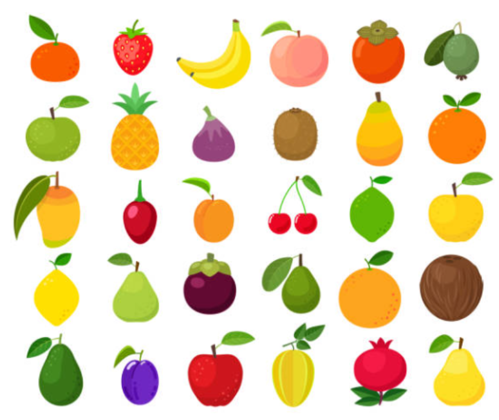
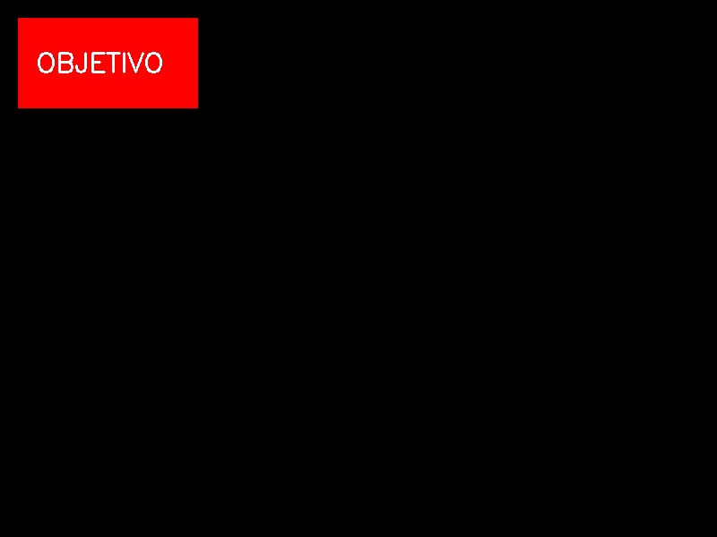
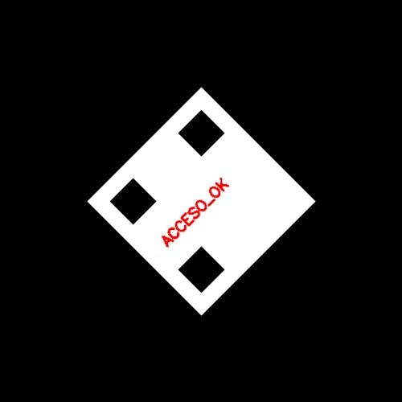
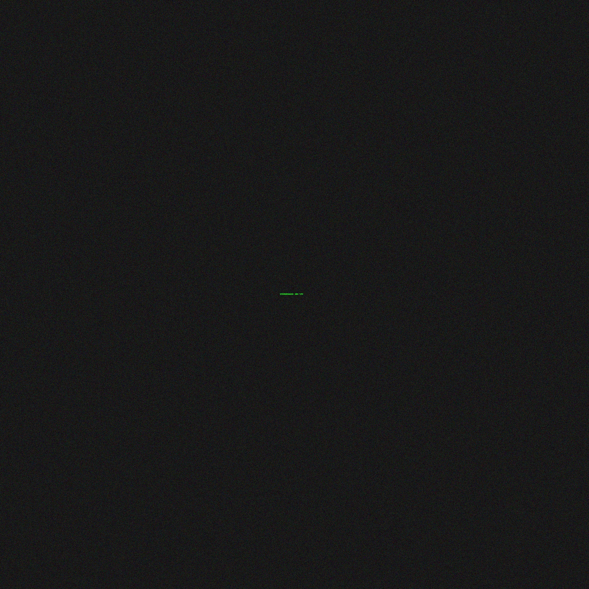

Apuntes Graficación Tema 1.5, 1.6 y 2.5: Imagen (formatos), mapas de bits y fuentes
Índice
- Manual de Instalación de Git
- Manual de Instalación de Python en Windows
- Entornos Virtuales en Python
- ¿Qué es un Entorno Virtual?
- Preparación: Instalación de Python y Visual Studio Code
- Crear un Entorno Virtual
- Activar el Entorno Virtual
- Configurar el Entorno Virtual en Visual Studio Code
- Instalar Paquetes en el Entorno Virtual
- Administrar Paquetes
- Desactivar el Entorno Virtual
- Eliminar el Entorno Virtual
- Consejos Adicionales para VS Code
- Entornos virtuales en Python (Windows + VS Code)
- 1. ¿Qué es un entorno virtual?
- 2. Requisitos previos
- 3. Crear un entorno virtual
- 4. Activar el entorno virtual
- 5. Problema común: PowerShell bloquea Activate.ps1
- 6. Desactivar el entorno virtual
- 7. Instalar paquetes dentro del entorno
- 8. Integrar el entorno en VS Code
- 9. Configuración manual en settings.json
- 10. Diferencias entre los scripts de activación
- 11. Buenas prácticas
- 12. Ejemplo de flujo completo
- Instalación de requerimientos
- Manual de Entornos Virtuales en Python
- Introducción
- Flujo de Trabajo Básico
- Gestión de paquetes
- El archivo de Requerimientos
- Exportar dependencias
- Instalar desde el archivo
- Tips de Limpieza
- Entornos Virtuales Python (Edición Windows)
- Requisitos Previos
- Flujo de Trabajo en Windows
- Gestión de Librerías con PIP
- Uso de Entornos en Emacs (Windows)
- Solución de Problemas Comunes en Windows
- Desactivación y Limpieza
- Agregar a jupyter notebook
- Introducción a la Graficación por computadora
- Graficación por Computadora
- ¿Qué es una imagen? (definición formal)
- Imagen continua, muestreo y cuantización
- Representación matricial y tensores
- Transformaciones de intensidad (píxel a píxel)
- Color: modelos y conversiones
- Filtrado espacial (convolución) y operadores diferenciales
- Dominio de la frecuencia (DFT 2D)
- Transformada discreta de Fourier 2D
- Formación de imagen (modelo pinhole simplificado)
- Iluminación lambertiana (intensidad difusa)
- Estadística básica de intensidades (útil para normalización)
- Modelos de Color: RGB, CMY, HSV y HSL
- Introducción
- Modelo de Color RGB (Red, Green, Blue)
- Definición
- Funcionamiento de la Mezcla Aditiva
- Espacio de Color RGB
- Conversión a otros modelos de color
- Aplicaciones del Modelo RGB
- Limitaciones del Modelo RGB
- Modelo CMY (Cyan, Magenta, Yellow)
- Modelo HSV (Hue, Saturation, Value)
- Modelo HSL (Hue, Saturation, Lightness)
- Función Bitwise opencv
- Definición: Operación Bit a Bit
- Operadores Puntuales
- Explicación detallada de los Momentos
- Cálculo de los momentos espaciales (m00)
- Cálculo exacto del centroide con momentos
- Comparación entre Centroide (momentos) y Bounding Box (extremos)
- Proceso de Multiplicación de una Matriz de Transformación por una Coordenada de Píxel
- Transformaciones Geométricas en Imágenes
- Landmarks
- Detección de Manos con MediaPipe en Python
- 1.5. Formatos de imagen
- 1.6. Procesamiento de mapas de bits. Fractales
- Qué es un “mapa de bits”
- Profundidad de bits y rango
- Paleta vs RGB directo
- Operaciones típicas (pixel a pixel)
- Umbralizado (binarización)
- Redimensionado (resampling)
- Convoluciones (filtrado)
- Fractales (idea general)
- Fractal de Mandelbrot
- Generación de Mandelbrot (Python + NumPy)
- Coloreado (mejorar resultados)
- Complejidad y optimización
- 2.5. Uso y creación de fuentes de texto
- Qué es una fuente (concepto)
- Diferencia: “vectorial” vs “mapa de bits”
- Formatos de fuentes comunes
- Uso de fuentes en aplicaciones
- Consideraciones prácticas
- Creación de fuentes (flujo de trabajo típico)
- Herramientas para crear
- Exportación y validación
- Buenas prácticas (para que la fuente se vea bien)
- Actividades
- Programación
- Programas Unidad 1
- Ejemplos de Transformaciones Geométricas en Modo Raw en Python
- Ejemplos de Transformaciones Geométricas en Python usando OpenCV
- Primitivas de Dibujo
- Parametricas
- Segmentación de color mediante el modelo de color HSV
- Capa de Harry Potter
- Efecto Gris np.where
- Flujo optico
- Ejemplo de clasificación utilizando Haarcascades
- OpenGL
- Descripción de la Proyección Isométrica
- Opengl Ejemplo
- Introducción a OpenGL
- Primitivas 2D de OpenGL
- Figuras 3D de OpenGL
- Funciones de Figuras GLU (OpenGL Utility Library)
- Funciones de Figuras GLUT (OpenGL Utility Toolkit)
- Funciones Auxiliares
- Funciones Comunes de OpenGL
- Funciones de GLFW
- Funciones de GLU
- Sólidos Platónicos en OpenGL
- Pipeline de Renderizado OpenGL
- Tutorial de gluPerspective en OpenGL
- Objetos de Glut
- Transformaciones en OpenGL
- Introducción a las Texturas en OpenGL
- Introducción a la Iluminación en OpenGL
- Configuración de Materiales
- Funciones Principales de OpenGL
- Exploración de Cámara con gluLookAt (PyOpenGL/GLFW)
- gluLookAt
- Concepto visual de la cámara virtual
- Parámetros de gluLookAt explicados visualmente
- Funcionamiento matemático interno
- Ejemplo básico completo
- Cámara orbital (muy usado en animación)
- Cámara en primera persona (FPS)
- Cámara en tercera persona (estilo "behind the character")
- Casos especiales y errores comunes
- Relación entre gluLookAt y matrices modernas
- Ejercicio 1: Crear una cámara que siga un objeto
- Ejercicio 2: Implementar una cámara que siempre mire un punto móvil
- Ejercicio 3: Crear tres vistas diferentes
- Diferencia entre Mover Objeto vs Mover Cámara
- Consejos y Buenas Prácticas
- MediaPipe + OpenGL + GLFW
- Referencias
- Apéndice: Tabla de Referencia Rápida
- Proyecto Enero Junio Final 2025
- Respuestas Examen.
- 1) ¿Qué función del código se encarga de construir geometría 3D mediante tiras de cuadriláteros?
- 2) ¿Qué instrucción activa la evaluación de profundidad en OpenGL?
- 3) ¿Qué función define la posición y orientación de la cámara?
- 4) ¿Qué variable controla la velocidad del movimiento de la cámara?
- 5) ¿Qué callback actualiza el estado de las teclas presionadas?
- 6) ¿Qué hace glPushMatrix y glPopMatrix en el código?
- 7) ¿Qué eje se modifica cuando usas W y S?
- 8) ¿Qué color corresponde al iris (parte negra) en draweye?
- 9) ¿Qué parámetro de gluPerspective controla cuánto "zoom" tiene la cámara?
- 10) ¿Cuál es el propósito de glfw.swapbuffers(window)?
- 11) Explica en tus palabras cómo funciona processinput para mover la cámara.
- 12) ¿Por qué es necesario llamar glLoadIdentity antes de gluLookAt?
- 13) En drawsphere, ¿para qué sirve glNormal3f?
- 14) Explica brevemente qué hace el ciclo principal (game loop) en main.
- 15) ¿Qué diferencia hay entre glTranslatef y gluLookAt para mover la escena?
- 16) ¿Qué pasaría si eliminaras glEnable(GLCOLORMATERIAL)?
- 17) ¿Por qué draweye tiene varias esferas con diferentes glTranslatef?
- 18) ¿Por qué se usa GLQUADSTRIP en lugar de GLTRIANGLES en la esfera?
- 19) ¿Qué ocurre si no llamas glfw.pollevents() dentro del loop?
- 20) ¿Cuál es el propósito de glClear(GLCOLORBUFFERBIT | GLDEPTHBUFFERBIT)?
- Proyectos
- Practicas
- Enero Junio 2026
- Misión 1: El Artefacto Desplazado (Traslación)
- Misión 2: El Código Mareado (Rotación)
- Misión 3: El Microfilm Oculto (Escalamiento)
- Instrucciones para los Agentes (Estudiantes)
- Operación Espejismo (Graficación Táctica Examen)
- Introducción a la Misión
- Misión 1: El Mensaje Subexpuesto (Operadores Puntuales)
- Misión 2: El QR Fragmentado (Transformaciones Geométricas)
- Misión 3: El Sello Biométrico (Primitivas de Dibujo)
- Misión 4: La Frecuencia Térmica (Modelo HSV)
- Misión 5: La Antena Parabólica (Ecuaciones Paramétricas)
- Entregable: Reporte de Misión (Formato Markdown Examen)
- Operación Espejismo II (Graficación Táctica Examen)
- Introducción a la Misión
- Misión 1: El Mensaje Subexpuesto II (Operadores Puntuales en 2 fases)
- Misión 2: El QR Fragmentado II (Traslación + Rotación + Ensamble)
- Misión 3: El Sello Biométrico II (Primitivas + Simetría)
- Misión 4: La Frecuencia Térmica II (HSV + máscara + “limpieza” por convolución)
- Misión 5: La Huella de Canales (Separación BGR + combinación)
- Entregable: Reporte de Misión (Formato Markdown Examen)
- Formato de Entrega (Obligatorio)
t
Manual de Instalación de Git
Instalación en Windows
- Descarga el instalador desde [https://git-scm.com/].
- Haz clic en el botón “Download for Windows”.
- Ejecuta el archivo descargado (.exe).
- Configuración de las opciones recomendadas durante la instalación:
- Seleccionar el editor por defecto (por ejemplo, Vim o Notepad++).
- Usar Git desde la línea de comandos y aplicaciones de terceros (opción recomendada).
- Opciones de formato de fin de línea: selecciona la opción predeterminada para Windows.
- Completa la instalación.
- Verifica la instalación abriendo Git Bash o Command Prompt y ejecutando:
git --version
Instalación en macOS
Método recomendado: usando Homebrew
- Si tienes Homebrew instalado, abre la terminal y ejecuta:
brew install git
Método alternativo: paquete descargado
- Descarga el instalador desde [https://git-scm.com/].
- Ejecuta el paquete descargado (.dmg).
- Sigue las instrucciones de instalación.
Verifica la instalación abriendo la terminal y ejecutando:
git --version
Instalación en Linux (Distribuciones basadas en Debian/Ubuntu)
Abre la terminal y ejecuta:
sudo apt update sudo apt install gitVerifica la instalación ejecutando:
git --version
Configuración básica de Git
Configura tu nombre de usuario:
git config --global user.name "Tu Nombre"Configura tu correo electrónico:
git config --global user.email "tuemail@ejemplo.com"Verifica la configuración:
git config --list
Actualización de Git
- Windows: Ejecuta el instalador más reciente desde el sitio oficial.
macOS: Ejecuta:
brew upgrade git
Linux: Ejecuta:
sudo apt update && sudo apt upgrade git
Configurar Llave SSH con GitHub
1. Verificar si ya tienes una llave SSH
Abre la terminal y ejecuta el siguiente comando para verificar si ya tienes llaves SSH generadas:
ls -al ~/.ssh
- Si ves archivos como `idrsa` o `ided25519`, ya tienes llaves SSH. Si no, continúa con el siguiente paso.
2. Generar una nueva llave SSH
Si no tienes una llave SSH, genera una nueva con el siguiente comando (puedes cambiar `ed25519` por `rsa` si lo prefieres):
ssh-keygen -t ed25519 -C "tuemail@ejemplo.com"- Cuando se te pregunte por la ubicación del archivo, presiona `Enter` para usar la ubicación predeterminada (`~/.ssh/ided25519`).
- Puedes agregar una contraseña para proteger tu llave, pero también puedes dejarlo en blanco.
3. Añadir la llave SSH al agente SSH
Para añadir tu nueva llave SSH al agente, asegúrate de que esté en ejecución:
eval "$(ssh-agent -s)"
Añade la llave SSH al agente:
ssh-add ~/.ssh/id_ed25519
4. Copiar la llave SSH pública
Copia el contenido de tu llave pública para añadirla a GitHub:
cat ~/.ssh/id_ed25519.pub
- Copia el texto que aparece en la terminal (comienza con `ssh-ed25519` o `ssh-rsa`).
5. Añadir la llave SSH a GitHub
- Inicia sesión en tu cuenta de GitHub.
- Ve a la sección de Settings (Configuración).
- En el menú lateral izquierdo, selecciona SSH and GPG keys.
- Haz clic en New SSH key.
- Introduce un título para identificar la llave (por ejemplo, "Mi computadora personal") y pega la llave pública copiada en el campo correspondiente.
- Haz clic en Add SSH key.
6. Probar la conexión SSH con GitHub
Para verificar que todo está configurado correctamente, ejecuta el siguiente comando:
ssh -T git@github.com
- Si es la primera vez que te conectas, verás una advertencia preguntando si deseas continuar. Escribe `yes`.
Si la conexión es exitosa, verás un mensaje similar a:
Hi username! You've successfully authenticated, but GitHub does not provide shell access.
7. Usar la conexión SSH en repositorios de GitHub
Para clonar un repositorio usando SSH, utiliza la URL SSH del repositorio:
git clone git@github.com:usuario/repo.git
Configurar Llave SSH con GitHub en Windows
- Git Bash: En Windows, utilizas Git Bash como terminal para ejecutar los comandos, en lugar de la terminal estándar de Linux o macOS.
- Ruta de las llaves: En Git Bash, las rutas siguen el formato Unix (c/Users/tuusuario.ssh/ en lugar de C:\Users\tuusuario\.ssh).
1. Abrir Git Bash
- Abre Git Bash (es la terminal que se instala junto con Git en Windows).
2. Verificar si ya tienes una llave SSH
En la terminal de Git Bash, ejecuta el siguiente comando para ver si ya tienes llaves SSH generadas:
ls -al ~/.ssh
- Si ves archivos como `idrsa` o `ided25519`, ya tienes llaves SSH. Si no, continúa con el siguiente paso.
3. Generar una nueva llave SSH
Si no tienes una llave SSH, genera una nueva con el siguiente comando:
ssh-keygen -t ed25519 -C "tuemail@ejemplo.com"- Cuando se te pregunte por la ubicación del archivo, presiona `Enter` para usar la ubicación predeterminada (`/c/Users/tuusuario/.ssh/ided25519`).
- Puedes agregar una contraseña para proteger tu llave, pero también puedes dejar el campo vacío si no deseas protegerla con una contraseña.
4. Añadir la llave SSH al agente SSH
Asegúrate de que el agente SSH esté en ejecución. En Git Bash, ejecuta:
eval "$(ssh-agent -s)"
Añade tu nueva llave SSH al agente:
ssh-add ~/.ssh/id_ed25519
5. Copiar la llave SSH pública
Para añadir la llave SSH a GitHub, necesitas copiar tu llave pública. Ejecuta el siguiente comando en Git Bash:
cat ~/.ssh/id_ed25519.pub
- Copia el texto que aparece en la terminal, que comenzará con `ssh-ed25519` o `ssh-rsa`.
6. Añadir la llave SSH a GitHub
- Abre tu navegador web e inicia sesión en GitHub.
- Ve a la sección de Settings (Configuración).
- En el menú lateral izquierdo, selecciona SSH and GPG keys.
- Haz clic en New SSH key.
- Ponle un título descriptivo (como "Mi computadora con Windows") y pega la llave pública copiada en el campo correspondiente.
- Haz clic en Add SSH key.
7. Probar la conexión SSH con GitHub
Para asegurarte de que todo está correctamente configurado, prueba la conexión con GitHub desde Git Bash:
ssh -T git@github.com
- Si es la primera vez que te conectas, te pedirá confirmar la conexión escribiendo `yes`.
Si todo está bien, deberías ver un mensaje como:
Hi username! You've successfully authenticated, but GitHub does not provide shell access.
8. Usar la conexión SSH en repositorios de GitHub
Para clonar un repositorio usando la URL SSH, ejecuta:
git clone git@github.com:usuario/repo.git
Manual de Git en Windows
1. Instalar Git en Windows
- Visita [https://git-scm.com/](https://git-scm.com/) y descarga el instalador de Git para Windows.
- Ejecuta el archivo descargado (.exe).
- Durante la instalación, selecciona las opciones predeterminadas recomendadas.
- Abre Git Bash al finalizar la instalación.
2. Configurar Git
- Abre Git Bash y ejecuta los siguientes comandos para configurar tu identidad:
git config --global user.name "Tu Nombre" git config --global user.email "tuemail@ejemplo.com"
- Para verificar la configuración:
git config --list
3. Clonar un repositorio
- Para clonar un repositorio desde GitHub, usa el siguiente comando:
git clone https://github.com/usuario/repo.git
Esto descargará el repositorio a tu computadora.
4. Comandos básicos de Git
- Verificar el estado del repositorio:
git status
- Añadir archivos al área de preparación (staging):
git add nombre_de_archivo
- Para añadir todos los archivos modificados:
git add .
- Hacer un commit (guardar los cambios localmente):
git commit -m "Mensaje de commit"
- Enviar los cambios al repositorio remoto:
git push
5. Actualizar el repositorio local
- Para obtener los últimos cambios del repositorio remoto:
git pull
6. Crear y cambiar de ramas (branches)
- Crear una nueva rama:
git branch nombre_de_la_rama
- Cambiar a una rama existente:
git checkout nombre_de_la_rama
- Crear y cambiar a una nueva rama:
git checkout -b nombre_de_la_rama
7. Ver historial de commits
- Para ver el historial de cambios del repositorio:
git log
- Para un historial más compacto:
git log --oneline
8. Configurar una llave SSH
- Generar una llave SSH:
ssh-keygen -t ed25519 -C "tuemail@ejemplo.com"
- Añadir la llave al agente SSH:
eval "$(ssh-agent -s)" ssh-add ~/.ssh/id_ed25519
- Copiar la llave pública:
cat ~/.ssh/id_ed25519.pub
- Añádela a tu cuenta de GitHub en Settings > SSH and GPG keys.
Manual de Instalación de Python en Windows
Paso 1: Descarga de Python
- Abre el navegador web y visita el sitio: https://www.python.org.
- Ve a la pestaña "Downloads" y selecciona la versión más reciente para Windows.
- Haz clic en el botón que dice "Download Python (versión actual)" para descargar el instalador de Python.
Paso 2: Ejecutar el instalador
- Ejecuta el archivo descargado (.exe).
- Asegúrate de marcar la opción
Add Python to PATHantes de proceder con la instalación. - Haz clic en
Install Nowpara instalar con la configuración predeterminada. - Espera a que finalice el proceso de instalación y verifica el mensaje de éxito.
Paso 3: Verificación de la instalación
- Abre la línea de comandos (cmd) escribiendo "cmd" en el menú de inicio.
Verifica que Python se instaló correctamente ejecutando el siguiente comando:
python --version
Abre el intérprete de Python escribiendo
pythonen la línea de comandos:python
Si todo está bien, verás el prompt interactivo de Python (tres símbolos
>>>).- Para salir del intérprete, escribe
exit()o presionaCtrl + Zseguido deEnter.
Paso 4: Instalar pip y otros paquetes
Verifica si pip está instalado escribiendo en la línea de comandos:
pip --version
Si necesitas instalar paquetes, usa pip con el siguiente comando:
pip install nombre_paquete
Paso 5: Configuración del entorno de desarrollo
- Instala un editor de código como:
- Configura el editor instalando las extensiones de Python. En Visual Studio Code, busca la extensión "Python" en el panel de extensiones.
Paso 6: Actualización de Python (opcional)
- Para actualizar Python a una nueva versión en el futuro, descarga la última versión desde python.org y sigue los pasos de instalación.
Entornos Virtuales en Python
¿Qué es un Entorno Virtual?
Un entorno virtual es una herramienta que permite crear un espacio aislado para instalar dependencias específicas de un proyecto en Python. Esto evita conflictos entre paquetes de diferentes proyectos.
Preparación: Instalación de Python y Visual Studio Code
Asegúrate de tener Python instalado en tu sistema. Puedes verificarlo con:
python --version
- Descarga e instala [Visual Studio Code](https://code.visualstudio.com/).
- Instala la extensión de Python en VS Code para habilitar características avanzadas, como la detección de entornos virtuales, depuración, y autocompletado.
Crear un Entorno Virtual
Para crear un entorno virtual en la carpeta de tu proyecto:
- Abre la terminal integrada en VS Code (menú Terminal > New Terminal).
Usa el siguiente comando para crear el entorno virtual:
python -m venv nombre_entorno
- Sustituye nombreentorno con el nombre que quieras para el entorno virtual, como `env` o `venv`.
Activar el Entorno Virtual
Para activar el entorno virtual en la terminal de VS Code:
En Linux/macOS:
source nombre_entorno/bin/activateEn Windows:
.\nombre_entorno\Scripts\activate
Cuando el entorno esté activado, verás el nombre del entorno en la terminal.
Configurar el Entorno Virtual en Visual Studio Code
Para que VS Code use el entorno virtual para ejecutar el código y detectar dependencias:
- Presiona `Ctrl+Shift+P` (o `Cmd+Shift+P` en macOS) para abrir la Command Palette.
- Busca y selecciona `Python: Select Interpreter`.
- En la lista de intérpretes, selecciona el que corresponde a tu entorno virtual (debería tener el nombre del entorno que creaste).
Instalar Paquetes en el Entorno Virtual
Con el entorno activado en la terminal de VS Code, puedes instalar paquetes con `pip`:
pip install nombre_paquete
Administrar Paquetes
Para ver los paquetes instalados en el entorno virtual:
pip list
También puedes usar el archivo requirements.txt para gestionar dependencias del proyecto. Para crearlo:
Ejecuta:
pip freeze > requirements.txt
Para instalar todas las dependencias listadas en requirements.txt en otro entorno, usa:
pip install -r requirements.txt
Desactivar el Entorno Virtual
Para desactivar el entorno virtual en la terminal, ejecuta:
deactivate
Eliminar el Entorno Virtual
Si deseas eliminar el entorno virtual, puedes simplemente borrar la carpeta:
rm -rf nombre_entorno
Consejos Adicionales para VS Code
Terminal automática: Cuando creas y activas un entorno en VS Code, puedes configurar el archivo `.vscode/settings.json` para que VS Code lo active automáticamente en cada terminal nueva:
{ "python.venvPath": "${workspaceFolder}/nombre_entorno", "python.defaultInterpreterPath": "${workspaceFolder}/nombre_entorno/bin/python" }
Entornos virtuales en Python (Windows + VS Code)
1. ¿Qué es un entorno virtual?
Un entorno virtual (venv) es un espacio aislado para instalar librerías sin afectar el Python del sistema ni otros proyectos.
Cada proyecto debe tener su propio venv para evitar conflictos.
2. Requisitos previos
- Tener Python instalado (>= 3.6 recomendado).
Verificar en la terminal (CMD o PowerShell):
python --version pip --version
Si no aparecen, asegúrate de que Python esté en el PATH de Windows.
3. Crear un entorno virtual
Dentro de la carpeta de tu proyecto, ejecuta:
python -m venv venv
Esto creará una carpeta llamada venv/.
Dentro estarán los binarios y scripts de activación.
4. Activar el entorno virtual
Según la terminal que uses en Windows:
CMD:
venv\Scripts\activate.bat
PowerShell:
.\venv\Scripts\Activate.ps1
Git Bash (si lo usas):
source venv/Scripts/activate
Cuando está activo verás algo como:
(venv) C:\Users\TuUsuario\proyecto>
5. Problema común: PowerShell bloquea Activate.ps1
Por seguridad, PowerShell no permite ejecutar scripts .ps1.
Verás un error como:
Execution Policy restricts running scripts
Para solucionarlo (solo una vez):
- Abre PowerShell como Administrador.
Ejecuta:
Set-ExecutionPolicy -Scope CurrentUser -ExecutionPolicy RemoteSigned
Esto permite ejecutar scripts locales como Activate.ps1.
6. Desactivar el entorno virtual
Para salir del entorno:
deactivate
7. Instalar paquetes dentro del entorno
Ejemplo:
pip install requests
Guardar dependencias en un archivo:
pip freeze > requirements.txt
Instalarlas en otro entorno:
pip install -r requirements.txt
8. Integrar el entorno en VS Code
- Instalar la extensión Python (Microsoft).
- Abrir la carpeta del proyecto en VS Code.
Ctrl+Shift+P→ escribir "Python: Select Interpreter". Si no aparece, configurarlo manualmente (ver abajo).- Seleccionar el intérprete de
venv\Scripts\python.exe.
9. Configuración manual en settings.json
Si VS Code no detecta el intérprete, forzar la ruta en
/.vscode/settings.json:
{
"python.defaultInterpreterPath": "C:\\Users\\TuUsuario\\proyecto\\venv\\Scripts\\python.exe",
"python.terminal.activateEnvironment": true
}
10. Diferencias entre los scripts de activación
Dentro de venv\Scripts verás varios archivos:
activate.bat→ Para CMD.Activate.ps1→ Para PowerShell.activate(sin extensión) → Para Git Bash / WSL.deactivate.bat→ Desactiva el entorno en CMD.
Debes usar el que corresponda a tu terminal actual.
11. Buenas prácticas
- Un venv por proyecto.
- Incluir
venv/en el .gitignore si usas Git. - Siempre usar requirements.txt para compartir dependencias.
- Activar el entorno desde la terminal integrada de VS Code.
12. Ejemplo de flujo completo
Crear proyecto:
mkdir mi_proyecto cd mi_proyecto python -m venv venv
Activar entorno:
.\venv\Scripts\Activate.ps1
Instalar dependencias:
pip install requests flask pip freeze > requirements.txt
Configurar VS Code en
.vscode/settings.json:{ "python.defaultInterpreterPath": "${workspaceFolder}\\.venv\\Scripts\\python.exe", "python.analysis.extraPaths": ["${workspaceFolder}"], "python.terminal.activateEnvironment": true }Probar en VS Code:
import requests print("Hola desde el venv!")
Instalación de requerimientos
Verificación de Python
Antes de instalar las dependencias, verifique que el sistema cuente con Python versión 3.12 .
python --version
En caso de que el comando anterior no esté disponible, intente:
python3 --version
Creación del entorno virtual
Se recomienda crear un entorno virtual para aislar las dependencias del proyecto y evitar conflictos entre versiones de librerías.
python -m venv mlp_env
Activación del entorno virtual
La activación del entorno virtual depende del sistema operativo y del intérprete de comandos utilizado.
GNU/Linux y macOS
source mlp_env/bin/activate
Windows – Símbolo del sistema (CMD)
Si se utiliza el Símbolo del sistema (cmd.exe), ejecute:
mlp_env\Scripts\activate.bat
Windows – PowerShell
Si se utiliza Windows PowerShell, ejecute:
mlp_env\Scripts\Activate.ps1
En caso de que la ejecución de scripts esté deshabilitada, habilítela temporalmente con:
Set-ExecutionPolicy -ExecutionPolicy RemoteSigned -Scope Process
Posteriormente, vuelva a ejecutar el comando de activación.
Windows – Git Bash
Si se utiliza Git Bash, ejecute:
source mlp_env/Scripts/activate
Una vez activado el entorno virtual, el nombre del entorno aparecerá entre paréntesis al inicio de la línea de comandos.
Actualización del gestor de paquetes
Antes de instalar las librerías, se recomienda actualizar el gestor de paquetes
pip.
pip install --upgrade pip
Instalación de dependencias
Ejecute el siguiente comando para instalar los requerimientos del módulo Perceptrón Multicapa feedforward.
pip install opencv-contrib-python
Desactivación del entorno virtual
Una vez finalizado el trabajo, el entorno virtual puede desactivarse con el siguiente comando:
deactivate
Manual de Entornos Virtuales en Python
Introducción
El uso de entornos virtuales es esencial para mantener las
dependencias de tus proyectos aisladas. En este manual aprenderás a
gestionarlos usando el módulo estándar venv.
Flujo de Trabajo Básico
1. Creación del entorno
Para crear un entorno virtual, navega a la raíz de tu proyecto en la terminal (o dentro de un buffer de Emacs con M-x shell) y ejecuta:
python -m venv .venv
Nota: El nombre .venv es una convención que hace que el directorio sea oculto en sistemas Unix.
Gestión de paquetes
Una vez activado (verás el prefijo (.venv) en tu prompt), puedes instalar librerías:
pip install requests pandas
El archivo de Requerimientos
Es fundamental para la reproducibilidad del proyecto.
Exportar dependencias
pip freeze > requirements.txt
Instalar desde el archivo
pip install -r requirements.txt
Tips de Limpieza
Para salir del entorno virtual:
deactivate
Para borrar el entorno, simplemente elimina la carpeta:
rm -rf .venv # En Linux/macOS rmdir /s /q .venv # En Windows
—
"Keep your global Python clean, keep your projects isolated."
Entornos Virtuales Python (Edición Windows)
Requisitos Previos
- Tener instalado Python (descargado de python.org o la Microsoft Store).
- Durante la instalación, asegúrate de marcar la casilla: "Add Python to PATH".
Flujo de Trabajo en Windows
1. Crear el Entorno Virtual
Abre tu terminal (PowerShell o CMD) en la carpeta de tu proyecto. El comando es el mismo para ambos:
python -m venv venv
2. El Paso Crítico: La Activación
En Windows, la activación depende de qué terminal estés usando.
- Opción A: PowerShell (Recomendado)
Si es la primera vez que usas scripts en Windows, podrías recibir un error de seguridad. Primero, ejecuta esto como administrador (solo una vez):
Set-ExecutionPolicy -ExecutionPolicy RemoteSigned -Scope CurrentUser
Luego, para activar el entorno:
.\venv\Scripts\Activate.ps1
- Opción B: Símbolo del Sistema (CMD)
.\venv\Scripts\activate.bat
3. Confirmación
Sabrás que el entorno está activo porque el nombre (venv) aparecerá a la izquierda de la ruta en tu terminal:
#+example
(venv) C:\Proyectos\MiProyecto>
#+example
Gestión de Librerías con PIP
Instalación de paquetes
Una vez activo el entorno, instala lo que necesites:
pip install pandas requests openpyxl
Congelar dependencias (Compartir proyecto)
Para que otros participantes tengan exactamente lo mismo que tú:
pip freeze > requirements.txt
Instalar desde un archivo recibido
Si un compañero te pasa su requirements.txt:
pip install -r requirements.txt
Uso de Entornos en Emacs (Windows)
Para que Emacs en Windows gestione bien el entorno, añade esto a tu archivo de configuración (init.el o .emacs):
Instalación del paquete pyvenv
(use-package pyvenv :ensure t :config (pyvenv-mode 1))
Cómo activarlo dentro de Emacs
- Presiona
M-x pyvenv-activate. - Emacs te pedirá la ruta. Navega hasta la carpeta
venvde tu proyecto. - Al seleccionarla, Emacs usará ese intérprete de Python para todos los scripts que ejecutes.
Solución de Problemas Comunes en Windows
| Error / Problema | Solución |
| :--- | :--- |
| "python" no se reconoce | Reinstala Python y marca "Add to PATH" o usa el comando `py`. |
| Error de "Execution Policy" | Ejecuta `Set-ExecutionPolicy RemoteSigned -Scope CurrentUser`. |
| No aparece el (venv) | Asegúrate de usar el comando de activación correcto para tu terminal (.ps1 vs .bat). |
Desactivación y Limpieza
Para salir del entorno:
deactivate
Si quieres borrar el entorno por completo (para empezar de cero):
rmdir /s /q venv
—
Recordatorio: Nunca incluyas la carpeta venv en tus archivos compartidos o en tu repositorio de Git. Solo comparte el código y el archivo requirements.txt.
Agregar a jupyter notebook
pip install ipykernel
python -m ipykernel install --user --name=redes --display-name="redes"
Introducción a la Graficación por computadora
Graficación por Computadora
La Graficación por Computadora (o simplemente Graficación) se enfoca en el estudio y aplicación de técnicas, algoritmos y herramientas para la generación y manipulación de imágenes digitales mediante el uso de computadoras. Es una rama de la informática que combina conceptos de matemáticas, física y programación para crear imágenes, animaciones y efectos visuales. A continuación, te describo los aspectos clave de esta disciplina:
Objetivos de la Graficación por Computadora
- Generación de imágenes: Crear imágenes digitales a partir de descripciones matemáticas y geométricas de objetos, en 2D y 3D.
- Modelado de objetos: Crear representaciones matemáticas de objetos y escenas usando técnicas como polígonos, mallas y curvas.
- Renderizado: Convertir representaciones matemáticas en imágenes visuales, simulando iluminación, sombras y texturas.
- Transformaciones geométricas: Aplicar traslaciones, rotaciones, escalados y proyecciones a objetos en sistemas de coordenadas 2D y 3D.
- Iluminación y sombreado: Simular cómo la luz interactúa con los objetos para crear efectos realistas.
- Animación: Generar secuencias de imágenes que cambian a lo largo del tiempo, incluyendo movimientos y simulaciones físicas.
- Texturizado: Aplicar imágenes (texturas) sobre superficies para dar detalles visuales sin aumentar la complejidad geométrica.
- Interacción gráfica: Estudiar técnicas para interactuar con imágenes o modelos gráficos, como interfaces gráficas, realidad aumentada o virtual.
Áreas de estudio en Graficación por Computadora
- Matemáticas: Uso de geometría y álgebra lineal para realizar transformaciones geométricas y modelar objetos.
- Programación: Conocimiento de lenguajes como C, C++, Python, GLSL y HLSL para implementar algoritmos gráficos.
- Algoritmos gráficos: Estudio de algoritmos como el trazado de rayos (ray tracing), rasterización y z-buffering.
- Herramientas gráficas: Uso de APIs como OpenGL, DirectX o Vulkan para crear gráficos y animaciones.
- Física aplicada: Simulación de fenómenos físicos como gravedad y movimiento para generar gráficos realistas.
Aplicaciones de la Graficación por Computadora
- Videojuegos: Creación de ambientes, personajes y efectos visuales.
- Cine y efectos visuales: Creación de efectos especiales y animación por computadora.
- Diseño industrial y arquitectónico: Modelado y visualización de prototipos y estructuras.
- Simulaciones: Uso en medicina, aeronáutica y otras industrias para crear simulaciones realistas.
- Realidad virtual y aumentada: Generación de entornos interactivos virtuales.
Temas principales en Graficación por Computadora
- Modelado 2D y 3D
- Algoritmos de rasterización
- Transformaciones y proyecciones
- Renderizado y sombreado
- Texturizado
- Iluminación global y local
- Técnicas de animación
- Programación de shaders
- Interacción gráfica y diseño de interfaces
¿Qué es una imagen? (definición formal)
Una imagen digital puede verse como una función discreta bidimensional: \[ I : D \subset \mathbb{Z}^2 \to \mathbb{R}^k \] donde \(D=\{0,\dots,M-1\}\times\{0,\dots,N-1\}\) es la malla de píxeles y \(k\) es el número de canales:
- Escala de grises: \(k=1\), \(I(x,y)\in[0,L-1]\).
- Color RGB: \(k=3\), \(I(x,y)=(R,G,B)\), con cada canal en \([0,L-1]\).
Imagen continua, muestreo y cuantización
- Modelo continuo: \(f:\mathbb{R}^2\to\mathbb{R}\).
- Muestreo espacial (pasos \(T_x,T_y\)):
\[ I[m,n]=f(mT_x,nT_y),\quad m,n\in\mathbb{Z}. \]
- Cuantización (niveles \(L\)):
\[ Q(I)=\operatorname{round}\!\left(\frac{L-1}{I_{\max}-I_{\min}}(I-I_{\min})\right). \]
- Criterio de Nyquist (no aliasing): la frecuencia de muestreo debe ser al menos el doble de la frecuencia espacial máxima del contenido.
Representación matricial y tensores
Una imagen gris \(M\times N\) es una matriz: \[ I=\big[I(m,n)\big]_{m=0..M-1,\;n=0..N-1}. \] Una imagen RGB es un tensor \(M\times N\times 3\) o, equivalentemente, tres matrices \(R,G,B\).
Transformaciones de intensidad (píxel a píxel)
- Brillo:
\[ I'(x,y)=I(x,y)+\beta. \]
- Contraste lineal:
\[ I'(x,y)=\alpha\,I(x,y)+\beta. \]
- Clampeo (saturación a \([0,L-1]\)):
\[ I''(x,y)=\min(\max(I'(x,y),0),L-1). \]
Color: modelos y conversiones
- De RGB a escala de grises (luminancia aproximada)
\[ Y \approx 0.2126\,R + 0.7152\,G + 0.0722\,B. \]
- Transformación lineal genérica
\begin{align*} \begin{bmatrix} C_1\\ C_2\\ C_3 \end{bmatrix} \quad = \quad \mathbf{M} \begin{bmatrix} R\\ G\\ B\end {bmatrix} + \mathbf{b}, \end{align*}con
\[ (\mathbf{M}\in\mathbb{R}^{3\times 3}), (\mathbf{b}\in\mathbb{R}^3). (Ej.: RGB↔YCbCr, RGB↔XYZ.) \]
- Geometría de imágenes (transformaciones espaciales)
Una transformación geométrica mueve coordenadas: \[ (x',y')=T(x,y). \]
- Afin (matriz \(2\times2\) + traslación)
\begin{align*} \begin{bmatrix}x'\\y'\end{bmatrix} = \underbrace{\begin{bmatrix}a&b\\c&d\end{bmatrix}}_{\text{rotación+escala+cisalla}} \begin{bmatrix}x\\y\end{bmatrix} + \begin{bmatrix}t_x\\t_y\end{bmatrix}. \end{align*} - Homografía (proyectiva) con coordenadas homogéneas
\[ \lambda\begin{bmatrix}x'\\y'\\1\end{bmatrix} = \mathbf{H} \begin{bmatrix}x\\y\\1\end{bmatrix},\quad \mathbf{H}\in\mathbb{R}^{3\times3}. \]
** Interpolación (para muestrear \(I\) en coordenadas no enteras) - Vecino más cercano: \(I'(x',y')=I(\operatorname{round}(x),\operatorname{round}(y))\).
- Bilineal:
\[ I'(x',y') = \sum_{i\in\{0,1\}}\sum_{j\in\{0,1\}} w_{ij}\, I(\lfloor x\rfloor+i,\lfloor y\rfloor+j), \] con pesos \(w_{ij}\) que dependen de las distancias fraccionales.
- Bicúbica: combinación cúbica 1D por filas y columnas.
Filtrado espacial (convolución) y operadores diferenciales
- Convolución discreta 2D
\[ (I * h)(x,y) = \sum_{u}\sum_{v} I(x-u,y-v)\,h(u,v). \]
- Nucleos frecuentes (ejemplos)
- Media (blur) \(3\times3\):
\[ h=\frac{1}{9}\begin{bmatrix}1&1&1\\1&1&1\\1&1&1\end{bmatrix}. \]
- Gaussiano (continua):
\[ G_\sigma(x,y)=\frac{1}{2\pi\sigma^2}\exp\!\left(-\frac{x^2+y^2}{2\sigma^2}\right). \]
- Sobel (gradiente):
\[ S_x=\begin{bmatrix}-1&0&1\\-2&0&2\\-1&0&1\end{bmatrix},\quad S_y=\begin{bmatrix}-1&-2&-1\\0&0&0\\1&2&1\end{bmatrix}. \]
- Magnitud y dirección del gradiente
\[ \nabla I = (I_x,I_y),\quad \|\nabla I\| = \sqrt{I_x^2+I_y^2},\quad \theta=\operatorname{atan2}(I_y,I_x). \]
- Laplaciano (detector de bordes)
\[ \nabla^2 I \approx \begin{bmatrix}0&1&0\\1&-4&1\\0&1&0\end{bmatrix} * I \quad\text{o}\quad \begin{bmatrix}1&1&1\\1&-8&1\\1&1&1\end{bmatrix} * I. \]
- LoG (Laplaciano de Gauss) — suaviza y deriva
\[ \text{LoG}_\sigma = \nabla^2(G_\sigma * I) = (\nabla^2 G_\sigma) * I. \]
Dominio de la frecuencia (DFT 2D)
Transformada discreta de Fourier 2D
\[ F(u,v)=\sum_{x=0}^{M-1}\sum_{y=0}^{N-1} I(x,y)\,e^{-j2\pi\left(\frac{ux}{M}+\frac{vy}{N}\right)}. \]
Formación de imagen (modelo pinhole simplificado)
- Proyección perspectiva
\begin{align*} \lambda \begin{bmatrix}x\\y\\1\end{bmatrix} =n \mathbf{K}\,[\,\mathbf{R}\mid\mathbf{t}\,] \begin{bmatrix}X\\Y\\Z\\1\end{bmatrix}, \quad \mathbf{K}= \begin{bmatrix}f_x&0&c_x\\0&f_y&c_y\\0&0&1\end{bmatrix}. \end{align*}(X,Y,Z) son coordenadas 3D; (x,y) coordenadas de imagen; (K) = parámetros intrínsecos; (R, t) = pose de la cámara.
Iluminación lambertiana (intensidad difusa)
\[ I \propto \rho\,(\mathbf{n}\cdot\mathbf{l}), \] albedo \(\rho\), normal \(\mathbf{n}\), dirección de luz \(\mathbf{l}\).
Estadística básica de intensidades (útil para normalización)
- Media:
\[ \mu=\frac{1}{MN}\sum_{x,y} I(x,y). \]
- Varianza:
\[ \sigma^2=\frac{1}{MN}\sum_{x,y}\big(I(x,y)-\mu\big)^2. \]
- Normalización z:
\[ I'(x,y)=\frac{I(x,y)-\mu}{\sigma}. \]
Modelos de Color: RGB, CMY, HSV y HSL
Introducción
Los modelos de color son representaciones matemáticas que describen cómo los colores pueden representarse en diversas formas utilizando valores numéricos. Estos modelos son esenciales en gráficos por computadora, procesamiento de imágenes y en la percepción del color. A continuación, se detallan los modelos más comunes: RGB, CMY, HSV y HSL.
Modelo de Color RGB (Red, Green, Blue)
Definición
El modelo de color RGB (Rojo, Verde, Azul) es un modelo de mezcla aditiva, que se utiliza principalmente en dispositivos que emiten luz, como pantallas, cámaras digitales y proyectores. Los tres colores primarios (Rojo, Verde y Azul) se combinan de diferentes maneras para crear una amplia gama de colores.
Funcionamiento de la Mezcla Aditiva
En el modelo RGB, los colores se generan mediante la combinación de luz. Cuanto más intensa es la luz en cada canal (rojo, verde o azul), más claro es el color resultante. Cuando todas las intensidades están al máximo, el color resultante es blanco; cuando todas las intensidades están al mínimo, el resultado es negro.
- Fórmula para la mezcla aditiva:
\[
\text{Color} = R \cdot \mathbf{r} + G \cdot \mathbf{g} + B \cdot \mathbf{b}
\]
donde:
- \(R\), \(G\) y \(B\) son las intensidades de los canales rojo, verde y azul, respectivamente.
- \( \mathbf{r} \), \( \mathbf{g} \) y \( \mathbf{b} \) son los vectores unitarios que representan los colores primarios.
- Ejemplo:
- Si \( R = 255 \), \( G = 0 \), \( B = 0 \), obtenemos un color rojo puro.
- Si \( R = 0 \), \( G = 255 \), \( B = 0 \), obtenemos un color verde puro.
- Si \( R = 255 \), \( G = 255 \), \( B = 0 \), obtenemos el color amarillo.
Espacio de Color RGB
El espacio de color RGB puede representarse como un cubo tridimensional, donde:
- El eje X corresponde al canal rojo (\(R\)),
- El eje Y al canal verde (\(G\)),
- Y el eje Z al canal azul (\(B\)).
Cada vértice del cubo representa un color primario o la combinación de ellos, como se muestra a continuación:
- \( (0, 0, 0) \): Negro (ausencia de luz).
- \( (255, 0, 0) \): Rojo.
- \( (0, 255, 0) \): Verde.
- \( (0, 0, 255) \): Azul.
- \( (255, 255, 255) \): Blanco (máxima intensidad en todos los canales).
- \( (255, 255, 0) \): Amarillo (combinación de rojo y verde).
Este espacio de color es útil para representar los colores generados en dispositivos electrónicos, ya que estos emiten luz en diferentes combinaciones de rojo, verde y azul.
Conversión a otros modelos de color
El modelo RGB puede convertirse a otros espacios de color como CMY, HSV o HSL. A continuación se muestra la conversión básica de RGB a CMY:
- Conversión de RGB a CMY: \[ C = 1 - \left( \frac{R}{255} \right), \quad M = 1 - \left( \frac{G}{255} \right), \quad Y = 1 - \left( \frac{B}{255} \right) \] donde \(R\), \(G\), y \(B\) son las intensidades de los canales en el rango de [0, 255].
Aplicaciones del Modelo RGB
El modelo de color RGB se usa ampliamente en:
- Monitores y pantallas: Dispositivos como televisores, monitores de computadora y pantallas de teléfonos móviles utilizan píxeles que emiten luz en diferentes intensidades de rojo, verde y azul para representar imágenes.
- Cámaras digitales: Los sensores de las cámaras capturan la luz en estos tres canales para generar imágenes en color.
- Gráficos por computadora: El modelo RGB es esencial en software de edición de imágenes, renderizado 3D y creación de gráficos visuales.
Limitaciones del Modelo RGB
Aunque el modelo RGB es excelente para dispositivos que emiten luz, tiene algunas limitaciones:
- No es intuitivo para el ser humano al ajustar el brillo o la saturación de un color, ya que requiere manipular los tres canales de manera independiente.
- El modelo RGB no es el más adecuado para tareas de impresión, ya que en impresiones se usan modelos basados en la mezcla sustractiva de colores, como CMY o CMYK.
Modelo CMY (Cyan, Magenta, Yellow)
El modelo CMY es un modelo de mezcla sustractiva que utiliza los colores cian, magenta y amarillo. Es el modelo base para la impresión en color.
- Características:
- Cada color se describe en términos de cuánto absorbe (resta) de la luz blanca que incide.
- Mezcla sustractiva:
La relación entre CMY y RGB es: \[ \text{C} = 1 - \left( \frac{R}{L} \right), \quad \text{M} = 1 - \left( \frac{G}{L} \right), \quad \text{Y} = 1 - \left( \frac{B}{L} \right) \]
donde \( L \) es el valor máximo de intensidad (por ejemplo, 255).
- Conversión de RGB a CMY:
Si los valores RGB están normalizados entre 0 y 1:
\[ \text{C} = 1 - R, \quad \text{M} = 1 - G, \quad \text{Y} = 1 - B \]
- Aplicaciones:
- Utilizado en la impresión de imágenes en color, como impresoras de inyección de tinta y offset.
Modelo HSV (Hue, Saturation, Value)
El modelo HSV es una representación más intuitiva del color basada en la percepción humana, donde el matiz, la saturación y el valor describen un color.
- Características:
- Matiz (Hue, H): Representa el ángulo en el círculo cromático, en grados [0°, 360°).
- Saturación (S): Indica la pureza del color, rango de [0,1].
- Valor (V): Define el brillo del color, rango de [0,1].
- Conversión de RGB a HSV:
Primero, normalizar los valores RGB entre 0 y 1: \[ R' = \frac{R}{L}, \quad G' = \frac{G}{L}, \quad B' = \frac{B}{L} \]
donde \( L \) es el valor máximo de intensidad (por ejemplo, 255).
- Calcular el valor máximo y mínimo: \[ C_{\max} = \max(R', G', B'), \quad C_{\min} = \min(R', G', B') \]
- Diferencia: \[ \Delta = C_{\max} - C_{\min} \]
- Cálculo del Matiz (H): \[ \text{Si } \Delta = 0 \Rightarrow H = 0 \\ \text{Si } C_{\max} = R' \Rightarrow H = 60^\circ \times \left( \frac{G' - B'}{\Delta} \mod 6 \right) \\ \text{Si } C_{\max} = G' \Rightarrow H = 60^\circ \times \left( \frac{B' - R'}{\Delta} + 2 \right) \\ \text{Si } C_{\max} = B' \Rightarrow H = 60^\circ \times \left( \frac{R' - G'}{\Delta} + 4 \right) \]
- Cálculo de la Saturación (S): \[ \text{Si } C_{\max} = 0 \Rightarrow S = 0 \\ \text{Si no} \Rightarrow S = \frac{\Delta}{C_{\max}} \]
- Cálculo del Valor (V): \[ V = C_{\max} \]
- Aplicaciones:
- Edición de imágenes, interfaces de selección de color y en procesamiento de video.
- Ejemplo:
- Convertir RGB (255, 255, 0) a HSV:
- Normalizar: \[ R' = 1, \quad G' = 1, \quad B' = 0 \]
- \( C_{\max} = 1 \), \( C_{\min} = 0 \), \( \Delta = 1 \)
- Calcular H: \[ H = 60^\circ \times \left( \frac{G' - B'}{\Delta} \mod 6 \right) = 60^\circ \times (1 \mod 6) = 60^\circ \]
- Calcular S: \[ S = \frac{\Delta}{C_{\max}} = \frac{1}{1} = 1 \]
- Calcular V: \[ V = C_{\max} = 1 \]
- Resultado: H = 60°, S = 1, V = 1 (Color amarillo)
- Convertir RGB (255, 255, 0) a HSV:
HSV opencv
Tutorial: Umbrales en el Modelo de Color HSV
El espacio de color HSV (Hue, Saturation, Value) se utiliza para la segmentación de colores en OpenCV. A continuación, explicaremos los tres parámetros principales y cómo definir umbrales para detectar colores.
Definición de los Parámetros del Modelo HSV
- Hue (H): Tono o color básico (rojo, verde, azul, etc.). En OpenCV va de 0 a 179.
- Saturation (S): Intensidad del color. Va de 0 a 255.
- Value (V): Brillo del color. Va de 0 a 255.
Detectar un color en el espacio HSV
Puedes definir un rango de color utilizando los valores de Hue, Saturation y Value para segmentar colores específicos en una imagen.
- Código en Python para detectar un color (Verde)
import cv2 import numpy as np # Leer la imagen img = cv2.imread('imagen.jpg') # Convertir la imagen al espacio de color HSV hsv = cv2.cvtColor(img, cv2.COLOR_BGR2HSV) # Definir el rango inferior y superior para detectar verde lower_green = np.array([35, 100, 100]) # Hue, Saturación, Brillo mínimos upper_green = np.array([85, 255, 255]) # Hue, Saturación, Brillo máximos # Crear una máscara que solo incluya los píxeles dentro del rango mask = cv2.inRange(hsv, lower_green, upper_green) # Aplicar la máscara a la imagen original result = cv2.bitwise_and(img, img, mask=mask) # Mostrar la imagen original y la imagen con el color detectado cv2.imshow("Imagen Original", img) cv2.imshow("Color Detectado", result) cv2.waitKey(0) cv2.destroyAllWindows()
Explicación de los Parámetros:
- lowergreen = np.array([35, 100, 100]):
- El valor mínimo del tono es 35, correspondiente a un verde.
- La saturación mínima es 100 para evitar colores desaturados.
- El valor mínimo de brillo es 100 para evitar colores muy oscuros.
- uppergreen = np.array([85, 255, 255]):
- El valor máximo del tono es 85, cubriendo tonos verdes claros y oscuros.
- La saturación máxima es 255 para incluir verdes vibrantes.
- El valor máximo de brillo es 255 para incluir colores brillantes.
Ajustes de los Umbrales
Dependiendo de las condiciones de luz y el color exacto que deseas detectar, puedes ajustar los valores de Hue, Saturación y Brillo:
- Hue (H): Ajusta el rango para detectar tonos específicos del color.
- Saturation (S): Ajusta para incluir colores más o menos saturados.
- Value (V): Ajusta para incluir colores más claros o más oscuros.
Ejemplo visual: Rango de tonos para detectar verde
| Color | Hue (H) | Saturación (S) | Brillo (V) |
|---|---|---|---|
| Verde claro | 35 | 100 | 100 |
| Verde oscuro | 85 | 255 | 255 |
Uso de cv2.inRange
La función cv2.inRange() crea una máscara binaria donde los píxeles dentro del rango son blancos (255) y los fuera del rango son negros (0).
Modelo HSL (Hue, Saturation, Lightness)
El modelo HSL es similar al modelo HSV, pero en lugar de "valor" utiliza el término luminosidad (Lightness), que representa la cantidad de luz que refleja un color.
- Características:
- Matiz (Hue, H): Mismo que en HSV.
- Saturación (S): Diferente definición que en HSV.
- Luminosidad (L): Rango de [0,1], donde 0 es negro, 0.5 es el color puro, y 1 es blanco.
- Conversión de RGB a HSL:
- Normalizar RGB: \[ R' = \frac{R}{L}, \quad G' = \frac{G}{L}, \quad B' = \frac{B}{L} \]
- Calcular \( C_{\max} \) y \( C_{\min} \), y \( \Delta \) como en HSV.
- Cálculo de la Luminosidad (L): \[ L = \frac{C_{\max} + C_{\min}}{2} \]
- Cálculo de la Saturación (S): \[ \text{Si } \Delta = 0 \Rightarrow S = 0 \\ \text{Si } L \leq 0.5 \Rightarrow S = \frac{\Delta}{C_{\max} + C_{\min}} \\ \text{Si } L > 0.5 \Rightarrow S = \frac{\Delta}{2 - (C_{\max} + C_{\min})} \]
- Cálculo del Matiz (H):
- Igual que en HSV.
- Aplicaciones:
- Herramientas de diseño gráfico y edición de imágenes, donde se necesita un control preciso sobre la luz y el color.
- Ejemplo:
- Convertir RGB (255, 0, 0) a HSL:
- Normalizar: \[ R' = 1, \quad G' = 0, \quad B' = 0 \]
- \( C_{\max} = 1 \), \( C_{\min} = 0 \), \( \Delta = 1 \)
- Calcular L: \[ L = \frac{1 + 0}{2} = 0.5 \]
- Calcular S: \[ S = \frac{\Delta}{C_{\max} + C_{\min}} = \frac{1}{1 + 0} = 1 \]
- Calcular H: \[ H = 60^\circ \times \left( \frac{G' - B'}{\Delta} \mod 6 \right) = 0^\circ \]
- Resultado: H = 0°, S = 1, L = 0.5 (Color rojo puro)
- Convertir RGB (255, 0, 0) a HSL:
Función Bitwise opencv
Tutorial: Operaciones Bitwise en OpenCV
Las operaciones bitwise en OpenCV son útiles para realizar manipulaciones de imágenes como la creación de máscaras, la combinación de imágenes, o efectos visuales.
- 1. Operación
cv2.bitwise_and
Esta operación realiza una operación AND bit a bit sobre los píxeles correspondientes de dos imágenes. Devuelve una imagen donde un píxel será 1 si ambos píxeles en las imágenes de entrada son 1.
import cv2 import numpy as np # Crear dos imágenes en negro img1 = np.zeros((300, 300), dtype=np.uint8) img2 = np.zeros((300, 300), dtype=np.uint8) # Dibujar un rectángulo blanco en img1 cv2.rectangle(img1, (50, 50), (250, 250), 255, -1) # Dibujar un círculo blanco en img2 cv2.circle(img2, (150, 150), 100, 255, -1) # Aplicar la operación bitwise AND result = cv2.bitwise_and(img1, img2) # Mostrar las imágenes cv2.imshow("img1", img1) cv2.imshow("img2", img2) cv2.imshow("AND Result", result) cv2.waitKey(0) cv2.destroyAllWindows()
- 2. Operación
cv2.bitwise_or
Realiza una operación OR bit a bit entre los píxeles de dos imágenes. El resultado será 1 si al menos uno de los píxeles correspondientes es 1.
import cv2 import numpy as np # Crear dos imágenes en negro img1 = np.zeros((300, 300), dtype=np.uint8) img2 = np.zeros((300, 300), dtype=np.uint8) # Dibujar un rectángulo blanco en img1 cv2.rectangle(img1, (50, 50), (250, 250), 255, -1) # Dibujar un círculo blanco en img2 cv2.circle(img2, (150, 150), 100, 255, -1) # Aplicar la operación bitwise OR result = cv2.bitwise_or(img1, img2) # Mostrar las imágenes cv2.imshow("img1", img1) cv2.imshow("img2", img2) cv2.imshow("OR Result", result) cv2.waitKey(0) cv2.destroyAllWindows()
- 3. Operación
cv2.bitwise_xor
La operación XOR devuelve una imagen donde un píxel será 1 si exactamente uno de los píxeles correspondientes en las imágenes de entrada es 1.
import cv2 import numpy as np # Crear dos imágenes en negro img1 = np.zeros((300, 300), dtype=np.uint8) img2 = np.zeros((300, 300), dtype=np.uint8) # Dibujar un rectángulo blanco en img1 cv2.rectangle(img1, (50, 50), (250, 250), 255, -1) # Dibujar un círculo blanco en img2 cv2.circle(img2, (150, 150), 100, 255, -1) # Aplicar la operación bitwise XOR result = cv2.bitwise_xor(img1, img2) # Mostrar las imágenes cv2.imshow("img1", img1) cv2.imshow("img2", img2) cv2.imshow("XOR Result", result) cv2.waitKey(0) cv2.destroyAllWindows()
- 4. Operación
cv2.bitwise_not
La operación NOT invierte los colores de la imagen. Los píxeles blancos se convierten en negros y viceversa.
import cv2 import numpy as np # Crear una imagen en negro img = np.zeros((300, 300), dtype=np.uint8) # Dibujar un rectángulo blanco cv2.rectangle(img, (50, 50), (250, 250), 255, -1) # Aplicar la operación bitwise NOT result = cv2.bitwise_not(img) # Mostrar las imágenes cv2.imshow("Original", img) cv2.imshow("NOT Result", result) cv2.waitKey(0) cv2.destroyAllWindows()
- Ejemplo práctico: Enmascarar una región de interés (ROI)
Aquí aplicamos operaciones bitwise para enmascarar y combinar una imagen.
import cv2 import numpy as np # Cargar la imagen principal img1 = cv2.imread('imagen_principal.jpg') # Cargar la imagen que queremos enmascarar img2 = cv2.imread('logo.png') # Obtener las dimensiones de la segunda imagen (logo) rows, cols, channels = img2.shape # Definir la región de interés (ROI) en la imagen principal roi = img1[0:rows, 0:cols] # Convertir la imagen del logo a escala de grises img2gray = cv2.cvtColor(img2, cv2.COLOR_BGR2GRAY) # Crear una máscara binaria a partir de la imagen en escala de grises ret, mask = cv2.threshold(img2gray, 10, 255, cv2.THRESH_BINARY) # Invertir la máscara mask_inv = cv2.bitwise_not(mask) # Hacer visible el fondo de la imagen principal en la región del logo img1_bg = cv2.bitwise_and(roi, roi, mask=mask_inv) # Extraer el logo img2_fg = cv2.bitwise_and(img2, img2, mask=mask) # Combinar el fondo y el logo dst = cv2.add(img1_bg, img2_fg) # Colocar la imagen combinada en la imagen principal img1[0:rows, 0:cols] = dst # Mostrar la imagen final cv2.imshow("Resultado", img1) cv2.waitKey(0) cv2.destroyAllWindows()
Definición: Operación Bit a Bit
Una operación bit a bit (en inglés, bitwise operation) es una operación que se realiza directamente sobre los bits de los operandos. Las operaciones se ejecutan sobre los bits correspondientes de los números en formato binario.
Principales operaciones bit a bit
- 1. AND bit a bit (
&)
Devuelve `1` si ambos bits en la misma posición son `1`, de lo contrario devuelve `0`.
A = 1010 (10 en decimal) B = 1100 (12 en decimal) Resultado: 1000 (8 en decimal)
- 2. OR bit a bit (
|)
Devuelve `1` si al menos uno de los bits en la misma posición es `1`, de lo contrario devuelve `0`.
A = 1010 (10 en decimal) B = 1100 (12 en decimal) Resultado: 1110 (14 en decimal)
- 3. XOR bit a bit (
^)
Devuelve `1` si los bits en la misma posición son diferentes, y `0` si son iguales.
A = 1010 (10 en decimal) B = 1100 (12 en decimal) Resultado: 0110 (6 en decimal)
- 4. NOT bit a bit (~~)
Invierte los bits de un número: convierte los `0` en `1` y los `1` en `0`. En sistemas de complemento a dos, esto también implica cambiar el signo de un número entero.
A = 1010 (10 en decimal) Resultado: 0101 (-11 en decimal, si estamos usando complemento a dos)
- 5. Desplazamiento a la izquierda (
<<)
Desplaza todos los bits del número hacia la izquierda por un número específico de posiciones. Los bits desplazados fuera del límite se descartan y se rellenan con ceros en el extremo derecho.
A = 0001 (1 en decimal) A << 2 = 0100 (4 en decimal)
- 6. Desplazamiento a la derecha (
>>)
Desplaza todos los bits del número hacia la derecha por un número específico de posiciones. Los bits desplazados fuera del límite se descartan y el bit más significativo depende del signo del número.
A = 1000 (8 en decimal) A >> 2 = 0010 (2 en decimal)
- Aplicaciones de las operaciones bit a bit
- Máscaras de bits: Las operaciones bit a bit se usan para aplicar máscaras que seleccionan o modifican partes específicas de un número o secuencia binaria.
- Manipulación de imágenes: En procesamiento de imágenes, las operaciones bit a bit son útiles para combinar y modificar píxeles en OpenCV.
- Optimización de algoritmos: Las operaciones bit a bit permiten optimizar cálculos en sistemas de bajo nivel o con restricciones de recursos.
Operadores Puntuales
Definición
Los operadores puntuales son una clase de transformaciones aplicadas en el procesamiento digital de imágenes que operan sobre cada píxel de manera independiente. Esto significa que el valor de salida de un píxel depende únicamente del valor de ese mismo píxel en la imagen de entrada, sin considerar los valores de los píxeles vecinos.
Características
- Independencia espacial: Los operadores puntuales solo modifican cada píxel basado en su valor original, sin tener en cuenta su entorno.
- Simplicidad computacional: Dado que no se necesita información de los píxeles vecinos, estas operaciones suelen ser más rápidas y eficientes.
- Aplicación en tiempo real: Su bajo costo computacional los hace adecuados para aplicaciones de procesamiento de imágenes en tiempo real.
Tipos de Operadores Puntuales
- Operador de Identidad
- No altera la imagen. Cada píxel de la imagen de salida tiene el mismo valor que el píxel correspondiente en la imagen de entrada.
- Fórmula: \( g(x, y) = f(x, y) \), donde \( f(x, y) \) es el valor del píxel original y \( g(x, y) \) es el valor del píxel modificado.
- Negativo de la Imagen
- Este operador invierte los valores de los píxeles de una imagen, produciendo su negativo.
- Fórmula: \( g(x, y) = L - 1 - f(x, y) \), donde \( L \) es el valor máximo posible en la imagen (por ejemplo, 255 en imágenes de 8 bits).
- Uso: Se utiliza en técnicas como la extracción de detalles o cuando es necesario invertir una imagen para un análisis.
- Umbralización (Thresholding)
- Convierte la imagen a una versión binaria, donde los píxeles con valores por encima de un umbral se establecen en un valor (generalmente blanco), y los que están por debajo se establecen en otro (generalmente negro).
- Fórmula: \[ g(x, y) = 0, & \text{si } f(x, y) \leq T \\ L, & \text{si } f(x, y) > T \]
- Uso: Se utiliza para segmentación de imágenes y procesamiento de imágenes en blanco y negro.
- Corrección Gamma
- Ajusta los valores de intensidad de los píxeles para modificar el brillo o contraste de la imagen.
- Fórmula: \( g(x, y) = c \cdot f(x, y)^\gamma \), donde \( c \) es una constante de escala, y \( \gamma \) es el factor de corrección.
- Uso: Corrige la distorsión de brillo en pantallas o para obtener una mejor representación visual.
- Transformaciones Logarítmicas
- Aumentan los detalles en regiones oscuras de la imagen al expandir los valores de intensidad bajos.
- Fórmula: \( g(x, y) = c \cdot \log(1 + f(x, y)) \), donde \( c \) es una constante.
- Uso: Mejora la visualización de imágenes con una alta gama dinámica (HDR), como imágenes astronómicas.
- Corrección Lineal o Estiramiento de Contraste
- Expande los valores de intensidad en una imagen para cubrir un rango más amplio, aumentando el contraste.
- Fórmula: \[ g(x, y) = \frac{f(x, y) - f_{\min}}{f_{\max} - f_{\min}} \cdot (L - 1) \]
- Uso: Aumenta el contraste en imágenes con poca variación de intensidad.
- Transformaciones de Potencia (Raise to Power Transform)
- Eleva cada valor de píxel a una potencia \( n \), lo que permite ajustar el brillo y contraste de una imagen.
- Fórmula: \( g(x, y) = c \cdot f(x, y)^n \).
Aplicaciones de Operadores Puntuales
- Corrección de imágenes: Mejoran el brillo, contraste, y otros aspectos visuales de una imagen.
- Segmentación: La umbralización es comúnmente usada para separar objetos de fondo en una imagen.
- Análisis médico: Se utiliza para mejorar la visualización de imágenes de rayos X, resonancias magnéticas o ultrasonidos.
- Procesamiento en tiempo real: Los operadores puntuales son útiles en sistemas que requieren una rápida respuesta, como cámaras de vigilancia o sistemas de visión artificial.
En resumen, los operadores puntuales son una herramienta fundamental en el procesamiento de imágenes que permiten realizar transformaciones sencillas pero efectivas, mejorando la calidad visual o preparándolas para análisis posteriores.
Explicación detallada de los Momentos
Los momentos son valores estadísticos calculados a partir de los píxeles de un objeto. Se utilizan para describir:
- El área.
- La posición.
- La orientación.
- La forma.
OpenCV devuelve un diccionario con varios tipos de momentos:
Momentos espaciales
Son los básicos, dependen de la posición en la imagen.
- m00 → Área del objeto. Es equivalente a la suma de todos los píxeles blancos dentro del contorno.
- m10 y m01 → Primer momento en x y en y. Se usan para calcular el centroide (punto medio) de la figura: \[ cx = \frac{m10}{m00}, \quad cy = \frac{m01}{m00} \]
- m20, m02, m11 → Segundo orden de los momentos espaciales. Describen cómo está distribuida la masa del objeto respecto a los ejes.
Momentos centrales (mu)
Los momentos centrales se calculan respecto al centroide, y por lo tanto son invariantes a la traslación (no importa dónde esté el objeto en la imagen).
- mu20, mu02 → Relacionados con la dispersión horizontal y vertical. Sirven para calcular la orientación y elongación del objeto.
- mu11 → Describe la correlación entre los ejes x e y. Si es cero, indica que la figura está alineada con los ejes.
Momentos normalizados (nu)
Se obtienen dividiendo los momentos centrales por una potencia de m00. Esto hace que sean invariantes a la escala (el tamaño del objeto no afecta).
Hu Moments
Los Hu Moments (siete en total) son combinaciones matemáticas de los momentos normalizados. Sus propiedades:
- Invariantes a traslación (no importa la posición).
- Invariantes a escala (no importa el tamaño).
- Invariantes a rotación (no importa la orientación).
- Incluso algunos son invariantes a simetría espejo.
Se usan en reconocimiento de patrones. Ejemplo: distinguir entre un círculo y un triángulo, aunque estén en posiciones diferentes y con tamaños distintos.
Resumen gráfico
- m00 → área.
- (m10, m01) → centroide.
- (mu20, mu11, mu02) → forma y orientación.
- Hu Moments → descripción única de la figura, útil para comparar.
Cálculo de los momentos espaciales (m00)
Los momentos espaciales se definen como:
\[ m_{ij} = \sum_x \sum_y x^i \, y^j \, f(x,y) \]
donde:
- \(x, y\) → coordenadas de los píxeles.
- \(i, j\) → orden del momento.
- \(f(x,y)\) → valor del píxel (en imágenes binarias es 1 para blanco y 0 para negro).
Ejemplo específico de m00
Si \(i = 0\) y \(j = 0\):
\[ m_{00} = \sum_x \sum_y f(x,y) \]
Esto significa que m00 es simplemente la suma de todos los píxeles blancos dentro del contorno. En una imagen binaria (0 y 255), normalmente se normaliza para que los píxeles valgan 1 en blanco. Por lo tanto:
- Si un objeto ocupa 500 píxeles → \(m00 = 500\).
- Es equivalente al área del contorno.
Ejemplo en código
import cv2 import numpy as np # Crear una imagen negra con un círculo blanco img = np.zeros((200,200), dtype=np.uint8) cv2.circle(img, (100,100), 40, 255, -1) # Calcular contornos contours, _ = cv2.findContours(img, cv2.RETR_EXTERNAL, cv2.CHAIN_APPROX_SIMPLE) # Momentos del primer contorno M = cv2.moments(contours[0]) print("m00 (área):", M["m00"]) print("Área con cv2.contourArea:", cv2.contourArea(contours[0]))
La salida mostrará que `m00` y el área calculada con `cv2.contourArea()` son prácticamente iguales.
Cálculo exacto del centroide con momentos
La fórmula general para los momentos espaciales es:
\[ m_{ij} = \sum_x \sum_y x^i \, y^j \, f(x,y) \]
donde:
- \(f(x,y)\) = valor del píxel en la posición \((x,y)\).
- En imágenes binarias, \(f(x,y) = 1\) si el píxel pertenece al objeto, y \(0\) en caso contrario.
Fórmulas del centroide
El centroide \((c_x, c_y)\) se obtiene como:
\[ c_x = \frac{m_{10}}{m_{00}}, \quad c_y = \frac{m_{01}}{m_{00}} \]
donde:
- \(m_{00}\) = área (número de píxeles del objeto).
- \(m_{10} = \sum_x \sum_y x \cdot f(x,y)\)
- \(m_{01} = \sum_x \sum_y y \cdot f(x,y)\)
Es decir:
- \(m_{10}\) acumula la suma de las coordenadas x de todos los píxeles del objeto.
- \(m_{01}\) acumula la suma de las coordenadas y de todos los píxeles del objeto.
Cuando divides por \(m_{00}\) (área), lo que obtienes es el promedio de las coordenadas x e y, que corresponde al centro de masa.
Ejemplo manual
Supongamos un objeto con 4 píxeles en coordenadas:
- (1,1), (1,2), (2,1), (2,2)
Cálculos:
- \(m_{00} = 4\) (4 píxeles en total).
- \(m_{10} = 1+1+2+2 = 6\).
- \(m_{01} = 1+2+1+2 = 6\).
Centroide: \[ c_x = \frac{6}{4} = 1.5, \quad c_y = \frac{6}{4} = 1.5 \]
Ejemplo en OpenCV
import cv2 import numpy as np # Imagen negra con un rectángulo blanco img = np.zeros((200,200), dtype=np.uint8) cv2.rectangle(img, (50,50), (150,150), 255, -1) # Contornos contours, _ = cv2.findContours(img, cv2.RETR_EXTERNAL, cv2.CHAIN_APPROX_SIMPLE) # Momentos M = cv2.moments(contours[0]) # Centroide cx = int(M["m10"] / M["m00"]) cy = int(M["m01"] / M["m00"]) print("Centroide exacto:", (cx, cy))
Si corres este código, el centroide saldrá en (100,100), que es justo el centro geométrico del rectángulo.
Comparación entre Centroide (momentos) y Bounding Box (extremos)
Existen dos técnicas principales para calcular el "centro" de un objeto en visión por computadora:
- Centroide (momentos): Calcula el centro de masa de todos los píxeles. Fórmula: \[ c_x = \frac{m_{10}}{m_{00}}, \quad c_y = \frac{m_{01}}{m_{00}} \]
- Centro geométrico del bounding box (extremos): Calcula el punto medio entre el borde más lejano a la izquierda/derecha y el más alto/bajo. Fórmula: \[ c_x = \frac{x_{\min} + x_{\max}}{2}, \quad c_y = \frac{y_{\min} + y_{\max}}{2} \]
Código de ejemplo en Python
import cv2 import numpy as np # Crear imagen negra con dos manchas de diferente tamaño img = np.zeros((300,300), dtype=np.uint8) cv2.circle(img, (80,150), 40, 255, -1) # Mancha grande cv2.circle(img, (200,150), 20, 255, -1) # Mancha pequeña # Obtener contornos contours, _ = cv2.findContours(img, cv2.RETR_EXTERNAL, cv2.CHAIN_APPROX_SIMPLE) c = max(contours, key=cv2.contourArea) # Tomamos el mayor contorno # ================================ # Centroide con momentos M = cv2.moments(c) cx_m = int(M["m10"] / M["m00"]) cy_m = int(M["m01"] / M["m00"]) # ================================ # Centro geométrico con bounding box x, y, w, h = cv2.boundingRect(c) cx_b = x + w//2 cy_b = y + h//2 # ================================ # Dibujar resultados img_color = cv2.cvtColor(img, cv2.COLOR_GRAY2BGR) cv2.drawContours(img_color, [c], -1, (0,255,0), 2) # Contorno en verde cv2.circle(img_color, (cx_m, cy_m), 5, (0,0,255), -1) # Centroide en rojo cv2.circle(img_color, (cx_b, cy_b), 5, (255,0,0), -1) # Bounding box en azul cv2.rectangle(img_color, (x,y), (x+w,y+h), (255,255,0), 2) # Caja delimitadora cv2.imshow("Centroide (rojo) vs BoundingBox (azul)", img_color) cv2.waitKey(0) cv2.destroyAllWindows() print("Centroide (momentos):", (cx_m, cy_m)) print("Centro bounding box:", (cx_b, cy_b))
Interpretación
- El centroide (rojo) se desplazará hacia la mancha más grande porque representa el promedio ponderado de todos los píxeles.
- El centro del bounding box (azul) estará justo en el medio de los extremos del objeto, sin importar qué mancha sea más grande.
Conclusión
- El centroide es más preciso para análisis de formas y seguimiento.
- El bounding box es más rápido y se usa en detección de objetos.
Proceso de Multiplicación de una Matriz de Transformación por una Coordenada de Píxel
Cuando aplicamos una transformación geométrica a una imagen, multiplicamos las coordenadas de cada píxel por una matriz de transformación. Este proceso se desglosa paso a paso de la siguiente manera.
1. Representación de las coordenadas en forma homogénea
Las coordenadas \((x, y)\) de un píxel se convierten a coordenadas homogéneas para que las traslaciones puedan representarse mediante multiplicaciones de matrices. Un píxel en coordenadas homogéneas es: \[
\begin{pmatrix} x \\ y \\ 1 \end{pmatrix}\]
2. Definición de la matriz de transformación
La matriz de transformación afín general tiene la forma: \[ T= \begin{pmatrix} a_{11} & a_{12} & t_x \\ a_{21} & a_{22} & t_y \\ 0 & 0 & 1 \end{pmatrix} \]
- \(a_{11}, a_{12}, a_{21}, a_{22}\) definen las transformaciones de rotación, escalado y cizallamiento.
- \(t_x, t_y\) son los parámetros de traslación en los ejes \(x\) e \(y\).
3. Multiplicación de la matriz por las coordenadas
Multiplicamos la matriz de transformación \(T\) por las coordenadas homogéneas \((x, y, 1)\) para obtener las nuevas coordenadas \((x', y', 1)\).
\begin{pmatrix} x' \\ y' \\ 1 \end{pmatrix}=
\begin{pmatrix} \cos(\theta) & -\sin(\theta) & 0 \\ \sin(\theta) & \cos(\theta) & 0 \\ 0 & 0 & 1 \end{pmatrix}⋅
\begin{pmatrix} x \\ y \\ 1 \end{pmatrix}La multiplicación de matrices se desglosa a continuación.
- 3.1 Cálculo del nuevo valor de \(x'\)
\[ x' = a_{11} \cdot x + a_{12} \cdot y + t_x \]
- 3.2 Cálculo del nuevo valor de \(y'\)
\[ y' = a_{21} \cdot x + a_{22} \cdot y + t_y \]
- 3.3 El valor constante de la tercera coordenada
La tercera coordenada se mantiene como \(1\), ya que no cambia en las transformaciones afines.
\[1 = (0 \cdot x) + (0 \cdot y) + 1 \]
4. Resultado final
El resultado de la multiplicación es un nuevo vector con las coordenadas transformadas:
\begin{pmatrix} x' \\ y' \\ 1 \end{pmatrix}Ejemplo concreto: Rotación
Si queremos rotar un píxel \((x, y)\) en un ángulo \(\theta\), usamos la matriz de rotación:
\[ R = \begin{pmatrix} \cos(\theta) & -\sin(\theta) & 0 \\ \sin(\theta) & \cos(\theta) & 0 \\ 0 & 0 & 1 \end{pmatrix} \]
Multiplicamos esta matriz por las coordenadas homogéneas:
\[
\begin{pmatrix} x' \\ y' \\ 1 \end{pmatrix}=
\begin{pmatrix} \cos(\theta) & -\sin(\theta) & 0 \\ \sin(\theta) & \cos(\theta) & 0 \\ 0 & 0 & 1 \end{pmatrix}⋅
\begin{pmatrix} x \\ y \\ 1 \end{pmatrix}\] Esto resulta en las nuevas coordenadas después de la rotación:
\[ x' = x \cdot \cos(\theta) - y \cdot \sin(\theta) y' = x \cdot \sin(\theta) + y \cdot \cos(\theta) \]
Resumen del proceso
- Convertir las coordenadas \((x, y)\) a coordenadas homogéneas \((x, y, 1)\).
- Definir la matriz de transformación \(T\).
- Multiplicar la matriz \(T\) por las coordenadas homogéneas.
- Obtener las nuevas coordenadas \((x', y')\) que represe
Transformaciones Geométricas en Imágenes
Las transformaciones geométricas en imágenes permiten cambiar la posición, orientación y escala de las imágenes sin alterar su contenido. Estas transformaciones son esenciales en tareas como alineación de imágenes, registro de imágenes, realidad aumentada, y sistemas de visión por computadora.
1. Traslación (Translation)
La traslación desplaza la imagen en el espacio sin modificar su forma o tamaño. La fórmula matemática es:
\[ T(x, y) = (x + t_x, y + t_y) \]
Donde \(t_x\) y \(t_y\) son las cantidades de desplazamiento. La matriz de traslación es:
\[ T = \begin{pmatrix} 1 & 0 & t_x \\ 0 & 1 & t_y \\ 0 & 0 & 1 \end{pmatrix} \]
2. Rotación (Rotation)
La rotación gira la imagen un ángulo \(\theta\). La ecuación de rotación es:
\[ R(x, y) = (x' , y') = \left( x \cdot \cos(\theta) - y \cdot \sin(\theta), x \cdot \sin(\theta) + y \cdot \cos(\theta) \right) \]
La matriz de rotación es:
\[ R = \begin{pmatrix} \cos(\theta) & -\sin(\theta) & 0 \\ \sin(\theta) & \cos(\theta) & 0 \\ 0 & 0 & 1 \end{pmatrix} \]
3. Escalado (Scalin
g)
El escalado modifica el tamaño de la imagen mediante factores \(s_x\) y \(s_y\). La fórmula es:
\[ S(x, y) = (s_x \cdot x, s_y \cdot y) \]
La matriz correspondiente es:
\[ S = \begin{pmatrix} s_x & 0 & 0 \\ 0 & s_y & 0 \\ 0 & 0 & 1 \end{pmatrix} \]
4. Cizallamiento (Shearing)
El cizallamiento inclina la imagen en una dirección específica. Las ecuaciones para un cizallamiento horizontal y vertical son:
\[ Sh_x(x, y) = (x + h_x \cdot y, y) \] \[ Sh_y(x, y) = (x, y + h_y \cdot x) \]
Las matrices correspondientes son:
Horizontal:
\[ Sh_x = \begin{pmatrix} 1 & h_x & 0 \\ 0 & 1 & 0 \\ 0 & 0 & 1 \end{pmatrix} \]
Vertical:
\[ Sh_y = \begin{pmatrix} 1 & 0 & 0 \\ h_y & 1 & 0 \\ 0 & 0 & 1 \end{pmatrix} \]
5. Reflexión (Reflection)
La reflexión voltea la imagen sobre un eje. Las matrices para reflexiones sobre el eje \(x\) o \(y\) son:
\[ R_x = \begin{pmatrix} 1 & 0 & 0 \\ 0 & -1 & 0 \\ 0 & 0 & 1 \end{pmatrix} \]
\[ R_y = \begin{pmatrix} -1 & 0 & 0 \\ 0 & 1 & 0 \\ 0 & 0 & 1 \end{pmatrix} \]
6. Transformación Afín (Affine Transformation)
Una transformación afín combina varias de las anteriores. Su matriz es:
\[ A = \begin{pmatrix} a_{11} & a_{12} & t_x \\ a_{21} & a_{22} & t_y \\ 0 & 0 & 1 \end{pmatrix} \]
7. Transformación Proyectiva (Homografía)
La homografía proyecta una imagen en un nuevo plano, alterando su perspectiva. La matriz homográfica es:
\[ H = \begin{pmatrix} h_{11} & h_{12} & h_{13} \\ h_{21} & h_{22} & h_{23} \\ h_{31} & h_{32} & h_{33} \end{pmatrix} \]
Aplicaciones
Las transformaciones geométricas se utilizan en:
- Alineación de imágenes: Registrar imágenes para tener la misma perspectiva.
- Corrección de distorsión: Corregir distorsiones causadas por lentes de cámaras.
- Visión artificial: Identificar objetos en diferentes orientaciones.
- Realidad aumentada: Ajustar objetos virtuales al mundo real.
Landmarks
En visión artificial, el término landmark se refiere a puntos clave dentro de una imagen que ayudan a describir características importantes de un objeto. Estos puntos de referencia se utilizan en tareas como el reconocimiento facial, el registro de imágenes médicas, la segmentación de objetos y la detección de estructuras en imágenes biomédicas.
Fundamentos de los Landmarks
Los landmarks se caracterizan por ser:
- Puntos de interés dentro de una imagen que representan estructuras significativas.
- Invariantes a transformaciones como traslación, rotación y cambios de escala.
- Utilizados en modelos de alineación y reconocimiento de patrones.
Dependiendo del contexto, los landmarks pueden ser seleccionados manualmente o detectados automáticamente mediante algoritmos especializados.
Aplicaciones de los Landmarks
- Reconocimiento Facial
En el reconocimiento facial, se utilizan landmarks para identificar estructuras anatómicas del rostro, como los ojos, la nariz y la boca. Un ejemplo común es el modelo de 68 puntos faciales utilizado en bibliotecas como dlib, donde cada punto representa una característica clave del rostro.
- Registro y Segmentación de Imágenes Médicas
Los landmarks juegan un papel clave en el registro de imágenes médicas, facilitando la comparación de imágenes de distintos pacientes o en diferentes momentos temporales. Se utilizan en la detección de estructuras anatómicas en radiografías, tomografías y microscopía.
- Seguimiento de Movimiento y Estimación de Postura
Los sistemas de visión artificial pueden detectar landmarks en el cuerpo humano para el análisis de la postura y el seguimiento de movimientos en tiempo real, como en aplicaciones deportivas y rehabilitación médica.
- Detección de Características en Citología Cervical
En el análisis de imágenes de citología cervical, los landmarks pueden utilizarse para localizar estructuras celulares relevantes, facilitando la segmentación y clasificación de células en exámenes de Papanicolaou.
Métodos de Detección de Landmarks
Existen varios métodos para la detección de landmarks, que se pueden clasificar en dos grandes categorías:
- Métodos Clásicos
SIFT (Scale-Invariant Feature Transform): Detecta puntos clave invariables a cambios de escala y rotación.
SURF (Speeded-Up Robust Features): Similar a SIFT pero más rápido.
ORB (Oriented FAST and Rotated BRIEF): Optimizado para detección rápida en tiempo real.
- Métodos Basados en Aprendizaje Profundo
Redes neuronales convolucionales (CNNs): Utilizadas en el reconocimiento facial y análisis biomédico.
MediaPipe: Biblioteca de Google para la detección de landmarks en tiempo real.
Modelos de Regresión de Forma Activa (ASM) y Modelos de Forma Constrained Local Models (CLM): Métodos específicos para la detección de formas anatómicas.
Detección de Manos con MediaPipe en Python
Introducción
MediaPipe es una librería desarrollada por Google Research, diseñada para el procesamiento eficiente de datos en tiempo real. Fue lanzada para facilitar el desarrollo de aplicaciones de visión por computadora, realidad aumentada y aprendizaje automático en dispositivos móviles y computadoras.
MediaPipe Hands utiliza modelos preentrenados basados en redes neuronales para detectar y seguir 21 puntos clave de la mano, permitiendo análisis de gestos y seguimiento preciso.
Instalación de Dependencias
Para ejecutar el código, se necesita instalar los siguientes paquetes en Python:
pip install mediapipe opencv-python
Código para Detección de Manos en Tiempo Real
Este es un un código en Python que detecta manos usando MediaPipe y OpenCV.
import cv2 import mediapipe as mp import math # Configuración de la nueva Tasks API BaseOptions = mp.tasks.BaseOptions HandLandmarker = mp.tasks.vision.HandLandmarker HandLandmarkerOptions = mp.tasks.vision.HandLandmarkerOptions VisionRunningMode = mp.tasks.vision.RunningMode # 1. Crear las opciones del detector (Reemplaza a mp_hands.Hands) options = HandLandmarkerOptions( base_options=BaseOptions(model_asset_path='hand_landmarker.task'), running_mode=VisionRunningMode.IMAGE, # IMAGE mode funciona igual que el process() anterior num_hands=2, min_hand_detection_confidence=0.5, min_hand_presence_confidence=0.5, min_tracking_confidence=0.5 ) # Conexiones de la mano para dibujar (Reemplaza a mp_hands.HAND_CONNECTIONS) HAND_CONNECTIONS = [ (0, 1), (1, 2), (2, 3), (3, 4), # Pulgar (0, 5), (5, 6), (6, 7), (7, 8), # Índice (5, 9), (9, 10), (10, 11), (11, 12), # Medio (9, 13), (13, 14), (14, 15), (15, 16),# Anular (13, 17), (0, 17), (17, 18), (18, 19), (19, 20) # Meñique ] # Captura de video cap = cv2.VideoCapture(0) distancia=0 # 2. Inicializar el detector usando un bloque 'with' with HandLandmarker.create_from_options(options) as landmarker: while cap.isOpened(): ret, frame = cap.read() if not ret: break # Convertir imagen a RGB frame_rgb = cv2.cvtColor(frame, cv2.COLOR_BGR2RGB) # 3. La nueva API requiere que envolvamos la imagen en un objeto mp.Image mp_image = mp.Image(image_format=mp.ImageFormat.SRGB, data=frame_rgb) # Detectar manos results = landmarker.detect(mp_image) # Dibujar los puntos clave y conexiones # En la nueva API, los resultados están en 'hand_landmarks' if results.hand_landmarks: for hand_landmarks in results.hand_landmarks: h, w, c = frame.shape # Extraer coordenadas a píxeles keypoints = [] for landmark in hand_landmarks: cx, cy = int(landmark.x * w), int(landmark.y * h) keypoints.append((cx, cy)) # Dibujar el punto cv2.circle(frame, (cx, cy), 5, (255, 0, 0), cv2.FILLED) # Dibujar las conexiones (líneas) for connection in HAND_CONNECTIONS: start_idx = connection[0] end_idx = connection[1] cv2.line(frame, keypoints[start_idx], keypoints[end_idx], (0, 255, 0), 2) if len(keypoints) >= 9: x1, y1 = keypoints[4] x2, y2 = keypoints[8] # 1. Dibujar la línea y los puntos cv2.line(frame, (x1, y1), (x2, y2), (0, 0, 255), 3) cv2.circle(frame, (x1, y1), 8, (0, 0, 255), cv2.FILLED) cv2.circle(frame, (x2, y2), 8, (0, 0, 255), cv2.FILLED) # 2. Calcular la longitud de la línea (distancia) distancia = math.hypot(x2 - x1, y2 - y1) # 3. Encontrar el punto medio para colocar el texto cx_medio, cy_medio = (x1 + x2) // 2, (y1 + y2) // 2 # 4. Mostrar el valor en la pantalla (convertido a entero) cv2.putText(frame, f"{int(distancia)} px", (cx_medio, cy_medio), cv2.FONT_HERSHEY_SIMPLEX, 1, (255, 0, 255), 2) cv2.circle(frame, (200,200), int(distancia), (21,34,234), -1) # Mostrar la imagen cv2.imshow("Salida", frame) # Salir con 'q' if cv2.waitKey(1) & 0xFF == ord('q'): break cap.release() cv2.destroyAllWindows()
import cv2 import mediapipe as mp # Inicializar MediaPipe Hands mp_hands = mp.solutions.hands mp_drawing = mp.solutions.drawing_utils hands = mp_hands.Hands(min_detection_confidence=0.5, min_tracking_confidence=0.5) # Captura de video cap = cv2.VideoCapture(0) while cap.isOpened(): ret, frame = cap.read() if not ret: break # Convertir imagen a RGB frame_rgb = cv2.cvtColor(frame, cv2.COLOR_BGR2RGB) # Detectar manos results = hands.process(frame_rgb) print(results.multi_hand_landmarks) # Dibujar los puntos clave y conexiones if results.multi_hand_landmarks: for hand_landmarks in results.multi_hand_landmarks: mp_drawing.draw_landmarks(frame, hand_landmarks, mp_hands.HAND_CONNECTIONS) # Mostrar la imagen cv2.imshow("Salida", frame) # Salir con 'q' if cv2.waitKey(1) & 0xFF == ord('q'): break cap.release() cv2.destroyAllWindows()
import cv2 import mediapipe as mp # Inicializar MediaPipe Hands mp_hands = mp.solutions.hands mp_drawing = mp.solutions.drawing_utils hands = mp_hands.Hands(min_detection_confidence=0.5, min_tracking_confidence=0.5) # Captura de video cap = cv2.VideoCapture(0) while cap.isOpened(): ret, frame = cap.read() if not ret: break # Convertir imagen a RGB frame_rgb = cv2.cvtColor(frame, cv2.COLOR_BGR2RGB) # Detectar manos results = hands.process(frame_rgb) # Dibujar los puntos clave y conexiones if results.multi_hand_landmarks: for hand_landmarks in results.multi_hand_landmarks: for idx, landmark in enumerate(hand_landmarks.landmark): h,w,_ =frame.shape x,y=int(landmark.x*w), int(landmark.y*h) cv2.circle(frame, (x,y), 4, (12, 233,4), -1) #mp_drawing.draw_landmarks(frame, hand_landmarks, mp_hands.HAND_CONNECTIONS) # Mostrar la imagen cv2.imshow("Salida", frame) # Salir con 'q' if cv2.waitKey(1) & 0xFF == ord('q'): break cap.release() cv2.destroyAllWindows()
Explicación del Código
- Se inicializa MediaPipe Hands con una confianza mínima de detección y seguimiento del 50%.
- Se usa OpenCV para capturar video en tiempo real.
- Se convierte el fotograma de BGR a RGB, ya que MediaPipe trabaja con imágenes en formato RGB.
- Se procesan los fotogramas y se extraen las coordenadas de la mano si se detecta.
- Se dibujan los puntos clave de la mano y sus conexiones en la imagen original.
- Se muestra el resultado en una ventana de OpenCV.
Mejoras Posibles
- Contar cuántas manos hay con
len(results.multi_hand_landmarks). - Detectar gestos analizando las posiciones de los dedos.
- Guardar las coordenadas para análisis posterior.
Indice de dedos en mediapipe
| Índice | Dedo / Punto | Descripción |
|---|---|---|
| 0 | Muñeca (wrist) | Base de la mano |
| 1 | Base del pulgar | Unión del pulgar con la palma |
| 2 | Primera falange del pulgar | Parte inferior del pulgar |
| 3 | Segunda falange del pulgar | Parte media del pulgar |
| 4 | Punta del pulgar | Extremo del pulgar |
| 5 | Base del índice | Unión del índice con la palma |
| 6 | Primera falange del índice | Parte inferior del índice |
| 7 | Segunda falange del índice | Parte media del índice |
| 8 | Punta del índice | Extremo del índice |
| 9 | Base del medio | Unión del dedo medio con la palma |
| 10 | Primera falange del medio | Parte inferior del medio |
| 11 | Segunda falange del medio | Parte media del medio |
| 12 | Punta del medio | Extremo del medio |
| 13 | Base del anular | Unión del anular con la palma |
| 14 | Primera falange del anular | Parte inferior del anular |
| 15 | Segunda falange del anular | Parte media del anular |
| 16 | Punta del anular | Extremo del anular |
| 17 | Base del meñique | Unión del meñique con la palma |
| 18 | Primera falange del meñique | Parte inferior del meñique |
| 19 | Segunda falange del meñique | Parte media del meñique |
| 20 | Punta del meñique | Extremo del meñique |
Medipipe Reconocimiento de letras
import cv2 import mediapipe as mp import numpy as np # Inicializar MediaPipe Hands mp_hands = mp.solutions.hands mp_drawing = mp.solutions.drawing_utils hands = mp_hands.Hands(min_detection_confidence=0.7, min_tracking_confidence=0.7) # Función para determinar la letra según la posición de los dedos def reconocer_letra(hand_landmarks, frame): # Obtener coordenadas de los puntos clave de la mano dedos = [hand_landmarks.landmark[i] for i in range(21)] # Obtener posiciones clave (puntas y base de los dedos) pulgar = dedos[4] # Punta del pulgar indice = dedos[8] # Punta del índice medio = dedos[12] # Punta del medio anular = dedos[16] # Punta del anular meñique = dedos[20] # Punta del meñique # Distancias entre puntos (para definir gestos) distancia_pulgar_indice = np.linalg.norm([pulgar.x - indice.x, pulgar.y - indice.y]) distancia_indice_medio = np.linalg.norm([indice.x - medio.x, indice.y - medio.y]) # Lógica para reconocer algunas letras if distancia_pulgar_indice < 0.05 and distancia_indice_medio > 0.1: return "A" # Seña de la letra A (puño cerrado con pulgar al lado) elif indice.y < medio.y and medio.y < anular.y and anular.y < meñique.y: return "B" # Seña de la letra B (todos los dedos estirados, pulgar en la palma) elif distancia_pulgar_indice > 0.1 and distancia_indice_medio > 0.1: return "C" # Seña de la letra C (mano en forma de "C") return "Desconocido" # Captura de video en tiempo real cap = cv2.VideoCapture(0) while cap.isOpened(): ret, frame = cap.read() if not ret: break # Convertir a RGB frame_rgb = cv2.cvtColor(frame, cv2.COLOR_BGR2RGB) # Procesar la imagen con MediaPipe results = hands.process(frame_rgb) # Dibujar puntos de la mano y reconocer letras if results.multi_hand_landmarks: for hand_landmarks in results.multi_hand_landmarks: mp_drawing.draw_landmarks(frame, hand_landmarks, mp_hands.HAND_CONNECTIONS) # Identificar la letra letra_detectada = reconocer_letra(hand_landmarks, frame) # Mostrar la letra en pantalla cv2.putText(frame, f"Letra: {letra_detectada}", (50, 50), cv2.FONT_HERSHEY_SIMPLEX, 1, (0, 255, 0), 2, cv2.LINE_AA) # Mostrar el video cv2.imshow("Reconocimiento de Letras", frame) # Salir con la tecla 'q' if cv2.waitKey(1) & 0xFF == ord('q'): break # Liberar recursos cap.release() cv2.destroyAllWindows()
Landmark distancia Euclidiana
import cv2 import mediapipe as mp import numpy as np # Inicializar MediaPipe Hands mp_hands = mp.solutions.hands mp_drawing = mp.solutions.drawing_utils hands = mp_hands.Hands(min_detection_confidence=0.7, min_tracking_confidence=0.7) # Función para determinar la letra según la posición de los dedos def reconocer_letra(hand_landmarks, frame): h, w, _ = frame.shape # Tamaño de la imagen # Obtener coordenadas de los puntos clave en píxeles dedos = [(int(hand_landmarks.landmark[i].x * w), int(hand_landmarks.landmark[i].y * h)) for i in range(21)] # Obtener posiciones clave (puntas de los dedos) pulgar, indice, medio, anular, meñique = dedos[4], dedos[8], dedos[12], dedos[16], dedos[20] # Mostrar los números de los landmarks en la imagen for i, (x, y) in enumerate(dedos): cv2.circle(frame, (x, y), 8, (0, 234, 0), -1) # Puntos verdes cv2.putText(frame, str(i), (x, y - 10), cv2.FONT_HERSHEY_SIMPLEX, 0.5, (0, 255, 255), 1) # Dibujar coordenadas del pulgar cv2.putText(frame, f'({int(pulgar[0])}, {int(pulgar[1])})', (pulgar[0], pulgar[1] - 15), cv2.FONT_HERSHEY_SIMPLEX, 0.6, (245, 0, 0), 2, cv2.LINE_AA) cv2.line(frame, (int(pulgar[0]), int(pulgar[1])), (int(indice[0]), int(indice[1])), (244,34,12), 2) # Calcular distancias en píxeles distancia_pulgar_indice = np.linalg.norm(np.array(pulgar) - np.array(indice)) distancia_indice_medio = np.linalg.norm(np.array(indice) - np.array(medio)) cv2.circle(frame, (200,200), int(distancia_pulgar_indice), (244,34,12), 2) cv2.putText(frame, f'({distancia_pulgar_indice})', (pulgar[0]-40, pulgar[1] - 45), cv2.FONT_HERSHEY_SIMPLEX, 0.6, (255, 255, 255), 2, cv2.LINE_AA) #cv2.circle(frame, (pulgar[0]+20,pulgar[1]+20), int(distancia_indice_medio), (34,234,65), -1 ) # Lógica para reconocer algunas letras if distancia_pulgar_indice < 30 and distancia_indice_medio > 50: return "A" # Seña de la letra A (puño cerrado con pulgar al lado) elif indice[1] < medio[1] and medio[1] < anular[1] and anular[1] < meñique[1]: return "B" # Seña de la letra B (todos los dedos estirados, pulgar en la palma) elif distancia_pulgar_indice > 50 and distancia_indice_medio > 50: return "C" # Seña de la letra C (mano en forma de "C") return "Desconocido" # Captura de video en tiempo real cap = cv2.VideoCapture(0) while cap.isOpened(): ret, frame = cap.read() if not ret: break # Convertir a RGB frame_rgb = cv2.cvtColor(frame, cv2.COLOR_BGR2RGB) # Procesar la imagen con MediaPipe results = hands.process(frame_rgb) # Dibujar puntos de la mano y reconocer letras if results.multi_hand_landmarks: for hand_landmarks in results.multi_hand_landmarks: #mp_drawing.draw_landmarks(frame, hand_landmarks, mp_hands.HAND_CONNECTIONS) # Identificar la letra letra_detectada = reconocer_letra(hand_landmarks, frame) # Mostrar la letra en pantalla cv2.putText(frame, f"Letra: {letra_detectada}", (50, 50), cv2.FONT_HERSHEY_SIMPLEX, 1, (0, 255, 0), 2, cv2.LINE_AA) # Mostrar el video cv2.imshow("Reconocimiento de Letras", frame) # Salir con la tecla 'q' if cv2.waitKey(1) & 0xFF == ord('q'): break # Liberar recursos cap.release() cv2.destroyAllWindows()
import cv2 import mediapipe as mp # Inicializar MediaPipe Face Mesh mp_face_mesh = mp.solutions.face_mesh face_mesh = mp_face_mesh.FaceMesh(static_image_mode=False, max_num_faces=2, min_detection_confidence=0.5, min_tracking_confidence=0.5) # Inicializar dibujador de MediaPipe mp_drawing = mp.solutions.drawing_utils drawing_spec = mp_drawing.DrawingSpec(thickness=1, circle_radius=1, color=(234, 255, 233)) # Puntos verdes # Captura de video cap = cv2.VideoCapture(0) while cap.isOpened(): ret, frame = cap.read() if not ret: break frqame = cv2.flip(frame, 1) # Espejo para mayor naturalidad rgb_frame = cv2.cvtColor(frame, cv2.COLOR_BGR2RGB) results = face_mesh.process(rgb_frame) if results.multi_face_landmarks: for face_landmarks in results.multi_face_landmarks: mp_drawing.draw_landmarks(frame, face_landmarks, mp_face_mesh.FACEMESH_TESSELATION, drawing_spec, drawing_spec) cv2.imshow('PuntosFacialesMediaPipe', frame) if cv2.waitKey(1) & 0xFF == ord('q'): break cap.release() cv2.destroyAllWindows()
import cv2 import mediapipe as mp import numpy as np # Inicializar MediaPipe Face Detection mp_face_detection = mp.solutions.face_detection face_detection = mp_face_detection.FaceDetection(min_detection_confidence=0.7) # Cargar la máscara con transparencia (debe ser un PNG con canal alpha) mask = cv2.imread("300.png", cv2.IMREAD_UNCHANGED) # Función para superponer la máscara en la cara def overlay_mask(frame, mask, x, y, w, h): # Redimensionar la máscara al tamaño de la cara detectada mask_resized = cv2.resize(mask, (w, h)) # Extraer los canales de la máscara (RGBA) mask_rgb = mask_resized[:, :, :3] # Canales de color mask_alpha = mask_resized[:, :, 3] / 255.0 # Canal de transparencia # Obtener la región donde se colocará la máscara roi = frame[y:y+h, x:x+w] # Mezclar la máscara con el frame for c in range(3): # Aplicar a cada canal de color (BGR) roi[:, :, c] = (1 - mask_alpha) * roi[:, :, c] + mask_alpha * mask_rgb[:, :, c] frame[y:y+h, x:x+w] = roi # Colocar la máscara en el frame # Captura de video cap = cv2.VideoCapture(0) while cap.isOpened(): ret, frame = cap.read() if not ret: break frame = cv2.flip(frame, 1) # Espejo para mejor experiencia rgb_frame = cv2.cvtColor(frame, cv2.COLOR_BGR2RGB) results = face_detection.process(rgb_frame) if results.detections: for detection in results.detections: # Obtener la caja delimitadora del rostro bboxC = detection.location_data.relative_bounding_box ih, iw, _ = frame.shape # Alto y ancho del frame # Convertir a coordenadas de píxeles x = int(bboxC.xmin * iw) - 20 y = int(bboxC.ymin * ih) - 40 w = int(bboxC.width * iw) + 40 h = int(bboxC.height * ih) + 40 # Superponer la máscara en la imagen overlay_mask(frame, mask, x, y, w, h) cv2.imshow("Mascara Animada", frame) if cv2.waitKey(1) & 0xFF == ord('q'): break cap.release() cv2.destroyAllWindows()
import cv2 import mediapipe as mp mp_hands = mp.solutions.hands mp_drawing = mp.solutions.drawing_utils hands = mp_hands.Hands(static_image_mode=False, max_num_hands=2, min_detection_confidence=0.5) cap = cv2.VideoCapture(0) while True: ret, frame = cap.read() if not ret: break frame= cv2.flip(frame, 1) # Convertir imagen a RGB (MediaPipe usa RGB) frame_rgb = cv2.cvtColor(frame, cv2.COLOR_BGR2RGB) results = hands.process(frame_rgb) # Variables para guardar coordenadas left_index = None right_index = None cv2.rectangle(frame, (100,100), (300,300), (255, 0, 0), -1) if results.multi_hand_landmarks and results.multi_handedness: for hand_landmarks, handedness in zip(results.multi_hand_landmarks, results.multi_handedness): label = handedness.classification[0].label # 'Left' o 'Right' #print(label) h, w, _ = frame.shape # Coordenadas del índice (landmark 8) index_tip = hand_landmarks.landmark[8] x, y = int(index_tip.x * w), int(index_tip.y * h) # Guardar según la mano if label == 'Left': left_index = (x, y) elif label == 'Right': right_index = (x, y) # Dibujar los landmarks (opcional) mp_drawing.draw_landmarks(frame, hand_landmarks, mp_hands.HAND_CONNECTIONS) # Si ambas manos detectadas, dibujar línea entre los dos puntos if left_index and right_index: #cv2.line(frame, left_index, right_index, (0, 255, 0), 3) cv2.rectangle(frame, left_index, right_index, (0, 255, 0), -1) cv2.circle(frame, left_index, 8, (255, 0, 0), -1) cv2.circle(frame, right_index, 8, (0, 0, 255), -1) cv2.imshow("Line", frame) if cv2.waitKey(1) & 0xFF == 27: break cap.release() cv2.destroyAllWindows()
import cv2 import mediapipe as mp # Inicializar MediaPipe Face Mesh mp_face_mesh = mp.solutions.face_mesh face_mesh = mp_face_mesh.FaceMesh(static_image_mode=False, max_num_faces=2, min_detection_confidence=0.5, min_tracking_confidence=0.5) # Inicializar dibujador de MediaPipe mp_drawing = mp.solutions.drawing_utils drawing_spec = mp_drawing.DrawingSpec(thickness=1, circle_radius=1, color=(234, 255, 233)) # Puntos verdes # Captura de video cap = cv2.VideoCapture(0) while cap.isOpened(): ret, frame = cap.read() if not ret: break frame = cv2.flip(frame, 1) # Espejo para mayor naturalidad rgb_frame = cv2.cvtColor(frame, cv2.COLOR_BGR2RGB) results = face_mesh.process(rgb_frame) if results.multi_face_landmarks: for face_landmarks in results.multi_face_landmarks: mp_drawing.draw_landmarks(frame, face_landmarks, mp_face_mesh.FACEMESH_TESSELATION, drawing_spec, drawing_spec) cv2.imshow('PuntosFacialesMediaPipe', frame) if cv2.waitKey(1) & 0xFF == ord('q'): break cap.release() cv2.destroyAllWindows()
import cv2 import mediapipe as mp # Inicializar MediaPipe Face Mesh mp_face_mesh = mp.solutions.face_mesh face_mesh = mp_face_mesh.FaceMesh(static_image_mode=False, max_num_faces=2, min_detection_confidence=0.5, min_tracking_confidence=0.5) # Inicializar dibujador de MediaPipe mp_drawing = mp.solutions.drawing_utils drawing_spec = mp_drawing.DrawingSpec(thickness=1, circle_radius=1, color=(234, 255, 233)) # Verde # Captura de video cap = cv2.VideoCapture(0) while cap.isOpened(): ret, frame = cap.read() if not ret: break frame = cv2.flip(frame, 1) # Espejo para mayor naturalidad rgb_frame = cv2.cvtColor(frame, cv2.COLOR_BGR2RGB) results = face_mesh.process(rgb_frame) if results.multi_face_landmarks: for face_landmarks in results.multi_face_landmarks: # Dibujar solo los contornos en lugar de la teselación completa mp_drawing.draw_landmarks(frame, face_landmarks, mp_face_mesh.FACEMESH_CONTOURS, drawing_spec, drawing_spec) cv2.imshow('PuntosFacialesMediaPipe', frame) if cv2.waitKey(1) & 0xFF == ord('q'): break cap.release() momo cv2.destroyAllWindows()
import cv2 import mediapipe as mp import numpy as np # Inicializar MediaPipe Face Mesh mp_face_mesh = mp.solutions.face_mesh face_mesh = mp_face_mesh.FaceMesh(static_image_mode=False, max_num_faces=2, min_detection_confidence=0.5, min_tracking_confidence=0.5) # Captura de video cap = cv2.VideoCapture(0) # Lista de índices de landmarks específicos (ojos y boca) selected_points = [33, 133, 362, 263, 61, 291, 4, 36, 0, 17] # Ojos y boca def distancia(p1, p2): """Calcula la distancia euclidiana entre dos puntos.""" return np.linalg.norm(np.array(p1) - np.array(p2)) while cap.isOpened(): ret, frame = cap.read() if not ret: break frame = cv2.flip(frame, 1) # Espejo para mayor naturalidad rgb_frame = cv2.cvtColor(frame, cv2.COLOR_BGR2RGB) results = face_mesh.process(rgb_frame) if results.multi_face_landmarks: for face_landmarks in results.multi_face_landmarks: puntos = {} puntoa = (int(face_landmarks.landmark[0].x * frame.shape[1]), int(face_landmarks.landmark[0].y * frame.shape[0])) puntob = (int(face_landmarks.landmark[17].x * frame.shape[1]), int(face_landmarks.landmark[17].y * frame.shape[0])) cv2.line(frame, puntoa, puntob, (0,255,0), 3) dboca=distancia(puntoa,puntob) cv2.putText(frame, str(dboca), puntoa, cv2.FONT_HERSHEY_SIMPLEX, 0.5, (0, 255, 0), 1) #print(puntoa) for idx in selected_points: x = int(face_landmarks.landmark[idx].x * frame.shape[1]) y = int(face_landmarks.landmark[idx].y * frame.shape[0]) puntos[idx] = (x, y) cv2.circle(frame, (x, y), 2, (0, 255, 0), -1) # Dibuja el punto en verde # Calcular y mostrar distancia entre puntos (ejemplo: entre ojos) if 33 in puntos and 133 in puntos: d_ojos = distancia(puntos[33], puntos[133]) #print(puntos[33]) #cv2.line(frame, (puntos[33][0], puntos[33][1]), (puntos[133][0], puntos[133][1]), (23, 234,23), 2 ) #cv2.putText(frame, f" {int(puntos[61][0]-20), int(puntos[61][1]-20) }", (puntos[61][0], puntos[61][1] - 10), # cv2.FONT_HERSHEY_SIMPLEX, 0.5, (0, 255, 0), 1) #cv2.putText(frame, f"D: {int(d_ojos)}", (puntos[33][0], puntos[33][1] - 10), # cv2.FONT_HERSHEY_SIMPLEX, 0.5, (0, 255, 0), 1) cv2.imshow('PuntosFacialesMediaPipe', frame) if cv2.waitKey(1) & 0xFF == ord('q'): break cap.release() cv2.destroyAllWindows()
1.5. Formatos de imagen
Concepto base
Un formato de imagen define cómo se representan los datos visuales: por ejemplo si se almacenan los píxeles en bruto (mapas de bits) o si se usa compresión (con o sin pérdida), y cómo se codifican aspectos como canales (RGB/Alpha), metadatos EXIF, paleta de colores, etc.
En la práctica, “qué formato usar” depende de:
- si necesitas calidad exacta (texto, gráficos, diagramas),
- si necesitas tamaño pequeño (web),
- si necesitas transparencia (canal alfa),
- y si vas a editar/recomprimir (evitar pérdidas acumuladas).
Formatos comunes (cuándo conviene)
PNG
- Tipo: raster (mapa de bits).
- Compresión: sin pérdida (lossless).
- Transparencia: sí (alfa por píxel).
- Ideal para: iconos, capturas con texto, gráficos con bordes nítidos.
- Nota: suele ocupar más que JPEG para fotos.
JPEG / JPG
- Tipo: raster.
- Compresión: con pérdida (lossy).
- Transparencia: no.
- Ideal para: fotografías, imágenes naturales.
- Nota: recomprimir muchas veces degrada la calidad (artefactos).
WEBP
- Tipo: raster.
- Compresión: puede ser con o sin pérdida (según configuración).
- Transparencia: sí (canal alfa).
- Ideal para: web (tamaños menores que PNG/JPEG en muchos casos).
GIF
- Tipo: raster.
- Colores: hasta 256 colores (paleta).
- Animación: sí.
- Ideal para: animaciones cortas, miniaturas; no para fotos detalladas.
SVG (y otros vectoriales)
- Tipo: vectorial (descripción geométrica).
- Ventaja: escalado sin pérdida, útil para tipografía, iconos y UI.
- Limitación: no siempre reproduce fielmente fotos complejas.
Estructura y metadatos
Muchos formatos incluyen metadatos:
- EXIF: cámara, tiempo, orientación.
- ICC profile: información de color (gestión de color).
- Autoría/licencia: en algunos formatos.
Cuando “conviertes” un archivo, es común perder metadatos o cambiar el perfil de color si no se conserva explícitamente.
Profundidad de color y canal alfa
Para entender la compatibilidad y el tamaño:
- 8 bits/canal suele ser estándar (0..255).
- RGBA implica canal alfa (transparencia).
- Existe grayscale (escala de grises) y paleta indexada (GIF/PNG-8).
Recomendaciones rápidas
- Texto/diagramas: `PNG` o `SVG`.
- Fotos: `JPEG` o `WEBP`.
- Iconos con transparencia: `PNG` o `WEBP` (si estás en web).
Ejemplos de conversión (Python + Pillow)
from PIL import Image # Convertir a PNG (por ejemplo, desde JPG) img = Image.open("foto.jpg") img.save("foto.png") # Convertir a JPEG (el alfa se descarta si no se gestiona) img = Image.open("icono.png").convert("RGB") img.save("icono.jpg", quality=95)
Ejemplo de conversión (linea de comandos con ImageMagick)
# Convertir PNG -> JPEG magick input.png -quality 95 output.jpg # Convertir JPEG -> PNG (sin recuperar calidad perdida) magick input.jpg output.png
Ejemplo de decisión (mini-checklist)
Antes de convertir:
- ¿Necesitas transparencia?
- ¿La imagen es foto o es “gráfica con bordes” (texto, líneas)?
- ¿Vas a editar muchas veces (mejor preservar sin pérdidas: PNG)?
1.6. Procesamiento de mapas de bits. Fractales
Qué es un “mapa de bits”
Un mapa de bits representa una imagen como una rejilla de píxeles. Cada píxel almacena valores numéricos (por ejemplo, intensidad en escala de grises o componentes RGB) y opcionalmente un canal alfa (RGBA).
La conversión “de mundo matemático a píxeles” requiere:
- elegir un rango de coordenadas,
- muestrear (un píxel por posición),
- y (si aplica) discretizar valores.
Profundidad de bits y rango
- Si una imagen es `8-bit`, cada canal suele tener 256 valores.
- Más bits (16-bit) permiten más precisión en mediciones o procesamiento.
Para visualizar/guardar, normalmente se normaliza o se mapea al rango soportado.
Paleta vs RGB directo
En paleta indexada (p.ej. GIF):
- cada píxel guarda un índice,
- y la paleta define los colores reales.
En RGB directo (p.ej. PNG truecolor):
- cada píxel guarda directamente sus componentes (y alfa si existe).
Operaciones típicas (pixel a pixel)
import cv2 # OpenCV carga en BGR (ojo con el orden de canales) img = cv2.imread("entrada.png", cv2.IMREAD_COLOR) if img is None: raise FileNotFoundError("No se pudo leer 'entrada.png'") # Ejemplo 1: invertir colores (por canal) invertida = 255 - img # Ejemplo 2: “brillo” multiplicando (con saturación/clamp) factor = 1.2 mas_brilante = cv2.convertScaleAbs(img, alpha=factor, beta=0) cv2.imwrite("invertida.png", invertida) cv2.imwrite("mas_brilante.png", mas_brilante)
Umbralizado (binarización)
Convierte una imagen (normalmente en escala de grises) a blanco/negro:
- suele usarse para OCR, segmentación, documentos escaneados,
- o para generar máscaras.
Idea:
- elegir un umbral `T`,
- si `pixel >= T` -> blanco, si no -> negro.
Redimensionado (resampling)
Al cambiar tamaño, se requiere interpolación:
- Nearest neighbor: rápido pero con “escalones”.
- Bilinear/Bicubic: suaviza pero puede difuminar bordes.
- Para diagramas con líneas, suele gustar `Nearest` o `Bicubic` con cuidado.
Convoluciones (filtrado)
Las convoluciones aplican un “kernel” (matriz) local:
- suavizado (blur),
- detección de bordes (Sobel, Prewitt),
- realce (sharpen),
- detección de ruido.
En fractales y en mapas de bits, el filtrado no “crea” estructura por sí solo, pero puede ayudar a resaltar patrones o reducir artefactos.
Fractales (idea general)
Un fractal es una estructura que exhibe auto-similitud a diferentes escalas. Muchas imágenes fractales se generan por iteración de una regla matemática.
La idea computacional típica:
- defines un punto en un plano (por ejemplo, el plano complejo),
- iteras una función `zn+1 = f(zn, c)`,
- decides color según “cuántas iteraciones tardó” en divergir o según la magnitud.
Fractal de Mandelbrot
Definición (común):
- para cada punto complejo `c` en una región del plano,
- iteras `z0 = 0`,
- y `zn+1 = zn2 + c`.
Si |`zn`| se hace grande, se considera que “diverge”. El número de iteraciones hasta divergir se usa para colorear.
Generación de Mandelbrot (Python + NumPy)
import numpy as np from PIL import Image def mandelbrot(width=1000, height=700, max_iter=200, re_min=-2.5, re_max=1.0, im_min=-1.2, im_max=1.2): # Coordenadas complejas para cada píxel re = np.linspace(re_min, re_max, width) im = np.linspace(im_min, im_max, height) C = re[np.newaxis, :] + 1j * im[:, np.newaxis] Z = np.zeros_like(C) div_time = np.full(C.shape, max_iter, dtype=np.int32) # Iteración for i in range(max_iter): # Z = Z^2 + C Z = Z * Z + C # puntos que todavía no divergen mask = (np.abs(Z) <= 2) div_time[mask] = i # Normalizar para visualización # (Si div_time==max_iter, el punto probablemente pertenece al set) img = (255 * (div_time / max_iter)).astype(np.uint8) return img arr = mandelbrot() Image.fromarray(arr, mode="L").save("mandelbrot.png")
Coloreado (mejorar resultados)
En fractales, un “coloreado lineal” a menudo se ve pobre. Algunas mejoras:
- usar mapeos tipo `log` para suavizar transiciones,
- usar paletas (colormaps) en vez de escala de grises,
- mapear “escape time” con normalización o “continuous coloring”.
Complejidad y optimización
- El coste crece con `width * height * maxiter`.
- Optimizar:
- reducir resolución,
- elegir un `maxiter` razonable,
- usar vectorización (NumPy) o aceleración (Numba/GPU),
- y evitar bucles Python internos cuando sea posible.
2.5. Uso y creación de fuentes de texto
Qué es una fuente (concepto)
Una fuente describe cómo se dibujan caracteres (glifos):
- en formatos vectoriales (contornos/Bezier) o
- en mapas de bits (texturas para tamaños concretos).
Hoy en día, el estándar común para tipografía escalable son formatos como `OTF/TTF` basados en glifos vectoriales, con hinting (a veces) para mejorar legibilidad en tamaños pequeños.
Diferencia: “vectorial” vs “mapa de bits”
Vectorial:
- se escala mejor sin pérdida,
- requiere rasterizar a una resolución destino.
Mapa de bits:
- se prepara para tamaños específicos,
- puede perder nitidez al escalar.
Formatos de fuentes comunes
- `TTF` (TrueType): ampliamente soportado.
- `OTF` (OpenType): extensión con más features.
- `WOFF/WOFF2`: empaquetado para web (optimiza descarga).
- `EOT` (histórico para IE).
- `Type 1` (más antiguo, aún aparece en algunos flujos).
Uso de fuentes en aplicaciones
En Python (Pillow)
from PIL import Image, ImageDraw, ImageFont img = Image.new("RGB", (800, 200), "white") draw = ImageDraw.Draw(img) font = ImageFont.truetype("DejaVuSans.ttf", size=48) draw.text((20, 40), "Hola, fuente!", font=font, fill="black") img.save("texto.png")
En la web (CSS)
@font-face { font-family: "MiFuente"; src: url("/fonts/MiFuente.woff2") format("woff2"); font-weight: normal; font-style: normal; } .titulo { font-family: "MiFuente", sans-serif; font-size: 48px; }
Consideraciones prácticas
- Kerning y métricas: afectan espaciado visual entre letras.
- Consistencia de estilo: regular/bold/italic deben estar correctamente definidos.
- Compatibilidad: evita depender de una fuente no instalada (usa `@font-face` en web).
Creación de fuentes (flujo de trabajo típico)
Crear una fuente es más que “dibujar caracteres”: implica métricas, espaciado y ajustar la armonía visual.
Un flujo típico:
- Definir objetivos (idioma, estilo, pesos `Regular/Bold`).
- Dibujar glifos (letras, números, signos) en una herramienta especializada.
- Ajustar métricas:
- altura x,
- ascendentes/descendentes,
- ancho de avance (`advance width`),
- kernings.
- Probar en distintos tamaños y frases reales.
- Exportar en formatos target (`.ttf/.otf`, y en web `.woff2`).
Herramientas para crear
- FontForge: gratuita (muy usada para ediciones y exportaciones).
- Glyphs (macOS): centrada en diseño tipográfico.
- RoboFont: alternativa profesional para flujos de trabajo de diseño.
- Inkscape + import/export: útil si creas contornos en vector y luego los llevas a la herramienta de fuente.
Exportación y validación
Antes de distribuir:
- verificar `cmap` (mapeo unicode),
- comprobar kerning,
- generar al menos:
- `.ttf` o `.otf`,
- y si es web, `.woff2`.
Buenas prácticas (para que la fuente se vea bien)
- Diseñar con un sistema de guías (baseline, x-height, cap height).
- Revisar caracteres frecuentes:
- `A`, `V`, `W`, `T`, `Y`, `f`, `j`,
- números `0-9`,
- signos `.,;:!?`, paréntesis y comillas.
- Probar en:
- tamaños pequeños (legibilidad),
- tamaños grandes (armonía de contornos),
- y combinaciones de letras (kerning).
Actividades
- Generar una imagen tipo pixel art utilizando una matriz de enteros en el rango de 0 a 255.
- Generar al menos cinco operadores puntuales utilizando la imagen generada o una imagen previamente cargada.
- Aplicar las transformaciones geométricas vistas en clase.
- Investigar qué son las ecuaciones paramétricas.
- Crear un dibujo mediante primitivas de dibujo utilizando OpenCV.
- Programar al menos 10 ecuaciones paramétricas.
Todas las actividades anteriores deben estar documentadas en formato Markdown en el repositorio.
Programación
Programas Unidad 1
import cv2 as cv import numpy as np img =cv.imread('tr.png',1) img2 =cv.cvtColor(img, cv.COLOR_BGR2GRAY) cv.imshow('img2a', img2) x,y=img2.shape[:2] print(x,y) for i in range(x): for j in range(y): img2[i,j]=255-img2[i,j] cv.imshow('img2b', img2) cv.imshow('img', img) #img3 =cv.cvtColor(img, cv.COLOR_BGR2RGB) #img4 =cv.cvtColor(img, cv.COLOR_BGR2BGRA) #img5 =cv.cvtColor(img4, cv.COLOR_BGRA2BGR65) #cv.imshow('img', img) #cv.imshow('img2', img2) #cv.imshow('img3', img3)3 #cv.imshow('img4', img4) #cv.imshow('img4', img5) cv.waitKey(0) cv.destroyAllWindows()
Creación de una Imagen
import numpy as np # Importa la librería NumPy, útil para trabajar con arreglos y operaciones numéricas. import cv2 as cv # Importa la librería OpenCV, que se utiliza para procesamiento de imágenes. # Crea una imagen de 500x500 píxeles, todos con valor 240 (gris claro). # La imagen tiene solo un canal (escala de grises) y está inicializada con valores de tipo uint8 (enteros sin signo de 8 bits). img = np.ones((500, 500), dtype=np.uint8)*255 # Modifica algunos píxeles específicos en las coordenadas (30, 30) a (30, 35) para que tengan un valor de 1 (casi negro). # Esto creará una pequeña línea vertical de 6 píxeles en la imagen de color casi negro. for i in range(30): img[i, i] = 159 img[30, 31] = 1 img[30, 32] = 1 img[30, 33] = 1 img[30, 34] = 1 img[30, 35] = 1 # Muestra la imagen en una ventana con el título 'img'. cv.imshow('img', img) # Espera a que el usuario presione cualquier tecla para continuar. cv.waitKey() # Cierra todas las ventanas creadas por OpenCV. cv.destroyAllWindows()
Cargar Imagen
import cv2 as cv # Importa la librería OpenCV, que se usa para el procesamiento de imágenes y videos. # Lee una imagen desde el archivo 'tr.png'. # El segundo argumento '1' indica que se leerá la imagen en color (1 para color, 0 para escala de grises, -1 para incluir el canal alfa si existe). img = cv.imread('/home/likcos/Imágenes/Capturas de pantalla/test.png', 0) # Muestra la imagen leída en una ventana llamada 'ejemplo'. cv.imshow('ejemplo', img) # Espera indefinidamente hasta que el usuario presione una tecla. cv.waitKey(0) # Cierra todas las ventanas abiertas por OpenCV. cv.destroyAllWindows()
Split y Merge Imagen
import cv2 as cv # Importa OpenCV, que es útil para procesamiento de imágenes. import numpy as np # Importa NumPy, que es útil para trabajar con matrices y operaciones numéricas. # Carga la imagen '1a.png' en color (1 para color, 0 para escala de grises). img = cv.imread('1a.png', 1) # Crea una imagen vacía (llena de ceros, que representa color negro) con el mismo tamaño que la imagen original. # La imagen vacía tiene un solo canal (escala de grises), por lo que se usa `img.shape[:2]` para obtener las dimensiones de la imagen (alto, ancho). img2 = np.zeros((img.shape[:2]), dtype=np.uint8) # Imprime las dimensiones de la imagen en la terminal (alto, ancho). print(img.shape) # Separa los canales rojo (r), verde (g) y azul (b) de la imagen utilizando la función `cv.split()`. r, g, b = cv.split(img) # Recombina los canales, pero los reorganiza como rojo, azul y verde (RBG en lugar de RGB). r2 = cv.merge([img2, img2, r]) g2 = cv.merge([img, g, img2]) b2 = cv.merge([b, img2, img2]) #img3 = cv.merge([b, r, g]) # Crea una imagen que contiene solo el canal rojo, llenando los otros dos canales (verde y azul) con ceros (negro). #r = cv.merge([r, img2, img2]) # Crea una imagen que contiene solo el canal verde, llenando los otros dos canales (rojo y azul) con ceros. #g = cv.merge([img2, g, img2]) # Crea una imagen que contiene solo el canal azul, llenando los otros dos canales (rojo y verde) con ceros.# #b = cv.merge([img2, img2, b]) # Muestra la imagen original en una ventana llamada 'ejemplo'. cv.imshow('ejemplo', img) cv.imshow('npzeros', img2) cv.imshow('r2', r2) cv.imshow('g2', g2) cv.imshow('b2', b2) # Muestra la imagen con los canales reorganizados (RBG en lugar de RGB). #cv.imshow('img3', img3) # Espera indefinidamente a que el usuario presione una tecla. cv.waitKey(0) # Cierra todas las ventanas abiertas por OpenCV. cv.destroyAllWindows()
Ejemplo de Operador Puntual en Imágenes
import cv2 as cv img = cv.imread('tr.png', 0) cv.imshow('salida', img) x,y=img.shape for i in range(x): for j in range(y): img[i,j]=255-img[i,j] cv.imshow('negativo', img) print( img.shape, x , y) cv.waitKey(0) cv.destroyAllWindows()
Cargar vídeo Opencv
#OpenCV import cv2 as cv import numpy as np cap = cv.VideoCapture('/home/likcos/Vídeos/rana.mp4') i=0 while(True): ret, img = cap.read() if ret: #cv.imshow('video', img) #img2 = cv.cvtColor(img, cv.COLOR_BGR2GRAY) #cv.imshow('video2', img2) #img3 = cv.resize(img, (100, 100), interpolation=cv.INTER_CUBIC) #cv.imshow('video3', img3) cv.rectangle(img, (100, 100), (600, 600), (0,255,0), 5) img2 = img[100:600, 100:600] cv.imshow('video', img) cv.imshow('video2', img2) #img2 = cv.cvtColor(img, cv.COLOR_BGR2HSV) #cv.imshow('video1', img2) cv.imwrite('/home/likcos/caras/cara'+str(i)+'.jpg', img) i+=1 k =cv.waitKey(1) & 0xFF if k == 27 : break else: break cap.release() cv.destroyAllWindows()
import cv2 as cv import numpy as np cap = cv.VideoCapture(0) while(True): ret, img = cap.read() if ret: cv.imshow('video', img) img2 = cv.cvtColor(img, cv.COLOR_BGR2GRAY) hsv = cv.cvtColor(img, cv.COLOR_BGR2HSV) w,h = img2.shape img3=255-img2 cv.imshow('img2', img2) cv.imshow('hsv', hsv) cv.imshow('img3', img3) k =cv.waitKey(1) & 0xFF if k == 27 : break else: break cap.release() cv.destroyAllWindows()
Conteo
import cv2 import numpy as np COLOR_MANCHA = 90 COLOR_FONDO = 200 TIEMPO_ESPERA = 10 # --- Carga y preprocesamiento de la imagen --- img_gray = cv2.imread("salida1.png", cv2.IMREAD_GRAYSCALE) if img_gray is None: print("Error: No se pudo cargar la imagen. Asegúrate de que 'salida1.png' existe.") exit() # Redimensionar escala = 0.7 dim = (int(img_gray.shape[1] * escala), int(img_gray.shape[0] * escala)) img_gray_resized = cv2.resize(img_gray, dim, interpolation=cv2.INTER_AREA) # Binarizar: las manchas son 255 (blanco), el fondo es 0 (negro) _, binary_img = cv2.threshold(img_gray_resized, 127, 255, cv2.THRESH_BINARY) filas, cols = binary_img.shape visitado = np.zeros((filas, cols), dtype=bool) # Copiar la imagen binarizada para trabajar sobre ella output_img = binary_img.copy() vecinos_8_direcciones = [(-1, -1), (-1, 0), (-1, 1), (0, -1), (0, 1), (1, -1), (1, 0), (1, 1)] conteo = 0 cv2.namedWindow("Img") for i in range(filas): for j in range(cols): # Si el usuario presiona 'q', salimos de los bucles if cv2.waitKey(1) & 0xFF == ord('q'): break if not visitado[i, j]: # Si el píxel es una mancha, la procesamos y la contamos if binary_img[i, j] == 255: conteo += 1 pila = [(i, j)] visitado[i, j] = True while pila: x, y = pila.pop() output_img[x, y] = COLOR_MANCHA # Mostrar la animación para cada píxel de la mancha cv2.imshow("Proceso de Conteo y Pintado", output_img) if cv2.waitKey(TIEMPO_ESPERA) & 0xFF == ord('q'): break for dx, dy in vecinos_8_direcciones: nx, ny = x + dx, y + dy if 0 <= nx < filas and 0 <= ny < cols and \ binary_img[nx, ny] == 255 and not visitado[nx, ny]: visitado[nx, ny] = True pila.append((nx, ny)) # Salir del bucle si se presionó 'q' en el bucle interno if cv2.waitKey(1) & 0xFF == ord('q'): break # Si el píxel es parte del fondo, lo coloreamos y lo marcamos como visitado else: output_img[i, j] = COLOR_FONDO visitado[i, j] = True # Mostrar la animación para los píxeles del fondo cv2.imshow("Proceso de Conteo y Pintado", output_img) if cv2.waitKey(TIEMPO_ESPERA // 5) & 0xFF == ord('q'): # Fondo más rápido break # Salir del bucle exterior si se presionó 'q' if cv2.waitKey(1) & 0xFF == ord('q'): break # --- Mostrar el resultado final y limpiar --- print(f"Número de manchas encontradas: {conteo}") cv2.imshow("Resultado Final", output_img) cv2.waitKey(0) cv2.destroyAllWindows()
Ejemplos de Transformaciones Geométricas en Modo Raw en Python
1. Traslación
En esta transformación, desplazamos la imagen en el espacio sumando un valor fijo a las coordenadas de los píxeles.
import cv2 as cv import numpy as np # Cargar la imagen en escala de grises img = cv.imread('tr.png', 0) # Obtener el tamaño de la imagen x, y = img.shape # Crear una imagen vacía para la traslación translated_img = np.zeros((x, y), dtype=np.uint8) # Definir el desplazamiento en x e y dx, dy = 100, 50 # Trasladar la imagen for i in range(x): for j in range(y): new_x = i + 20 new_y = j + 30 if 0 <= new_x < x and 0 <= new_y < y: translated_img[new_x, new_y] = img[i, j] # Mostrar la imagen original y la trasladada cv.imshow('Imagen Original', img) cv.imshow('Imagen Trasladada', translated_img) cv.waitKey(0) cv.destroyAllWindows()
2. Rotación (alrededor del centro de la imagen)
La rotación se realiza alrededor del centro de la imagen, utilizando las fórmulas matemáticas correspondientes.
import cv2 as cv import numpy as np import math # Cargar la imagen en escala de grises img = cv.imread('tr.png', 0) print(img.shape) # Obtener el tamaño de la imagen x, y = img.shape # Crear una imagen vacía para almacenar el resultado rotated_img = np.zeros((x*2, y*2), dtype=np.uint8) xx, yy = rotated_img.shape # Calcular el centro de la imagen cx, cy = int(x // 2), int(y // 2) # Definir el ángulo de rotación (en grados) y convertirlo a radianes angle = 45 theta = math.radians(angle) # Rotar la imagen for i in range(x): for j in range(y): new_x = int((j - cx) * math.cos(theta) - (i - cy) * math.sin(theta) + cx) new_y = int((j - cx) * math.sin(theta) + (i - cy) * math.cos(theta) + cy) if 0 <= new_x < y and 0 <= new_y < x: rotated_img[new_y, new_x] = img[i, j] # Mostrar la imagen original y la rotada cv.imshow('Imagen Original', img) cv.imshow('Imagen Rotada (modo raw)', rotated_img) cv.waitKey(0) cv.destroyAllWindows()
import cv2 as cv import numpy as np import math # Cargar la imagen en escala de grises img = cv.imread('tr.png', 0) print(img.shape) # Obtener el tamaño de la imagen x, y = img.shape # Crear una imagen vacía para almacenar el resultado rotated_img = np.zeros((x*2, y*2), dtype=np.uint8) xx, yy = rotated_img.shape # Calcular el centro de la imagen cx, cy = int(x // 2), int(y // 2) # Definir el ángulo de rotación (en grados) y convertirlo a radianes angle = 45 theta = math.radians(angle) # Rotar la imagen for i in range(x): for j in range(y): new_x = int(((j * math.cos(theta) + i * math.sin(theta))+100)*2) new_y = int(((- j * math.sin(theta) + i * math.cos(theta))+100)*2) if 0 <= new_x < yy and 0 <= new_y < xx: rotated_img[new_y, new_x] = img[i, j] # Mostrar la imagen original y la rotada cv.imshow('Imagen Original', img) cv.imshow('Imagen Rotada (modo raw)', rotated_img) cv.waitKey(0) cv.destroyAllWindows()
import cv2 as cv import numpy as np import math # Cargar la imagen en escala de grises img = cv.imread('tr.png', 0) print(img.shape) # Obtener el tamaño de la imagen x, y = img.shape # Crear una imagen vacía para almacenar el resultado img2 = np.ones((x*2, y*2), dtype=np.uint8)*234 xx, yy = img2.shape print(xx, yy) # Calcular el centro de la imagen cy, cx = int(xx // 2), int(yy // 2) # Definir el ángulo de rotación (en grados) y convertirlo a radianes # Rotar la imagen for i in range(x): for j in range(y): new_x = j+cx new_y = i+cy if 0 <= new_x < yy and 0 <= new_y < xx: img2[new_y, new_x] = img[i, j] # Mostrar la imagen original y la rotada cv.imshow('Imagen Original', img) cv.imshow('Imagen Rotada (modo raw)', img2) cv.waitKey(0) cv.destroyAllWindows()
3. Escalado
El escalado cambia el tamaño de la imagen multiplicando las coordenadas por un factor de escala.
import cv2 as cv import numpy as np # Cargar la imagen en escala de grises img = cv.imread('tr.png', 0) # Obtener el tamaño de la imagen x, y = img.shape # Definir el factor de escala scale_x, scale_y = 2, 2 # Crear una nueva imagen para almacenar el escalado scaled_img = np.zeros((int(x * scale_y), int(y * scale_x)), dtype=np.uint8) # Aplicar el escalado for i in range(x): for j in range(y): #orig_x = int(i * scale_y) #orig_y = int(j * scale_x) scaled_img[int(i*2), int(j*2)] = img[i, j] # Mostrar la imagen original y la escalada cv.imshow('Imagen Original', img) cv.imshow('Imagen Escalada (modo raw)', scaled_img) cv.waitKey(0) cv.destroyAllWindows()
4. Cizallamiento (Shearing)
En el cizallamiento, los píxeles se desplazan en una dirección proporcional a otra, lo que inclina la imagen.
import cv2 as cv import numpy as np # Cargar la imagen en escala de grises img = cv.imread('tr.png', 0) # Obtener el tamaño de la imagen x, y = img.shape # Crear una imagen vacía para el cizallamiento sheared_img = np.zeros((x, y), dtype=np.uint8) # Definir el factor de cizallamiento shear_factor_x = 0.5 # Aplicar el cizallamiento en el eje x for i in range(x): for j in range(y): new_x = i new_y = int(j + shear_factor_x * i) if 0 <= new_x < x and 0 <= new_y < y: sheared_img[new_x, new_y] = img[i, j] # Mostrar la imagen original y la cizallada cv.imshow('Imagen Original', img) cv.imshow('Imagen Cizallada (modo raw)', sheared_img) cv.waitKey(0) cv.destroyAllWindows()
5. Reflexión (Reflection)
La reflexión voltea la imagen sobre un eje, como el eje vertical o horizontal.
- Reflexión horizontal
import cv2 as cv import numpy as np # Cargar la imagen en escala de grises img = cv.imread('tr.png', 0) # Obtener el tamaño de la imagen x, y = img.shape # Crear una imagen vacía para la reflexión reflected_img = np.zeros((x, y), dtype=np.uint8) # Aplicar la reflexión horizontal for i in range(x): for j in range(y): reflected_img[i, y - j - 1] = img[i, j] # Mostrar la imagen original y la reflejada cv.imshow('Imagen Original', img) cv.imshow('Imagen Reflejada Horizontalmente (modo raw)', reflected_img) cv.waitKey(0) cv.destroyAllWindows()
- Reflexión vertical
import cv2 as cv import numpy as np # Cargar la imagen en escala de grises img = cv.imread('tr.png', 0) # Obtener el tamaño de la imagen x, y = img.shape # Crear una imagen vacía para la reflexión reflected_img = np.zeros((x, y), dtype=np.uint8) # Aplicar la reflexión vertical for i in range(x): for j in range(y): reflected_img[x - i - 1, j] = img[i, j] # Mostrar la imagen original y la reflejada cv.imshow('Imagen Original', img) cv.imshow('Imagen Reflejada Verticalmente (modo raw)', reflected_img) cv.waitKey(0) cv.destroyAllWindows()
Ejemplos de Transformaciones Geométricas en Python usando OpenCV
1. Traslación
En OpenCV, la traslación se realiza usando matrices de transformación afín y la función `cv.warpAffine()`.
import cv2 as cv import numpy as np # Cargar la imagen en escala de grises img = cv.imread('tr.png', 0) # Obtener el tamaño de la imagen x, y = img.shape # Definir el desplazamiento en x e y dx, dy = 100, 50 # Crear la matriz de traslación M = np.float32([[1, 0, dx], [0, 1, dy]]) # Aplicar la traslación usando warpAffine translated_img = cv.warpAffine(img, M, (y, x)) # Mostrar la imagen original y la trasladada cv.imshow('Imagen Original', img) cv.imshow('Imagen Trasladada', translated_img) cv.waitKey(0) cv.destroyAllWindows()
2. Rotación (alrededor del centro de la imagen)
La rotación alrededor del centro de la imagen se puede realizar con la función `cv.getRotationMatrix2D()`.
import cv2 as cv import numpy as np # Cargar la imagen en escala de grises img = cv.imread('tr.png', 0) # Obtener el tamaño de la imagen x, y = img.shape # Calcular el centro de la imagen center = (y // 2, x // 2) # Definir el ángulo de rotación (en grados) angle = 45 # Crear la matriz de rotación M = cv.getRotationMatrix2D(center, angle, 1.0) # Aplicar la rotación usando warpAffine rotated_img = cv.warpAffine(img, M, (y, x)) # Mostrar la imagen original y la rotada cv.imshow('Imagen Original', img) cv.imshow('Imagen Rotada', rotated_img) cv.waitKey(0) cv.destroyAllWindows()
3. Escalado
El escalado se puede realizar usando la función `cv.resize()`.
import cv2 as cv import numpy as np # Cargar la imagen en escala de grises img = cv.imread('tr.png', 1) # Definir el factor de escala scale_x, scale_y = 2, 2 # Aplicar el escalado usando cv.resize() scaled_img = cv.resize(img, None, fx=scale_x, fy=scale_y ) # Mostrar la imagen original y la escalada cv.imshow('Imagen Original', img) cv.imshow('Imagen Escalada', scaled_img) cv.waitKey(0) cv.destroyAllWindows()
4. Cizallamiento (Shearing)
El cizallamiento se puede realizar creando una matriz de transformación afín personalizada.
import cv2 as cv import numpy as np # Cargar la imagen en escala de grises img = cv.imread('tr.png', 0) # Obtener el tamaño de la imagen x, y = img.shape # Definir el factor de cizallamiento shear_factor = 0.5 # Crear la matriz de cizallamiento M = np.float32([[1, shear_factor, 0], [0, 1, 0]]) # Aplicar el cizallamiento usando warpAffine sheared_img = cv.warpAffine(img, M, (y, x)) # Mostrar la imagen original y la cizallada cv.imshow('Imagen Original', img) cv.imshow('Imagen Cizallada', sheared_img) cv.waitKey(0) cv.destroyAllWindows()
5. Reflexión (Reflection)
En OpenCV, la reflexión de una imagen se realiza con la función `cv.flip()`.
- Reflexión horizontal
import cv2 as cv # Cargar la imagen en escala de grises img = cv.imread('tr.png', 0) # Aplicar la reflexión horizontal usando cv.flip() reflected_img = cv.flip(img, 1) # Mostrar la imagen original y la reflejada cv.imshow('Imagen Original', img) cv.imshow('Imagen Reflejada Horizontalmente', reflected_img) cv.waitKey(0) cv.destroyAllWindows()
- Reflexión vertical
import cv2 as cv # Cargar la imagen en escala de grises img = cv.imread('tr.png', 0) # Aplicar la reflexión vertical usando cv.flip() reflected_img = cv.flip(img, 0) # Mostrar la imagen original y la reflejada cv.imshow('Imagen Original', img) cv.imshow('Imagen Reflejada Verticalmente', reflected_img) cv.waitKey(0) cv.destroyAllWindows()
Primitivas de Dibujo
import cv2 as cv import numpy as np img = np.ones((500,500), np.uint8)*150 cv.rectangle(img, (10,10), (200,100), (34,56,100), -1) cv.circle(img, (255,255), 1, (23, 43, 144), -1 ) cv.line(img, (255,255), (200,100), (23, 244, 144), 4) for i in range(400): cv.circle(img, (i,i), i , (255, 0, 0), -1 ) cv.rectangle(img, (10+i,10), (200,100), (34,56,100), -1) cv.imshow('img', img) #img = np.ones((500,500,3), np.uint8)*150 cv.waitKey(30) cv.imshow('img', img) cv.waitKey(0) cv.destroyAllWindows()
import cv2 as cv import numpy as np valor::int img = np.ones((500, 500, 3), dtype=np.uint8)*255 cv.circle(img, (250, 250), 50, (0,234,21), -1) cv.circle(img, (250, 250), 30, (0,0,0), -1) cv.line(img, (1,1), (230, 240), (0,234,21), 3 ) cv.rectangle(img, (20,20), (50,60), (0,0,0), 3 ) pts = np.array([[10,5],[20,30],[70,20],[50,10]], np.int32) pts = pts.reshape((-1,1,2)) cv.polylines(img,[pts],True,(0,0,0), 3) cv.imshow('img', img) cv.waitKey() cv.destroyAllWindows()
import cv2 as cv import numpy as np img = np.ones((500, 600, 3), dtype=np.uint8)*255 x,y,z = img.shape window_name = 'Image' # font font = cv.FONT_HERSHEY_SIMPLEX fontScale = 1 color = (255, 0, 0) thickness = 2 # Using cv2.putText() method for i in range(x): for j in range(y): img = np.ones((500, 500, 3), dtype=np.uint8)*255 cv.putText(img, 'x= '+str(i)+'y= '+str(i), (i-30, i-30), font, fontScale, color, thickness, cv.LINE_AA) cv.circle(img, (0+i, 0+i), 20, (0,234,21), -1) cv.imshow('img', img) cv.waitKey(40) cv.waitKey(0) cv.destroyAllWindows()
import cv2 import numpy as np # Dimensiones de la ventana ancho, alto = 600, 400 # Crear fondo negro fondo = np.zeros((alto, ancho, 3), dtype=np.uint8) # Posición inicial de la bolita pos_x, pos_y = 100, 100 # Velocidades en x e y vel_x, vel_y = 5, 3 # Radio de la bolita radio = 20 while True: # Crear fondo negro en cada frame fondo = np.zeros((alto, ancho, 3), dtype=np.uint8) # Dibujar bolita cv2.circle(fondo, (pos_x, pos_y), radio, (0, 255, 0), -1) # # # Actualizar posición pos_x += vel_x pos_y += vel_y # # # Rebote en los bordes if pos_x - radio <= 0 or pos_x + radio >= ancho: vel_x = -vel_x if pos_y - radio <= 0 or pos_y + radio >= alto: vel_y = -vel_y # # Mostrar ventana cv2.imshow("Bolita en movimiento", fondo) # Esperar 30 ms, salir con ESC if cv2.waitKey(30) & 0xFF == 27: break cv2.destroyAllWindows()
Parametricas
En este apartado se muestra una demo sencilla (llamada aquí "Demo 64") usando OpenCV en Python para dibujar curvas definidas por ecuaciones paramétricas sobre una imagen de tamaño 640x480 píxeles.
Ecuaciones paramétricas + primitivas de OpenCV = forma práctica de:
- representar trayectorias (círculos, espirales, curvas de Lissajous, etc.),
- convertir fórmulas matemáticas en gráficos,
- generar animaciones o visualizaciones interactivas.
¿Qué son las ecuaciones paramétricas?
En una ecuación "explícita" normal solemos escribir algo como:
\[ y = f(x) \]
Por ejemplo:
- \( y = 2x + 1 \)
- \( y = \sin(x) \)
En cambio, en una ecuación paramétrica las coordenadas \(x\) e \(y\) se expresan en función de un parámetro (normalmente \(t\)):
\[
\begin{cases} x = f(t) \\ y = g(t) \end{cases}\]
Ejemplos:
- Recta paramétrica: \[ x(t) = x_0 + a t,\quad y(t) = y_0 + b t \]
- Circunferencia de radio R centrada en (cx, cy): \[ x(t) = c_x + R \cos(t),\quad y(t) = c_y + R \sin(t),\quad t \in [0, 2\pi] \]
- Espiral sencilla: \[ x(t) = c_x + (k t)\cos(t),\quad y(t) = c_y + (k t)\sin(t) \]
Ventajas de las ecuaciones paramétricas:
- Describen fácilmente curvas que no se pueden escribir como \(y = f(x)\).
- Permiten controlar la posición de un punto en la curva con un solo parámetro \(t\) (útil para animaciones).
- Son muy naturales para describir movimiento.
Relación con OpenCV
OpenCV trabaja con imágenes vistas como una rejilla de píxeles con coordenadas enteras:
- eje X: columnas (0, 1, 2, …),
- eje Y: filas (0, 1, 2, …),
- origen (0, 0) está en la esquina superior izquierda.
Para dibujar una curva paramétrica con OpenCV:
- Elegimos un rango de \(t\) (por ejemplo, de 0 a \(2\pi\)).
- Calculamos muchos puntos: \[ (x(t), y(t)) \]
- Redondeamos/convertimos a enteros para índices de píxel.
- Dibujamos esos puntos o líneas entre ellos usando primitivas como:
cv2.circle(para puntos),cv2.line,cv2.polylines, etc.
Demo 64: descripción general
La demo hará lo siguiente:
- Crear una imagen negra de 640x480 píxeles.
- Dibujar:
- un círculo paramétrico,
- una espiral,
- una curva de Lissajous.
- Mostrar el resultado en una ventana de OpenCV.
Esta demo se puede ejecutar como un script de Python, por ejemplo
llamado demo64_parametricas_opencv.py.
Código de la demo (Python + OpenCV)
Guarda este código en un archivo, por ejemplo:
demo64_parametricas_opencv.py
import cv2 import numpy as np import math def main(): # Tamaño de la "Demo 64" -> 640x480 ancho = 640 alto = 480 # Centro de la imagen cx, cy = ancho // 2, alto // 2 # Parámetros de la curva de Lissajous A = 200 # amplitud en x B = 150 # amplitud en y a = 3 # frecuencia en x b = 2 # frecuencia en y delta = math.pi / 2 # desfase # Lista para guardar la trayectoria (estela) trayectoria = [] longitud_max_trayectoria = 1500 frame = 0 cv2.namedWindow("Demo 64 - Animacion Parametrica", cv2.WINDOW_AUTOSIZE) while True: # Imagen negra (3 canales BGR) img = np.ones((alto, ancho, 3), dtype=np.uint8)*255 # Parámetro t que avanza con el tiempo t = frame * 0.03 # cambia esta constante para hacer la animacion mas rapida o lenta # Ecuaciones paramétricas de Lissajous x = cx + A * math.sin(a * t + delta) y = cy + B * math.sin(b * t) px, py = int(x), int(y) # Guardar punto actual en la trayectoria trayectoria.append((px, py)) if len(trayectoria) > longitud_max_trayectoria: trayectoria.pop(0) # Dibujar la trayectoria como líneas conectadas for i in range(1, len(trayectoria)): cv2.line( img, trayectoria[i - 1], trayectoria[i], (255, 0, 0), # amarillo 1, cv2.LINE_AA, ) # Dibujar el punto actual cv2.circle(img, (px, py), 9, (0, 0, 255), -1) # Mostrar frame cv2.imshow("Demo 64 - Animacion Parametrica", img) # Esperar ~16 ms (aprox 60 fps) y leer tecla key = cv2.waitKey(16) & 0xFF if key == 27 or key == ord("q"): # ESC o 'q' break frame += 1 cv2.destroyAllWindows() if __name__ == "__main__": main()
import numpy as np import cv2 # Función para generar un solo punto de la elipse en función del parámetro t def generar_punto_elipse(a, b, t): x = int(a * 2* np.cos(t) + 200) # Desplazamiento para centrar y = int(b * np.sin(t) + 200) return (x, y) # Dimensiones de la imagen img_width, img_height = 800, 800 # Crear una imagen en blanco imagen = np.zeros((img_height, img_width, 3), dtype=np.uint8) # Parámetros de la elipse a = 200 # Semieje mayor b = 100 # Semieje menor num_puntos = 1000 # Crear los valores del parámetro t para la animación t_vals = np.linspace(0, 2 * np.pi, num_puntos) print(t_vals) # Bucle de animación for t in t_vals: # Crear una nueva imagen en blanco en cada iteración imagen = np.zeros((img_height, img_width, 3), dtype=np.uint8) # Generar el punto en la elipse punto = generar_punto_elipse(a, b, t) # Dibujar el punto en la elipse cv2.circle(imagen, punto, radius=30, color=(0, 255, 0), thickness=-1) # Dibujar la trayectoria completa de la elipse (opcional, si quieres ver toda la elipse) for t_tray in t_vals: pt_tray = generar_punto_elipse(a, b, t_tray) cv2.circle(imagen, pt_tray, radius=1, color=(255, 255, 255), thickness=-1) # Mostrar la imagen con el punto en movimiento cv2.imshow('img', imagen) # Controlar la velocidad de la animación (en milisegundos) cv2.waitKey(10) # Cerrar la ventana después de la animación cv2.destroyAllWindows()
import numpy as np import cv2 # Definir los parámetros de la circunferencia r = 100 # radio h = 250 # centro en x k = 250 # centro en y num_frames = 100 # número de frames en la animación t_vals = np.linspace(0, 2*np.pi, num_frames) # valores del parámetro t # Crear una ventana para mostrar la animación cv2.namedWindow('Animación Circunferencia', cv2.WINDOW_AUTOSIZE) # Animar la circunferencia for i in range(len(t_vals)): t = t_vals[i] # Calcular las coordenadas del punto en la circunferencia x = int(h + r * np.cos(t)) y = int(k + r * np.sin(t)) # Crear una imagen en blanco frame = np.ones((500, 500, 3), dtype=np.uint8) * 255 # Dibujar la circunferencia cv2.circle(frame, (h, k), r, (0, 0, 0), 2) # Dibujar el punto en movimiento cv2.circle(frame, (x, y), 10, (0, 0, 255), -1) # Mostrar el frame en la ventana cv2.imshow('Animación Circunferencia', frame) # Esperar un corto tiempo para crear la animación (ajustar velocidad) cv2.waitKey(50) # Cerrar la ventana cuando la animación termine cv2.destroyAllWindows()
import numpy as np import cv2 # Definir los parámetros iniciales width, height = 1000, 1000 # Ampliar la ventana para ver toda la figura img = np.ones((height, width, 3), dtype=np.uint8)*255 # Parámetros de la curva de Limacon a, b = 150, 100 # Reducir los valores de a y b para que la curva se ajuste mejor k = 1.9# Constante de multiplicación del ángulo theta_increment = 0.05 # Incremento del ángulo max_theta = 2 * np.pi # Un ciclo completo # Centro de la imagen center_x, center_y = width // 2, height // 2 theta = 0 # Ángulo inicial while True: # Bucle infinito # Limpiar la imagen #img = np.ones((width, height, 3), dtype=np.uint8) * 255 # Dibujar la curva completa desde 0 hasta theta for t in np.arange(0, theta, theta_increment): # Calcular las coordenadas paramétricas (x, y) para la curva de Limacon r = a + b * np.cos(k * t) x = int(center_x + r * np.cos(t)) y = int(center_y + r * np.sin(t)) # Dibujar un círculo en la posición calculada #cv2.circle(img, (x, y), 3, (0, 234, 0), -1) # Color rojo cv2.circle(img, (x-2, y-2), 1, (0, 0, 0), -1) # Color rojo # Mostrar la constante k en la imagen #cv2.putText(img, f"k = {k:.2f}", (20, 40), cv2.FONT_HERSHEY_SIMPLEX, 1, (255, 255, 255), 2) # Mostrar la imagen cv2.imshow("Parametric Animation", img) #img = np.ones((width, height, 3), dtype=np.uint8) * 255 # Incrementar el ángulo theta += theta_increment # Reiniciar theta si alcanza su valor máximo #if theta >= max_theta: # theta = 0 # Reinicia la animación para que se repita # Pausar para ver la animación if cv2.waitKey(30) & 0xFF == 27: # Esperar 30ms, salir con 'ESC' break # Cerrar la ventana al finalizar cv2.destroyAllWindows()
Segmentación de color mediante el modelo de color HSV
import cv2 as cv img = cv.imread('man1.jpg', 1) hsv = cv.cvtColor(img, cv.COLOR_BGR2HSV) cv.imshow('hsv', hsv ) cv.imshow('img', img ) cv.waitKey() cv.destroyAllWindows()
import cv2 as cv img = cv.imread('man1.jpg', 1) hsv = cv.cvtColor(img, cv.COLOR_BGR2HSV) uba=(85, 255, 255) ubb=(35, 100 ,100) #uba1=(180, 255, 255) #ubb1=(170, 60 ,60) mask1 = cv.inRange(hsv, ubb, uba) #mask2 = cv.inRange(hsv, ubb1, uba1) #mask = mask1 + mask2 res = cv.bitwise_and(img, img, mask=mask1) cv.imshow('mask1', mask1) #cv.imshow('mask2', mask2) #cv.imshow('mask', mask) cv.imshow('res', res) cv.imshow('img', img) cv.imshow('hsv', hsv) cv.waitKey(0) cv.destroyAllWindows()
import cv2 as cv import numpy as np cap = cv.VideoCapture(0) while(True): ret, img = cap.read() if ret: cv.imshow('video', img) hsv = cv.cvtColor(img, cv.COLOR_BGR2HSV) uba=(10, 255, 255) ubb=(0, 40 ,40) mask = cv.inRange(hsv, ubb, uba) res = cv.bitwise_and(img, img, mask=mask) cv.imshow('res', res) cv.imshow('mask', mask) k =cv.waitKey(1) & 0xFF if k == 27 : break else: break cap.release() cv.destroyAllWindows()
Dibujo utilizando seguimiento por color
import cv2 import numpy as np # Captura de video cap = cv2.VideoCapture(0) # Crear un lienzo para dibujar ret, frame = cap.read() canvas = np.zeros_like(frame) # Rango de color (ejemplo: azul) lower_blue = np.array([0, 110, 110]) upper_blue = np.array([10, 255, 255]) # Variable para guardar último punto prev_center = None while True: ret, frame = cap.read() if not ret: break # Convertir a HSV hsv = cv2.cvtColor(frame, cv2.COLOR_BGR2HSV) # Crear máscara mask = cv2.inRange(hsv, lower_blue, upper_blue) # Filtrar ruido mask = cv2.morphologyEx(mask, cv2.MORPH_OPEN, np.ones((5,5), np.uint8)) mask = cv2.morphologyEx(mask, cv2.MORPH_DILATE, np.ones((5,5), np.uint8)) # Buscar contornos contours, _ = cv2.findContours(mask, cv2.RETR_EXTERNAL, cv2.CHAIN_APPROX_SIMPLE) if contours: # Contorno más grande c = max(contours, key=cv2.contourArea) (x, y, w, h) = cv2.boundingRect(c) center = (x + w//2, y + h//2) # Dibujar círculo en la cámara cv2.circle(frame, center, 5, (0, 0, 255), -1) # Dibujar línea en el lienzo if prev_center is not None: cv2.line(canvas, prev_center, center, (0, 255, 0), 5) prev_center = center else: prev_center = None # Combinar la cámara y el lienzo combined = cv2.add(frame, canvas) # Mostrar resultados cv2.imshow("Dibujo", combined) cv2.imshow("Mascara", mask) key = cv2.waitKey(1) & 0xFF if key == 27: # ESC para salir break elif key == ord('c'): # 'c' para limpiar el lienzo canvas = np.zeros_like(frame) cap.release() cv2.destroyAllWindows()
import cv2 import numpy as np camara = cv2.VideoCapture(0) # Creamos un lienzo vacío ret, cuadro = camara.read() lienzo = np.zeros_like(cuadro) # Rango del color rojo en HSV u_bajo = np.array([0, 150, 50]) u_alto = np.array([10, 255, 255]) punto_anterior = None umbral_distancia = 50 # para evitar trazos largos falsos while True: ret, cuadro = camara.read() if not ret: break hsv = cv2.cvtColor(cuadro, cv2.COLOR_BGR2HSV) mascara = cv2.inRange(hsv, u_bajo, u_alto) cv2.rectangle(cuadro, (10,10), (100,100), (0,0,255), -1) cv2.flip # Momentos de la máscara (para calcular el centroide) momentos = cv2.moments(mascara) if momentos["m00"] > 0: # hay píxeles del color buscado cx = int(momentos["m10"] / momentos["m00"]) cy = int(momentos["m01"] / momentos["m00"]) punto_actual = (cx, cy) # Dibujar punto en la cámara cv2.circle(cuadro, punto_actual, 5, (0, 0, 255), -1) cv2.putText(cuadro, f'({int(cx)}, {int(cy)})', (int(cx-10), int(cy-10)), cv2.FONT_HERSHEY_SIMPLEX, 0.7, (0, 25, 235), 2) # Dibujar línea en el lienzo si el salto no es muy grande if punto_anterior is not None: distancia = np.linalg.norm(np.array(punto_actual) - np.array(punto_anterior)) if distancia < umbral_distancia: cv2.line(lienzo, punto_anterior, punto_actual, (0, 255, 0), 5) punto_anterior = punto_actual else: punto_anterior = None combinado = cv2.add(cuadro, lienzo) cv2.imshow("Dibujo en vivo", combinado) cv2.imshow("Mascara de color", mascara) cv2.imshow("Lienzo", lienzo) tecla = cv2.waitKey(1) & 0xFF if tecla == 27: # ESC para salir break elif tecla == ord('c'): # limpiar lienzo lienzo = np.zeros_like(cuadro) camara.release() cv2.destroyAllWindows()
Capa de Harry Potter
import cv2 import numpy as np # Captura de video desde la cámara cap = cv2.VideoCapture(0) # Permitir que la cámara se estabilice cv2.waitKey(2000) # Capturar el fondo durante unos segundos ret, background = cap.read() if not ret: print("Error al capturar el fondo.") cap.release() exit() while cap.isOpened(): ret, frame = cap.read() if not ret: break # Convertir el cuadro a espacio de color HSV hsv = cv2.cvtColor(frame, cv2.COLOR_BGR2HSV) # Definir el rango de color de la tela (verde, en este caso) en HSV lower_green = np.array([170, 40, 40]) upper_green = np.array([180, 255, 255]) # Crear una máscara que detecta el área verde mask = cv2.inRange(hsv, lower_green, upper_green) # Refinar la máscara (puedes ajustar los parámetros para mejorar la detección) # Invertir la máscara para obtener las áreas que no son verdes mask_inv = cv2.bitwise_not(mask) # Aplicar la máscara a la imagen original para mostrar solo las partes no verdes res1 = cv2.bitwise_and(frame, frame, mask=mask_inv) # Aplicar la máscara al fondo para cubrir las partes verdes res2 = cv2.bitwise_and(background, background, mask=mask) # Combinar ambas imágenes final_output = cv2.addWeighted(res1, 1, res2, 1, 0) # Mostrar el resultado final cv2.imshow("Capa de Invisibilidad", final_output) cv2.imshow('mask', mask) # Presionar 'q' para salir if cv2.waitKey(1) & 0xFF == ord('q'): break # Liberar los recursos cap.release() cv2.destroyAllWindows()
Efecto Gris np.where
La función np.where de NumPy es muy útil cuando se quiere seleccionar elementos de un arreglo o imagen basado en una condición. Vamos a desglosar cómo funciona y cómo se aplica en el contexto de imágenes.
Sintaxis básica de np.where:
np.where(condición, valor_si_verdadero, valor_si_falso)
- condición: Una expresión booleana (True/False) que indica qué elementos cumplen la condición.
- valorsiverdadero: El valor que se asigna en las posiciones donde la condición es True.
- valorsifalso: El valor que se asigna en las posiciones donde la condición es False.
- Ejemplo sencillo:
import numpy as np # Creamos un array de ejemplo array = np.array([1, 2, 3, 4, 5]) # Aplicamos np.where para cambiar los valores mayores a 3 por 100 y el resto por 0 resultado = np.where(array > 3, 100, 0) print(resultado) # Resultado: [ 0 0 0 100 100]
[ 0 0 0 100 100]
En este ejemplo, la condición `array > 3` se cumple para los elementos 4 y 5, por lo que se cambian por 100, mientras que los otros elementos se cambian por 0.
Aplicación en procesamiento de imágenes:
Cuando manipulamos imágenes, cada pixel tiene tres valores (R, G, B). La idea es usar `np.where` para verificar si un pixel cumple con la condición de estar en el rango del color que queremos resaltar (por ejemplo, rojo). Si el pixel está dentro de ese rango, conservamos el valor original del color. Si no, convertimos ese pixel a escala de grises.
- Parte del código relevante:
imagen_colores_resaltados = np.where(mascara_rojo[:, :, None] == 255, imagen, imagen_gris_bgr)
- Desglose:
- `mascararojo[:, :, None] == 255`:
- La máscara es un arreglo 2D con los mismos altos y anchos que la imagen original, donde los valores son 255 para los pixeles que coinciden con el color rojo, y 0 para los que no.
- `[:, :, None]`: Añade una tercera dimensión para que la máscara coincida con la estructura 3D de la imagen original, donde tenemos tres canales (R, G, B).
- La condición `== 255` selecciona los píxeles donde el color rojo fue detectado.
- `imagen`:
- Es la imagen original en color. Se utiliza en las posiciones donde la máscara detecta el color rojo (condición `True`).
- `imagengrisbgr`:
- Es la versión de la imagen en escala de grises, convertida a formato BGR. Se usa en las posiciones donde la condición es `False`, es decir, donde no se detectó el color rojo.
- `mascararojo[:, :, None] == 255`:
- Ejemplo visual:
Imagina que tienes un pixel con los siguientes valores RGB: `(255, 0, 0)` (un rojo intenso). Si este pixel cae dentro del rango de color rojo, entonces `mascararojo` tendrá el valor 255 para ese pixel. Esto hará que `np.where` conserve el pixel original en color:
- Condición True (rojo detectado): Se conserva el pixel original.
- Condición False (no es rojo): El pixel se convierte a su equivalente en escala de grises.
****y el Ejemplo simplificado:
# Si la máscara es: mascara_rojo = [[255, 0], [0, 255]] # La imagen original en color (simplificada): imagen = [[[255, 0, 0], [0, 255, 0]], [[0, 0, 255], [255, 0, 0]]] # La imagen en gris (también simplificada): imagen_gris_bgr = [[[128, 128, 128], [128, 128, 128]], [[128, 128, 128], [128, 128, 128]]] # Aplicando np.where: resultado = np.where(mascara_rojo[:, :, None] == 255, imagen, imagen_gris_bgr) # Resultado esperado: resultado = [[[255, 0, 0], [128, 128, 128]], [[128, 128, 128], [255, 0, 0]]]
En el resultado, los pixeles que coinciden con el color rojo permanecen iguales, mientras que los otros se convierten a escala de grises.
- ¿Cómo funciona esto para toda la imagen?
`np.where` revisa cada pixel de la imagen:
- Si un pixel es rojo (según la máscara), lo toma de la imagen original.
- Si un pixel no es rojo, lo toma de la versión en escala de grises.
- np.where actúa como un filtro condicional que selecciona valores en base a una máscara booleana.
- En este caso, se utiliza para dejar intactos los pixeles que coinciden con el color deseado (rojo) y convertir el resto de la imagen a escala de grises.
import cv2 import numpy as np # Leer la imagen en formato RGB imagen = cv2.imread('man1.jpg', 1) # Convertir la imagen de RGB a HSV imagen_hsv = cv2.cvtColor(imagen, cv2.COLOR_BGR2HSV) # Definir el rango de color rojo en HSV bajo_rojo1 = np.array([0, 40, 40]) alto_rojo1 = np.array([10, 255, 255]) bajo_rojo2 = np.array([160, 40, 40]) alto_rojo2 = np.array([180, 255, 255]) # Crear una máscara para el color rojo mascara_rojo1 = cv2.inRange(imagen_hsv, bajo_rojo1, alto_rojo1) mascara_rojo2 = cv2.inRange(imagen_hsv, bajo_rojo2, alto_rojo2) #mascara_rojo = mascara_rojo1 + mascara_rojo2 mascara_rojo = cv2.add(mascara_rojo1, mascara_rojo2) # Convertir la imagen original a escala de grises imagen_gris = cv2.cvtColor(imagen, cv2.COLOR_BGR2GRAY) # Convertir la imagen gris a un formato BGR para que coincida con la original imagen_gris_bgr = cv2.cvtColor(imagen_gris, cv2.COLOR_GRAY2BGR) # Combinar la imagen en gris con las áreas en rojo resultado = np.where(mascara_rojo[:, :, None] == 255, imagen, imagen_gris_bgr) # Mostrar la imagen final cv2.imshow('Color resaltado', resultado) cv2.imshow('mascara_rojo', mascara_rojo) cv2.imshow('imagen', imagen) cv2.imshow('imagen_gris__bgr', imagen_gris_bgr) cv2.waitKey(0) cv2.destroyAllWindows()
import cv2 as cv import numpy as np cap = cv.VideoCapture(0) while(True): ret, imagen = cap.read() if ret: cv.imshow('video', imagen) imagen_hsv = cv.cvtColor(imagen, cv.COLOR_BGR2HSV) bajo_azul1 = np.array([100, 40, 40]) alto_azul1 = np.array([140, 255, 255]) # Crear una máscara para el color rojo mascara_azul1 = cv.inRange(imagen_hsv, bajo_azul1, alto_azul1) # Convertir la imagen original a escala de grises imagen_gris = cv.cvtColor(imagen, cv.COLOR_BGR2GRAY) # Convertir la imagen gris a un formato BGR para que coincida con la original imagen_gris_bgr = cv.cvtColor(imagen_gris, cv.COLOR_GRAY2BGR) # Combinar la imagen en gris con las áreas en rojo resultado = np.where(mascara_azul1[:, :, None] == 255, imagen, imagen_gris_bgr) # Mostrar la imagen final cv.imshow('Color resaltado', resultado) k =cv.waitKey(1) & 0xFF if k == 27 : break else: break cap.release() cv.destroyAllWindows()
Flujo optico
import numpy as np import cv2 as cv # Iniciar la captura de video desde la cámara cap = cv.VideoCapture(0) # Parámetros para el flujo óptico Lucas-Kanade lk_params = dict(winSize=(15, 15), maxLevel=2, criteria=(cv.TERM_CRITERIA_EPS | cv.TERM_CRITERIA_COUNT, 10, 0.03)) # Leer el primer frame de la cámara ret, first_frame = cap.read() prev_gray = cv.cvtColor(first_frame, cv.COLOR_BGR2GRAY) # Posición inicial de la pelotita (un único punto en el centro de la imagen) ball_pos = np.array([[500, 500]], dtype=np.float32) ball_pos = ball_pos[:, np.newaxis, :] while True: # Capturar el siguiente frame ret, frame = cap.read() if not ret: break x, y =frame.shape[:2] frame= cv.flip(frame,1) # Convertir el frame a escala de grises gray_frame = cv.cvtColor(frame, cv.COLOR_BGR2GRAY) # Calcular el flujo óptico para mover la pelotita new_ball_pos, st, err = cv.calcOpticalFlowPyrLK(prev_gray, gray_frame, ball_pos, None, **lk_params) # Si se detecta el nuevo movimiento, actualizar la posición de la pelotita if new_ball_pos is not None: ball_pos = new_ball_pos # Dibujar la pelotita en su nueva posición a, b = ball_pos.ravel() frame = cv.circle(frame, (int(a), int(b)), 20, (0, 255, 0), -1) #ball_pos = np.array([[500, 500]], dtype=np.float32) cv.rectangle(frame, (20,20), (y-20, x-20), (234,43 ,34) ,5) # Mostrar solo una ventana con la pelotita en movimiento cv.imshow('Pelota en movimiento', frame) # Actualizar el frame anterior para el siguiente cálculo prev_gray = gray_frame.copy() # Presionar 'Esc' para salir if cv.waitKey(30) & 0xFF == 27: break # Liberar la captura y destruir todas las ventanas cap.release() cv.destroyAllWindows()
import numpy as np import cv2 as cv # Iniciar la captura de video desde la cámara cap = cv.VideoCapture(0) # Parámetros para el flujo óptico Lucas-Kanade lk_params = dict(winSize=(15, 15), maxLevel=2, criteria=(cv.TERM_CRITERIA_EPS | cv.TERM_CRITERIA_COUNT, 10, 0.03)) # Leer el primer frame de la cámara ret, first_frame = cap.read() prev_gray = cv.cvtColor(first_frame, cv.COLOR_BGR2GRAY) # Posición inicial de la pelotita (centro de la imagen) h, w = first_frame.shape[:2] ball_pos = np.array([[w // 2, h // 2]], dtype=np.float32) ball_pos = ball_pos[:, np.newaxis, :] while True: # Capturar el siguiente frame ret, frame = cap.read() if not ret: break # Obtener dimensiones del frame h, w = frame.shape[:2] frame = cv.flip(frame, 1) # Voltear la imagen horizontalmente gray_frame = cv.cvtColor(frame, cv.COLOR_BGR2GRAY) # Calcular el flujo óptico para mover la pelotita new_ball_pos, st, err = cv.calcOpticalFlowPyrLK(prev_gray, gray_frame, ball_pos, None, **lk_params) # Si se detecta el nuevo movimiento, actualizar la posición de la pelotita if new_ball_pos is not None: a, b = new_ball_pos.ravel() # Evitar que la pelota salga de los límites a = max(20, min(a, w - 20)) b = max(20, min(b, h - 20)) ball_pos = np.array([[a, b]], dtype=np.float32)[:, np.newaxis, :] # Dibujar la pelotita en su nueva posición a, b = ball_pos.ravel() frame = cv.circle(frame, (int(a), int(b)), 20, (0, 255, 0), -1) cv.putText(frame, f'({int(a)}, {int(b)})', (int(a), int(b)), cv.FONT_HERSHEY_SIMPLEX, 0.7, (0, 25, 235), 2) # Dibujar un rectángulo alrededor de la pantalla cv.rectangle(frame, (20, 20), (w - 20, h - 20), (234, 43, 34), 5) # Mostrar la ventana con la pelotita en movimiento cv.imshow('Pelota en movimiento', frame) # Actualizar el frame anterior para el siguiente cálculo prev_gray = gray_frame.copy() # Presionar 'Esc' para salir if cv.waitKey(30) & 0xFF == 27: break # Liberar la captura y destruir todas las ventanas cap.release() cv.destroyAllWindows()
import numpy as np import cv2 as cv cap = cv.VideoCapture(0) lkparm =dict(winSize=(15,15), maxLevel=2, criteria=(cv.TERM_CRITERIA_EPS | cv.TERM_CRITERIA_COUNT, 10, 0.03)) _, vframe = cap.read() vgris = cv.cvtColor(vframe, cv.COLOR_BGR2GRAY) p0 = np.array([(100,100), (200,100), (300,100), (400,100), (500,100), (100,200), (200,200), (300,200), (400,200), (500,200), (100,300), (200,300), (300,300), (400,300), (500,300), (100,400), (200,400), (300,400), (400,400), (500,400)]) p0 = np.float32(p0[:, np.newaxis, :]) mask = np.zeros_like(vframe) cad ='' while True: _, frame = cap.read() fgris = cv.cvtColor(frame, cv.COLOR_BGR2GRAY) p1, st, err = cv.calcOpticalFlowPyrLK(vgris, fgris, p0, None, **lkparm) gridp = 5 if p1 is None: vgris = cv.cvtColor(vframe, cv.COLOR_BGR2GRAY) # p0 = np.array([(100,100), (200,100), (300,100), (400,100) ]) # p0 = np.float32(p0[:, np.newaxis, :]) # mask = np.zeros_like(vframe) # cv.imshow('ventana', frame) else: bp1 = p1[st ==1] bp0 = p0[st ==1] for i, (nv, vj) in enumerate(zip(bp1, bp0)): a, b = (int(x) for x in nv.ravel()) c, d = (int(x) for x in vj.ravel()) dist = np.linalg.norm(nv.ravel() - vj.ravel()) cv.circle(frame, (c,d), 5, (255,0,0),-1) cv.circle(frame, (a,b), 3, (0,255,0),-1) if i > 0 and i % gridp != 0: prev_a, prev_b = (int(x) for x in bp1[i - 1].ravel()) cv.line(frame, (a, b), (prev_a, prev_b), (0, 255, 0), 1) if i >= gridp: top_a, top_b = (int(x) for x in bp1[i - gridp].ravel()) cv.line(frame, (a, b), (top_a, top_b), (0, 255, 0), 1) cv.imshow('ventana', frame) vgris = fgris.copy() if(cv.waitKey(1) & 0xff) == 27: break cap.release() cv.destroyAllWindows()
Ejemplo de clasificación utilizando Haarcascades
import numpy as np import cv2 as cv rostro = cv.CascadeClassifier('haarcascade_frontalface_alt2.xml') cap = cv.VideoCapture(0) x=y=w=h= 0 count = 0 while True: ret, frame = cap.read() gray = cv.cvtColor(frame, cv.COLOR_BGR2GRAY) rostros = rostro.detectMultiScale(gray, 1.3, 5) for(x, y, w, h) in rostros: m1 = int(h/2) n1 = int(w/2) frame = cv.rectangle(frame, (x,y), (x+w, y+h), (0, 255, 0), 2) #frame = cv.circle(frame, (x+n1,y+m1), int(w/2) , (255, 0 ,0), 2 ) #img = frame[y:y+h,x:x+w] #count = count + 1 #name = '/home/likcos/imgs/cara'+str(count)+'.jpg' #cv.imwrite(name, frame) cv.imshow('rostros', frame) #cv.imshow('cara', img) k = cv.waitKey(1) if k == 27: break cap.release() cv.destroyAllWindows()
import cv2 as cv rostro = cv.CascadeClassifier('haarcascade_frontalface_alt.xml') cap = cv.VideoCapture(0) while True: ret, img = cap.read() gris = cv.cvtColor(img, cv.COLOR_BGR2GRAY) rostros = rostro.detectMultiScale(gris, 1.3, 5) for(x,y,w,h) in rostros: res = int((w+h)/8) img = cv.rectangle(img, (x,y), (x+w, y+h), (234, 23,23), 5) #img = cv.rectangle(img, (x,int(y+h/2)), (x+w, y+h), (0,255,0),5 ) img = cv.circle(img, (x + int(w*0.3), y + int(h*0.4)) , 21, (0, 0, 0), 2 ) img = cv.circle(img, (x + int(w*0.7), y + int(h*0.4)) , 21, (0, 0, 0), 2 ) img = cv.circle(img, (x + int(w*0.3), y + int(h*0.4)) , 20, (255, 255, 255), -1 ) img = cv.circle(img, (x + int(w*0.7), y + int(h*0.4)) , 20, (255, 255, 255), -1 ) img = cv.circle(img, (x + int(w*0.3), y + int(h*0.4)) , 5, (0, 0, 255), -1 ) img = cv.circle(img, (x + int(w*0.7), y + int(h*0.4)) , 5, (0, 0, 255), -1 ) img = cv.rectangle(img, (x+10,y+10), (x+w, y+h), (234,0 ,234), 5) #img2= img[y:y+h,x:x+w] #cv.imshow('img2', img2) cv.imshow('img', img) if cv.waitKey(1)== ord('q'): break cap.release cv.destroyAllWindows()
import cv2 import numpy as np # Cargar la máscara que deseas agregar (asegúrate de que sea PNG con transparencia) mascara = cv2.imread('cubre3.png', cv2.IMREAD_UNCHANGED) # Cargar PNG con transparencia # Verificar si la imagen tiene un canal alfa if mascara.shape[2] != 4: print("Error: La imagen no tiene canal alfa.") exit() # Cargar el clasificador preentrenado de rostros face_cascade = cv2.CascadeClassifier('haarcascade_frontalface_alt2.xml') # Capturar video desde la cámara video = cv2.VideoCapture(0) # Definir un desplazamiento para mover la máscara desplazamiento_x = -100 # Mover 50 píxeles hacia la derecha desplazamiento_y = 90 # Mover 30 píxeles hacia arriba while True: # Leer cada frame del video ret, frame = video.read() if not ret: break # Convertir el frame a escala de grises frame_gris = cv2.cvtColor(frame, cv2.COLOR_BGR2GRAY) # Detectar los rostros en el frame rostros = face_cascade.detectMultiScale(frame_gris, scaleFactor=1.1, minNeighbors=5, minSize=(30, 30)) # Procesar cada rostro detectado for (x, y, w, h) in rostros: # Redimensionar la máscara para que coincida con el tamaño del rostro detectado mascara_redimensionada = cv2.resize(mascara, (w, h)) cv2.rectangle(frame, (x,y), (x+w, y+h), (255, 0,0), 3) # Separar los canales de la máscara: color y alfa (transparencia) mascara_rgb = mascara_redimensionada[:, :, :3] mascara_alpha = mascara_redimensionada[:, :, 3] # Asegurarse de que la máscara alfa sea de tipo uint8 mascara_alpha = cv2.convertScaleAbs(mascara_alpha) # Aplicar el desplazamiento a las coordenadas x e y x_nuevo = x + desplazamiento_x y_nuevo = y + desplazamiento_y # Evitar que la máscara salga del borde de la imagen if x_nuevo < 0: x_nuevo = 0 if y_nuevo < 0: y_nuevo = 0 if x_nuevo + w > frame.shape[1]: x_nuevo = frame.shape[1] - w if y_nuevo + h > frame.shape[0]: y_nuevo = frame.shape[0] - h # Crear una región de interés (ROI) en el frame donde colocaremos la máscara roi = frame[y_nuevo:y_nuevo+h, x_nuevo:x_nuevo+w] # Asegurarse de que la ROI y la máscara tengan el mismo tamaño if roi.shape[:2] == mascara_alpha.shape[:2]: # Invertir la máscara alfa para obtener la parte del rostro donde se aplicará la máscara mascara_alpha_inv = cv2.bitwise_not(mascara_alpha) # Enmascarar la región del rostro en la imagen original fondo = cv2.bitwise_and(roi, roi, mask=mascara_alpha_inv) # Enmascarar la máscara RGB mascara_fg = cv2.bitwise_and(mascara_rgb, mascara_rgb, mask=mascara_alpha) # Combinar el fondo (parte del rostro sin máscara) y la parte con la máscara resultado = cv2.add(fondo, mascara_fg) # Reemplazar la región del rostro con la imagen combinada frame[y_nuevo:y_nuevo+h, x_nuevo:x_nuevo+w] = resultado else: print("Error: El tamaño de la ROI no coincide con la máscara.") # Mostrar el frame con la máscara aplicada cv2.imshow('Video con mascara', frame) # Presionar 'q' para salir del loop if cv2.waitKey(1) & 0xFF == ord('q'): break # Liberar la captura de video y cerrar las ventanas video.release() cv2.destroyAllWindows()
OpenGL
Descripción de la Proyección Isométrica
La proyección isométrica es un tipo de proyección axonométrica que representa un objeto 3D en un espacio 2D sin perspectiva. Esto significa que las líneas paralelas en el espacio 3D siguen siendo paralelas en la proyección 2D, y los objetos mantienen la misma escala independientemente de su distancia. En una proyección isométrica, los tres ejes (x, y, z) aparecen con ángulos de 120° entre sí, creando un efecto visual que se percibe como 3D, aunque solo se trata de una imagen 2D.
Este tipo de proyección es útil en videojuegos, gráficos isométricos y aplicaciones de diseño, ya que proporciona una representación en 3D simple sin distorsión de perspectiva.
Ejemplo de Proyección Isométrica en OpenCV
Este ejemplo en OpenCV muestra cómo proyectar un cubo 3D en 2D utilizando una proyección isométrica. Cada vértice del cubo se proyecta en el plano 2D, y luego se conecta para formar las aristas del cubo.
- Código en Python
import cv2 import numpy as np import math # Dimensiones de la ventana WIDTH, HEIGHT = 800, 600 # Vértices del cubo en coordenadas 3D vertices = np.array([ [-1, -1, -1], [1, -1, -1], [1, 1, -1], [-1, 1, -1], [-1, -1, 1], [1, -1, 1], [1, 1, 1], [-1, 1, 1] ]) # Conexiones de los vértices para formar las aristas del cubo edges = [ (0, 1), (1, 2), (2, 3), (3, 0), # Base inferior (4, 5), (5, 6), (6, 7), (7, 4), # Base superior (0, 4), (1, 5), (2, 6), (3, 7) # Conexiones entre bases ] def project_isometric(vertex): """Función para proyectar un punto 3D a 2D con proyección isométrica""" x, y, z = vertex x2D = x - z y2D = (x + 2 * y + z) / 2 return int(x2D * 100 + WIDTH / 2), int(-y2D * 100 + HEIGHT / 2) # Crear ventana cv2.namedWindow("Cubo Isométrico") while True: # Crear imagen negra para el fondo frame = np.zeros((HEIGHT, WIDTH, 3), dtype=np.uint8) # Dibujar aristas del cubo for edge in edges: pt1 = project_isometric(vertices[edge[0]]) pt2 = project_isometric(vertices[edge[1]]) cv2.line(frame, pt1, pt2, (255, 255, 255), 2) # Mostrar imagen cv2.imshow("Cubo Isométrico", frame) # Salir si se presiona 'q' if cv2.waitKey(1) & 0xFF == ord('q'): break cv2.destroyAllWindows()
- Explicación del Código
- Definición de Vértices y Aristas:
- `vertices` define los puntos 3D del cubo en coordenadas `(x, y, z)`.
- `edges` define las conexiones entre los vértices para formar las aristas del cubo.
- Función `projectisometric`:
- Convierte cada vértice 3D en coordenadas 2D usando una proyección isométrica. La fórmula aplicada crea un efecto 3D sin perspectiva.
- Bucle de Renderizado:
- Cada fotograma crea una imagen de fondo negro (`frame`) y dibuja las aristas del cubo conectando los puntos proyectados en 2D.
- El bucle continúa hasta que se presiona la tecla `'q'`.
- Definición de Vértices y Aristas:
- Salida Esperada
La ventana mostrará un cubo en perspectiva isométrica. Las aristas se dibujan en blanco y el cubo parece tener profundidad, aunque es solo una representación en 2D.
Este ejemplo simula un efecto 3D mediante una proyección isométrica, útil para aplicaciones de diseño y gráficos 2D en OpenCV.
Opengl Ejemplo
import glfw from OpenGL.GL import glClear, glClearColor, glBegin, GL_QUADS, glEnd, glVertex2f, glColor3f, GL_COLOR_BUFFER_BIT, GL_TRIANGLES def main(): # Inicializar GLFW if not glfw.init(): return # Crear la ventana window = glfw.create_window(500, 500, "OpenGL con GLFW", None, None) if not window: glfw.terminate() return # Hacer el contexto de OpenGL actual glfw.make_context_current(window) # Establecer el color de fondo glClearColor(0.0, 0.0, 0.0, 1.0) # Bucle principal de renderizado while not glfw.window_should_close(window): # Limpiar la pantalla glClear(GL_COLOR_BUFFER_BIT) # Dibujar un triángulo glBegin(GL_TRIANGLES) glColor3f(1.0, 0.0, 0.0) # Rojo glVertex2f(-0.5, -0.5) # Vértice superior izquierdo glColor3f(0.0, 1.0, 0.0) # Rojo glColor3f(0.0, 1.0, 0.0) # Rojo glVertex2f( 0.5, -0.5) # Vértice superior derecho glColor3f(0.0, 0.0, 1.0) # Rojo glVertex2f( -0.5, 0.5) # Vértice inferior derecho glEnd() # Intercambiar buffers y procesar eventos glfw.swap_buffers(window) glfw.poll_events() # Terminar GLFW glfw.terminate() if __name__ == "__main__": main()
import glfw from OpenGL.GL import glClear, glClearColor, glBegin, glEnd, glVertex2f, glColor3f, GL_COLOR_BUFFER_BIT, GL_QUADS, glOrtho def draw_square(): glBegin(GL_QUADS) glColor3f(1.0, 0.0, 0.0) # Color rojo glVertex2f(-0.5, 0.5) # Vértice superior izquierdo glVertex2f( 0.5, 0.5) # Vértice superior derecho glVertex2f( 0.5, -0.5) # Vértice inferior derecho glVertex2f(-0.5, -0.5) # Vértice inferior izquierdo glEnd() def main(): # Inicializar GLFW if not glfw.init(): return # Crear la ventana con un contexto de OpenGL window = glfw.create_window(500, 500, "Cuadrado con GLFW", None, None) if not window: glfw.terminate() return # Hacer que el contexto de OpenGL sea actual para la ventana glfw.make_context_current(window) # Configurar la proyección ortográfica glOrtho(-1, 1, -1, 1, -1, 1) # Configuración para un sistema de coordenadas 2D # Bucle principal while not glfw.window_should_close(window): # Limpiar el buffer de color glClear(GL_COLOR_BUFFER_BIT) # Dibujar el cuadrado draw_square() # Intercambiar buffers y procesar eventos glfw.swap_buffers(window) glfw.poll_events() # Terminar GLFW glfw.terminate() if __name__ == "__main__": main()
Introducción a OpenGL
OpenGL (Open Graphics Library) es una API de gráficos que permite a los desarrolladores crear gráficos en 2D y 3D. Fue desarrollada por Silicon Graphics en 1992 y, desde entonces, se ha utilizado ampliamente en aplicaciones que requieren renderizado en tiempo real, como videojuegos, simulaciones científicas, visualización de datos y entornos de realidad virtual y aumentada.
Características de OpenGL
- Plataforma abierta: OpenGL es multiplataforma y funciona en Windows, macOS, y Linux.
- API de bajo nivel: Proporciona primitivas de gráficos básicas (puntos, líneas, polígonos).
- Hardware acelerado: Aprovecha la GPU para acelerar el renderizado.
- Flexibilidad: Es compatible con diversas aplicaciones, desde gráficos simples en 2D hasta gráficos avanzados en 3D.
Primeros pasos en OpenGL
Para empezar a trabajar con OpenGL, necesitas entender algunos de sus conceptos y configuraciones básicas.
Configuración del Entorno
Para utilizar OpenGL en Python, necesitas instalar las siguientes bibliotecas:
pip install PyOpenGL PyOpenGL_accelerate glfw pip install PyOpenGL glfw PyFreeGLUT
Estructura básica de un programa OpenGL
Un programa básico de OpenGL tiene una estructura general que incluye la configuración de la ventana, la inicialización del contexto de OpenGL, el renderizado de objetos y el bucle principal.
Sistema de Coordenadas en OpenGL
En OpenGL, las coordenadas pasan por una serie de transformaciones para dibujar objetos en pantalla. Aquí están los principales sistemas de coordenadas:
Coordenadas del Objeto
Este es el espacio de coordenadas local de cada objeto. Aquí defines los vértices en relación con el centro del objeto.
Coordenadas del Mundo
Transforman las coordenadas del objeto para situarlo en el mundo virtual.
Coordenadas de Vista
Ajustan la posición del objeto en relación con la cámara u observador.
Coordenadas de Recorte
Aplican la proyección para determinar qué partes del objeto son visibles y cuáles están fuera del campo de visión.
Coordenadas Normalizadas del Dispositivo (NDC)
Las coordenadas se normalizan al rango [-1, 1] en cada eje, para definir la porción visible de la escena.
Coordenadas de Pantalla
Las coordenadas normalizadas se mapean a píxeles en la pantalla según la resolución de la ventana.
Primitivas de Dibujo en OpenGL
OpenGL permite dibujar figuras básicas conocidas como primitivas, entre las que se incluyen:
- GLPOINTS: Puntos individuales.
- GLLINES: Líneas entre pares de vértices.
- GLTRIANGLES: Triángulos entre grupos de tres vértices.
- GLQUADS: Cuadrados entre grupos de cuatro vértices (obsoleto en OpenGL moderno).
Ejemplo de uso de GLTRIANGLES para dibujar un triángulo:
Código en Python con OpenGL y GLUT
Este código utiliza OpenGL y GLUT en Python para dibujar un triángulo. A continuación, se describen en detalle las funciones y líneas de código, así como su propósito y parámetros utilizados.
- Importación de módulos
Se importan los módulos necesarios para trabajar con OpenGL y GLUT en Python.
import sys from OpenGL.GL import * from OpenGL.GLUT import * from OpenGL.GLU import *
- import sys: Se importa el módulo `sys`, que proporciona acceso a algunas variables y funciones específicos del sistema. En este caso, se usa para acceder a los argumentos de la línea de comandos al iniciar el programa.
- from OpenGL.GL import: Se importa todo el módulo `GL` de OpenGL. Este módulo contiene las funciones necesarias para manejar las operaciones gráficas, como la manipulación de la ventana, la configuración de colores, la creación de objetos y más.
- from OpenGL.GLUT import: Se importa el módulo `GLUT` de OpenGL, que es la biblioteca utilizada para crear y gestionar ventanas, manejar la interacción del usuario y ejecutar un bucle de eventos en el sistema. Aquí se utiliza para crear la ventana y controlar la visualización.
- from OpenGL.GLU import: Se importa el módulo `GLU` de OpenGL. GLU (OpenGL Utility Library) ofrece funciones adicionales que simplifican algunas operaciones gráficas complejas, como las proyecciones en perspectiva, que se utilizan en este código.
- Función `init()`
La función `init()` realiza las configuraciones iniciales para la visualización, como establecer el color de fondo, definir la proyección y configurar las matrices.
def init(): glClearColor(0.0, 0.0, 0.0, 1.0) # Establecer color de fondo glMatrixMode(GL_PROJECTION) # Establecer la matriz de proyección glLoadIdentity() # Restablecer la matriz a la identidad gluPerspective(45, 1.0, 0.1, 50.0) # Configuración de perspectiva glMatrixMode(GL_MODELVIEW) # Establecer la matriz de modelo de vista
- `glClearColor(0.0, 0.0, 0.0, 1.0)`: Define el color de fondo de la ventana. Los valores (0.0, 0.0, 0.0) representan el color negro, y el valor 1.0 en el último parámetro significa opacidad total (sin transparencia).
- `glMatrixMode(GLPROJECTION)`: Establece que la matriz activa sea la matriz de proyección, que es la encargada de definir cómo se proyectan los objetos 3D en la pantalla.
- `glLoadIdentity()`: Restablece la matriz activa a la matriz identidad. Este comando es necesario para borrar cualquier transformación previa antes de aplicar nuevas transformaciones.
- `gluPerspective(45, 1.0, 0.1, 50.0)`: Configura una proyección en perspectiva. El primer parámetro (45) es el ángulo de visión en grados. El segundo parámetro (1.0) es la relación de aspecto, que debe ser igual a la relación entre el ancho y la altura de la ventana (en este caso, una ventana cuadrada). El tercer parámetro (0.1) define la distancia mínima (cerca) del plano de corte, y el cuarto parámetro (50.0) define la distancia máxima (lejos) del plano de corte.
- `glMatrixMode(GLMODELVIEW)`: Cambia la matriz activa de nuevo a la de modelo de vista. Esto significa que las siguientes transformaciones (como traslación o rotación de objetos) afectarán a los objetos en el espacio 3D.
- Función `display()`
La función `display()` se encarga de limpiar los buffers y dibujar los objetos en pantalla, en este caso, un triángulo. La función se llama constantemente para actualizar la ventana.
def display(): glClear(GL_COLOR_BUFFER_BIT | GL_DEPTH_BUFFER_BIT) # Limpiar buffers glLoadIdentity() # Restablecer transformaciones previas glTranslatef(0.0, 0.0, -1) # Mover la cámara hacia atrás # Dibujar un triángulo glBegin(GL_TRIANGLES) # Inicia la especificación de los vértices para un triángulo glColor3f(1.0, 0.0, 0.0) # Rojo glVertex3f(-1.0, -1.0, 0.0) # Primer vértice glColor3f(0.0, 1.0, 0.0) # Verde glVertex3f(1.0, -1.0, 0.0) # Segundo vértice glColor3f(0.0, 0.0, 1.0) # Azul glVertex3f(0.0, 1.0, 0.0) # Tercer vértice glEnd() # Finaliza el bloque de dibujo glutSwapBuffers() # Intercambiar buffers
- glClear(GLCOLORBUFFERBIT | GLDEPTHBUFFERBIT): Limpia los buffers de color y profundidad. Esto borra lo que se haya dibujado anteriormente en la ventana, asegurando que cada nueva imagen se dibuje sobre un fondo limpio.
- glLoadIdentity(): Restablece las transformaciones actuales, como traslación, rotación, o escala, para asegurarse de que el triángulo se dibuje en su posición inicial.
- glTranslatef(0.0, 0.0, -5): Aplica una traslación a la cámara. Este comando mueve la vista de la cámara a lo largo del eje Z, alejándola 5 unidades para que el triángulo sea visible en la pantalla.
- glBegin(GLTRIANGLES): Inicia la especificación de los vértices para un objeto en forma de triángulo. Todos los vértices dentro de este bloque serán interpretados como parte de un triángulo.
- glColor3f(1.0, 0.0, 0.0): Establece el color del primer vértice del triángulo a rojo (con valores de 1.0 para rojo y 0.0 para verde y azul).
- glVertex3f(-1.0, -1.0, 0.0): Define las coordenadas (x, y, z) del primer vértice del triángulo.
- glColor3f(0.0, 1.0, 0.0): Establece el color del segundo vértice del triángulo a verde.
- glVertex3f(1.0, -1.0, 0.0): Define las coordenadas del segundo vértice del triángulo.
- glColor3f(0.0, 0.0, 1.0): Establece el color del tercer vértice del triángulo a azul.
- glVertex3f(0.0, 1.0, 0.0): Define las coordenadas del tercer vértice del triángulo.
- glEnd(): Finaliza la especificación del triángulo. Todos los vértices y colores definidos entre `glBegin` y `glEnd` forman un triángulo.
- glutSwapBuffers(): Intercambia los buffers de pantalla en una ventana de doble buffer. Esto garantiza que lo que se dibujó se renderice en la ventana de manera eficiente, evitando parpadeos.
- Función `main()`
La función `main()` inicializa GLUT, configura la ventana y asigna la función de visualización. También lanza el bucle principal de GLUT.
def main(): glutInit(sys.argv) # Inicializar GLUT glutInitDisplayMode(GLUT_DOUBLE | GLUT_RGB | GLUT_DEPTH) # Establecer modo de visualización glutInitWindowSize(800, 600) # Establecer tamaño de la ventana glutCreateWindow("Triángulo con GLUT y Python") # Crear ventana con título init() # Llamar a la función de configuración inicial glutDisplayFunc(display) # Asignar función de visualización glutMainLoop() # Comenzar el bucle principal de GLUT
- glutInit(sys.argv): Inicializa GLUT y permite pasar parámetros desde la línea de comandos.
- glutInitDisplayMode(GLUTDOUBLE | GLUTRGB | GLUTDEPTH): Establece el modo de visualización. Usamos un modo de doble buffer, el modelo RGB para el color y un buffer de profundidad para gestionar la visibilidad de objetos en 3D.
- glutInitWindowSize(800, 600): Define el tamaño de la ventana (800 píxeles de ancho por 600 píxeles de altura).
- glutCreateWindow("Triángulo con GLUT y Python"): Crea una ventana con el título especificado.
- init(): Llama a la función `init()`, que establece las configuraciones iniciales de OpenGL.
- glutDisplayFunc(display): Asocia la función `display()` con el proceso de renderizado de la ventana. Esta función se llamará cada vez que sea necesario actualizar la ventana.
- glutMainLoop(): Inicia el bucle principal de GLUT, que gestiona la ventana, la entrada del usuario y la actualización de la pantalla.
- Ejecución del código
Este bloque final se asegura de que el código se ejecute correctamente cuando se llama al archivo directamente.
if __name__ == "__main__": main() # Llamar a la función principal para ejecutar el programa
Este código completa la configuración para mostrar un triángulo 3D en una ventana utilizando OpenGL y GLUT, con el fondo negro y los colores rojo, verde y azul para los vértices del triángulo.
import sys from OpenGL.GL import * from OpenGL.GLUT import * from OpenGL.GLU import * def init(): glClearColor(0.0, 0.0, 0.0, 1.0) # Establecer color de fondo glMatrixMode(GL_PROJECTION) glLoadIdentity() gluPerspective(45, 1.0, 0.1, 50.0) # Configuración de perspectiva glMatrixMode(GL_MODELVIEW) def display(): glClear(GL_COLOR_BUFFER_BIT | GL_DEPTH_BUFFER_BIT) # Limpiar buffers glLoadIdentity() glTranslatef(0, 0, -3) # Mover la cámara hacia atrás # Dibujar un triángulo glBegin(GL_TRIANGLES) glColor3f(1.0, 0.0, 0.0) # Rojo glVertex3f(-1.0, -1.0, 0.0) glColor3f(0.0, 1.0, 0.0) # Verde glVertex3f(1.0, -1.0, 0.0) glColor3f(0.0, 0.0, 0.8 ) # Azul glVertex3f(0.0, 1.0, 0.0) glEnd() glutSwapBuffers() # Intercambiar buffers def main(): # Inicializar GLUT glutInit(sys.argv) glutInitDisplayMode(GLUT_DOUBLE | GLUT_RGB | GLUT_DEPTH) glutInitWindowSize(800, 600) glutCreateWindow("Triángulo con GLUT y Python") init() glutDisplayFunc(display) glutMainLoop() if __name__ == "__main__": main()
import glfw from OpenGL.GL import * # Inicializar GLFW if not glfw.init(): raise Exception("No se pudo inicializar GLFW") # Crear ventana window = glfw.create_window(800, 600, "OpenGL Test", None, None) if not window: glfw.terminate() raise Exception("No se pudo crear la ventana GLFW") # Activar el contexto glfw.make_context_current(window) # Obtener versión de OpenGL version = glGetString(GL_VERSION) print("Versión de OpenGL:", version.decode("utf-8")) # Terminar GLFW glfw.terminate()
import glfw from OpenGL.GL import * from OpenGL.GLU import * def draw_triangle(): # Dibuja un triángulo con OpenGL glBegin(GL_TRIANGLES) glColor3f(1.0, 0.0, 0.0) # Rojo glVertex2f(-0.5, -0.5) # Vértice inferior izquierdo glColor3f(0.0, 1.0, 0.0) # Verde glVertex2f(0.5, -0.5) # Vértice inferior derecho glColor3f(0.0, 0.0, 1.0) # Azul glVertex2f(0.0, 0.5) # Vértice superior glEnd() def main(): # Inicializa GLFW if not glfw.init(): return # Crear la ventana window = glfw.create_window(800, 600, "OpenGL Triángulo", None, None) if not window: glfw.terminate() return # Hacer el contexto de OpenGL actual para la ventana glfw.make_context_current(window) # Configurar la proyección (2D simple) glMatrixMode(GL_PROJECTION) glLoadIdentity() glOrtho(-1.0, 1.0, -1.0, 1.0, -1.0, 1.0) # Proyección ortográfica 2D glMatrixMode(GL_MODELVIEW) # Bucle principal while not glfw.window_should_close(window): glClear(GL_COLOR_BUFFER_BIT) # Limpiar la pantalla con color de fondo draw_triangle() # Dibujar el triángulo glfw.swap_buffers(window) # Intercambiar los buffers glfw.poll_events() # Comprobar eventos # Finalizar GLFW glfw.terminate() if __name__ == "__main__": main()
import glfw from OpenGL.GL import * from OpenGL.GLU import * import sys # Variables globales window = None angle = 0 # Declaramos angle en el nivel superior def init(): # Configuración inicial de OpenGL glClearColor(0.0, 0.0, 0.0, 1.0) # Color de fondo glEnable(GL_DEPTH_TEST) # Activar prueba de profundidad para 3D # Configuración de proyección glMatrixMode(GL_PROJECTION) glLoadIdentity() gluPerspective(45, 0.0, 0.1, 0.0) # Cambiar a la matriz de modelo para los objetos glMatrixMode(GL_MODELVIEW) def draw_cube(): global angle glClear(GL_COLOR_BUFFER_BIT | GL_DEPTH_BUFFER_BIT) # Limpiar pantalla y buffer de profundidad # Configuración de la vista del cubo glLoadIdentity() glTranslatef(1, 1, -5) # Alejar el cubo para que sea visible glRotatef(angle, 0, 0, 1) # Rotar el cubo en todos los ejes #glRotatef(angle, 0, 1, 0) # Rotar el cubo en todos los ejes glBegin(GL_QUADS) # Iniciar el cubo como un conjunto de caras (quads) # Cada conjunto de cuatro vértices representa una cara del cubo glColor3f(1.0, 0.0, 1.0) # Rojo glVertex3f( 1, 1,-1) glColor3f(0.4, 1.0, 1.0) # Verde glVertex3f(-1, 1,-1) glColor3f(0.4, 1.0, 1.0) # Verde glVertex3f(-1, 1, 1) glColor3f(0.3, 0.8, 0.1) # Verde glVertex3f( 1, 1, 1) glColor3f(0.0, 1.0, 0.0) # Verde glVertex3f( 1,-1, 1) glVertex3f(-1,-1, 1) glVertex3f(-1,-1,-1) glVertex3f( 1,-1,-1) glColor3f(0.0, 0.0, 1.0) # Azul glVertex3f( 1, 1, 1) glVertex3f(-1, 1, 1) glVertex3f(-1,-1, 1) glVertex3f( 1,-1, 1) glColor3f(1.0, 1.0, 0.0) # Amarillo glVertex3f( 1,-1,-1) glVertex3f(-1,-1,-1) glVertex3f(-1, 1,-1) glVertex3f( 1, 1,-1) glColor3f(1.0, 0.0, 1.0) # Magenta glVertex3f(-1, 1, 1) glVertex3f(-1, 1,-1) glVertex3f(-1,-1,-1) glVertex3f(-1,-1, 1) glColor3f(0.0, 1.0, 1.0) # Cyan glVertex3f( 1, 1,-1) glVertex3f( 1, 1, 1) glVertex3f( 1,-1, 1) glVertex3f( 1,-1,-1) glEnd() glFlush() glfw.swap_buffers(window) # Intercambiar buffers para animación suave angle += 0.01 # Incrementar el ángulo para rotación def main(): global window # Inicializar GLFW if not glfw.init(): sys.exit() # Crear ventana de GLFW width, height = 500, 500 window = glfw.create_window(width, height, "Cubo 3D Rotando con GLFW", None, None) if not window: glfw.terminate() sys.exit() # Configurar el contexto de OpenGL en la ventana glfw.make_context_current(window) # Configuración de viewport y OpenGL glViewport(0, 1, width, height) init() # Bucle principal while not glfw.window_should_close(window): draw_cube() glfw.poll_events() glfw.terminate() # Cerrar GLFW al salir if __name__ == "__main__": main()
import glfw from OpenGL.GL import * from OpenGL.GLU import * import sys # Variables globales window = None angle_x = 0 angle_y = 0 angle_z = 0 def init(): glClearColor(0.0, 0.0, 0.0, 1.0) glEnable(GL_DEPTH_TEST) glMatrixMode(GL_PROJECTION) glLoadIdentity() gluPerspective(60, 1, 0.1, 50.0) glMatrixMode(GL_MODELVIEW) def draw_cube(): global angle_x, angle_y, angle_z glClear(GL_COLOR_BUFFER_BIT | GL_DEPTH_BUFFER_BIT) glLoadIdentity() glTranslatef(0.0, 0.0, -8) # Rotar en los tres ejes #glRotatef(angle_x, 1, 0, 0) #glRotatef(angle_y, 0, 1, 0) glRotatef(angle_z, 1, 0, 0) glBegin(GL_QUADS) # Cara superior glColor3f(1.0, 0.0, 0.0) glVertex3f(1, 1, -1) glVertex3f(-1, 1, -1) glVertex3f(-1, 1, 1) glVertex3f(1, 1, 1) # Cara inferior glColor3f(0.0, 1.0, 0.0) glVertex3f(1, -1, 1) glVertex3f(-1, -1, 1) glVertex3f(-1, -1, -1) glVertex3f(1, -1, -1) # Cara frontal glColor3f(0.0, 0.0, 1.0) glVertex3f(1, 1, 1) glVertex3f(-1, 1, 1) glVertex3f(-1, -1, 1) glVertex3f(1, -1, 1) # Cara trasera glColor3f(1.0, 1.0, 0.0) glVertex3f(1, -1, -1) glVertex3f(-1, -1, -1) glVertex3f(-1, 1, -1) glVertex3f(1, 1, -1) # Cara izquierda glColor3f(1.0, 0.0, 1.0) glVertex3f(-1, 1, 1) glVertex3f(-1, 1, -1) glVertex3f(-1, -1, -1) glVertex3f(-1, -1, 1) # Cara derecha glColor3f(0.0, 1.0, 1.0) glVertex3f(1, 1, -1) glVertex3f(1, 1, 1) glVertex3f(1, -1, 1) glVertex3f(1, -1, -1) glEnd() glfw.swap_buffers(window) # Incrementar los tres ángulos angle_x += 0.8 angle_y += 1.0 angle_z += 1.2 def main(): global window if not glfw.init(): sys.exit() window = glfw.create_window(600, 600, "Cubo 3D Rotando (X, Y, Z)", None, None) if not window: glfw.terminate() sys.exit() glfw.make_context_current(window) glViewport(0, 0, 600, 600) init() while not glfw.window_should_close(window): draw_cube() glfw.poll_events() glfw.terminate() if __name__ == "__main__": main()
import glfw from OpenGL.GL import glClearColor, glEnable, glClear, glLoadIdentity, glTranslatef, glRotatef, glMatrixMode from OpenGL.GL import glBegin, glColor3f, glVertex3f, glEnd, glFlush, glViewport from OpenGL.GL import GL_COLOR_BUFFER_BIT, GL_DEPTH_BUFFER_BIT, GL_DEPTH_TEST, GL_QUADS, GL_PROJECTION, GL_MODELVIEW from OpenGL.GLU import gluPerspective import sys # Variables globales window = None angle_x, angle_y = 0, 0 # Ángulos de rotación en los ejes X e Y last_x, last_y = None, None # Última posición del ratón para calcular la diferencia def init(): # Configuración inicial de OpenGL glClearColor(0.0, 0.0, 0.0, 1.0) # Color de fondo glEnable(GL_DEPTH_TEST) # Activar prueba de profundidad para 3D # Configuración de proyección glMatrixMode(GL_PROJECTION) glLoadIdentity() gluPerspective(45, 1.0, 0.1, 50.0) # Cambiar a la matriz de modelo para los objetos glMatrixMode(GL_MODELVIEW) def draw_cube(): global angle_x, angle_y glClear(GL_COLOR_BUFFER_BIT | GL_DEPTH_BUFFER_BIT) # Limpiar pantalla y buffer de profundidad # Configuración de la vista del cubo glLoadIdentity() glTranslatef(0.0, 0.0, -5) # Alejar el cubo para que sea visible glRotatef(angle_x, 1, 0, 0) # Rotar el cubo en el eje X glRotatef(angle_y, 0, 1, 0) # Rotar el cubo en el eje Y glBegin(GL_QUADS) # Iniciar el cubo como un conjunto de caras (quads) # Cada conjunto de cuatro vértices representa una cara del cubo glColor3f(1.0, 0.0, 0.0) # Rojo glVertex3f( 1, 1,-1) glVertex3f(-1, 1,-1) glVertex3f(-1, 1, 1) glVertex3f( 1, 1, 1) glColor3f(0.0, 1.0, 0.0) # Verde glVertex3f( 1,-1, 1) glVertex3f(-1,-1, 1) glVertex3f(-1,-1,-1) glVertex3f( 1,-1,-1) glColor3f(0.0, 0.0, 1.0) # Azul glVertex3f( 1, 1, 1) glVertex3f(-1, 1, 1) glVertex3f(-1,-1, 1) glVertex3f( 1,-1, 1) glColor3f(1.0, 1.0, 0.0) # Amarillo glVertex3f( 1,-1,-1) glVertex3f(-1,-1,-1) glVertex3f(-1, 1,-1) glVertex3f( 1, 1,-1) glColor3f(1.0, 0.0, 1.0) # Magenta glVertex3f(-1, 1, 1) glVertex3f(-1, 1,-1) glVertex3f(-1,-1,-1) glVertex3f(-1,-1, 1) glColor3f(0.0, 1.0, 1.0) # Cyan glVertex3f( 1, 1,-1) glVertex3f( 1, 1, 1) glVertex3f( 1,-1, 1) glVertex3f( 1,-1,-1) glEnd() glFlush() glfw.swap_buffers(window) # Intercambiar buffers para animación suave def mouse_callback(window, xpos, ypos): global angle_x, angle_y, last_x, last_y # Si es la primera vez que movemos el ratón, inicializamos last_x y last_y if last_x is None or last_y is None: last_x, last_y = xpos, ypos # Calcular las diferencias en el movimiento del ratón dx = xpos - last_x dy = ypos - last_y # Ajustar los ángulos de rotación en función del movimiento del ratón angle_x += dy * 0.1 # El factor 0.1 ajusta la sensibilidad angle_y += dx * 0.1 # Actualizar las posiciones anteriores del ratón last_x, last_y = xpos, ypos def main(): global window # Inicializar GLFW if not glfw.init(): sys.exit() # Crear ventana de GLFW width, height = 500, 500 window = glfw.create_window(width, height, "Cubo 3D Controlado por Ratón", None, None) if not window: glfw.terminate() sys.exit() # Configurar el contexto de OpenGL en la ventana glfw.make_context_current(window) glViewport(0, 0, width, height) init() # Configurar el callback de ratón glfw.set_cursor_pos_callback(window, mouse_callback) # Bucle principal while not glfw.window_should_close(window): draw_cube() glfw.poll_events() glfw.terminate() # Cerrar GLFW al salir if __name__ == "__main__": main()
import glfw from OpenGL.GL import * from OpenGL.GLU import gluPerspective import numpy as np import sys # Variables globales para el ángulo de rotación window = None angle_x, angle_y = 0.0, 0.0 # Ángulos de rotación en los ejes X e Y last_x, last_y = None, None # Última posición del ratón para calcular la diferencia # Parámetros del toroide R = 1.0 # Radio mayor (distancia del centro del tubo al centro del toroide) r = 0.4 # Radio menor (radio del tubo) num_major = 30 # Segmentos en el círculo mayor num_minor = 15 # Segmentos en el círculo menor def init(): # Configuración inicial de OpenGL glClearColor(0.0, 0.0, 0.0, 1.0) # Color de fondo glEnable(GL_DEPTH_TEST) # Activar prueba de profundidad para 3D # Configuración de proyección glMatrixMode(GL_PROJECTION) glLoadIdentity() gluPerspective(45, 1.0, 0.1, 50.0) # Cambiar a la matriz de modelo para los objetos glMatrixMode(GL_MODELVIEW) def draw_torus(): global angle_x, angle_y glClear(GL_COLOR_BUFFER_BIT | GL_DEPTH_BUFFER_BIT) # Limpiar pantalla y buffer de profundidad # Configuración de la vista del toroide glLoadIdentity() glTranslatef(0.0, 0.0, -5) # Alejar el toroide para que sea visible glRotatef(angle_x, 1, 0, 0) # Rotar el toroide en el eje X glRotatef(angle_y, 0, 1, 0) # Rotar el toroide en el eje Y # Dibujar el toroide utilizando segmentos for i in range(num_major): theta = 2 * np.pi * i / num_major next_theta = 2 * np.pi * (i + 1) / num_major glBegin(GL_QUAD_STRIP) for j in range(num_minor + 1): phi = 2 * np.pi * j / num_minor cos_theta, sin_theta = np.cos(theta), np.sin(theta) cos_next_theta, sin_next_theta = np.cos(next_theta), np.sin(next_theta) cos_phi, sin_phi = np.cos(phi), np.sin(phi) # Color dinámico para variación visual glColor3f((i % 2) * 0.5 + 0.5, (j % 2) * 0.5 + 0.5, 0.5) # Primera esquina x = (R + r * cos_phi) * cos_theta y = r * sin_phi z = (R + r * cos_phi) * sin_theta glVertex3f(x, y, z) # Segunda esquina x = (R + r * cos_phi) * cos_next_theta z = (R + r * cos_phi) * sin_next_theta glVertex3f(x, y, z) glEnd() glfw.swap_buffers(window) # Intercambiar buffers para animación suave def mouse_callback(window, xpos, ypos): global angle_x, angle_y, last_x, last_y # Si es la primera vez que movemos el ratón, inicializamos last_x y last_y if last_x is None or last_y is None: last_x, last_y = xpos, ypos # Calcular las diferencias en el movimiento del ratón dx = xpos - last_x dy = ypos - last_y # Ajustar los ángulos de rotación en función del movimiento del ratón angle_x += dy * 0.2 # Factor de sensibilidad en Y angle_y += dx * 0.2 # Factor de sensibilidad en X # Actualizar las posiciones anteriores del ratón last_x, last_y = xpos, ypos def main(): global window # Inicializar GLFW if not glfw.init(): sys.exit() # Crear ventana de GLFW width, height = 500, 500 window = glfw.create_window(width, height, "Toroide 3D Controlado por Ratón", None, None) if not window: glfw.terminate() sys.exit() # Configurar el contexto de OpenGL en la ventana glfw.make_context_current(window) glViewport(0, 0, width, height) init() # Configurar el callback de ratón glfw.set_cursor_pos_callback(window, mouse_callback) # Bucle principal while not glfw.window_should_close(window): draw_torus() glfw.poll_events() glfw.terminate() # Cerrar GLFW al salir if __name__ == "__main__": main()
- esfera verde
import glfw from OpenGL.GL import * from OpenGL.GLU import gluNewQuadric, gluSphere, gluPerspective import sys import math # Variables globales para el ángulo de rotación y posición de la esfera window = None rotation_angle = 0.0 # Ángulo de rotación de la esfera movement_offset = 0.0 # Offset para el movimiento de vaivén movement_speed = 0.05 # Velocidad del movimiento de vaivén movement_direction = 1 # Dirección del movimiento (1 a la derecha, -1 a la izquierda) def init(): glClearColor(0.5, 0.8, 1.0, 1.0) # Fondo negro glEnable(GL_DEPTH_TEST) # Activar prueba de profundidad glEnable(GL_LIGHTING) # Activar iluminación glEnable(GL_LIGHT0) # Activar la luz 0 # Configuración de la perspectiva glMatrixMode(GL_PROJECTION) gluPerspective(10, 1.0, 0.1, 50.0) glMatrixMode(GL_MODELVIEW) # Configuración de la luz light_pos = [1.0, 1.0, 1.0, 0.0] # Posición de la luz light_color = [1.0, 1.0, 1.0, 1.0] # Color de la luz blanca ambient_light = [0.2, 0.2, 0.2, 1.0] # Luz ambiental #glLightfv(GL_LIGHT0, GL_POSITION, light_pos) #glLightfv(GL_LIGHT0, GL_DIFFUSE, light_color) #glLightfv(GL_LIGHT0, GL_AMBIENT, ambient_light) # Configuración de las propiedades de material material_diffuse = [0.0, 0.9, 0.2, 0.0] # Color difuso (azul claro) glMaterialfv(GL_FRONT, GL_DIFFUSE, material_diffuse) def draw_sphere(radius=1, slices=32, stacks=32): global rotation_angle, movement_offset glClear(GL_COLOR_BUFFER_BIT | GL_DEPTH_BUFFER_BIT) glLoadIdentity() glTranslatef(movement_offset, 0.0, -50) # Mover la esfera en vaivén glRotatef(rotation_angle, 0, 1, 0) # Rotar la esfera sobre su eje Y quadric = gluNewQuadric() gluSphere(quadric, radius, slices, stacks) # Dibujar la esfera glfw.swap_buffers(window) def update_motion(): global rotation_angle, movement_offset, movement_direction # Actualizar el ángulo de rotación rotation_angle += 1 if rotation_angle >= 360: rotation_angle = 0 # Reiniciar el ángulo después de una vuelta completa # Actualizar el movimiento de vaivén movement_offset += movement_speed * movement_direction if movement_offset > 3.0: # Limite derecho movement_direction = -1 # Cambiar dirección hacia la izquierda elif movement_offset < -3.0: # Limite izquierdo movement_direction = 1 # Cambiar dirección hacia la derecha def main(): global window # Inicializar GLFW if not glfw.init(): sys.exit() # Crear ventana de GLFW width, height = 500, 500 window = glfw.create_window(width, height, "Esfera en Movimiento y Rotación", None, None) if not window: glfw.terminate() sys.exit() glfw.make_context_current(window) glViewport(0, 0, width, height) init() # Bucle principal while not glfw.window_should_close(window): draw_sphere() update_motion() # Actualizar el movimiento y rotación glfw.poll_events() glfw.terminate() if __name__ == "__main__": main()
import glfw from OpenGL.GL import * from OpenGL.GLU import gluNewQuadric, gluSphere, gluPerspective, gluCylinder import sys def init(): glClearColor(0.5, 0.7, 1.0, 1.0) # Fondo de cielo glEnable(GL_DEPTH_TEST) # Configuración de la perspectiva glMatrixMode(GL_PROJECTION) gluPerspective(45, 1.0, 0.1, 50.0) glMatrixMode(GL_MODELVIEW) def draw_sphere(radius=1, x=0, y=0, z=0): glPushMatrix() glTranslatef(x, y, z) quadric = gluNewQuadric() gluSphere(quadric, radius, 32, 32) glPopMatrix() def draw_cone(base=0.1, height=0.5, x=0, y=0, z=0): glPushMatrix() glTranslatef(x, y, z) glRotatef(-90, 1, 0, 0) # Orientar el cono hacia adelante quadric = gluNewQuadric() gluCylinder(quadric, base, 0, height, 32, 32) glPopMatrix() def draw_snowman(): glClear(GL_COLOR_BUFFER_BIT | GL_DEPTH_BUFFER_BIT) glLoadIdentity() glTranslatef(0.0, -1.5, -8) # Alejar al muñeco de nieve # Cuerpo glColor3f(1, 1, 1) draw_sphere(1.0, 0, 0, 0) # Base draw_sphere(0.75, 0, 1.2, 0) # Cuerpo medio draw_sphere(0.5, 0, 2.2, 0) # Cabeza # Ojos glColor3f(0, 0, 0) draw_sphere(0.05, -0.15, 2.3, 0.4) # Ojo izquierdo draw_sphere(0.05, 0.15, 2.3, 0.4) # Ojo derecho # Nariz (cono) glColor3f(1, 0.5, 0) # Color naranja draw_cone(0.05, 0.2, 0, 2.2, 0.5) # Nariz glfw.swap_buffers(window) def main(): if not glfw.init(): sys.exit() global window window = glfw.create_window(500, 500, "Muñeco de Nieve en OpenGL", None, None) if not window: glfw.terminate() sys.exit() glfw.make_context_current(window) init() while not glfw.window_should_close(window): draw_snowman() glfw.poll_events() glfw.terminate() if __name__ == "__main__": main()
import glfw from OpenGL.GL import * from OpenGL.GLU import gluNewQuadric, gluSphere, gluPerspective, gluCylinder import sys import math # Variables globales window = None jump_offset = 0.0 # Para el movimiento de salto vertical jump_speed = 0.05 # Velocidad del salto jump_direction = 1 # Dirección del salto (1 hacia arriba, -1 hacia abajo) rotation_angle = 0.0 # Ángulo de rotación del muñeco de nieve def init(): glClearColor(0.5, 0.7, 1.0, 1.0) # Fondo de cielo glEnable(GL_DEPTH_TEST) # Configuración de la perspectiva glMatrixMode(GL_PROJECTION) gluPerspective(45, 1.0, 0.1, 50.0) glMatrixMode(GL_MODELVIEW) def draw_sphere(radius=1, x=0, y=0, z=0): glPushMatrix() glTranslatef(x, y, z) quadric = gluNewQuadric() gluSphere(quadric, radius, 32, 32) glPopMatrix() def draw_cone(base=0.1, height=0.5, x=0, y=0, z=0): glPushMatrix() glTranslatef(x, y, z) glRotatef(-90, 1, 0, 0) # Orientar el cono hacia adelante quadric = gluNewQuadric() gluCylinder(quadric, base, 0, height, 32, 32) glPopMatrix() def draw_snowman(): global jump_offset, rotation_angle # Limpiar la pantalla y la profundidad glClear(GL_COLOR_BUFFER_BIT | GL_DEPTH_BUFFER_BIT) glLoadIdentity() # Configurar posición de la cámara glTranslatef(0.0 + jump_offset, -1.5 , -8) # Posición del muñeco de nieve y altura #glRotatef(rotation_angle, 0, 0, 1) # Rotación en el eje Y # Cuerpo #glColor3f(1, 1, 1) #draw_sphere(1.0, 0, 0, 0) # Base #glColor3f(1, 1, 1) #draw_sphere(0.75, 0, 1.2, 0) # Cuerpo medio glColor3f(1, 1, 1) draw_sphere(0.5, 0, 2.2, 0) # Cabeza # Ojos glColor3f(0, 0, 0) draw_sphere(0.05, -0.15, 2.3, 0.4) # Ojo izquierdo draw_sphere(0.05, 0.15, 2.3, 0.4) # Ojo derecho # Nariz (cono) glColor3f(1, 0.5, 0) # Color naranja draw_cone(0.05, 0.2, 0, 2.2, 0.5) # Nariz glfw.swap_buffers(window) def update_motion(): global jump_offset, jump_direction, rotation_angle # Actualizar el ángulo de rotación rotation_angle += 1 # Incrementa para que el muñeco gire if rotation_angle >= 360: rotation_angle = 0 # Reiniciar el ángulo después de una vuelta completa # Actualizar el movimiento de salto jump_offset += jump_speed * jump_direction if jump_offset > 1.0: # Limite superior del salto jump_direction = -1 # Cambiar dirección hacia abajo elif jump_offset < 0.0: # Limite inferior del salto jump_direction = 1 # Cambiar dirección hacia arriba def main(): global window # Inicializar GLFW if not glfw.init(): sys.exit() # Crear ventana de GLFW width, height = 500, 500 window = glfw.create_window(width, height, "Muñeco de Nieve en Movimiento", None, None) if not window: glfw.terminate() sys.exit() glfw.make_context_current(window) glViewport(0, 0, width, height) init() # Bucle principal while not glfw.window_should_close(window): draw_snowman() update_motion() # Actualizar el movimiento en cada cuadro glfw.poll_events() glfw.terminate() if __name__ == "__main__": main()
Primitivas 2D de OpenGL
drawpoints()
Dibuja puntos individuales usando GL_POINTS.
- Establece el tamaño de punto a 10 píxeles con
glPointSize(10.0) - Cada vértice se dibuja como un punto individual
- Los puntos no se conectan entre sí
- Útil para: gráficos de dispersión, estrellas, partículas
glBegin(GL_POINTS) glVertex2f(-0.3, 0.3) # Un punto rojo glEnd()
drawlines()
Dibuja líneas separadas usando GL_LINES.
- Cada par de vértices forma una línea independiente
- Establece el grosor de línea con
glLineWidth(3.0) - Vértices: 1-2 forman línea, 3-4 forman otra línea
- Las líneas no se conectan entre sí
- Útil para: ejes de coordenadas, rejillas, diagramas
drawlinestrip()
Dibuja una línea continua conectada usando GL_LINE_STRIP.
- Todos los vértices se conectan en secuencia
- Forma una línea quebrada continua
- N vértices crean N-1 segmentos de línea
- No se cierra automáticamente
- Útil para: gráficos de línea, trayectorias, curvas
drawlineloop()
Dibuja una línea cerrada usando GL_LINE_LOOP.
- Similar a
GL_LINE_STRIPpero cierra el camino - El último vértice se conecta automáticamente al primero
- Forma un polígono de contorno
- Útil para: bordes de formas, perímetros, contornos
drawtriangles()
Dibuja triángulos separados usando GL_TRIANGLES.
- Cada 3 vértices forman un triángulo independiente
- Los triángulos no comparten vértices
- Requiere múltiplos de 3 vértices
- Triángulos rellenos con interpolación de color
- Útil para: mallas 3D, terrenos, modelos
drawtrianglestrip()
Dibuja una tira de triángulos conectados usando GL_TRIANGLE_STRIP.
- Los triángulos comparten vértices adyacentes
- Patrón: v1-v2-v3, v2-v3-v4, v3-v4-v5…
- Más eficiente que
GL_TRIANGLES(menos vértices duplicados) - Útil para: superficies, ribbons, bandas
drawtrianglefan()
Dibuja un abanico de triángulos usando GL_TRIANGLE_FAN.
- Todos los triángulos comparten el primer vértice (centro)
- Patrón: v1-v2-v3, v1-v3-v4, v1-v4-v5…
- Perfecto para formas radiales
- Útil para: círculos, sectores circulares, estrellas
drawquads()
Dibuja cuadriláteros separados usando GL_QUADS.
- Cada 4 vértices forman un cuadrilátero independiente
- Los cuadriláteros no comparten vértices
- Requiere múltiplos de 4 vértices
- Debe ser convexo y planar
- Útil para: tiles, paneles, superficies rectangulares
drawquadstrip()
Dibuja una tira de cuadriláteros usando GL_QUAD_STRIP.
- Los cuadriláteros comparten bordes
- Patrón: v1-v2-v4-v3, v3-v4-v6-v5…
- Requiere número par de vértices
- Útil para: cintas, tubos aplanados, superficies extruidas
drawpolygon()
Dibuja un polígono relleno usando GL_POLYGON.
- Todos los vértices forman un solo polígono
- Debe ser convexo
- Relleno con interpolación de color
- Solo funciona para polígonos simples (sin autointersección)
- Útil para: formas personalizadas, escudos, badges
drawallprimitivesgrid()
Función principal que organiza todas las primitivas en una cuadrícula 3×4.
- Divide la ventana en celdas usando
glViewport() - Calcula posición de cada celda: columna y fila
- Configura proyección ortográfica independiente para cada celda
- Llama a cada función de dibujo en su celda correspondiente
# Cálculo de posición de celda col = idx % cols # Columna (0, 1, 2) row = idx // cols # Fila (0, 1, 2, 3)
import glfw from OpenGL.GL import * from OpenGL.GLU import * def draw_points(): """GL_POINTS - Dibuja puntos individuales""" glPointSize(20.0) glBegin(GL_POINTS) glColor3f(1.0, 0.0, 0.0) glVertex2f(-0.3, 0.3) glColor3f(0.0, 1.0, 0.0) glVertex2f(-0.1, 0.3) glColor3f(0.0, 0.0, 1.0) glVertex2f(0.1, 0.3) glColor3f(1.0, 1.0, 0.0) glVertex2f(0.3, 0.3) glEnd() def draw_lines(): """GL_LINES - Dibuja líneas separadas (pares de vértices)""" glLineWidth(7.0) glBegin(GL_LINES) # Primera línea glColor3f(1.0, 0.0, 0.0) glVertex2f(-0.4, 0.3) glColor3f(0.0, 1.0, 0.0) glVertex2f(-0.1, 0.0) # Segunda línea glColor3f(0.0, 0.0, 1.0) glVertex2f(0.1, 0.3) glColor3f(1.0, 1.0, 0.0) glVertex2f(0.4, 0.0) glEnd() def draw_line_strip(): """GL_LINE_STRIP - Dibuja una línea continua conectada""" glLineWidth(10.0) glBegin(GL_LINE_STRIP) glColor3f(1.0, 1.0, 1.0) glVertex2f(-0.4, 0.3) glVertex2f(-0.2, 0.0) glVertex2f(0.0, 0.3) glVertex2f(0.2, 0.0) glVertex2f(0.4, 0.3) glEnd() def draw_line_loop(): """GL_LINE_LOOP - Dibuja una línea cerrada""" glLineWidth(3.0) glBegin(GL_LINE_LOOP) glColor3f(1.0, 0.0, 0.0) glVertex2f(-0.3, 0.3) glColor3f(0.0, 1.0, 0.0) glVertex2f(0.3, 0.3) glColor3f(0.0, 0.0, 1.0) glVertex2f(0.3, -0.3) glColor3f(1.0, 1.0, 0.0) glVertex2f(-0.3, -0.3) glEnd() def draw_triangles(): """GL_TRIANGLES - Dibuja triángulos separados""" glBegin(GL_TRIANGLES) # Primer triángulo glColor3f(1.0, 0.0, 0.0) glVertex2f(-0.4, 0.3) glColor3f(0.0, 1.0, 0.0) glVertex2f(-0.2, -0.2) glColor3f(0.0, 0.0, 1.0) glVertex2f(-0.0, 0.3) # Segundo triángulo glColor3f(1.0, 1.0, 0.0) glVertex2f(0.1, 0.3) glColor3f(1.0, 0.0, 1.0) glVertex2f(0.3, -0.2) glColor3f(0.0, 1.0, 1.0) glVertex2f(0.5, 0.3) glEnd() def draw_triangle_strip(): """GL_TRIANGLE_STRIP - Dibuja una tira de triángulos conectados""" glBegin(GL_TRIANGLE_STRIP) glColor3f(1.0, 0.0, 0.0) glVertex2f(-0.4, 0.3) glColor3f(0.0, 1.0, 0.0) glVertex2f(-0.3, -0.2) glColor3f(0.0, 0.0, 1.0) glVertex2f(-0.1, 0.3) glColor3f(1.0, 1.0, 0.0) glVertex2f(0.0, -0.2) glColor3f(1.0, 0.0, 1.0) glVertex2f(0.2, 0.3) glColor3f(0.0, 1.0, 1.0) glVertex2f(0.3, -0.2) glEnd() def draw_triangle_fan(): """GL_TRIANGLE_FAN - Dibuja un abanico de triángulos desde un punto central""" glBegin(GL_TRIANGLE_FAN) # Vértice central glColor3f(1.0, 1.0, 1.0) glVertex2f(0.0, 0.0) # Vértices del perímetro glColor3f(1.0, 0.0, 0.0) glVertex2f(0.0, 0.4) glColor3f(1.0, 1.0, 0.0) glVertex2f(0.3, 0.3) glColor3f(0.0, 1.0, 0.0) glVertex2f(0.4, 0.0) glColor3f(0.0, 1.0, 1.0) glVertex2f(0.3, -0.3) glColor3f(0.0, 0.0, 1.0) glVertex2f(0.0, -0.4) glColor3f(1.0, 0.0, 1.0) glVertex2f(-0.3, -0.3) glColor3f(1.0, 0.0, 0.0) glVertex2f(-0.4, 0.0) glColor3f(1.0, 1.0, 0.0) glVertex2f(-0.3, 0.3) glColor3f(1.0, 0.0, 0.0) glVertex2f(0.0, 0.4) glEnd() def draw_quads(): """GL_QUADS - Dibuja cuadriláteros separados""" glBegin(GL_QUADS) # Primer cuadrilátero glColor3f(1.0, 0.0, 0.0) glVertex2f(-0.5, 0.3) glColor3f(0.0, 1.0, 0.0) glVertex2f(-0.2, 0.3) glColor3f(0.0, 0.0, 1.0) glVertex2f(-0.2, -0.1) glColor3f(1.0, 1.0, 0.0) glVertex2f(-0.5, -0.1) # Segundo cuadrilátero glColor3f(1.0, 0.0, 1.0) glVertex2f(0.0, 0.3) glColor3f(0.0, 1.0, 1.0) glVertex2f(0.3, 0.3) glColor3f(1.0, 1.0, 0.0) glVertex2f(0.3, -0.1) glColor3f(1.0, 0.5, 0.0) glVertex2f(0.0, -0.1) glEnd() def draw_quad_strip(): """GL_QUAD_STRIP - Dibuja una tira de cuadriláteros conectados""" glBegin(GL_QUAD_STRIP) glColor3f(1.0, 0.0, 0.0) glVertex2f(-0.5, 0.3) glColor3f(0.0, 1.0, 0.0) glVertex2f(-0.5, -0.2) glColor3f(0.0, 0.0, 1.0) glVertex2f(-0.2, 0.3) glColor3f(1.0, 1.0, 0.0) glVertex2f(-0.2, -0.2) glColor3f(1.0, 0.0, 1.0) glVertex2f(0.1, 0.3) glColor3f(0.0, 1.0, 1.0) glVertex2f(0.1, -0.2) glColor3f(1.0, 0.5, 0.0) glVertex2f(0.4, 0.3) glColor3f(0.5, 0.0, 1.0) glVertex2f(0.4, -0.2) glEnd() def draw_polygon(): """GL_POLYGON - Dibuja un polígono relleno""" glBegin(GL_POLYGON) glColor3f(1.0, 0.0, 0.0) glVertex2f(0.0, 0.4) glColor3f(1.0, 1.0, 0.0) glVertex2f(0.3, 0.2) glColor3f(0.0, 1.0, 0.0) glVertex2f(0.4, -0.1) glColor3f(0.0, 1.0, 1.0) glVertex2f(0.2, -0.4) glColor3f(0.0, 0.0, 1.0) glVertex2f(-0.2, -0.4) glColor3f(1.0, 0.0, 1.0) glVertex2f(-0.4, -0.1) glColor3f(1.0, 1.0, 1.0) glVertex2f(-0.3, 0.2) glEnd() def draw_text(x, y, text): """Dibuja texto en la pantalla (simplificado)""" glColor3f(1.0, 1.0, 1.0) glRasterPos2f(x, y) for char in text: glutBitmapCharacter(GLUT_BITMAP_HELVETICA_12, ord(char)) def draw_all_primitives_grid(): """Dibuja todas las primitivas en una cuadrícula 3x4""" # Configurar viewport y proyección para cuadrícula width, height = glfw.get_window_size(glfw.get_current_context()) primitives = [ ("GL_POINTS", draw_points), ("GL_LINES", draw_lines), ("GL_LINE_STRIP", draw_line_strip), ("GL_LINE_LOOP", draw_line_loop), ("GL_TRIANGLES", draw_triangles), ("GL_TRIANGLE_STRIP", draw_triangle_strip), ("GL_TRIANGLE_FAN", draw_triangle_fan), ("GL_QUADS", draw_quads), ("GL_QUAD_STRIP", draw_quad_strip), ("GL_POLYGON", draw_polygon), ] cols = 3 rows = 4 for idx, (name, draw_func) in enumerate(primitives): col = idx % cols row = idx // cols # Configurar viewport para esta celda cell_width = width // cols cell_height = height // rows x = col * cell_width y = height - (row + 1) * cell_height glViewport(x, y, cell_width, cell_height) # Configurar proyección glMatrixMode(GL_PROJECTION) glLoadIdentity() glOrtho(-1.0, 1.0, -1.0, 1.0, -1.0, 1.0) glMatrixMode(GL_MODELVIEW) glLoadIdentity() # Dibujar la primitiva draw_func() # Dibujar el nombre (en la parte inferior) glColor3f(1.0, 1.0, 1.0) glRasterPos2f(-0.8, -0.9) # Nota: glutBitmapCharacter no está disponible sin GLUT def main(): # Inicializa GLFW if not glfw.init(): return # Crear la ventana más grande para mostrar todas las primitivas window = glfw.create_window(1200, 900, "Todas las Primitivas de OpenGL", None, None) if not window: glfw.terminate() return # Hacer el contexto de OpenGL actual para la ventana glfw.make_context_current(window) # Configurar color de fondo glClearColor(1, 1, 1, 1) # Bucle principal while not glfw.window_should_close(window): glClear(GL_COLOR_BUFFER_BIT) draw_all_primitives_grid() glfw.swap_buffers(window) glfw.poll_events() # Finalizar GLFW glfw.terminate() if __name__ == "__main__": main()
Figuras 3D de OpenGL
Funciones de Figuras GLU (OpenGL Utility Library)
drawsphere()
Dibuja una esfera usando gluSphere().
gluSphere(quadric, radio, slices, stacks)
Parámetros:
quadric: Objeto cuadrático (puntero a estructura de renderizado)radio: Radio de la esfera (0.5)slices: Subdivisiones alrededor del eje Z (32 = más suave)stacks: Subdivisiones a lo largo del eje Z (32 = más suave)
Características:
- Esfera perfecta centrada en el origen
- Más slices/stacks = más polígonos = más suave
- Útil para: planetas, pelotas, burbujas
drawcone()
Dibuja un cono usando gluCylinder() con radio superior = 0.
gluCylinder(quadric, base_radio, top_radio, altura, slices, stacks)
Parámetros:
base_radio: Radio de la base (0.5)top_radio: Radio superior (0.0 para cono)altura: Altura del cono (1.0)slices: Subdivisiones radiales (32)stacks: Subdivisiones verticales (32)
Transformaciones:
glRotatef(-90, 1, 0, 0): Rota -90° en eje X para orientar hacia arriba- Por defecto apunta en +Z
Útil para: árboles de navidad, conos de tráfico, puntas de cohete
drawcylinder()
Dibuja un cilindro usando gluCylinder().
gluCylinder(quadric, radio_base, radio_top, altura, slices, stacks)
Parámetros:
- Ambos radios iguales (0.4) = cilindro perfecto
- Si radios diferentes = cono truncado
Características:
- Sin tapas (abierto arriba y abajo)
- Para agregar tapas usar
gluDisk()en extremos - Útil para: columnas, tuberías, latas
drawdisk()
Dibuja un disco (círculo con hueco opcional) usando gluDisk().
gluDisk(quadric, radio_interior, radio_exterior, slices, loops)
Parámetros:
radio_interior: Radio del agujero central (0.2)radio_exterior: Radio externo (0.6)slices: Subdivisiones radiales (32)loops: Subdivisiones concéntricas (32)
Características:
- Si radiointerior = 0 → disco sólido
- Si radiointerior > 0 → anillo/rosquilla plana
- Útil para: tapas de cilindros, CDs, arandelas
drawpartialdisk()
Dibuja un sector circular usando gluPartialDisk().
gluPartialDisk(quadric, radio_int, radio_ext, slices, loops, start_angle, sweep_angle)
Parámetros adicionales:
start_angle: Ángulo inicial en grados (0)sweep_angle: Ángulo de barrido (270 = 3/4 de círculo)
Características:
- Mismo que disk pero solo un sector angular
- Útil para: gráficos de pastel, medidores, indicadores
gluNewQuadric() y gluDeleteQuadric()
Funciones auxiliares para objetos cuadráticos.
quadric = gluNewQuadric() # Crea objeto # ... usar el objeto ... gluDeleteQuadric(quadric) # Libera memoria
Propósito:
- Almacena parámetros de renderizado
- Reutilizable para múltiples primitivas
- Importante liberar memoria al terminar
Funciones de Figuras GLUT (OpenGL Utility Toolkit)
drawcube()
Dibuja un cubo sólido usando glutSolidCube().
glutSolidCube(tamaño)
Parámetros:
tamaño: Longitud de cada arista (0.8)
Características:
- Centrado en el origen
- 6 caras cuadradas
- Con normales para iluminación
- Útil para: dados, cajas, bloques de construcción
drawtorus()
Dibuja un toroide (dona) usando glutSolidTorus().
glutSolidTorus(radio_interior, radio_exterior, nsides, rings)
Parámetros:
radio_interior: Radio del tubo (0.2)radio_exterior: Radio desde el centro al tubo (0.5)nsides: Subdivisiones del tubo (32)rings: Subdivisiones alrededor del eje (32)
Características:
- Forma de dona/rosquilla
- Topología de género 1 (un agujero)
- Útil para: aros, llantas, rosquillas 🍩
drawteapot()
Dibuja la famosa Tetera de Utah usando glutSolidTeapot().
glutSolidTeapot(tamaño)
Historia:
- Creada por Martin Newell en 1975
- Modelo estándar en gráficos por computadora
- Definida con parches de Bézier
- Aparece en Toy Story, Los Simpsons, etc.
Características:
- Modelo complejo con pico, asa y tapa
- Excelente para probar iluminación
- Icono de la computación gráfica 🫖
drawdodecahedron()
Dibuja un dodecaedro usando glutSolidDodecahedron().
glutSolidDodecahedron() # Sin parámetros
Características geométricas:
- 12 caras pentagonales regulares
- 20 vértices
- 30 aristas
- Uno de los 5 sólidos platónicos
- Útil para: dados de rol (D12), decoración
drawoctahedron()
Dibuja un octaedro usando glutSolidOctahedron().
Características geométricas:
- 8 caras triangulares equiláteras
- 6 vértices
- 12 aristas
- Dual del cubo
- Útil para: cristales, dados (D8)
drawtetrahedron()
Dibuja un tetraedro usando glutSolidTetrahedron().
Características geométricas:
- 4 caras triangulares equiláteras
- 4 vértices
- 6 aristas
- Poliedro más simple
- Útil para: estructura molecular, dados (D4)
drawicosahedron()
Dibuja un icosaedro usando glutSolidIcosahedron().
Características geométricas:
- 20 caras triangulares equiláteras
- 12 vértices
- 30 aristas
- Dual del dodecaedro
- Útil para: virus, dados (D20), geodésicas
Funciones Auxiliares
setuplighting()
Configura el sistema de iluminación de OpenGL.
def setup_lighting(): glEnable(GL_LIGHTING) # Activa sistema de iluminación glEnable(GL_LIGHT0) # Activa luz 0 glEnable(GL_DEPTH_TEST) # Activa test de profundidad glEnable(GL_COLOR_MATERIAL) # Permite colores con iluminación
Componentes de luz:
GL_POSITION: Posición [x, y, z, w] (w=1 → luz posicional, w=0 → direccional)GL_AMBIENT: Luz ambiente (ilumina todo uniformemente)GL_DIFFUSE: Luz difusa (depende del ángulo de incidencia)GL_SPECULAR: Luz especular (brillos/reflejos)
Test de profundidad:
- Determina qué píxeles están delante/detrás
- Usa Z-buffer
- Esencial para 3D correcto
drawall3dshapes()
Función principal que organiza todas las figuras 3D en cuadrícula 4×3.
Proceso:
- Calcula posición de celda (columna, fila)
- Configura viewport para esa celda
- Configura proyección perspectiva con
gluPerspective() - Configura cámara con
gluLookAt() - Aplica rotación animada
- Dibuja la figura
gluPerspective(fov, aspect, near, far) # fov: Campo de visión (45°) # aspect: Relación ancho/alto # near: Plano cercano de recorte (0.1) # far: Plano lejano de recorte (50.0)
gluLookAt(eye_x, eye_y, eye_z, center_x, center_y, center_z, up_x, up_y, up_z) # eye: Posición de la cámara (0, 0, 3) # center: Punto donde mira (0, 0, 0) # up: Vector "arriba" (0, 1, 0)
Funciones Comunes de OpenGL
Transformaciones
Viewport y Proyección
- glViewport(x, y, width, height)
Define región de renderizado en ventana.
(x, y): Esquina inferior izquierda(width, height): Dimensiones en píxeles
- glMatrixMode(mode)
Selecciona matriz activa para modificar.
GL_PROJECTION: Matriz de proyección (cómo se ve)GL_MODELVIEW: Matriz de modelo/vista (dónde están objetos)
- glLoadIdentity()
Resetea matriz actual a matriz identidad.
- Limpia todas las transformaciones previas
Renderizado
- glBegin(mode) / glEnd()
Delimita definición de primitiva.
- Todo entre Begin/End define una primitiva
mode: Tipo de primitiva (GLPOINTS, GLTRIANGLES, etc.)
- glVertex2f(x, y) / glVertex3f(x, y, z)
Define un vértice.
2f: 2D con floats3f: 3D con floats
- glColor3f(r, g, b)
Establece color actual.
- Valores de 0.0 a 1.0
- RGB: (1,0,0)=rojo, (0,1,0)=verde, (0,0,1)=azul
- glClear(buffers)
Limpia buffers especificados.
GL_COLOR_BUFFER_BIT: Buffer de color (pantalla)GL_DEPTH_BUFFER_BIT: Buffer de profundidad (Z-buffer)- Se pueden combinar con OR:
GL_COLOR_BUFFER_BIT | GL_DEPTH_BUFFER_BIT
- glClearColor(r, g, b, a)
Establece color de limpieza (fondo).
- RGBA de 0.0 a 1.0
a: Canal alfa (transparencia)
Funciones de GLFW
glfw.init()
Inicializa la biblioteca GLFW.
- Retorna True si éxito, False si falla
- Debe llamarse antes de cualquier otra función GLFW
glfw.createwindow(width, height, title, monitor, share)
Crea una ventana con contexto OpenGL.
monitor: None para ventana, handle para fullscreenshare: None o ventana con la que compartir contexto
glfw.makecontextcurrent(window)
Hace activo el contexto OpenGL de la ventana.
- Solo un contexto puede estar activo por thread
glfw.windowshouldclose(window)
Verifica si la ventana debe cerrarse.
- Retorna True si usuario cerró ventana
glfw.swapbuffers(window)
Intercambia buffers front/back (double buffering).
- Muestra lo dibujado en pantalla
glfw.pollevents()
Procesa eventos pendientes (teclado, mouse, etc.).
glfw.terminate()
Limpia recursos de GLFW.
- Llamar al finalizar programa
glfw.getwindowsize(window)
Retorna tupla (width, height) con tamaño de ventana.
Funciones de GLU
gluPerspective(fovy, aspect, zNear, zFar)
Configura proyección perspectiva.
fovy: Campo de visión vertical en gradosaspect: Relación ancho/altozNear/zFar: Planos de recorte
gluLookAt(eyeX, eyeY, eyeZ, centerX, centerY, centerZ, upX, upY, upZ)
Configura matriz de vista (cámara).
eye: Posición de cámaracenter: Punto observadoup: Vector "arriba"
glOrtho(left, right, bottom, top, nearVal, farVal)
Configura proyección ortográfica (paralela).
- Define volumen de visualización rectangular
- Sin perspectiva (objetos lejanos no se ven más pequeños)
Sólidos Platónicos en OpenGL
Los 5 sólidos platónicos son los únicos poliedros regulares convexos:
| Nombre | Caras | Forma de cara | Vértices | Aristas | Función GLUT |
|---|---|---|---|---|---|
| Tetraedro | 4 | Triángulo | 4 | 6 | glutSolidTetrahedron |
| Cubo | 6 | Cuadrado | 8 | 12 | glutSolidCube |
| Octaedro | 8 | Triángulo | 6 | 12 | glutSolidOctahedron |
| Dodecaedro | 12 | Pentágono | 20 | 30 | glutSolidDodecahedron |
| Icosaedro | 20 | Triángulo | 12 | 30 | glutSolidIcosahedron |
Relación de Euler: V - A + C = 2 (para todos los poliedros convexos)
Pipeline de Renderizado OpenGL
Vértices → Transformación Modelo
↓
Transformación Vista
↓
Transformación Proyección
↓
Clipping
↓
Viewport Transform
↓
Rasterización
↓
Fragment Shader
↓
Píxeles
Ejemplo de primitivas para windows linux bajo diferente motor gráfico
import sys from OpenGL.GL import * from OpenGL.GLU import * from OpenGL.GLUT import * # Variables globales rotation_angle = 0.0 window_width = 1600 window_height = 900 def draw_sphere(): glColor3f(1.0, 0.2, 0.2) quadric = gluNewQuadric() gluSphere(quadric, 0.5, 32, 32) # Aumenté los segmentos para que se vea redonda gluDeleteQuadric(quadric) def draw_cube(): glColor3f(0.2, 1.0, 0.2) glutSolidCube(0.8) def draw_cone(): glColor3f(0.2, 0.2, 1.0) quadric = gluNewQuadric() glRotatef(-90, 1, 0, 0) gluCylinder(quadric, 0.5, 0.0, 1.0, 32, 32) gluDeleteQuadric(quadric) def draw_torus(): glColor3f(1.0, 1.0, 0.2) glutSolidTorus(0.2, 0.5, 32, 32) def draw_teapot(): glColor3f(1.0, 0.2, 1.0) glutSolidTeapot(0.5) def draw_cylinder(): glColor3f(0.2, 1.0, 1.0) quadric = gluNewQuadric() glRotatef(-90, 1, 0, 0) gluCylinder(quadric, 0.4, 0.4, 1.0, 32, 32) gluDeleteQuadric(quadric) def draw_disk(): glColor3f(1.0, 0.5, 0.2) quadric = gluNewQuadric() gluDisk(quadric, 0.2, 0.6, 32, 32) gluDeleteQuadric(quadric) def draw_dodecahedron(): glColor3f(0.5, 1.0, 0.5) glScalef(0.4, 0.4, 0.4) # Escalado porque es muy grande por defecto glutSolidDodecahedron() def draw_octahedron(): glColor3f(1.0, 0.5, 0.5) glutSolidOctahedron() def draw_tetrahedron(): glColor3f(0.5, 0.5, 1.0) glutSolidTetrahedron() def draw_icosahedron(): glColor3f(1.0, 1.0, 0.5) glutSolidIcosahedron() def draw_partial_disk(): glColor3f(0.8, 0.3, 0.8) quadric = gluNewQuadric() gluPartialDisk(quadric, 0.2, 0.6, 32, 16, 0, 270) gluDeleteQuadric(quadric) def setup_lighting(): glEnable(GL_LIGHTING) glEnable(GL_LIGHT0) glEnable(GL_DEPTH_TEST) glEnable(GL_COLOR_MATERIAL) glColorMaterial(GL_FRONT_AND_BACK, GL_AMBIENT_AND_DIFFUSE) light_position = [2.0, 2.0, 2.0, 1.0] light_ambient = [0.3, 0.3, 0.3, 1.0] light_diffuse = [1.0, 1.0, 1.0, 1.0] light_specular = [1.0, 1.0, 1.0, 1.0] glLightfv(GL_LIGHT0, GL_POSITION, light_position) glLightfv(GL_LIGHT0, GL_AMBIENT, light_ambient) glLightfv(GL_LIGHT0, GL_DIFFUSE, light_diffuse) glLightfv(GL_LIGHT0, GL_SPECULAR, light_specular) def draw_all_3d_shapes(): global rotation_angle, window_width, window_height shapes = [ draw_sphere, draw_cube, draw_cone, draw_torus, draw_teapot, draw_cylinder, draw_disk, draw_dodecahedron, draw_octahedron, draw_tetrahedron, draw_icosahedron, draw_partial_disk ] cols = 4 rows = 3 for idx, draw_func in enumerate(shapes): col = idx % cols row = idx // cols # Configurar viewport para cada celda cell_width = window_width // cols cell_height = window_height // rows x = col * cell_width y = window_height - (row + 1) * cell_height glViewport(x, y, cell_width, cell_height) # Proyección glMatrixMode(GL_PROJECTION) glLoadIdentity() # Evitar división por cero aspect = cell_width / cell_height if cell_height > 0 else 1.0 gluPerspective(45, aspect, 0.1, 50.0) # Vista glMatrixMode(GL_MODELVIEW) glLoadIdentity() gluLookAt(0, 0, 3, 0, 0, 0, 0, 1, 0) # Rotación animada glRotatef(rotation_angle, 0, 1, 0) glRotatef(rotation_angle * 0.5, 1, 0, 0) glPushMatrix() draw_func() glPopMatrix() def display(): """Callback de dibujado de GLUT""" glClear(GL_COLOR_BUFFER_BIT | GL_DEPTH_BUFFER_BIT) draw_all_3d_shapes() glutSwapBuffers() def idle(): """Callback de actualización (animación)""" global rotation_angle rotation_angle += 0.5 if rotation_angle > 360: rotation_angle -= 360 glutPostRedisplay() # Obliga a redibujar el frame def reshape(w, h): """Callback para manejar el cambio de tamaño de la ventana""" global window_width, window_height window_width = w window_height = h def main(): # 1. Inicializar GLUT correctamente con los argumentos del sistema glutInit(sys.argv) # 2. Configurar modo de visualización (doble buffer, RGB, Profundidad y Multimuestreo para anti-aliasing) glutInitDisplayMode(GLUT_DOUBLE | GLUT_RGB | GLUT_DEPTH) # 3. Crear ventana glutInitWindowSize(window_width, window_height) glutCreateWindow(b"Todas las Figuras 3D de OpenGL (Pure GLUT)") # 4. Configurar OpenGL glClearColor(0.1, 0.1, 0.15, 1.0) setup_lighting() #glEnable(GL_MULTISAMPLE) glShadeModel(GL_SMOOTH) # 5. Registrar Callbacks glutDisplayFunc(display) glutIdleFunc(idle) glutReshapeFunc(reshape) # 6. Iniciar el loop de GLUT glutMainLoop() if __name__ == "__main__": main()
import glfw from OpenGL.GL import * from OpenGL.GLU import * from OpenGL.GLUT import * import math # Variable global para rotación rotation_angle = 0.0 def draw_sphere(): """Esfera usando GLU""" glColor3f(1.0, 0.2, 0.2) quadric = gluNewQuadric() gluSphere(quadric, 0.5, 2, 2) gluDeleteQuadric(quadric) def draw_cube(): """Cubo usando GLUT""" glColor3f(0.2, 1.0, 0.2) glutSolidCube(0.8) def draw_cone(): """Cono usando GLU""" glColor3f(0.2, 0.2, 1.0) quadric = gluNewQuadric() glRotatef(-90, 1, 0, 0) # Orientar hacia arriba gluCylinder(quadric, 0.5, 0.0, 1.0, 32, 32) gluDeleteQuadric(quadric) def draw_torus(): """Toroide/Toro usando GLUT""" glColor3f(1.0, 1.0, 0.2) glutSolidTorus(0.2, 0.5, 32, 32) def draw_teapot(): """La famosa Tetera de Utah""" glColor3f(1.0, 0.2, 1.0) glutSolidTeapot(0.5) def draw_cylinder(): """Cilindro usando GLU""" glColor3f(0.2, 1.0, 1.0) quadric = gluNewQuadric() glRotatef(-90, 1, 0, 0) gluCylinder(quadric, 0.4, 0.4, 1.0, 32, 32) gluDeleteQuadric(quadric) def draw_disk(): """Disco usando GLU""" glColor3f(1.0, 0.5, 0.2) quadric = gluNewQuadric() gluDisk(quadric, 0.2, 0.6, 32, 32) gluDeleteQuadric(quadric) def draw_dodecahedron(): """Dodecaedro (12 caras pentagonales)""" glColor3f(0.5, 1.0, 0.5) glutSolidDodecahedron() def draw_octahedron(): """Octaedro (8 caras triangulares)""" glColor3f(1.0, 0.5, 0.5) glutSolidOctahedron() def draw_tetrahedron(): """Tetraedro (4 caras triangulares)""" glColor3f(0.5, 0.5, 1.0) glutSolidTetrahedron() def draw_icosahedron(): """Icosaedro (20 caras triangulares)""" glColor3f(1.0, 1.0, 0.5) glutSolidIcosahedron() def draw_partial_disk(): """Disco parcial (sector circular)""" glColor3f(0.8, 0.3, 0.8) quadric = gluNewQuadric() gluPartialDisk(quadric, 0.2, 0.6, 32, 16, 0, 270) gluDeleteQuadric(quadric) def draw_grid(): """Dibuja una rejilla de referencia""" glColor3f(1, 1, 1) glBegin(GL_LINES) for i in range(-5, 6): glVertex3f(i, -5, 0) glVertex3f(i, 5, 0) glVertex3f(-5, i, 0) glVertex3f(5, i, 0) glEnd() def setup_lighting(): """Configura iluminación para ver mejor las figuras 3D""" glEnable(GL_LIGHTING) glEnable(GL_LIGHT0) glEnable(GL_DEPTH_TEST) glEnable(GL_COLOR_MATERIAL) glColorMaterial(GL_FRONT_AND_BACK, GL_AMBIENT_AND_DIFFUSE) # Luz posicional light_position = [2.0, 2.0, 2.0, 1.0] light_ambient = [0.3, 0.3, 0.3, 1.0] light_diffuse = [1.0, 1.0, 1.0, 1.0] light_specular = [1.0, 1.0, 1.0, 1.0] glLightfv(GL_LIGHT0, GL_POSITION, light_position) glLightfv(GL_LIGHT0, GL_AMBIENT, light_ambient) glLightfv(GL_LIGHT0, GL_DIFFUSE, light_diffuse) glLightfv(GL_LIGHT0, GL_SPECULAR, light_specular) def draw_all_3d_shapes(): """Dibuja todas las figuras 3D en una cuadrícula 4x3""" global rotation_angle shapes = [ ("Esfera", draw_sphere), ("Cubo", draw_cube), ("Cono", draw_cone), ("Toroide", draw_torus), ("Tetera", draw_teapot), ("Cilindro", draw_cylinder), ("Disco", draw_disk), ("Dodecaedro", draw_dodecahedron), ("Octaedro", draw_octahedron), ("Tetraedro", draw_tetrahedron), ("Icosaedro", draw_icosahedron), ("Disco Parcial", draw_partial_disk), ] cols = 4 rows = 3 width, height = glfw.get_window_size(glfw.get_current_context()) for idx, (name, draw_func) in enumerate(shapes): col = idx % cols row = idx // cols # Configurar viewport cell_width = width // cols cell_height = height // rows x = col * cell_width y = height - (row + 1) * cell_height glViewport(x, y, cell_width, cell_height) # Configurar proyección perspectiva glMatrixMode(GL_PROJECTION) glLoadIdentity() gluPerspective(45, cell_width / cell_height, 0.1, 50.0) # Configurar vista glMatrixMode(GL_MODELVIEW) glLoadIdentity() gluLookAt(0, 0, 3, 0, 0, 0, 0, 1, 0) # Aplicar rotación glRotatef(rotation_angle, 0, 1, 0) glRotatef(rotation_angle * 0.5, 1, 0, 0) # Dibujar la figura glPushMatrix() draw_func() glPopMatrix() # Dibujar el nombre (simplificado, sin texto real) # Para ver los nombres, necesitarías usar glutBitmapCharacter def main(): global rotation_angle # Inicializar GLUT (necesario para las figuras sólidas) glutInit() # Inicializar GLFW if not glfw.init(): return # Crear ventana window = glfw.create_window(1600, 900, "Todas las Figuras 3D de OpenGL", None, None) if not window: glfw.terminate() return glfw.make_context_current(window) # Configurar OpenGL glClearColor(0.1, 0.1, 0.15, 1.0) setup_lighting() # Habilitar suavizado glEnable(GL_MULTISAMPLE) glShadeModel(GL_SMOOTH) # Bucle principal while not glfw.window_should_close(window): glClear(GL_COLOR_BUFFER_BIT | GL_DEPTH_BUFFER_BIT) # Actualizar rotación rotation_angle += 0.5 if rotation_angle > 360: rotation_angle -= 360 draw_all_3d_shapes() glfw.swap_buffers(window) glfw.poll_events() glfw.terminate() if __name__ == "__main__": main()
Tutorial de gluPerspective en OpenGL
Este tutorial describe cómo utilizar la función gluPerspective en
OpenGL para definir la proyección en perspectiva en una escena 3D. La
proyección en perspectiva simula cómo los humanos ven el mundo, con
objetos cercanos que se ven más grandes y objetos lejanos que se ven
más pequeños.
¿Qué es gluPerspective?
La función gluPerspective establece una proyección en perspectiva para
la cámara, creando una "pirámide de visión" o "frustum" en la que los
objetos más lejanos se ven más pequeños, proporcionando una sensación
de profundidad en la escena.
Sintaxis
gluPerspective(fovY, aspect, zNear, zFar)
fovY: El campo de visión vertical en grados. Un valor mayor defovYhace que la vista sea más amplia.aspect: La relación de aspecto de la ventana (ancho/alto). Asegura que la imagen no se vea estirada.zNear: La distancia mínima visible desde la cámara. Los objetos más cercanos a la cámara quezNearno se renderizan.zFar: La distancia máxima visible desde la cámara. Los objetos más lejanos quezFarno se renderizan.
Ejemplo Básico de Uso de gluPerspective
Este ejemplo muestra cómo configurar gluPerspective en una escena de
OpenGL en Python, utilizando PyOpenGL y GLFW.
import glfw from OpenGL.GL import * from OpenGL.GLU import gluPerspective def init(): glClearColor(0.0, 0.0, 0.0, 1.0) # Fondo negro glEnable(GL_DEPTH_TEST) # Activar prueba de profundidad # Configuración de la proyección en perspectiva glMatrixMode(GL_PROJECTION) # Cambiar a la matriz de proyección glLoadIdentity() # Resetear la matriz de proyección gluPerspective(45, 4/3, 0.1, 50.0) # Configurar perspectiva glMatrixMode(GL_MODELVIEW) # Cambiar a la matriz de modelo/vista def draw(): glClear(GL_COLOR_BUFFER_BIT | GL_DEPTH_BUFFER_BIT) glLoadIdentity() glTranslatef(0.0, 0.0, -5) # Alejar el objeto de la cámara glBegin(GL_QUADS) glColor3f(1, 0, 0) # Rojo glVertex3f(1, 1, -1) glVertex3f(-1, 1, -1) glVertex3f(-1, -1, -1) glVertex3f(1, -1, -1) glEnd() glfw.swap_buffers(window) def main(): global window if not glfw.init(): return window = glfw.create_window(800, 600, "Ejemplo de gluPerspective", None, None) if not window: glfw.terminate() return glfw.make_context_current(window) glViewport(0, 0, 800, 600) init() while not glfw.window_should_close(window): draw() glfw.poll_events() glfw.terminate() if __name__ == "__main__": main()
Objetos de Glut
- casa
import glfw from OpenGL.GL import * from OpenGL.GLU import gluPerspective, gluLookAt import sys def init(): """Configuración inicial de OpenGL""" glClearColor(0.5, 0.8, 1.0, 1.0) # Fondo azul cielo glEnable(GL_DEPTH_TEST) # Activar prueba de profundidad # Configuración de la perspectiva glMatrixMode(GL_PROJECTION) gluPerspective(60, 1.0, 0.1, 100.0) # Campo de visión más amplio glMatrixMode(GL_MODELVIEW) def draw_cube(): """Dibuja el cubo (base de la casa)""" glBegin(GL_QUADS) glColor3f(0.8, 0.5, 0.2) # Marrón para todas las caras # Frente glVertex3f(-1, 0, 1) glVertex3f(1, 0, 1) glVertex3f(1, 1, 1) glVertex3f(-1, 1, 1) # Atrás glVertex3f(-1, 0, -1) glVertex3f(1, 0, -1) glVertex3f(1, 1, -1) glVertex3f(-1, 1, -1) # Izquierda glVertex3f(-1, 0, -1) glVertex3f(-1, 0, 1) glVertex3f(-1, 1, 1) glVertex3f(-1, 1, -1) # Derecha glVertex3f(1, 0, -1) glVertex3f(1, 0, 1) glVertex3f(1, 1, 1) glVertex3f(1, 1, -1) # Arriba glColor3f(0.9, 0.6, 0.3) # Color diferente para el techo glVertex3f(-1, 1, -1) glVertex3f(1, 1, -1) glVertex3f(1, 1, 1) glVertex3f(-1, 1, 1) # Abajo glColor3f(0.6, 0.4, 0.2) # Suelo más oscuro glVertex3f(-1, 0, -1) glVertex3f(1, 0, -1) glVertex3f(1, 0, 1) glVertex3f(-1, 0, 1) glEnd() def draw_roof(): """Dibuja el techo (pirámide)""" glBegin(GL_TRIANGLES) glColor3f(0.9, 0.1, 0.1) # Rojo brillante # Frente glVertex3f(-1, 1, 1) glVertex3f(1, 1, 1) glVertex3f(0, 2, 0) # Atrás glVertex3f(-1, 1, -1) glVertex3f(1, 1, -1) glVertex3f(0, 2, 0) # Izquierda glVertex3f(-1, 1, -1) glVertex3f(-1, 1, 1) glVertex3f(0, 2, 0) # Derecha glVertex3f(1, 1, -1) glVertex3f(1, 1, 1) glVertex3f(0, 2, 0) glEnd() def draw_ground(): """Dibuja un plano para representar el suelo o calle""" glBegin(GL_QUADS) glColor3f(0.3, 0.3, 0.3) # Gris oscuro para la calle # Coordenadas del plano glVertex3f(-10, 0, 10) glVertex3f(10, 0, 10) glVertex3f(10, 0, -10) glVertex3f(-10, 0, -10) glEnd() def draw_house(): """Dibuja una casa sobre un plano""" glClear(GL_COLOR_BUFFER_BIT | GL_DEPTH_BUFFER_BIT) glLoadIdentity() # Configuración de la cámara gluLookAt(4, 3, 8, # Posición de la cámara 2, 4, 2, # Punto al que mira 0, 10, 0) # Vector hacia arriba draw_ground() # Dibuja el suelo draw_cube() # Dibuja la base de la casa draw_roof() # Dibuja el techo glfw.swap_buffers(window) def main(): global window # Inicializar GLFW if not glfw.init(): sys.exit() # Crear ventana de GLFW width, height = 800, 600 window = glfw.create_window(width, height, "Casa 3D con Base", None, None) if not window: glfw.terminate() sys.exit() glfw.make_context_current(window) glViewport(0, 0, width, height) init() # Bucle principal while not glfw.window_should_close(window): draw_house() glfw.poll_events() glfw.terminate() if __name__ == "__main__": main()
- casa textura
import glfw from OpenGL.GL import * from OpenGL.GLU import gluPerspective, gluLookAt from PIL import Image import sys texture_id = None # ------------------------------------------------------------ # Cargar textura con correcciones # ------------------------------------------------------------ def load_texture(path): global texture_id img = Image.open(path).convert("RGB") img = img.transpose(Image.FLIP_TOP_BOTTOM) img_data = img.tobytes() glPixelStorei(GL_UNPACK_ALIGNMENT, 1) texture_id = glGenTextures(1) glBindTexture(GL_TEXTURE_2D, texture_id) # Filtrado suave + mipmaps glTexParameteri(GL_TEXTURE_2D, GL_TEXTURE_MIN_FILTER, GL_LINEAR_MIPMAP_LINEAR) glTexParameteri(GL_TEXTURE_2D, GL_TEXTURE_MAG_FILTER, GL_LINEAR) # Repetición glTexParameteri(GL_TEXTURE_2D, GL_TEXTURE_WRAP_S, GL_REPEAT) glTexParameteri(GL_TEXTURE_2D, GL_TEXTURE_WRAP_T, GL_REPEAT) # Cargar textura normal glTexImage2D(GL_TEXTURE_2D, 0, GL_RGB, img.width, img.height, 0, GL_RGB, GL_UNSIGNED_BYTE, img_data) # Generar mipmaps moderno (reemplaza a gluBuild2DMipmaps) glGenerateMipmap(GL_TEXTURE_2D) glBindTexture(GL_TEXTURE_2D, 0) # ------------------------------------------------------------ # OpenGL Init # ------------------------------------------------------------ def init(): glClearColor(0.5, 0.8, 1.0, 1.0) glEnable(GL_DEPTH_TEST) glEnable(GL_TEXTURE_2D) glMatrixMode(GL_PROJECTION) gluPerspective(60, 1.0, 0.1, 100.0) glMatrixMode(GL_MODELVIEW) load_texture("pasto.png") # <<-- TU IMAGEN AQUÍ # ------------------------------------------------------------ # Dibujar la casa # ------------------------------------------------------------ def draw_cube(): glBegin(GL_QUADS) glColor3f(0.8, 0.5, 0.2) # Frente glVertex3f(-1, 0, 1) glVertex3f(1, 0, 1) glVertex3f(1, 1, 1) glVertex3f(-1, 1, 1) # Atrás glVertex3f(-1, 0, -1) glVertex3f(1, 0, -1) glVertex3f(1, 1, -1) glVertex3f(-1, 1, -1) # Izquierda glVertex3f(-1, 0, -1) glVertex3f(-1, 0, 1) glVertex3f(-1, 1, 1) glVertex3f(-1, 1, -1) # Derecha glVertex3f(1, 0, -1) glVertex3f(1, 0, 1) glVertex3f(1, 1, 1) glVertex3f(1, 1, -1) # Arriba glColor3f(0.9, 0.6, 0.3) glVertex3f(-1, 1, -1) glVertex3f(1, 1, -1) glVertex3f(1, 1, 1) glVertex3f(-1, 1, 1) # Abajo glColor3f(0.6, 0.4, 0.2) glVertex3f(-1, 0, -1) glVertex3f(1, 0, -1) glVertex3f(1, 0, 1) glVertex3f(-1, 0, 1) glEnd() def draw_roof(): glBegin(GL_TRIANGLES) glColor3f(0.9, 0.1, 0.1) glVertex3f(-1, 1, 1) glVertex3f(1, 1, 1) glVertex3f(0, 2, 0) glVertex3f(-1, 1, -1) glVertex3f(1, 1, -1) glVertex3f(0, 2, 0) glVertex3f(-1, 1, -1) glVertex3f(-1, 1, 1) glVertex3f(0, 2, 0) glVertex3f(1, 1, -1) glVertex3f(1, 1, 1) glVertex3f(0, 2, 0) glEnd() # ------------------------------------------------------------ # Piso con textura # ------------------------------------------------------------ def draw_ground(): glBindTexture(GL_TEXTURE_2D, texture_id) glBegin(GL_QUADS) glColor3f(1, 1, 1) scale = 3 # Cambia entre 1 y 5 según cómo quieras el mosaico glTexCoord2f(0, 0) glVertex3f(-10, 0, 10) glTexCoord2f(scale, 0) glVertex3f(10, 0, 10) glTexCoord2f(scale, scale) glVertex3f(10, 0, -10) glTexCoord2f(0, scale) glVertex3f(-10, 0, -10) glEnd() glBindTexture(GL_TEXTURE_2D, 0) # ------------------------------------------------------------ # Dibujo principal # ------------------------------------------------------------ def draw_scene(): glClear(GL_COLOR_BUFFER_BIT | GL_DEPTH_BUFFER_BIT) glLoadIdentity() gluLookAt(4, 4, 8, 0, 1, 0, 0, 1, 0) draw_ground() draw_cube() draw_roof() glfw.swap_buffers(window) # ------------------------------------------------------------ # Main # ------------------------------------------------------------ def main(): global window if not glfw.init(): sys.exit() window = glfw.create_window(800, 600, "Casa con Textura de Pasto", None, None) if not window: glfw.terminate() sys.exit() glfw.make_context_current(window) glViewport(0, 0, 800, 600) init() while not glfw.window_should_close(window): draw_scene() glfw.poll_events() glfw.terminate() if __name__ == "__main__": main()
- casas
import glfw from OpenGL.GL import * from OpenGL.GLU import gluPerspective, gluLookAt import sys def init(): """Configuración inicial de OpenGL""" glClearColor(0.5, 0.8, 1.0, 1.0) # Fondo azul cielo glEnable(GL_DEPTH_TEST) # Activar prueba de profundidad # Configuración de la perspectiva glMatrixMode(GL_PROJECTION) gluPerspective(60, 1, 6, 100.0) # Campo de visión más amplio glMatrixMode(GL_MODELVIEW) def draw_cube(): """Dibuja el cubo (base de la casa)""" glBegin(GL_QUADS) glColor3f(0.8, 0.5, 0.2) # Marrón para todas las caras # Frente glVertex3f(-1, 0, 1) glVertex3f(1, 0, 1) glVertex3f(1, 5, 1) glVertex3f(-1, 5, 1) # Atrás X Y Z glVertex3f(-1, 0, -1) glVertex3f(1, 0, -1) glVertex3f(1, 5, -1) glVertex3f(-1, 5, -1) # Izquierda glVertex3f(-1, 0, -1) glVertex3f(-1, 0, 1) glVertex3f(-1, 5, 1) glVertex3f(-1, 5, -1) # Derecha glVertex3f(1, 0, -1) glVertex3f(1, 0, 1) glVertex3f(1, 5, 1) glVertex3f(1, 5, -1) # Arriba glColor3f(0.9, 0.6, 0.3) # Color diferente para el techo glVertex3f(-1, 5, -1) glVertex3f(1, 5, -1) glVertex3f(1, 5, 1) glVertex3f(-1, 5, 1) # Abajo glColor3f(0.6, 0.4, 0.2) # Suelo más oscuro glVertex3f(-1,0 , -1) glVertex3f(1, 0, -1) glVertex3f(1, 0, 1) glVertex3f(-1, 0, 1) glEnd() def draw_roof(): """Dibuja el techo (pirámide)""" glBegin(GL_TRIANGLES) glColor3f(0.9, 0.1, 0.1) # Rojo brillante # Frente glVertex3f(-1, 5, 1) glVertex3f(1, 5, 1) glVertex3f(0, 9, 0) # Atrás x y z glVertex3f(-1, 5, -1) glVertex3f(1, 5, -1) glVertex3f(0, 9, 0) # Izquierda glVertex3f(-1, 5, -1) glVertex3f(-1, 5, 1) glVertex3f(0, 9, 0) # Derecha glVertex3f(1, 5, -1) glVertex3f(1, 5, 1) glVertex3f(0, 9, 0) glEnd() def draw_ground(): """Dibuja un plano para representar el suelo o calle""" glBegin(GL_QUADS) glColor3f(0.3, 0.3, 0.3) # Gris oscuro para la calle # Coordenadas del plano glVertex3f(-20, 0, 20) glVertex3f(20, 0, 20) glVertex3f(20, 0, -20) glVertex3f(-20, 0, -20) glEnd() def draw_house(): """Dibuja una casa (base + techo)""" draw_cube() # Base de la casa draw_roof() # Techo def draw_scene(): """Dibuja toda la escena con 4 casas""" glClear(GL_COLOR_BUFFER_BIT | GL_DEPTH_BUFFER_BIT) glLoadIdentity() # Configuración de la cámara gluLookAt(2, 10, 2, # Posición de la cámara 0, 0, 0, # Punto al que mira 0, 1 ,0 ) # Vector hacia arriba # Dibujar el suelo draw_ground() # Dibujar las casas en diferentes posiciones positions = [ (-5, 0, -5), # Casa 1 (5, 0, -5), # Casa 2 (-5, 0, 5), # Casa 3 (5, 0, 5), (0, 0, 0), ] for pos in positions: glPushMatrix() glTranslatef(*pos) # Mover la casa a la posición actual draw_house() # Dibujar la casa glPopMatrix() glfw.swap_buffers(window) def main(): global window # Inicializar GLFW if not glfw.init(): sys.exit() # Crear ventana de GLFW width, height = 800, 600 window = glfw.create_window(width, height, "Escena con 4 casas", None, None) if not window: glfw.terminate() sys.exit() glfw.make_context_current(window) glViewport(0, 0, width, height) init() # Bucle principal while not glfw.window_should_close(window): draw_scene() glfw.poll_events() glfw.terminate() if __name__ == "__main__": main()
- Arbol
import glfw from OpenGL.GL import * from OpenGL.GLU import gluPerspective, gluLookAt, gluNewQuadric, gluCylinder, gluSphere import sys def init(): """Configuración inicial de OpenGL""" glClearColor(0.5, 0.8, 1.0, 1.0) # Fondo azul cielo glEnable(GL_DEPTH_TEST) # Activar prueba de profundidad # Configuración de la perspectiva glMatrixMode(GL_PROJECTION) gluPerspective(60, 1.0, 0.1, 100.0) # Campo de visión más amplio glMatrixMode(GL_MODELVIEW) def draw_trunk(): """Dibuja el tronco del árbol como un cilindro""" glPushMatrix() glColor3f(0.6, 0.3, 0.1) # Marrón para el tronco glTranslatef(0.0, 0.0, 0.0) # Posicionar el tronco glRotatef(-90, 1, 0, 0) # Rota para orientar el cilindro verticalmente quadric = gluNewQuadric() gluCylinder(quadric, 0.3, 0.3, 2.0, 32, 32) # Radio y altura del cilindro glPopMatrix() def draw_foliage(): """Dibuja las hojas del árbol como una esfera""" glPushMatrix() glColor3f(0.1, 0.8, 0.1) # Verde para las hojas glTranslatef(0.0, 2.0, 0.0) # Posicionar las hojas encima del tronco quadric = gluNewQuadric() gluSphere(quadric, 1.0, 32, 32) # Radio de la esfera glPopMatrix() def draw_ground(): """Dibuja un plano para representar el suelo""" glBegin(GL_QUADS) glColor3f(0.3, 0.3, 0.3) # Gris oscuro para el suelo glVertex3f(-10, 0, 10) glVertex3f(10, 0, 10) glVertex3f(10, 0, -10) glVertex3f(-10, 0, -10) glEnd() def draw_tree(): """Dibuja un árbol completo""" glClear(GL_COLOR_BUFFER_BIT | GL_DEPTH_BUFFER_BIT) glLoadIdentity() # Configuración de la cámara gluLookAt(4, 3, 8, # Posición de la cámara 0, 1, 0, # Punto al que mira 0, 1, 0) # Vector hacia arriba draw_ground() # Dibuja el suelo draw_trunk() # Dibuja el tronco draw_foliage() # Dibuja las hojas glfw.swap_buffers(window) def main(): global window # Inicializar GLFW if not glfw.init(): sys.exit() # Crear ventana de GLFW width, height = 800, 600 window = glfw.create_window(width, height, "Árbol 3D con Tronco y Hojas", None, None) if not window: glfw.terminate() sys.exit() glfw.make_context_current(window) glViewport(0, 0, width, height) init() # Bucle principal while not glfw.window_should_close(window): draw_tree() glfw.poll_events() glfw.terminate() if __name__ == "__main__": main()
import glfw from OpenGL.GL import * import sys # Variables globales para controlar la posición del cuadrado square_x = 0.0 square_y = 0.0 speed = 0.005 # Velocidad de movimiento def init(): """Configuración inicial de OpenGL""" glClearColor(1.0, 1.0, 0.5, 1.0) # Fondo negro glMatrixMode(GL_PROJECTION) glLoadIdentity() glOrtho(-1, 1, -1, 1, -1, 1) # Configurar un sistema de coordenadas 2D def draw_square(): """Dibuja un cuadrado en la posición actual""" global square_x, square_y glClear(GL_COLOR_BUFFER_BIT) glColor3f(0.0, 1.0, 0.0) # Color verde glPushMatrix() glTranslatef(square_x, square_y, 0.0) # Trasladar el cuadrado glBegin(GL_QUADS) glVertex2f(-0.1, -0.1) glVertex2f(0.1, -0.1) glVertex2f(0.1, 0.1) glVertex2f(-0.1, 0.1) glEnd() glPopMatrix() glfw.swap_buffers(window) def key_callback(window, key, scancode, action, mods): """Procesa las entradas de teclado""" global square_x, square_y, speed if action == glfw.PRESS or action == glfw.REPEAT: if key == glfw.KEY_UP: square_y += speed # Mover hacia arriba elif key == glfw.KEY_DOWN: square_y -= speed # Mover hacia abajo elif key == glfw.KEY_LEFT: square_x -= speed # Mover a la izquierda elif key == glfw.KEY_RIGHT: square_x += speed # Mover a la derecha def main(): global window # Inicializar GLFW if not glfw.init(): print("No se pudo inicializar GLFW") sys.exit() # Crear ventana window = glfw.create_window(800, 600, "Prueba de Teclado", None, None) if not window: glfw.terminate() print("No se pudo crear la ventana") sys.exit() glfw.make_context_current(window) glfw.set_key_callback(window, key_callback) # Configurar callback de teclado init() # Bucle principal while not glfw.window_should_close(window): draw_square() glfw.poll_events() glfw.terminate() if __name__ == "__main__": main()
import glfw from OpenGL.GL import * from OpenGL.GLU import gluPerspective, gluLookAt, gluNewQuadric, gluCylinder, gluSphere import sys # Variables globales para la cámara camera_pos = [4.0, 3.0, 8.0] # Posición de la cámara camera_target = [0.0, 1.0, 0.0] # Punto al que mira camera_up = [0.0, 1.0, 0.0] # Vector hacia arriba # Variables para el movimiento camera_speed = 0.2 # Velocidad de movimiento keys = {} # Diccionario para controlar el estado de las teclas def init(): """Configuración inicial de OpenGL""" glClearColor(0.5, 0.8, 1.0, 1.0) # Fondo azul cielo glEnable(GL_DEPTH_TEST) # Activar prueba de profundidad # Configuración de la perspectiva glMatrixMode(GL_PROJECTION) gluPerspective(60, 1.0, 0.1, 100.0) # Campo de visión más amplio glMatrixMode(GL_MODELVIEW) def draw_trunk(): """Dibuja el tronco del árbol como un cilindro""" glPushMatrix() glColor3f(0.6, 0.3, 0.1) # Marrón para el tronco glTranslatef(0.0, 0.0, 0.0) # Posicionar el tronco glRotatef(-90, 1, 0, 0) # Rota para orientar el cilindro verticalmente quadric = gluNewQuadric() gluCylinder(quadric, 0.3, 0.3, 2.0, 32, 32) # Radio y altura del cilindro glPopMatrix() def draw_foliage(): """Dibuja las hojas del árbol como una esfera""" glPushMatrix() glColor3f(0.1, 0.8, 0.1) # Verde para las hojas glTranslatef(0.0, 2.0, 0.0) # Posicionar las hojas encima del tronco quadric = gluNewQuadric() gluSphere(quadric, 1.0, 32, 32) # Radio de la esfera glColor3f(1, 0, 0) # Verde para las hojas glTranslatef(0.0, 3.0, 0.0) # Posicionar las hojas encima del tronco quadric = gluNewQuadric() gluSphere(quadric, 1.0, 32, 32) # Radio de la esfera glPopMatrix() def draw_foliage2(): """Dibuja las hojas del árbol como una esfera""" glPushMatrix() glColor3f(0.1, 0.6, 0.0) # Verde para las hojas glTranslatef(0.0, 2.5, 0.0) # Posicionar las hojas encima del tronco quadric = gluNewQuadric() gluSphere(quadric, 1.0, 32, 32) # Radio de la esfera glPopMatrix() def draw_ground(): """Dibuja un plano para representar el suelo""" glBegin(GL_QUADS) glColor3f(0.3, 0.3, 0.3) # Gris oscuro para el suelo glVertex3f(-10, 0, 10) glVertex3f(10, 0, 10) glVertex3f(10, 0, -10) glVertex3f(-10, 0, -10) glEnd() def draw_scene(): """Dibuja la escena completa""" glClear(GL_COLOR_BUFFER_BIT | GL_DEPTH_BUFFER_BIT) glLoadIdentity() # Configuración de la cámara gluLookAt(camera_pos[0], camera_pos[1], camera_pos[2], # Posición de la cámara camera_target[0], camera_target[1], camera_target[2], # Punto al que mira camera_up[0], camera_up[1], camera_up[2]) # Vector hacia arriba draw_ground() # Dibuja el suelo draw_trunk() # Dibuja el tronco draw_foliage() # Dibuja las hojas draw_foliage2() # Dibuja las hojas glfw.swap_buffers(window) def process_input(): """Procesa el estado de las teclas para mover la cámara""" global camera_pos if keys.get(glfw.KEY_W, False): # Mover hacia adelante camera_pos[2] -= camera_speed if keys.get(glfw.KEY_S, False): # Mover hacia atrás camera_pos[2] += camera_speed if keys.get(glfw.KEY_A, False): # Mover a la izquierda camera_pos[0] -= camera_speed if keys.get(glfw.KEY_D, False): # Mover a la derecha camera_pos[0] += camera_speed if keys.get(glfw.KEY_UP, False): # Subir camera_pos[1] += camera_speed if keys.get(glfw.KEY_DOWN, False): # Bajar camera_pos[1] -= camera_speed def key_callback(window, key, scancode, action, mods): """Actualiza el estado de las teclas""" if action == glfw.PRESS: keys[key] = True elif action == glfw.RELEASE: keys[key] = False def main(): global window # Inicializar GLFW if not glfw.init(): sys.exit() # Crear ventana de GLFW width, height = 800, 600 window = glfw.create_window(width, height, "Mover Escena Completa", None, None) if not window: glfw.terminate() sys.exit() glfw.make_context_current(window) glViewport(0, 0, width, height) init() # Configurar callback de teclado glfw.set_key_callback(window, key_callback) # Bucle principal while not glfw.window_should_close(window): process_input() # Procesar teclas presionadas draw_scene() glfw.poll_events() glfw.terminate() if __name__ == "__main__": main()
import glfw from OpenGL.GL import * from OpenGL.GLU import * from OpenGL.GLUT import * def draw_eye(): # Globo ocular glColor3f(1.0, 1.0, 1.0) glutSolidSphere(1.0, 50, 50) # Iris (azul) glColor3f(0.3, 0.5, 0.9) glPushMatrix() glTranslatef(0, 0, 0.57) glutSolidSphere(0.2, 30, 30) glPopMatrix() # Pupila (negra) glColor3f(0.0, 0.0, 0.0) glPushMatrix() glTranslatef(0, 0, 1.02) glutSolidSphere(0.2, 20, 20) glPopMatrix() # Nervio óptico glColor3f(1.0, 0.6, 0.6) glPushMatrix() glTranslatef(0, 0, -1.0) glRotatef(-90, 1, 0, 0) quad = gluNewQuadric() gluCylinder(quad, 0.15, 0.05, 0.6, 20, 20) glPopMatrix() def main(): if not glfw.init(): return window = glfw.create_window(800, 600, "Ojo 3D con OpenGL", None, None) if not window: glfw.terminate() return glfw.make_context_current(window) glEnable(GL_DEPTH_TEST) glEnable(GL_LIGHTING) glEnable(GL_LIGHT0) glEnable(GL_COLOR_MATERIAL) glMatrixMode(GL_PROJECTION) gluPerspective(45, 800 / 600, 0.1, 50.0) glMatrixMode(GL_MODELVIEW) while not glfw.window_should_close(window): glClear(GL_COLOR_BUFFER_BIT | GL_DEPTH_BUFFER_BIT) glLoadIdentity() gluLookAt(3, 1.5, 3, 0, 0, 0, 0, 1, 0) draw_eye() glfw.swap_buffers(window) glfw.poll_events() glfw.terminate() if __name__ == "__main__": glutInit() main()
import sys import math import glfw from OpenGL.GL import * from OpenGL.GLU import * from OpenGL.GLUT import * def draw_fold(x, y, z, scale): # Dibuja una curva simulando un pliegue glPushMatrix() glTranslatef(x, y, z) glScalef(scale, scale, scale) for t in range(0, 180, 20): glPushMatrix() angle = math.radians(t) xt = math.cos(angle) yt = math.sin(angle) glTranslatef(xt * 0.3, yt * 0.3, 0) glutSolidSphere(0.2, 20, 20) glPopMatrix() glPopMatrix() def draw_brain(): glColor3f(1.0, 0.7, 0.75) # Color rosado claro # Parte principal del cerebro for i in range(-2, 3): for j in range(-1, 2): draw_fold(i * 0.4, j * 0.4, 0, 0.6) # Tallo cerebral glColor3f(0.9, 0.5, 0.6) glPushMatrix() glTranslatef(0, -1.2, 0) glRotatef(-90, 1, 0, 0) glutSolidCylinder(0.2, 1.0, 20, 20) glPopMatrix() def main(): if not glfw.init(): return window = glfw.create_window(800, 600, "Cerebro de perfil - OpenGL", None, None) if not window: glfw.terminate() return glfw.make_context_current(window) glEnable(GL_DEPTH_TEST) glEnable(GL_LIGHTING) glEnable(GL_LIGHT0) glEnable(GL_COLOR_MATERIAL) glMatrixMode(GL_PROJECTION) gluPerspective(45, 800 / 600, 0.1, 50.0) glMatrixMode(GL_MODELVIEW) while not glfw.window_should_close(window): glClear(GL_COLOR_BUFFER_BIT | GL_DEPTH_BUFFER_BIT) glLoadIdentity() # Cámara de lado (vista de perfil) gluLookAt(3, 1.5, 3, 0, 0, 0, 0, 1, 0) draw_brain() glfw.swap_buffers(window) glfw.poll_events() glfw.terminate() if __name__ == "__main__": glutInit() main()
import glfw from OpenGL.GL import * from OpenGL.GLU import gluPerspective, gluLookAt, gluNewQuadric, gluCylinder, gluSphere from PIL import Image import sys def init(): """Configuración inicial de OpenGL""" glClearColor(0.5, 0.8, 1.0, 1.0) # Fondo azul cielo glEnable(GL_DEPTH_TEST) # Activar prueba de profundidad glEnable(GL_LIGHTING) # Activar luces glEnable(GL_LIGHT0) # Luz básica glEnable(GL_COLOR_MATERIAL) # Materiales de color para reflejar luz glShadeModel(GL_SMOOTH) # Sombreado suave glEnable(GL_TEXTURE_2D) # Activar texturas # Configuración de la perspectiva glMatrixMode(GL_PROJECTION) gluPerspective(60, 1.0, 0.1, 100.0) # Campo de visión más amplio glMatrixMode(GL_MODELVIEW) # Luz ambiental y difusa light_pos = [10, 10, 10, 1.0] # Posición de la luz light_ambient = [0.3, 0.3, 0.3, 1.0] light_diffuse = [0.8, 0.8, 0.8, 1.0] glLightfv(GL_LIGHT0, GL_POSITION, light_pos) glLightfv(GL_LIGHT0, GL_AMBIENT, light_ambient) glLightfv(GL_LIGHT0, GL_DIFFUSE, light_diffuse) def load_texture(filename): """Carga una textura desde un archivo de imagen""" img = Image.open(filename) img_data = img.tobytes("raw", "RGB", 0, -1) texture_id = glGenTextures(1) glBindTexture(GL_TEXTURE_2D, texture_id) glTexParameteri(GL_TEXTURE_2D, GL_TEXTURE_WRAP_S, GL_REPEAT) glTexParameteri(GL_TEXTURE_2D, GL_TEXTURE_WRAP_T, GL_REPEAT) glTexParameteri(GL_TEXTURE_2D, GL_TEXTURE_MIN_FILTER, GL_LINEAR) glTexParameteri(GL_TEXTURE_2D, GL_TEXTURE_MAG_FILTER, GL_LINEAR) glTexImage2D(GL_TEXTURE_2D, 0, GL_RGB, img.width, img.height, 0, GL_RGB, GL_UNSIGNED_BYTE, img_data) return texture_id def draw_trunk(texture_id): """Dibuja el tronco del árbol como un cilindro con textura""" glPushMatrix() glBindTexture(GL_TEXTURE_2D, texture_id) # Vincula la textura glColor3f(1.0, 1.0, 1.0) # Color blanco para mostrar la textura glTranslatef(0.0, 0.0, 0.0) glRotatef(-90, 1, 0, 0) # Orienta el cilindro verticalmente quadric = gluNewQuadric() gluQuadricTexture(quadric, GL_TRUE) gluCylinder(quadric, 0.3, 0.3, 2.0, 32, 32) glPopMatrix() def draw_foliage(texture_id): """Dibuja las hojas del árbol como una esfera con textura""" glPushMatrix() glBindTexture(GL_TEXTURE_2D, texture_id) # Vincula la textura glColor3f(1.0, 1.0, 1.0) # Color blanco para mostrar la textura glTranslatef(0.0, 2.0, 0.0) quadric = gluNewQuadric() gluQuadricTexture(quadric, GL_TRUE) gluSphere(quadric, 1.0, 32, 32) glPopMatrix() def draw_ground(texture_id): """Dibuja un plano para representar el suelo con textura""" glBindTexture(GL_TEXTURE_2D, texture_id) # Vincula la textura glBegin(GL_QUADS) glColor3f(1.0, 1.0, 1.0) # Color blanco para mostrar la textura glTexCoord2f(0.0, 0.0); glVertex3f(-10, 0, 10) glTexCoord2f(1.0, 0.0); glVertex3f(10, 0, 10) glTexCoord2f(1.0, 1.0); glVertex3f(10, 0, -10) glTexCoord2f(0.0, 1.0); glVertex3f(-10, 0, -10) glEnd() def draw_tree(trunk_texture, foliage_texture, ground_texture): """Dibuja un árbol completo""" glClear(GL_COLOR_BUFFER_BIT | GL_DEPTH_BUFFER_BIT) glLoadIdentity() # Configuración de la cámara gluLookAt(0, 10, 0, # Posición de la cámara 0, 0, 0, # Punto al que mira 0, 0, 0) # Vector hacia arriba draw_ground(ground_texture) # Dibuja el suelo draw_trunk(trunk_texture) # Dibuja el tronco draw_foliage(foliage_texture) # Dibuja las hojas glfw.swap_buffers(window) def main(): global window # Inicializar GLFW if not glfw.init(): sys.exit() # Crear ventana de GLFW width, height = 800, 600 window = glfw.create_window(width, height, "Árbol 3D con Texturas y Luz", None, None) if not window: glfw.terminate() sys.exit() glfw.make_context_current(window) glViewport(0, 0, width, height) init() # Carga de texturas trunk_texture = load_texture("trunk.jpg") # Textura para el tronco foliage_texture = load_texture("foliage.jpg") # Textura para las hojas ground_texture = load_texture("groud.jpg") # Textura para el suelo # Bucle principal while not glfw.window_should_close(window): draw_tree(trunk_texture, foliage_texture, ground_texture) glfw.poll_events() glfw.terminate() if __name__ == "__main__": main()
import glfw from OpenGL.GL import * from OpenGL.GLU import gluPerspective, gluLookAt, gluNewQuadric, gluCylinder, gluSphere import struct # Función para cargar una textura BMP def load_texture(filename): """Carga un archivo BMP y genera una textura de OpenGL""" with open(filename, "rb") as f: header = f.read(54) # Cabecera BMP de 54 bytes width, height = struct.unpack("ii", header[18:26]) data_offset = struct.unpack("I", header[10:14])[0] f.seek(data_offset) data = f.read() # almacena píxeles en orden BGR, los convertimos a RGB image_data = bytearray() for i in range(0, len(data), 3): image_data.extend([data[i + 2], data[i + 1], data[i]]) texture_id = glGenTextures(1) glBindTexture(GL_TEXTURE_2D, texture_id) glTexImage2D(GL_TEXTURE_2D, 0, GL_RGB, width, height, 0, GL_RGB, GL_UNSIGNED_BYTE, image_data) glTexParameteri(GL_TEXTURE_2D, GL_TEXTURE_WRAP_S, GL_REPEAT) glTexParameteri(GL_TEXTURE_2D, GL_TEXTURE_WRAP_T, GL_REPEAT) glTexParameteri(GL_TEXTURE_2D, GL_TEXTURE_MIN_FILTER, GL_LINEAR) glTexParameteri(GL_TEXTURE_2D, GL_TEXTURE_MAG_FILTER, GL_LINEAR) return texture_id def init(): """Configuración inicial de OpenGL""" glClearColor(0.5, 0.8, 1.0, 1.0) # Fondo azul cielo glEnable(GL_DEPTH_TEST) # Activar prueba de profundidad glEnable(GL_TEXTURE_2D) # Activar texturas glShadeModel(GL_SMOOTH) # Sombreado suave # Configuración de la perspectiva glMatrixMode(GL_PROJECTION) gluPerspective(60, 1.0, 0.1, 100.0) # Campo de visión glMatrixMode(GL_MODELVIEW) def draw_trunk(texture_id): """Dibuja el tronco del árbol como un cilindro texturizado""" glPushMatrix() glBindTexture(GL_TEXTURE_2D, texture_id) glColor3f(1.0, 1.0, 1.0) # Blanco para mostrar la textura glTranslatef(0.0, 0.0, 0.0) glRotatef(-90, 1, 0, 0) # Rotar para orientar verticalmente quadric = gluNewQuadric() gluQuadricTexture(quadric, GL_TRUE) gluCylinder(quadric, 0.3, 0.3, 2.0, 32, 32) glPopMatrix() def draw_foliage(texture_id): """Dibuja las hojas del árbol como una esfera texturizada""" glPushMatrix() glBindTexture(GL_TEXTURE_2D, texture_id) glColor3f(1.0, 1.0, 1.0) # Blanco para mostrar la textura glTranslatef(0.0, 2.0, 0.0) quadric = gluNewQuadric() gluQuadricTexture(quadric, GL_TRUE) gluSphere(quadric, 1.0, 32, 32) glPopMatrix() def draw_ground(texture_id): """Dibuja un plano para representar el suelo con textura""" glBindTexture(GL_TEXTURE_2D, texture_id) glBegin(GL_QUADS) glColor3f(1.0, 1.0, 1.0) # Blanco para mostrar la textura glTexCoord2f(0.0, 0.0); glVertex3f(-10, 0, 10) glTexCoord2f(1.0, 0.0); glVertex3f(10, 0, 10) glTexCoord2f(1.0, 1.0); glVertex3f(10, 0, -10) glTexCoord2f(0.0, 1.0); glVertex3f(-10, 0, -10) glEnd() def draw_tree(trunk_texture, foliage_texture, ground_texture): """Dibuja un árbol completo""" glClear(GL_COLOR_BUFFER_BIT | GL_DEPTH_BUFFER_BIT) glLoadIdentity() # Configuración de la cámara gluLookAt(4, 3, 8, # Posición de la cámara 0, 1, 0, # Punto al que mira 0, 1, 0) # Vector hacia arriba draw_ground(ground_texture) # Dibuja el suelo draw_trunk(trunk_texture) # Dibuja el tronco draw_foliage(foliage_texture) # Dibuja las hojas glfw.swap_buffers(window) def main(): global window # Inicializar GLFW if not glfw.init(): sys.exit() # Crear ventana de GLFW width, height = 800, 600 window = glfw.create_window(width, height, "Árbol con Texturas", None, None) if not window: glfw.terminate() sys.exit() glfw.make_context_current(window) glViewport(0, 0, width, height) init() # Carga de texturas BMP trunk_texture = load_texture("trunk.bmp") # Textura para el tronco foliage_texture = load_texture("foliage.bmp") # Textura para las hojas ground_texture = load_texture("groud.bmp") # Textura para el suelo if not trunk_texture or not foliage_texture or not ground_texture: print("Error al cargar texturas.") glfw.terminate() sys.exit() # Bucle principal while not glfw.window_should_close(window): draw_tree(trunk_texture, foliage_texture, ground_texture) glfw.poll_events() glfw.terminate() if __name__ == "__main__": main()
texturas blanco y negro
from OpenGL.GL import * from OpenGL.GLU import * from OpenGL.GLUT import * def load_texture(image_path): texture_id = glGenTextures(1) glBindTexture(GL_TEXTURE_2D, texture_id) # Cargar imagen de textura from PIL import Image img = Image.open(image_path) img_data = img.tobytes("raw", "RGB", 0, -1) glTexImage2D(GL_TEXTURE_2D, 0, GL_RGB, img.width, img.height, 0, GL_RGB, GL_UNSIGNED_BYTE, img_data) glTexParameterf(GL_TEXTURE_2D, GL_TEXTURE_MIN_FILTER, GL_LINEAR) glTexParameterf(GL_TEXTURE_2D, GL_TEXTURE_MAG_FILTER, GL_LINEAR) return texture_id def display(): glClear(GL_COLOR_BUFFER_BIT | GL_DEPTH_BUFFER_BIT) glEnable(GL_TEXTURE_2D) # Crear un objeto cuadrático quadric = gluNewQuadric() gluQuadricTexture(quadric, GL_TRUE) # Habilitar texturas gluQuadricNormals(quadric, GLU_SMOOTH) # Dibujar una esfera con textura glBindTexture(GL_TEXTURE_2D, texture_id) gluSphere(quadric, 1.0, 32, 32) gluDeleteQuadric(quadric) glDisable(GL_TEXTURE_2D) glutSwapBuffers() def main(): global texture_id glutInit() glutInitDisplayMode(GLUT_RGBA | GLUT_DOUBLE | GLUT_DEPTH) glutInitWindowSize(800, 600) glutCreateWindow("Textura") glEnable(GL_DEPTH_TEST) texture_id = load_texture("/home/likcos/Materias/Graficacion/code/foliage.bmp") glutDisplayFunc(display) glutMainLoop() if __name__ == "__main__": main()
texturas de color
from OpenGL.GL import * from OpenGL.GLU import * from OpenGL.GLUT import * from PIL import Image #pip install Pillow def load_texture(image_path): # Generar y enlazar una textura texture_id = glGenTextures(1) glBindTexture(GL_TEXTURE_2D, texture_id) # Cargar imagen desde el archivo img = Image.open(image_path) img = img.convert("RGB") # Convertir a RGB explícitamente img_data = img.tobytes("raw", "RGB", 0, -1) # Configurar la textura glTexImage2D(GL_TEXTURE_2D, 0, GL_RGB, img.width, img.height, 0, GL_RGB, GL_UNSIGNED_BYTE, img_data) glTexParameteri(GL_TEXTURE_2D, GL_TEXTURE_MIN_FILTER, GL_LINEAR) glTexParameteri(GL_TEXTURE_2D, GL_TEXTURE_MAG_FILTER, GL_LINEAR) glTexParameteri(GL_TEXTURE_2D, GL_TEXTURE_WRAP_S, GL_REPEAT) glTexParameteri(GL_TEXTURE_2D, GL_TEXTURE_WRAP_T, GL_REPEAT) return texture_id def init_lighting(): # Configuración de iluminación glEnable(GL_LIGHTING) # Habilitar iluminación glEnable(GL_LIGHT0) # Activar la luz 0 glEnable(GL_COLOR_MATERIAL) # Habilitar el material basado en colores # Configuración de la luz light_pos = [0.5, 0.5, 0.5, 0.0] # Posición de la luz light_ambient = [0.2, 0.2, 0.2, 1.0] # Luz ambiental light_diffuse = [1.0, 1.0, 1.0, 1.0] # Luz difusa light_specular = [1.0, 1.0, 1.0, 1.0] # Luz especular glLightfv(GL_LIGHT0, GL_POSITION, light_pos) glLightfv(GL_LIGHT0, GL_AMBIENT, light_ambient) glLightfv(GL_LIGHT0, GL_DIFFUSE, light_diffuse) glLightfv(GL_LIGHT0, GL_SPECULAR, light_specular) # Configuración del material material_specular = [0.1, 0.1, 0.1, 1.0] material_shininess = [10.0] glMaterialfv(GL_FRONT, GL_SPECULAR, material_specular) glMaterialfv(GL_FRONT, GL_SHININESS, material_shininess) def display(): glClear(GL_COLOR_BUFFER_BIT | GL_DEPTH_BUFFER_BIT) glEnable(GL_TEXTURE_2D) # Crear un objeto cuadrático quadric = gluNewQuadric() gluQuadricTexture(quadric, GL_TRUE) # Habilitar texturas para el objeto gluQuadricNormals(quadric, GLU_SMOOTH) glBindTexture(GL_TEXTURE_2D, texture_id) # Enlazar la textura cargada # Dibujar la esfera pequeña glPushMatrix() glColor3f(1.0, 1.0, 1.0) # no altere la textura glTranslatef(0.0, 0.0, -2.0) # Mover la esfera para que sea visible gluSphere(quadric, 0.5, 32, 32) # Esfera con radio 0.5 glPopMatrix() gluDeleteQuadric(quadric) # Liberar el recurso del cuadrático glDisable(GL_TEXTURE_2D) glutSwapBuffers() def reshape(width, height): if height == 0: height = 1 aspect = width / height glViewport(0, 0, width, height) glMatrixMode(GL_PROJECTION) glLoadIdentity() gluPerspective(45.0, aspect, 0.1, 50.0) glMatrixMode(GL_MODELVIEW) glLoadIdentity() def main(): global texture_id glutInit() glutInitDisplayMode(GLUT_RGBA | GLUT_DOUBLE | GLUT_DEPTH) glutInitWindowSize(800, 600) glutCreateWindow("Esfera con textura e iluminación") glEnable(GL_DEPTH_TEST) # Habilitar prueba de profundidad texture_id = load_texture("/home/likcos/Materias/Graficacion/code/fol.png") init_lighting() # Inicializar iluminación glutDisplayFunc(display) glutReshapeFunc(reshape) glutMainLoop() if __name__ == "__main__": main()
persona
import glfw from OpenGL.GL import * import numpy as np from ctypes import c_void_p from pyrr import Matrix44 # ----------------- Shaders ----------------- vertex_shader_source = """ #version 330 core layout(location = 0) in vec3 position; uniform mat4 model; uniform mat4 view; uniform mat4 projection; void main() { gl_Position = projection * view * model * vec4(position, 1.0); } """ fragment_shader_source = """ #version 330 core out vec4 FragColor; void main() { FragColor = vec4(0.6, 0.8, 1.0, 1.0); } """ def compile_shader(source, shader_type): shader = glCreateShader(shader_type) glShaderSource(shader, source) glCompileShader(shader) return shader def create_shader_program(): vs = compile_shader(vertex_shader_source, GL_VERTEX_SHADER) fs = compile_shader(fragment_shader_source, GL_FRAGMENT_SHADER) program = glCreateProgram() glAttachShader(program, vs) glAttachShader(program, fs) glLinkProgram(program) return program # ----------------- Cubo ----------------- cube_vertices = np.array([ # front face -0.5, -0.5, 0.5, 0.5, -0.5, 0.5, 0.5, 0.5, 0.5, -0.5, -0.5, 0.5, 0.5, 0.5, 0.5, -0.5, 0.5, 0.5, # back face -0.5, -0.5, -0.5, -0.5, 0.5, -0.5, 0.5, 0.5, -0.5, -0.5, -0.5, -0.5, 0.5, 0.5, -0.5, 0.5, -0.5, -0.5, # sides -0.5, 0.5, -0.5, -0.5, 0.5, 0.5, 0.5, 0.5, 0.5, -0.5, 0.5, -0.5, 0.5, 0.5, 0.5, 0.5, 0.5, -0.5, -0.5, -0.5, -0.5, 0.5, -0.5, -0.5, 0.5, -0.5, 0.5, -0.5, -0.5, -0.5, 0.5, -0.5, 0.5, -0.5, -0.5, 0.5, -0.5, -0.5, -0.5, -0.5, -0.5, 0.5, -0.5, 0.5, 0.5, -0.5, -0.5, -0.5, -0.5, 0.5, 0.5, -0.5, 0.5, -0.5, 0.5, -0.5, -0.5, 0.5, 0.5, -0.5, 0.5, 0.5, 0.5, 0.5, -0.5, -0.5, 0.5, 0.5, 0.5, 0.5, -0.5, 0.5 ], dtype=np.float32) def draw_cube(program, model): glUniformMatrix4fv(glGetUniformLocation(program, "model"), 1, GL_FALSE, model.astype(np.float32)) glDrawArrays(GL_TRIANGLES, 0, 36) # ----------------- Main ----------------- def main(): if not glfw.init(): return window = glfw.create_window(800, 600, "Persona en OpenGL + GLFW", None, None) glfw.make_context_current(window) program = create_shader_program() glUseProgram(program) # Crear VAO/VBO vao = glGenVertexArrays(1) glBindVertexArray(vao) vbo = glGenBuffers(1) glBindBuffer(GL_ARRAY_BUFFER, vbo) glBufferData(GL_ARRAY_BUFFER, cube_vertices.nbytes, cube_vertices, GL_STATIC_DRAW) glVertexAttribPointer(0, 3, GL_FLOAT, GL_FALSE, 0, c_void_p(0)) glEnableVertexAttribArray(0) glEnable(GL_DEPTH_TEST) # Matrices de cámara view = Matrix44.look_at( eye=[3, 3, 6], target=[0, 1, 0], up=[0, 1, 0] ) projection = Matrix44.perspective_projection(45.0, 800/600, 0.1, 100.0) glUniformMatrix4fv(glGetUniformLocation(program, "view"), 1, GL_FALSE, view.astype(np.float32)) glUniformMatrix4fv(glGetUniformLocation(program, "projection"), 1, GL_FALSE, projection.astype(np.float32)) while not glfw.window_should_close(window): glfw.poll_events() glClear(GL_COLOR_BUFFER_BIT | GL_DEPTH_BUFFER_BIT) # Dibuja partes del cuerpo partes = [ Matrix44.from_translation([0, 1, 0]) @ Matrix44.from_scale([0.5, 1.0, 0.3]), # torso Matrix44.from_translation([0, 2.2, 0]) @ Matrix44.from_scale([0.4, 0.4, 0.4]), # cabeza Matrix44.from_translation([-0.6, 1.0, 0]) @ Matrix44.from_scale([0.2, 0.8, 0.2]), # brazo izq Matrix44.from_translation([0.6, 1.0, 0]) @ Matrix44.from_scale([0.2, 0.8, 0.2]), # brazo der Matrix44.from_translation([-0.3, 0.0, 0]) @ Matrix44.from_scale([0.2, 1.0, 0.2]), # pierna izq Matrix44.from_translation([0.3, 0.0, 0]) @ Matrix44.from_scale([0.2, 1.0, 0.2]), # pierna der ] for model in partes: draw_cube(program, model) glfw.swap_buffers(window) glfw.terminate() if __name__ == "__main__": main()
Transformaciones en OpenGL
Las transformaciones de OpenGL son fundamentales para mover, rotar y escalar los objetos en la escena.
Traslación
Mueve un objeto de una posición a otra.
| 1 | 0 | 0 | tx |
|---|---|---|---|
| 0 | 1 | 0 | ty |
| 0 | 0 | 1 | tz |
(x+- tx,y+-ty, z+-tz)
Rotación
Gira un objeto alrededor de un eje.
| cost | sent | cost |
|---|---|---|
| sent | cost | sent |
| cost |
Escalado
Cambia el tamaño del objeto.
| k | 0 | 0 |
|---|---|---|
| 0 | k | 0 |
| 0 | 0 | k |
Ejemplo de cómo aplicar una transformación de escalado y rotación:
from OpenGL.GL import * from OpenGL.GLU import * glPushMatrix() # Guardar la matriz actual glTranslatef(1.0, 0.0, 0.0) # Traslación glRotatef(45, 0.0, 0.0, 1.0) # Rotación de 45 grados glScalef(2.0, 2.0, 1.0) # Escalar el objeto draw_triangle() # Dibujar el objeto transformado glPopMatrix() # Restaurar la matriz original
Introducción a las Texturas en OpenGL
Las texturas en OpenGL son imágenes que se aplican sobre la superficie de objetos 3D para darles más realismo. En lugar de pintar un color sólido, OpenGL puede "envolver" una imagen sobre un plano, cubo, esfera, etc. Esto permite:
- Simular materiales como madera, pasto, ladrillo o metal.
- Dar detalle sin incrementar la cantidad de polígonos.
Agregar variaciones visuales: patrones, sombras, ruido.
Para usar texturas, OpenGL sigue un proceso típico:
- Cargar la imagen desde disco (PNG, JPG, etc.).
- Convertirla a un arreglo de bytes (RGB o RGBA).
- Subirla a la memoria de la GPU con `glTexImage2D`.
- Configurar filtrado y repetición (cómo se ve al acercar/alejar).
- Asignar coordenadas UV a las superficies.
- Renderizar el objeto usando la textura.
- casa textura
import glfw from OpenGL.GL import * from OpenGL.GLU import gluPerspective, gluLookAt from PIL import Image import sys texture_id = None # ------------------------------------------------------------ # Cargar textura con correcciones # ------------------------------------------------------------ def load_texture(path): img = Image.open(path).convert("RGB") img = img.transpose(Image.FLIP_TOP_BOTTOM) img_data = img.tobytes() tex_id = glGenTextures(1) glPixelStorei(GL_UNPACK_ALIGNMENT, 1) texture_id = glGenTextures(1) glBindTexture(GL_TEXTURE_2D, texture_id) # Filtrado suave + mipmaps glTexParameteri(GL_TEXTURE_2D, GL_TEXTURE_MIN_FILTER, GL_LINEAR_MIPMAP_LINEAR) glTexParameteri(GL_TEXTURE_2D, GL_TEXTURE_MAG_FILTER, GL_LINEAR) # Repetición glTexParameteri(GL_TEXTURE_2D, GL_TEXTURE_WRAP_S, GL_REPEAT) glTexParameteri(GL_TEXTURE_2D, GL_TEXTURE_WRAP_T, GL_REPEAT) # Cargar textura normal glTexImage2D(GL_TEXTURE_2D, 0, GL_RGB, img.width, img.height, 0, GL_RGB, GL_UNSIGNED_BYTE, img_data) # Generar mipmaps moderno (reemplaza a gluBuild2DMipmaps) glGenerateMipmap(GL_TEXTURE_2D) glBindTexture(GL_TEXTURE_2D, 0) return tex_id # ------------------------------------------------------------ # OpenGL Init # ------------------------------------------------------------ def init(): global tex_pasto glClearColor(0.5, 0.8, 1.0, 1.0) glEnable(GL_DEPTH_TEST) glEnable(GL_TEXTURE_2D) glMatrixMode(GL_PROJECTION) gluPerspective(60, 1.0, 0.1, 100.0) glMatrixMode(GL_MODELVIEW) tex_pasto = load_texture("pasto.png") # <<-- TU IMAGEN AQUÍ # ------------------------------------------------------------ # Dibujar la casa # ------------------------------------------------------------ def draw_cube(): glBegin(GL_QUADS) glColor3f(0.8, 0.5, 0.2) # Frente glVertex3f(-1, 0, 1) glVertex3f(1, 0, 1) glVertex3f(1, 1, 1) glVertex3f(-1, 1, 1) # Atrás glVertex3f(-1, 0, -1) glVertex3f(1, 0, -1) glVertex3f(1, 1, -1) glVertex3f(-1, 1, -1) # Izquierda glVertex3f(-1, 0, -1) glVertex3f(-1, 0, 1) glVertex3f(-1, 1, 1) glVertex3f(-1, 1, -1) # Derecha glVertex3f(1, 0, -1) glVertex3f(1, 0, 1) glVertex3f(1, 1, 1) glVertex3f(1, 1, -1) # Arriba glColor3f(0.9, 0.6, 0.3) glVertex3f(-1, 1, -1) glVertex3f(1, 1, -1) glVertex3f(1, 1, 1) glVertex3f(-1, 1, 1) # Abajo glColor3f(0.6, 0.4, 0.2) glVertex3f(-1, 0, -1) glVertex3f(1, 0, -1) glVertex3f(1, 0, 1) glVertex3f(-1, 0, 1) glEnd() def draw_roof(): glBegin(GL_TRIANGLES) glColor3f(0.9, 0.1, 0.1) glVertex3f(-1, 1, 1) glVertex3f(1, 1, 1) glVertex3f(0, 2, 0) glVertex3f(-1, 1, -1) glVertex3f(1, 1, -1) glVertex3f(0, 2, 0) glVertex3f(-1, 1, -1) glVertex3f(-1, 1, 1) glVertex3f(0, 2, 0) glVertex3f(1, 1, -1) glVertex3f(1, 1, 1) glVertex3f(0, 2, 0) glEnd() # ------------------------------------------------------------ # Piso con textura # ------------------------------------------------------------ def draw_ground(): glBindTexture(GL_TEXTURE_2D, tex_pasto) glBegin(GL_QUADS) glColor3f(1, 1, 1) scale = 3 # Cambia entre 1 y 5 según cómo quieras el mosaico glTexCoord2f(0, 0) glVertex3f(-10, 0, 10) glTexCoord2f(scale, 0) glVertex3f(10, 0, 10) glTexCoord2f(scale, scale) glVertex3f(10, 0, -10) glTexCoord2f(0, scale) glVertex3f(-10, 0, -10) glEnd() glBindTexture(GL_TEXTURE_2D, 0) # ------------------------------------------------------------ # Dibujo principal # ------------------------------------------------------------ def draw_scene(): glClear(GL_COLOR_BUFFER_BIT | GL_DEPTH_BUFFER_BIT) glLoadIdentity() gluLookAt(4, 4, 8, 0, 1, 0, 0, 1, 0) draw_ground() draw_cube() draw_roof() glfw.swap_buffers(window) # ------------------------------------------------------------ # Main # ------------------------------------------------------------ def main(): global window if not glfw.init(): sys.exit() window = glfw.create_window(800, 600, "Casa con Textura de Pasto", None, None) if not window: glfw.terminate() sys.exit() glfw.make_context_current(window) glViewport(0, 0, 800, 600) init() while not glfw.window_should_close(window): draw_scene() glfw.poll_events() glfw.terminate() if __name__ == "__main__": main()
import glfw from OpenGL.GL import * from OpenGL.GLU import gluPerspective, gluLookAt from PIL import Image import sys tex_pasto = None tex_pared = None tex_techo = None def load_texture(path): img = Image.open(path).convert("RGB") img = img.transpose(Image.FLIP_TOP_BOTTOM) img_data = img.tobytes() tex_id = glGenTextures(1) glPixelStorei(GL_UNPACK_ALIGNMENT, 1) glBindTexture(GL_TEXTURE_2D, tex_id) # Filtrado glTexParameteri(GL_TEXTURE_2D, GL_TEXTURE_MIN_FILTER, GL_LINEAR_MIPMAP_LINEAR) glTexParameteri(GL_TEXTURE_2D, GL_TEXTURE_MAG_FILTER, GL_LINEAR) # Envoltura (tiling) glTexParameteri(GL_TEXTURE_2D, GL_TEXTURE_WRAP_S, GL_REPEAT) glTexParameteri(GL_TEXTURE_2D, GL_TEXTURE_WRAP_T, GL_REPEAT) # Subir la textura glTexImage2D(GL_TEXTURE_2D, 0, GL_RGB, img.width, img.height, 0, GL_RGB, GL_UNSIGNED_BYTE, img_data) # Crear mipmaps glGenerateMipmap(GL_TEXTURE_2D) glBindTexture(GL_TEXTURE_2D, 0) return tex_id def init(): global tex_pasto, tex_pared, tex_techo glClearColor(0.5, 0.8, 1.0, 1.0) glEnable(GL_DEPTH_TEST) glEnable(GL_TEXTURE_2D) glMatrixMode(GL_PROJECTION) gluPerspective(60, 800 / 600, 0.1, 100.0) glMatrixMode(GL_MODELVIEW) # Cargar texturas tex_pasto = load_texture("pasto.png") tex_pared = load_texture("pared.png") tex_techo = load_texture("trunk.png") def draw_ground(): glBindTexture(GL_TEXTURE_2D, tex_pared) glBegin(GL_QUADS) glColor3f(1, 1, 1) scale = 5 glTexCoord2f(0, 0); glVertex3f(-10, 0, 10) glTexCoord2f(scale, 0); glVertex3f( 10, 0, 10) glTexCoord2f(scale, scale); glVertex3f( 10, 0,-10) glTexCoord2f(0, scale); glVertex3f(-10, 0,-10) glEnd() glBindTexture(GL_TEXTURE_2D, 0) # ------------------------------------------------------------ # Casa con textura de pared # ------------------------------------------------------------ def draw_cube(): glBindTexture(GL_TEXTURE_2D, tex_pared) glBegin(GL_QUADS) glColor3f(1, 1, 1) # Frente glTexCoord2f(0, 0); glVertex3f(-1, 0, 1) glTexCoord2f(1, 0); glVertex3f( 1, 0, 1) glTexCoord2f(1, 1); glVertex3f( 1, 1, 1) glTexCoord2f(0, 1); glVertex3f(-1, 1, 1) # Atrás glTexCoord2f(0, 0); glVertex3f(-1, 0,-1) glTexCoord2f(1, 0); glVertex3f( 1, 0,-1) glTexCoord2f(1, 1); glVertex3f( 1, 1,-1) glTexCoord2f(0, 1); glVertex3f(-1, 1,-1) # Izquierda glTexCoord2f(0, 0); glVertex3f(-1, 0,-1) glTexCoord2f(1, 0); glVertex3f(-1, 0, 1) glTexCoord2f(1, 1); glVertex3f(-1, 1, 1) glTexCoord2f(0, 1); glVertex3f(-1, 1,-1) # Derecha glTexCoord2f(0, 0); glVertex3f( 1, 0,-1) glTexCoord2f(1, 0); glVertex3f( 1, 0, 1) glTexCoord2f(1, 1); glVertex3f( 1, 1, 1) glTexCoord2f(0, 1); glVertex3f( 1, 1,-1) glEnd() glBindTexture(GL_TEXTURE_2D, 0) # ------------------------------------------------------------ # Techo con textura propia # ------------------------------------------------------------ def draw_roof(): glBindTexture(GL_TEXTURE_2D, tex_techo) glBegin(GL_TRIANGLES) glColor3f(1, 1, 1) glTexCoord2f(0, 0); glVertex3f(-1, 1, 1) glTexCoord2f(1, 0); glVertex3f( 1, 1, 1) glTexCoord2f(0.5, 1); glVertex3f( 0, 2, 0) glTexCoord2f(0, 0); glVertex3f(-1, 1,-1) glTexCoord2f(1, 0); glVertex3f( 1, 1,-1) glTexCoord2f(0.5, 1); glVertex3f( 0, 2, 0) glEnd() glBindTexture(GL_TEXTURE_2D, 0) # ------------------------------------------------------------ # Escena principal # ------------------------------------------------------------ def draw_scene(): glClear(GL_COLOR_BUFFER_BIT | GL_DEPTH_BUFFER_BIT) glLoadIdentity() gluLookAt(4, 4, 8, 0, 1, 0, 0, 1, 0) draw_ground() draw_cube() draw_roof() glfw.swap_buffers(window) # ------------------------------------------------------------ # Main # ------------------------------------------------------------ def main(): global window if not glfw.init(): sys.exit() window = glfw.create_window(800, 600, "Casa con Varias Texturas", None, None) if not window: glfw.terminate() sys.exit() glfw.make_context_current(window) glViewport(0, 0, 800, 600) init() while not glfw.window_should_close(window): draw_scene() glfw.poll_events() glfw.terminate() if __name__ == "__main__": main()
def load_texture(path): global texture_id ``` img = Image.open(path).convert("RGB") img = img.transpose(Image.FLIP_TOP_BOTTOM) img_data = img.tobytes() glPixelStorei(GL_UNPACK_ALIGNMENT, 1) texture_id = glGenTextures(1) glBindTexture(GL_TEXTURE_2D, texture_id) # Filtrado suave + mipmaps glTexParameteri(GL_TEXTURE_2D, GL_TEXTURE_MIN_FILTER, GL_LINEAR_MIPMAP_LINEAR) glTexParameteri(GL_TEXTURE_2D, GL_TEXTURE_MAG_FILTER, GL_LINEAR) # Repetición glTexParameteri(GL_TEXTURE_2D, GL_TEXTURE_WRAP_S, GL_REPEAT) glTexParameteri(GL_TEXTURE_2D, GL_TEXTURE_WRAP_T, GL_REPEAT) # Cargar textura normal glTexImage2D(GL_TEXTURE_2D, 0, GL_RGB, img.width, img.height, 0, GL_RGB, GL_UNSIGNED_BYTE, img_data) glGenerateMipmap(GL_TEXTURE_2D) glBindTexture(GL_TEXTURE_2D, 0) ```
- Carga la imagen desde disco.
- Abrir la imagen:
Image.open(path).convert("RGB") - Fuerza el formato a RGB (3 canales).
Archivo en disco ┌───────────────┐ │ pasto.jpg │ └───────┬───────┘ │ (PIL) ▼ ┌──────────────────┐ │ PIL Image (RGB) │ └──────────────────┘
2. Voltear la imagen verticalmente
img = img.transpose(Image.FLIP_TOP_BOTTOM)
PIL considera el origen (0,0) arriba. OpenGL lo considera abajo.
Antes (PIL): y ↑ ┌───────────────┐ │ Línea 0 │ ← arriba │ Línea 1 │ │ ... │ │ Línea n │ ← abajo └───────────────┘ Después (OpenGL): y ↑ ┌───────────────┐ │ Línea n │ ← arriba │ ... │ │ Línea 1 │ │ Línea 0 │ ← abajo └───────────────┘
3. Convertir la imagen en bytes
img_data = img.tobytes()
Formato final: RGBRGBRGBRGB...
Memoria enviada a OpenGL: [R G B][R G B][R G B]...[R G B]
4. Ajustar alineación de lectura: glPixelStorei(GL_UNPACK_ALIGNMENT, 1)
OpenGL por defecto espera que cada fila tenga padding hasta múltiplos de 4 bytes.
La opción 1 elimina ese requisito.
Sin alineación → filas mal alineadas → texturas corruptas. Con GL_UNPACK_ALIGNMENT = 1: Fila: [RGB RGB RGB RGB] sin relleno extra.
5. Crear la textura en GPU
texture_id = glGenTextures(1) glBindTexture(GL_TEXTURE_2D, texture_id)
CPU GPU ┌─────────────┐ ┌──────────────────┐ │ texture_id=5│────────────▶│ Texture #5 creada│ └─────────────┘ └──────────────────┘
6. Configurar parámetros de la textura
- Filtrado
glTexParameteri(GL_TEXTURE_2D, GL_TEXTURE_MIN_FILTER, GL_LINEAR_MIPMAP_LINEAR) glTexParameteri(GL_TEXTURE_2D, GL_TEXTURE_MAG_FILTER, GL_LINEAR)
Objeto lejos → usa MIPMAP Objeto cerca → usa textura original ``` distancia ↑ ``` lejos │ [textura reducida] │ │ [textura 1/2] │ cerca │ [textura original] └──────────────────▶ tamaño en pantalla - Repetición
glTexParameteri(GL_TEXTURE_2D, GL_TEXTURE_WRAP_S, GL_REPEAT) glTexParameteri(GL_TEXTURE_2D, GL_TEXTURE_WRAP_T, GL_REPEAT)
Coordenadas UV: 0 1 2 3 → se repite la textura │───│───│───│───│
7. Enviar la textura a GPU
glTexImage2D(GL_TEXTURE_2D, 0, GL_RGB, img.width, img.height, 0, GL_RGB, GL_UNSIGNED_BYTE, img_data)
Diagrama:
CPU (bytes crudos) │ │ glTexImage2D ▼ GPU almacena la textura en VRAM
8. Generar Mipmaps
glGenerateMipmap(GL_TEXTURE_2D)
GPU genera automáticamente: Nivel 0 → textura completa Nivel 1 → 1/2 tamaño Nivel 2 → 1/4 tamaño Nivel 3 → 1/8 tamaño ...
9. Desbindeo
glBindTexture(GL_TEXTURE_2D, 0)
Esto evita modificar la textura accidentalmente.
Resumen visual completo
┌───────────────────┐ │ 1. Cargar imagen │ └───────────┬───────┘ ▼ ┌───────────────────┐ │2. Voltear imagen │ └───────────┬───────┘ ▼ ┌───────────────────┐ │3. Bytes RGB │ └───────────┬───────┘ ▼ ┌───────────────────┐ │4. Alineación 1 │ └───────────┬───────┘ ▼ ┌───────────────────┐ │5. Crear textura │ └───────────┬───────┘ ▼ ┌───────────────────┐ │6. Configurar FILT │ │ y WRAP │ └───────────┬───────┘ ▼ ┌───────────────────┐ │7. glTexImage2D │ └───────────┬───────┘ ▼ ┌───────────────────┐ │8. Mipmaps │ └───────────┬───────┘ ▼ ┌───────────────────┐ │9. Unbind │ └───────────────────┘
Introducción a la Iluminación en OpenGL
OpenGL utiliza un modelo de iluminación basado en física simplificada que simula cómo la luz interactúa con las superficies. Este modelo considera tres componentes principales de luz: ambiente, difusa y especular.
Conceptos Fundamentales
Componentes de la Luz
- Luz Ambiente (Ambient)
- Iluminación uniforme que llega a todas las superficies por igual
- Simula la luz que rebota múltiples veces en el entorno
- No tiene dirección
- Evita que las zonas sin luz directa queden completamente negras
light_ambient = [0.3, 0.3, 0.3, 1.0] # Gris claro glLightfv(GL_LIGHT0, GL_AMBIENT, light_ambient)
- Luz Difusa (Diffuse)
- Luz principal que depende del ángulo entre la superficie y la fuente de luz
- Crea el efecto de volumen y forma
- Sigue la Ley de Lambert: Intensidad = cos(ángulo)
- Es la componente más importante para dar forma a los objetos
light_diffuse = [1.0, 1.0, 1.0, 1.0] # Blanco brillante glLightfv(GL_LIGHT0, GL_DIFFUSE, light_diffuse)
- Luz Especular (Specular)
- Crea brillos y reflejos en superficies brillantes
- Depende del ángulo entre el observador y el reflejo
- Simula materiales brillantes como metal o plástico
- Requiere configurar también el material del objeto
light_specular = [1.0, 1.0, 1.0, 1.0] # Blanco puro glLightfv(GL_LIGHT0, GL_SPECULAR, light_specular) # También configurar material glMaterialfv(GL_FRONT, GL_SPECULAR, [1.0, 1.0, 1.0, 1.0]) glMaterialf(GL_FRONT, GL_SHININESS, 100.0) # 0-128
Fórmula de Iluminación
La intensidad final en un píxel se calcula como:
I_total = I_ambiente + I_difusa + I_especular Donde: I_ambiente = luz_ambiente × material_ambiente I_difusa = luz_difusa × material_difuso × cos(θ) I_especular = luz_especular × material_especular × cos(α)^shininess θ = ángulo entre normal y dirección de luz α = ángulo entre dirección de reflejo y dirección al observador
Tipos de Luces
Luz Posicional (Point Light)
- Descripción
Una luz que emite desde un punto específico en todas direcciones, como una bombilla.
- Características
- Tiene una posición en el espacio 3D
- La intensidad puede disminuir con la distancia (atenuación)
- W = 1.0 en el vector de posición
- Crea sombras radiales (si se implementan sombras)
- Código
def setup_point_light(): glEnable(GL_LIGHTING) glEnable(GL_LIGHT0) # Posición: [X, Y, Z, W] # W = 1.0 indica luz posicional light_position = [3.0, 2.0, 3.0, 1.0] # Colores light_ambient = [0.3, 0.3, 0.3, 1.0] light_diffuse = [1.0, 1.0, 1.0, 1.0] light_specular = [1.0, 1.0, 1.0, 1.0] glLightfv(GL_LIGHT0, GL_POSITION, light_position) glLightfv(GL_LIGHT0, GL_AMBIENT, light_ambient) glLightfv(GL_LIGHT0, GL_DIFFUSE, light_diffuse) glLightfv(GL_LIGHT0, GL_SPECULAR, light_specular)
- Visualización
Y | | ✨ Luz (3, 2, 3) | /|\ | / | \ Rayos en todas direcciones |/ | \ /| | \ / | | \ /__|___|_____\_____ X / | ● \ Z | Objeto \ - Casos de uso
- Lámparas
- Velas
- Focos de luz
- Iluminación interior
Luz Direccional (Directional Light)
- Descripción
Una luz infinitamente lejana que emite rayos paralelos, como el sol.
- Características
- No tiene posición, solo dirección
- Todos los rayos son paralelos
- W = 0.0 en el vector de posición
- No hay atenuación por distancia
- Más eficiente computacionalmente
- Código
def setup_directional_light(): glEnable(GL_LIGHTING) glEnable(GL_LIGHT0) # Dirección: [X, Y, Z, W] # W = 0.0 indica luz direccional light_direction = [1.0, -1.0, 0.5, 0.0] # El vector indica la dirección de donde VIENE la luz # (1, -1, 0.5) = viene de arriba-derecha-adelante light_diffuse = [1.0, 0.95, 0.8, 1.0] # Amarillo cálido (sol) light_ambient = [0.4, 0.4, 0.4, 1.0] glLightfv(GL_LIGHT0, GL_POSITION, light_direction) glLightfv(GL_LIGHT0, GL_DIFFUSE, light_diffuse) glLightfv(GL_LIGHT0, GL_AMBIENT, light_ambient)
- Visualización
Sol ☀️ (infinitamente lejos) | | | | | | | | | | Rayos paralelos ↓ ↓ ↓ ↓ ↓ _______________ | | | | | | | | | ● | ● | ● | | Objetos iluminados uniformemente |_|_|_|_|_|_|_| - Casos de uso
- Luz solar
- Escenas exteriores
- Iluminación general
- Escenas muy grandes
Spotlight (Luz Cónica)
- Descripción
Una luz que emite en forma de cono, como un reflector o linterna.
- Características
- Tiene posición Y dirección
- Ángulo de apertura configurable (cutoff)
- Concentración del haz configurable (exponent)
- Atenuación por distancia
- Muy útil para efectos dramáticos
- Parámetros
Parámetro Descripción Rango GL_SPOT_DIRECTIONDirección del cono Vector [x,y,z] GL_SPOT_CUTOFFÁngulo de apertura 0-90° o 180° (omni) GL_SPOT_EXPONENTConcentración 0-128 - Código
def setup_spotlight(): glEnable(GL_LIGHTING) glEnable(GL_LIGHT0) # Posición del foco light_position = [0.0, 4.0, 2.0, 1.0] # Dirección hacia donde apunta (vector normalizado) spot_direction = [0.0, -1.0, -0.5] # Ángulo del cono (grados) spot_cutoff = 30.0 # 0-90 o 180 (180=desactiva spotlight) # Concentración del haz # 0 = borde suave, disperso # 128 = borde duro, concentrado spot_exponent = 20.0 glLightfv(GL_LIGHT0, GL_POSITION, light_position) glLightfv(GL_LIGHT0, GL_SPOT_DIRECTION, spot_direction) glLightf(GL_LIGHT0, GL_SPOT_CUTOFF, spot_cutoff) glLightf(GL_LIGHT0, GL_SPOT_EXPONENT, spot_exponent) # Colores glLightfv(GL_LIGHT0, GL_DIFFUSE, [1.0, 1.0, 1.0, 1.0]) glLightfv(GL_LIGHT0, GL_AMBIENT, [0.1, 0.1, 0.1, 1.0])
- Visualización
✨ Foco |╲ | ╲ | ╲ 30° | ╲ |____╲ | ● | Objeto iluminado |_____| ╲ / V Zona oscura - Efecto del Exponent
Exponent = 0 (suave) Exponent = 50 (concentrado) ████████ ░░░░░░░░ ██████████ ░░████░░ ████████████ ░██████░ ████████████ ██████ ██████████ ░████░ ████████ ░░░░░░ - Casos de uso
- Linternas
- Reflectores de teatro
- Faros de coches
- Efectos dramáticos
Atenuación de Luz
- Descripción
La atenuación controla cómo disminuye la intensidad de la luz con la distancia.
- Fórmula
Factor_atenuación = 1 / (Kc + Kl×d + Kq×d²) Donde: Kc = Atenuación constante (GL_CONSTANT_ATTENUATION) Kl = Atenuación lineal (GL_LINEAR_ATTENUATION) Kq = Atenuación cuadrática (GL_QUADRATIC_ATTENUATION) d = Distancia a la luz
- Código
# Sin atenuación (por defecto) glLightf(GL_LIGHT0, GL_CONSTANT_ATTENUATION, 1.0) glLightf(GL_LIGHT0, GL_LINEAR_ATTENUATION, 0.0) glLightf(GL_LIGHT0, GL_QUADRATIC_ATTENUATION, 0.0) # Atenuación realista (físicamente correcta) glLightf(GL_LIGHT0, GL_CONSTANT_ATTENUATION, 1.0) glLightf(GL_LIGHT0, GL_LINEAR_ATTENUATION, 0.0) glLightf(GL_LIGHT0, GL_QUADRATIC_ATTENUATION, 0.01) # 1/d² # Atenuación suave para escenas pequeñas glLightf(GL_LIGHT0, GL_CONSTANT_ATTENUATION, 1.0) glLightf(GL_LIGHT0, GL_LINEAR_ATTENUATION, 0.05) glLightf(GL_LIGHT0, GL_QUADRATIC_ATTENUATION, 0.01)
- Comparación
Tipo Kc Kl Kq Uso Sin atenuación 1.0 0.0 0.0 Luces direccionales Lineal 1.0 0.1 0.0 Efectos simples Cuadrática 1.0 0.0 0.01 Física realista Combinada 1.0 0.05 0.01 Escenas interiores
Configuraciones Avanzadas
Sistema de 3 Puntos (Three-Point Lighting)
Sistema profesional usado en fotografía y cine.
- Key Light (Luz Principal)
# Luz principal: fuerte, desde arriba-adelante-lateral glEnable(GL_LIGHT0) light0_position = [3.0, 4.0, 3.0, 1.0] light0_diffuse = [1.0, 1.0, 1.0, 1.0] # Blanco brillante light0_ambient = [0.2, 0.2, 0.2, 1.0] glLightfv(GL_LIGHT0, GL_POSITION, light0_position) glLightfv(GL_LIGHT0, GL_DIFFUSE, light0_diffuse) glLightfv(GL_LIGHT0, GL_AMBIENT, light0_ambient)
- Fill Light (Luz de Relleno)
# Luz de relleno: suave, opuesta a la principal glEnable(GL_LIGHT1) light1_position = [-2.0, 1.0, -3.0, 1.0] light1_diffuse = [0.4, 0.5, 0.6, 1.0] # Azul suave (50% intensidad) glLightfv(GL_LIGHT1, GL_POSITION, light1_position) glLightfv(GL_LIGHT1, GL_DIFFUSE, light1_diffuse)
- Rim Light (Luz de Contorno)
# Luz de contorno: desde atrás-lateral, separa objeto del fondo glEnable(GL_LIGHT2) light2_position = [4.0, 1.0, -2.0, 1.0] light2_diffuse = [0.9, 0.7, 0.4, 1.0] # Naranja cálido glLightfv(GL_LIGHT2, GL_POSITION, light2_position) glLightfv(GL_LIGHT2, GL_DIFFUSE, light2_diffuse)
- Diagrama
Key ✨ ↓ 45° ╲ ╲ Fill ● ← Objeto ✨ Rim ✨ ╱ ╲ (atrás) ╱ ╲ ╱ ╲
Luces de Colores
- Teoría del Color
Las luces de colores se pueden combinar según la síntesis aditiva RGB:
Luz 1 Luz 2 Resultado Rojo Verde Amarillo Rojo Azul Magenta Verde Azul Cian R+G+B - Blanco - Ejemplo Artístico
def setup_colored_lights(): # Luz ROJA (izquierda) glEnable(GL_LIGHT0) light0_position = [-3.0, 1.0, 2.0, 1.0] light0_diffuse = [1.0, 0.2, 0.2, 1.0] glLightfv(GL_LIGHT0, GL_POSITION, light0_position) glLightfv(GL_LIGHT0, GL_DIFFUSE, light0_diffuse) # Luz VERDE (derecha) glEnable(GL_LIGHT1) light1_position = [3.0, 1.0, 2.0, 1.0] light1_diffuse = [0.2, 1.0, 0.3, 1.0] glLightfv(GL_LIGHT1, GL_POSITION, light1_position) glLightfv(GL_LIGHT1, GL_DIFFUSE, light1_diffuse) # Luz AZUL (arriba) glEnable(GL_LIGHT2) light2_position = [0.0, 3.0, 0.0, 1.0] light2_diffuse = [0.3, 0.3, 1.0, 1.0] glLightfv(GL_LIGHT2, GL_POSITION, light2_position) glLightfv(GL_LIGHT2, GL_DIFFUSE, light2_diffuse) # Ambiente muy bajo para resaltar colores light_ambient = [0.05, 0.05, 0.05, 1.0] glLightfv(GL_LIGHT0, GL_AMBIENT, light_ambient)
Ejemplos Completos
Escena Simple con Una Luz
def setup_simple_scene(): # Activar sistema glEnable(GL_LIGHTING) glEnable(GL_LIGHT0) glEnable(GL_DEPTH_TEST) glEnable(GL_COLOR_MATERIAL) # Configurar luz glLightfv(GL_LIGHT0, GL_POSITION, [2, 3, 2, 1]) glLightfv(GL_LIGHT0, GL_DIFFUSE, [1, 1, 1, 1]) glLightfv(GL_LIGHT0, GL_AMBIENT, [0.3, 0.3, 0.3, 1]) # Material brillante glMaterialfv(GL_FRONT, GL_SPECULAR, [1, 1, 1, 1]) glMaterialf(GL_FRONT, GL_SHININESS, 50) def draw_scene(): glColor3f(0.8, 0.2, 0.2) # Rojo glutSolidSphere(1.0, 40, 40)
Escena con Iluminación Profesional
def setup_professional_lighting(): glEnable(GL_LIGHTING) glEnable(GL_DEPTH_TEST) glEnable(GL_COLOR_MATERIAL) glShadeModel(GL_SMOOTH) glEnable(GL_NORMALIZE) # Key Light (principal) glEnable(GL_LIGHT0) glLightfv(GL_LIGHT0, GL_POSITION, [5, 5, 5, 1]) glLightfv(GL_LIGHT0, GL_DIFFUSE, [1.0, 1.0, 1.0, 1]) glLightfv(GL_LIGHT0, GL_SPECULAR, [1.0, 1.0, 1.0, 1]) glLightfv(GL_LIGHT0, GL_AMBIENT, [0.2, 0.2, 0.2, 1]) # Fill Light (relleno) glEnable(GL_LIGHT1) glLightfv(GL_LIGHT1, GL_POSITION, [-3, 2, -2, 1]) glLightfv(GL_LIGHT1, GL_DIFFUSE, [0.4, 0.5, 0.6, 1]) # Rim Light (contorno) glEnable(GL_LIGHT2) glLightfv(GL_LIGHT2, GL_POSITION, [0, 2, -5, 1]) glLightfv(GL_LIGHT2, GL_DIFFUSE, [0.8, 0.6, 0.4, 1]) # Material glMaterialfv(GL_FRONT, GL_SPECULAR, [1, 1, 1, 1]) glMaterialf(GL_FRONT, GL_SHININESS, 80)
Configuración de Materiales
Los materiales definen cómo las superficies reaccionan a la luz con iluminación fija (OpenGL clásico).
Requisitos mínimos
from OpenGL.GL import * from OpenGL.GLU import * from OpenGL.GLUT import *
Inicialización básica (luz + estados)
def init_lighting(): glClearColor(0.08, 0.08, 0.10, 1.0) glEnable(GL_DEPTH_TEST) glEnable(GL_LIGHTING) glEnable(GL_LIGHT0) # Luz blanca (posicional). Si el w=0 => direccional, w=1 => posicional. glLightfv(GL_LIGHT0, GL_POSITION, [2.0, 3.0, 4.0, 1.0]) glLightfv(GL_LIGHT0, GL_DIFFUSE, [1.0, 1.0, 1.0, 1.0]) glLightfv(GL_LIGHT0, GL_SPECULAR, [1.0, 1.0, 1.0, 1.0]) # Normalización útil si escalas modelos glEnable(GL_NORMALIZE)
Propiedades del Material
Material Ambiente
material_ambient = [0.2, 0.2, 0.2, 1.0] glMaterialfv(GL_FRONT, GL_AMBIENT, material_ambient)
Material Difuso
material_diffuse = [0.8, 0.0, 0.0, 1.0] # Rojo mate glMaterialfv(GL_FRONT, GL_DIFFUSE, material_diffuse)
Material Especular
material_specular = [1.0, 1.0, 1.0, 1.0] # Brillos blancos glMaterialfv(GL_FRONT, GL_SPECULAR, material_specular)
Shininess (Brillo)
# 0 = superficie mate, difusa # 128 = superficie muy brillante, pulida shininess = 100.0 glMaterialf(GL_FRONT, GL_SHININESS, shininess)
Funciones útiles para aplicar materiales (rápido)
def set_material(ambient, diffuse, specular, shininess, face=GL_FRONT): glMaterialfv(face, GL_AMBIENT, ambient) glMaterialfv(face, GL_DIFFUSE, diffuse) glMaterialfv(face, GL_SPECULAR, specular) glMaterialf(face, GL_SHININESS, float(shininess))
Ejemplos de Materiales
Plástico
set_material( ambient=[0.2, 0.2, 0.2, 1.0], diffuse=[0.8, 0.1, 0.1, 1.0], specular=[1.0, 1.0, 1.0, 1.0], shininess=32.0, )
Metal
set_material( ambient=[0.3, 0.3, 0.3, 1.0], diffuse=[0.7, 0.7, 0.7, 1.0], specular=[1.0, 1.0, 1.0, 1.0], shininess=128.0, )
Goma
set_material( ambient=[0.1, 0.1, 0.1, 1.0], diffuse=[0.5, 0.5, 0.5, 1.0], specular=[0.1, 0.1, 0.1, 1.0], shininess=5.0, )
GLCOLORMATERIAL
Permite usar glColor3f() con iluminación para afectar el material automáticamente.
def enable_color_material(): glEnable(GL_COLOR_MATERIAL) glColorMaterial(GL_FRONT_AND_BACK, GL_AMBIENT_AND_DIFFUSE)
Ejemplo de uso:
enable_color_material() # Ahora glColor3f afecta ambient y diffuse del material glMaterialfv(GL_FRONT_AND_BACK, GL_SPECULAR, [1.0, 1.0, 1.0, 1.0]) glMaterialf(GL_FRONT_AND_BACK, GL_SHININESS, 64.0) glColor3f(1.0, 0.0, 0.0) # Objeto rojo con iluminación
Ejemplo completo mínimo (ventana GLUT + esfera)
W, H = 900, 600 rot_y = 0.0 def reshape(w, h): global W, H W, H = max(1, w), max(1, h) glViewport(0, 0, W, H) glMatrixMode(GL_PROJECTION) glLoadIdentity() gluPerspective(60.0, W / float(H), 0.1, 100.0) glMatrixMode(GL_MODELVIEW) def display(): global rot_y glClear(GL_COLOR_BUFFER_BIT | GL_DEPTH_BUFFER_BIT) glLoadIdentity() gluLookAt(0.0, 0.8, 3.0, 0.0, 0.0, 0.0, 0.0, 1.0, 0.0) # La posición de la luz depende del MODELVIEW actual glLightfv(GL_LIGHT0, GL_POSITION, [2.0, 3.0, 4.0, 1.0]) glRotatef(rot_y, 0.0, 1.0, 0.0) # Material (sin GL_COLOR_MATERIAL) set_material( ambient=[0.2, 0.2, 0.2, 1.0], diffuse=[0.1, 0.4, 0.9, 1.0], # azul specular=[1.0, 1.0, 1.0, 1.0], shininess=80.0, face=GL_FRONT, ) glutSolidSphere(0.7, 48, 32) glutSwapBuffers() def idle(): global rot_y rot_y = (rot_y + 0.2) % 360.0 glutPostRedisplay() def main(): glutInit([]) glutInitDisplayMode(GLUT_DOUBLE | GLUT_RGB | GLUT_DEPTH) glutInitWindowSize(W, H) glutCreateWindow(b"Materiales (PyOpenGL)") init_lighting() glutReshapeFunc(reshape) glutDisplayFunc(display) glutIdleFunc(idle) glutMainLoop() if __name__ == "__main__": main()
Figuras
import glfw from OpenGL.GL import * from OpenGL.GLU import * from OpenGL.GLUT import * rotation = 0.0 def draw_eye(): """Dibuja dos esferas simples""" glPushMatrix() # Primera esfera (roja) a la izquierda glColor3f(0.85, 0.67, 0.65) # Rojo glPushMatrix() glTranslatef(0.7, 0, 0) glutSolidSphere(0.54, 30, 30) glPopMatrix() glColor3f(1, 1, 1) # Rojo glPushMatrix() glTranslatef(0.56, 0, 0) glutSolidSphere(0.6, 30, 30) glPopMatrix() # Segunda esfera (azul) a la derecha glColor3f(0.84, 0.85, 0.92) # Azul glPushMatrix() glTranslatef(0.49, 0, 0) glutSolidSphere(0.55, 30, 30) glPopMatrix() glColor3f(0, 0, 0) # Azul glPushMatrix() glTranslatef(0.3, 0, 0) glutSolidSphere(0.4, 30, 30) glPopMatrix() glPopMatrix() def setup_lighting(): """Configura iluminación básica""" glEnable(GL_LIGHTING) glEnable(GL_LIGHT0) glEnable(GL_DEPTH_TEST) glEnable(GL_COLOR_MATERIAL) light_position = [1.0, 1.0, 1.0, 0.2] glLightfv(GL_LIGHT0, GL_POSITION, light_position) def main(): global rotation glutInit() if not glfw.init(): return window = glfw.create_window(800, 600, "Dos Esferas Simples", None, None) if not window: glfw.terminate() return glfw.make_context_current(window) glClearColor(0.54, 0.72, 0.84, 1.0) setup_lighting() while not glfw.window_should_close(window): glClear(GL_COLOR_BUFFER_BIT | GL_DEPTH_BUFFER_BIT) glMatrixMode(GL_PROJECTION) glLoadIdentity() gluPerspective(45, 800/600, 0.1, 100.0) glMatrixMode(GL_MODELVIEW) glLoadIdentity() glTranslatef(0, 0, -5) # Rotar la escena rotation += 0.5 glRotatef(rotation, 0, 1, 0) draw_eye() glfw.swap_buffers(window) glfw.poll_events() glfw.terminate() if __name__ == "__main__": main()
import glfw from OpenGL.GL import * from OpenGL.GLU import * from OpenGL.GLUT import * import math rotation = 0.0 eye_mode = 0 # 0=uno, 1=dos, 2=cuadrícula, 3=círculo def draw_eye(): """Dibuja un ojo completo""" glPushMatrix() glColor3f(0.85, 0.67, 0.65) glPushMatrix() glTranslatef(0.7, 0, 0) glutSolidSphere(0.54, 30, 30) glPopMatrix() glColor3f(1, 1, 1) glPushMatrix() glTranslatef(0.56, 0, 0) glutSolidSphere(0.6, 30, 30) glPopMatrix() glColor3f(0 , 0, 1) glPushMatrix() glTranslatef(0.49, 0, 0) glutSolidSphere(0.55, 30, 30) glPopMatrix() glColor3f(0, 0, 0) glPushMatrix() glTranslatef(0.3, 0, 0) glutSolidSphere(0.4, 30, 30) glPopMatrix() glPopMatrix() def draw_one_eye(): """Un solo ojo""" draw_eye() def draw_two_eyes(): """Dos ojos como cara""" glPushMatrix() glTranslatef(-1.2, 0, 0) draw_eye() draw_eye() glPopMatrix() glPushMatrix() glTranslatef(0, -1.5, 0) draw_eye() glPopMatrix() glPushMatrix() glTranslatef(0, 1.5, 0) draw_eye() glPopMatrix() glPushMatrix() glTranslatef(1.2, 0, 0) draw_eye() glPopMatrix() def draw_grid_eyes(): """Cuadrícula de ojos""" for row in range(3): for col in range(3): x = (col - 1) * 1.8 y = (row - 1) * 1.8 glPushMatrix() glTranslatef(x, y, 0) glScalef(0.5, 0.5, 0.5) draw_eye() glPopMatrix() def draw_circle_eyes(): """Círculo de ojos (araña)""" num_eyes = 8 radius = 2.5 for i in range(num_eyes): angle = i * (360.0 / num_eyes) rad = math.radians(angle) x = radius * math.cos(rad) y = radius * math.sin(rad) glPushMatrix() glTranslatef(x, y, 0) glRotatef(angle + 90, 0, 0, 1) glScalef(0.4, 0.4, 0.4) draw_eye() glPopMatrix() def draw_eyes(): """Dibuja según el modo actual""" if eye_mode == 0: draw_one_eye() elif eye_mode == 1: draw_two_eyes() elif eye_mode == 2: draw_grid_eyes() elif eye_mode == 3: draw_circle_eyes() def setup_lighting(): """Configura iluminación básica""" glEnable(GL_LIGHTING) glEnable(GL_LIGHT0) glEnable(GL_DEPTH_TEST) glEnable(GL_COLOR_MATERIAL) light_position = [2.0, 3.0, 2.0, 1.0] light_ambient = [0.4, 0.4, 0.4, 1.0] glLightfv(GL_LIGHT0, GL_POSITION, light_position) glLightfv(GL_LIGHT0, GL_AMBIENT, light_ambient) def key_callback(window, key, scancode, action, mods): """Cambiar entre modos con teclas""" global eye_mode if action == glfw.PRESS: if key == glfw.KEY_1: eye_mode = 0 print("Modo: UN OJO") elif key == glfw.KEY_2: eye_mode = 1 print("Modo: DOS OJOS (cara)") elif key == glfw.KEY_3: eye_mode = 2 print("Modo: CUADRÍCULA 3x3") elif key == glfw.KEY_4: eye_mode = 3 print("Modo: CÍRCULO (araña)") def main(): global rotation glutInit() if not glfw.init(): return window = glfw.create_window(800, 600, "Múltiples Ojos", None, None) if not window: glfw.terminate() return glfw.make_context_current(window) glfw.set_key_callback(window, key_callback) glClearColor(0.54, 0.72, 0.84, 1.0) setup_lighting() print("=" * 50) print("CONTROLES:") print(" 1 - Un ojo") print(" 2 - Dos ojos (cara)") print(" 3 - Cuadrícula 3x3") print(" 4 - Círculo (araña)") print("=" * 50) while not glfw.window_should_close(window): glClear(GL_COLOR_BUFFER_BIT | GL_DEPTH_BUFFER_BIT) glMatrixMode(GL_PROJECTION) glLoadIdentity() gluPerspective(30, 800/600, 0.1, 100.0) glMatrixMode(GL_MODELVIEW) glLoadIdentity() glTranslatef(0, 0, -8) # Más lejos para ver todos rotation += 0.3 glRotatef(rotation, 0, 1, 0) glRotatef(20, 1, 0, 0) draw_eyes() glfw.swap_buffers(window) glfw.poll_events() glfw.terminate() if __name__ == "__main__": main()
import glfw from OpenGL.GL import * from OpenGL.GLU import * from OpenGL.GLUT import * rotation = 0.0 light_mode = 0 # 0=Básica, 1=Múltiple, 2=Direccional, 3=Spotlight, 4=Colores def draw_two_spheres(): """Dibuja dos esferas simples formando un ojo""" glPushMatrix() # Esclerótica (blanco) glColor3f(1.0, 1.0, 1.0) glPushMatrix() glTranslatef(0.56, 0, 0) glutSolidSphere(0.6, 40, 40) glPopMatrix() # Iris (azul grisáceo) glColor3f(0.84, 0.85, 0.92) glPushMatrix() glTranslatef(0.49, 0, 0) glutSolidSphere(0.55, 35, 35) glPopMatrix() # Parte rosada del iris glColor3f(0.85, 0.67, 0.65) glPushMatrix() glTranslatef(0.7, 0, 0) glutSolidSphere(0.54, 35, 35) glPopMatrix() # Pupila (negro) glColor3f(0.0, 0.0, 0.0) glPushMatrix() glTranslatef(0.3, 0, 0) glutSolidSphere(0.4, 30, 30) glPopMatrix() glPopMatrix() def setup_lighting_basic(): """ MODO 0: LUZ BÁSICA - Una sola luz posicional blanca - Iluminación simple y uniforme """ glEnable(GL_LIGHTING) glEnable(GL_LIGHT0) glDisable(GL_LIGHT1) glDisable(GL_LIGHT2) glEnable(GL_DEPTH_TEST) glEnable(GL_COLOR_MATERIAL) # Luz blanca básica arriba a la derecha light_position = [3.0, 2.0, 3.0, 1.0] # W=1.0 → Luz posicional light_diffuse = [1.0, 1.0, 1.0, 1.0] # Blanco light_ambient = [0.3, 0.3, 0.3, 1.0] # Ambiente gris claro glLightfv(GL_LIGHT0, GL_POSITION, light_position) glLightfv(GL_LIGHT0, GL_DIFFUSE, light_diffuse) glLightfv(GL_LIGHT0, GL_AMBIENT, light_ambient) def setup_lighting_multiple(): """ MODO 1: LUCES MÚLTIPLES - Luz principal (blanca) desde arriba - Luz de relleno (azul suave) desde atrás - Luz de acento (naranja) lateral Simula un estudio fotográfico profesional """ glEnable(GL_LIGHTING) glEnable(GL_LIGHT0) glEnable(GL_LIGHT1) glEnable(GL_LIGHT2) glEnable(GL_DEPTH_TEST) glEnable(GL_COLOR_MATERIAL) # LIGHT0: Luz principal (Key Light) # Arriba adelante, blanca brillante light0_position = [3.0, 4.0, 3.0, 1.0] light0_diffuse = [1.0, 1.0, 1.0, 1.0] # Blanco brillante light0_ambient = [0.2, 0.2, 0.2, 1.0] # Ambiente suave light0_specular = [1.0, 1.0, 1.0, 1.0] # Brillos blancos glLightfv(GL_LIGHT0, GL_POSITION, light0_position) glLightfv(GL_LIGHT0, GL_DIFFUSE, light0_diffuse) glLightfv(GL_LIGHT0, GL_AMBIENT, light0_ambient) glLightfv(GL_LIGHT0, GL_SPECULAR, light0_specular) # LIGHT1: Luz de relleno (Fill Light) # Atrás izquierda, azul suave light1_position = [-2.0, 1.0, -3.0, 1.0] light1_diffuse = [0.3, 0.4, 0.6, 1.0] # Azul suave light1_ambient = [0.1, 0.1, 0.2, 1.0] # Ambiente azulado glLightfv(GL_LIGHT1, GL_POSITION, light1_position) glLightfv(GL_LIGHT1, GL_DIFFUSE, light1_diffuse) glLightfv(GL_LIGHT1, GL_AMBIENT, light1_ambient) # LIGHT2: Luz de acento (Rim Light) # Lateral derecha, naranja cálida light2_position = [4.0, 0.0, 1.0, 1.0] light2_diffuse = [0.9, 0.6, 0.3, 1.0] # Naranja cálido glLightfv(GL_LIGHT2, GL_POSITION, light2_position) glLightfv(GL_LIGHT2, GL_DIFFUSE, light2_diffuse) def setup_lighting_directional(): """ MODO 2: LUZ DIRECCIONAL - Como la luz del sol (infinita) - Todos los rayos son paralelos - W = 0.0 indica que es direccional Útil para simular luz solar o luz muy lejana """ glEnable(GL_LIGHTING) glEnable(GL_LIGHT0) glDisable(GL_LIGHT1) glDisable(GL_LIGHT2) glEnable(GL_DEPTH_TEST) glEnable(GL_COLOR_MATERIAL) # Dirección de la luz (no posición) # W = 0.0 → Luz direccional (como el sol) light_direction = [1.0, -1.0, 1.0, 0.0] # ¡W=0.0! light_diffuse = [1.0, 0.95, 0.8, 1.0] # Amarillo cálido (sol) light_ambient = [0.4, 0.4, 0.4, 1.0] # Ambiente más fuerte glLightfv(GL_LIGHT0, GL_POSITION, light_direction) glLightfv(GL_LIGHT0, GL_DIFFUSE, light_diffuse) glLightfv(GL_LIGHT0, GL_AMBIENT, light_ambient) def setup_lighting_spotlight(): """ MODO 3: SPOTLIGHT (Foco) - Luz cónica concentrada - Como un reflector de teatro - Tiene dirección, ángulo y atenuación """ glEnable(GL_LIGHTING) glEnable(GL_LIGHT0) glDisable(GL_LIGHT1) glDisable(GL_LIGHT2) glEnable(GL_DEPTH_TEST) glEnable(GL_COLOR_MATERIAL) # Posición del foco (arriba) light_position = [0.0, 4.0, 2.0, 1.0] light_diffuse = [1.0, 1.0, 1.0, 1.0] light_ambient = [0.1, 0.1, 0.1, 1.0] light_specular = [1.0, 1.0, 1.0, 1.0] # Dirección hacia donde apunta el foco (hacia el objeto) spot_direction = [0.0, -1.0, -0.5] # Apunta hacia abajo y adelante # Ángulo del cono (30 grados) spot_cutoff = 30.0 # Concentración del haz (0=difuso, 128=muy concentrado) spot_exponent = 20.0 glLightfv(GL_LIGHT0, GL_POSITION, light_position) glLightfv(GL_LIGHT0, GL_DIFFUSE, light_diffuse) glLightfv(GL_LIGHT0, GL_AMBIENT, light_ambient) glLightfv(GL_LIGHT0, GL_SPECULAR, light_specular) glLightfv(GL_LIGHT0, GL_SPOT_DIRECTION, spot_direction) glLightf(GL_LIGHT0, GL_SPOT_CUTOFF, spot_cutoff) glLightf(GL_LIGHT0, GL_SPOT_EXPONENT, spot_exponent) # Atenuación (cómo disminuye con la distancia) glLightf(GL_LIGHT0, GL_CONSTANT_ATTENUATION, 1.0) glLightf(GL_LIGHT0, GL_LINEAR_ATTENUATION, 0.05) glLightf(GL_LIGHT0, GL_QUADRATIC_ATTENUATION, 0.01) def setup_lighting_colored(): """ MODO 4: LUCES DE COLORES - Múltiples luces con colores diferentes - Crea efectos artísticos/dramáticos Útil para escenas nocturnas, discotecas, efectos especiales """ glEnable(GL_LIGHTING) glEnable(GL_LIGHT0) glEnable(GL_LIGHT1) glEnable(GL_LIGHT2) glEnable(GL_DEPTH_TEST) glEnable(GL_COLOR_MATERIAL) # LIGHT0: Luz roja (izquierda) light0_position = [-3.0, 1.0, 2.0, 1.0] light0_diffuse = [1.0, 0.2, 0.2, 1.0] # Rojo intenso glLightfv(GL_LIGHT0, GL_POSITION, light0_position) glLightfv(GL_LIGHT0, GL_DIFFUSE, light0_diffuse) # LIGHT1: Luz verde (derecha) light1_position = [3.0, 1.0, 2.0, 1.0] light1_diffuse = [0.2, 1.0, 0.3, 1.0] # Verde brillante glLightfv(GL_LIGHT1, GL_POSITION, light1_position) glLightfv(GL_LIGHT1, GL_DIFFUSE, light1_diffuse) # LIGHT2: Luz azul (arriba) light2_position = [0.0, 3.0, 0.0, 1.0] light2_diffuse = [0.3, 0.3, 1.0, 1.0] # Azul intenso glLightfv(GL_LIGHT2, GL_POSITION, light2_position) glLightfv(GL_LIGHT2, GL_DIFFUSE, light2_diffuse) # Ambiente muy oscuro para resaltar colores light_ambient = [0.05, 0.05, 0.05, 1.0] glLightfv(GL_LIGHT0, GL_AMBIENT, light_ambient) def setup_lighting(): """Selecciona el modo de iluminación según light_mode""" if light_mode == 0: setup_lighting_basic() elif light_mode == 1: setup_lighting_multiple() elif light_mode == 2: setup_lighting_directional() elif light_mode == 3: setup_lighting_spotlight() elif light_mode == 4: setup_lighting_colored() def draw_light_indicators(): """Dibuja pequeñas esferas mostrando la posición de las luces""" glDisable(GL_LIGHTING) if light_mode == 0: # Luz básica glColor3f(1.0, 1.0, 0.0) glPushMatrix() glTranslatef(3.0, 2.0, 3.0) glutWireSphere(0.1, 8, 8) glPopMatrix() elif light_mode == 1: # Múltiples luces glColor3f(1.0, 1.0, 1.0) # Blanca glPushMatrix() glTranslatef(3.0, 4.0, 3.0) glutWireSphere(0.1, 8, 8) glPopMatrix() glColor3f(0.3, 0.4, 0.6) # Azul glPushMatrix() glTranslatef(-2.0, 1.0, -3.0) glutWireSphere(0.1, 8, 8) glPopMatrix() glColor3f(0.9, 0.6, 0.3) # Naranja glPushMatrix() glTranslatef(4.0, 0.0, 1.0) glutWireSphere(0.1, 8, 8) glPopMatrix() elif light_mode == 3: # Spotlight glColor3f(1.0, 1.0, 0.0) glPushMatrix() glTranslatef(0.0, 4.0, 2.0) glutWireSphere(0.15, 8, 8) glPopMatrix() elif light_mode == 4: # Luces de colores glColor3f(1.0, 0.0, 0.0) # Roja glPushMatrix() glTranslatef(-3.0, 1.0, 2.0) glutWireSphere(0.1, 8, 8) glPopMatrix() glColor3f(0.0, 1.0, 0.0) # Verde glPushMatrix() glTranslatef(3.0, 1.0, 2.0) glutWireSphere(0.1, 8, 8) glPopMatrix() glColor3f(0.0, 0.5, 1.0) # Azul glPushMatrix() glTranslatef(0.0, 3.0, 0.0) glutWireSphere(0.1, 8, 8) glPopMatrix() glEnable(GL_LIGHTING) def draw_text_info(): """Muestra información del modo de iluminación""" modes = [ "0: LUZ BÁSICA - Una luz blanca simple", "1: LUCES MÚLTIPLES - Key + Fill + Rim", "2: LUZ DIRECCIONAL - Como el sol (infinita)", "3: SPOTLIGHT - Foco concentrado", "4: LUCES DE COLORES - RGB artístico" ] glDisable(GL_LIGHTING) glColor3f(1.0, 1.0, 1.0) # Nota: Para texto necesitarías glutBitmapCharacter o una librería de texto glEnable(GL_LIGHTING) def key_callback(window, key, scancode, action, mods): """Manejo de teclado para cambiar modos""" global light_mode if action == glfw.PRESS: if key == glfw.KEY_0: light_mode = 0 print("\n>>> MODO 0: LUZ BÁSICA") print("Una luz posicional blanca simple") elif key == glfw.KEY_1: light_mode = 1 print("\n>>> MODO 1: LUCES MÚLTIPLES") print("Key Light (blanca) + Fill (azul) + Rim (naranja)") elif key == glfw.KEY_2: light_mode = 2 print("\n>>> MODO 2: LUZ DIRECCIONAL") print("Luz infinita como el sol (W=0)") elif key == glfw.KEY_3: light_mode = 3 print("\n>>> MODO 3: SPOTLIGHT") print("Foco concentrado con ángulo de 30°") elif key == glfw.KEY_4: light_mode = 4 print("\n>>> MODO 4: LUCES DE COLORES") print("Roja (izq) + Verde (der) + Azul (arriba)") setup_lighting() def main(): global rotation glutInit() if not glfw.init(): return window = glfw.create_window(800, 600, "Tipos de Iluminación OpenGL", None, None) if not window: glfw.terminate() return glfw.make_context_current(window) glfw.set_key_callback(window, key_callback) glClearColor(0.54, 0.72, 0.84, 1.0) setup_lighting() # Configurar material para brillos glMaterialfv(GL_FRONT, GL_SPECULAR, [1.0, 1.0, 1.0, 1.0]) glMaterialf(GL_FRONT, GL_SHININESS, 100.0) print("=" * 60) print("MODOS DE ILUMINACIÓN EN OPENGL") print("=" * 60) print("Presiona las teclas numéricas para cambiar:") print(" 0 - Luz Básica") print(" 1 - Luces Múltiples (3 luces)") print(" 2 - Luz Direccional (sol)") print(" 3 - Spotlight (foco)") print(" 4 - Luces de Colores (RGB)") print("=" * 60) while not glfw.window_should_close(window): glClear(GL_COLOR_BUFFER_BIT | GL_DEPTH_BUFFER_BIT) glMatrixMode(GL_PROJECTION) glLoadIdentity() gluPerspective(45, 800/600, 0.1, 100.0) glMatrixMode(GL_MODELVIEW) glLoadIdentity() glTranslatef(0, 0, -5) # Rotar la escena rotation += 0.5 glRotatef(rotation, 0, 1, 0) glRotatef(20, 1, 0, 0) draw_two_spheres() draw_light_indicators() glfw.swap_buffers(window) glfw.poll_events() glfw.terminate() if __name__ == "__main__": main()
Para windows test
import glfw from OpenGL.GL import * from OpenGL.GLU import * import math rotation = 0.0 # Variables globales para la cámara camera_pos = [4.0, 3.0, 8.0] # Posición de la cámara camera_target = [0.0, 1.0, 0.0] # Punto al que mira camera_up = [0.0, 1.0, 0.0] # Vector hacia arriba # Variables para el movimiento camera_speed = 0.2 # Velocidad de movimiento keys = {} # Diccionario para controlar el estado de las teclas def draw_sphere(radius, slices=30, stacks=30): """Dibuja una esfera usando primitivas OpenGL (sin GLUT)""" for i in range(stacks): lat1 = math.pi * (-0.5 + i / stacks) lat2 = math.pi * (-0.5 + (i + 1) / stacks) glBegin(GL_QUAD_STRIP) for j in range(slices + 1): lng = 2 * math.pi * j / slices x1 = math.cos(lat1) * math.cos(lng) y1 = math.sin(lat1) z1 = math.cos(lat1) * math.sin(lng) x2 = math.cos(lat2) * math.cos(lng) y2 = math.sin(lat2) z2 = math.cos(lat2) * math.sin(lng) glNormal3f(x1, y1, z1) glVertex3f(x1 * radius, y1 * radius, z1 * radius) glNormal3f(x2, y2, z2) glVertex3f(x2 * radius, y2 * radius, z2 * radius) glEnd() def process_input(): """Procesa el estado de las teclas para mover la cámara""" global camera_pos if keys.get(glfw.KEY_W, False): # Mover hacia adelante camera_pos[2] -= camera_speed if keys.get(glfw.KEY_S, False): # Mover hacia atrás camera_pos[2] += camera_speed if keys.get(glfw.KEY_A, False): # Mover a la izquierda camera_pos[0] -= camera_speed if keys.get(glfw.KEY_D, False): # Mover a la derecha camera_pos[0] += camera_speed if keys.get(glfw.KEY_UP, False): # Subir camera_pos[1] += camera_speed if keys.get(glfw.KEY_DOWN, False): # Bajar camera_pos[1] -= camera_speed def key_callback(window, key, scancode, action, mods): """Actualiza el estado de las teclas""" if action == glfw.PRESS: keys[key] = True elif action == glfw.RELEASE: keys[key] = False def draw_eye(): """Dibuja dos esferas simples""" glPushMatrix() glColor3f(0, 0, 0) # Negro glPushMatrix() glTranslatef(0.3, 0, 0) draw_sphere(0.4, 30, 30) glPopMatrix() glPopMatrix() # Primera esfera (roja) a la izquierda glColor3f(0.85, 0.67, 0.65) # Rojo glPushMatrix() glTranslatef(0.7, 0, 0) draw_sphere(0.54, 30, 30) glPopMatrix() glColor3f(1, 1, 1) # Blanco glPushMatrix() glTranslatef(0.56, 0, 0) draw_sphere(0.6, 30, 30) glPopMatrix() # Segunda esfera (azul) a la derecha glColor3f(0.84, 0.85, 0.92) # Azul glPushMatrix() glTranslatef(0.49, 0, 0) draw_sphere(0.55, 30, 30) glPopMatrix() def setup_lighting(): """Configura iluminación básica""" glEnable(GL_LIGHTING) glEnable(GL_LIGHT0) glEnable(GL_DEPTH_TEST) glEnable(GL_COLOR_MATERIAL) light_position = [1.0, 1.0, 1.0, 0.2] glLightfv(GL_LIGHT0, GL_POSITION, light_position) def draw_scene(): """Dibuja la escena completa""" glClear(GL_COLOR_BUFFER_BIT | GL_DEPTH_BUFFER_BIT) glLoadIdentity() # Configuración de la cámara gluLookAt(camera_pos[0], camera_pos[1], camera_pos[2], # Posición de la cámara camera_target[0], camera_target[1], camera_target[2], # Punto al que mira camera_up[0], camera_up[1], camera_up[2]) # Vector hacia arriba draw_eye() glfw.swap_buffers(window) def init(): """Configuración inicial de OpenGL""" glClearColor(0.5, 0.8, 1.0, 1.0) # Fondo azul cielo glEnable(GL_DEPTH_TEST) # Activar prueba de profundidad # Configuración de la perspectiva glMatrixMode(GL_PROJECTION) gluPerspective(45, 1.0, 0.1, 100.0) # Campo de visión más amplio glMatrixMode(GL_MODELVIEW) def main(): global window if not glfw.init(): sys.exit() # Crear ventana de GLFW width, height = 800, 600 window = glfw.create_window(width, height, "Mover Escena Completa", None, None) if not window: glfw.terminate() sys.exit() glfw.make_context_current(window) glViewport(0, 0, width, height) init() # Configurar callback de teclado glfw.set_key_callback(window, key_callback) while not glfw.window_should_close(window): glClear(GL_COLOR_BUFFER_BIT | GL_DEPTH_BUFFER_BIT) #glMatrixMode(GL_PROJECTION) #glLoadIdentity() #gluPerspective(45, 800/600, 0.1, 100.0) #glMatrixMode(GL_MODELVIEW) #glLoadIdentity() #glTranslatef(0, 0, -5) # Rotar la escena #rotation += 0.5 #glRotatef(rotation, 0, 1, 0) process_input() # Procesar teclas presionadas #draw_eye() draw_scene() #glfw.swap_buffers(window) glfw.poll_events() glfw.terminate() if __name__ == "__main__": main()
Test 2
import glfw from OpenGL.GL import * from OpenGL.GLU import * from OpenGL.GLUT import * import sys rotation = 0.0 def draw_eye(): """Dibuja dos esferas simples usando funciones GLUT""" glPushMatrix() # Primera esfera (roja) a la izquierda glColor3f(0.85, 0.67, 0.65) # Rojo glPushMatrix() glTranslatef(0.7, 0, 0) glutSolidSphere(0.54, 30, 30) glPopMatrix() glColor3f(1, 1, 1) # Blanco glPushMatrix() glTranslatef(0.56, 0, 0) glutSolidSphere(0.6, 30, 30) glPopMatrix() # Segunda esfera (azul) a la derecha glColor3f(0.84, 0.85, 0.92) # Azul glPushMatrix() glTranslatef(0.49, 0, 0) glutSolidSphere(0.55, 30, 30) glPopMatrix() glColor3f(0, 0, 0) # Negro glPushMatrix() glTranslatef(0.3, 0, 0) glutSolidSphere(0.4, 30, 30) glPopMatrix() glPopMatrix() def setup_lighting(): """Configura iluminación básica""" glEnable(GL_LIGHTING) glEnable(GL_LIGHT0) glEnable(GL_DEPTH_TEST) glEnable(GL_COLOR_MATERIAL) light_position = [1.0, 1.0, 1.0, 0.2] glLightfv(GL_LIGHT0, GL_POSITION, light_position) def main(): global rotation # Inicializar GLUT primero (necesario para usar funciones GLUT) # Pasar argumentos vacíos para evitar problemas glutInit(sys.argv if hasattr(sys, 'argv') else []) # No crear ventana GLUT, solo inicializar para usar las funciones glutInitDisplayMode(GLUT_DOUBLE | GLUT_RGB | GLUT_DEPTH) # Ahora inicializar GLFW if not glfw.init(): return window = glfw.create_window(800, 600, "Dos Esferas Simples", None, None) if not window: glfw.terminate() return glfw.make_context_current(window) glClearColor(0.54, 0.72, 0.84, 1.0) setup_lighting() while not glfw.window_should_close(window): glClear(GL_COLOR_BUFFER_BIT | GL_DEPTH_BUFFER_BIT) glMatrixMode(GL_PROJECTION) glLoadIdentity() gluPerspective(45, 800/600, 0.1, 100.0) glMatrixMode(GL_MODELVIEW) glLoadIdentity() glTranslatef(0, 0, -5) # Rotar la escena rotation += 0.5 glRotatef(rotation, 0, 1, 0) draw_eye() glfw.swap_buffers(window) glfw.poll_events() glfw.terminate() if __name__ == "__main__": main()
Sombras y Efectos Avanzados
OpenGL también permite generar sombras y efectos avanzados como transparencia, texturas y sombreado por vértices.
OpenGL Moderno: Shaders y el Pipeline Gráfico
OpenGL moderno (a partir de OpenGL 3.0) ha evolucionado hacia un modelo basado en shaders. Los shaders son pequeños programas que se ejecutan en la GPU y permiten controlar de manera detallada el comportamiento del pipeline gráfico.
- Vertex Shader
Procesa cada vértice y aplica transformaciones para determinar su posición en la pantalla.
- Fragment Shader
Calcula el color final de cada píxel en la superficie de los objetos.
- Geometry Shader
Opcional, permite manipular primitivas completas (como puntos, líneas o triángulos).
# Ejemplo de vertex shader simple en GLSL (OpenGL Shading Language) """ #version 330 core layout(location = 0) in vec3 position; uniform mat4 model; uniform mat4 view; uniform mat4 projection; void main() { gl_Position = projection * view * model * vec4(position, 1.0); } """
Funciones Principales de OpenGL
Activación del Sistema
# Activar iluminación global glEnable(GL_LIGHTING) # Activar luces individuales (GL_LIGHT0 a GL_LIGHT7) glEnable(GL_LIGHT0) glEnable(GL_LIGHT1) # Desactivar glDisable(GL_LIGHTING) glDisable(GL_LIGHT0)
Configuración de Luces
# Parámetros vectoriales (4 valores) glLightfv(luz, parámetro, valor) # Parámetros escalares (1 valor) glLightf(luz, parámetro, valor)
Parámetros Disponibles
| Parámetro | Tipo | Descripción |
|---|---|---|
GL_POSITION |
[x,y,z,w] | Posición o dirección |
GL_AMBIENT |
[r,g,b,a] | Color ambiente |
GL_DIFFUSE |
[r,g,b,a] | Color difuso |
GL_SPECULAR |
[r,g,b,a] | Color especular |
GL_SPOT_DIRECTION |
[x,y,z] | Dirección del spotlight |
GL_SPOT_CUTOFF |
float | Ángulo del cono (0-90 o 180) |
GL_SPOT_EXPONENT |
float | Concentración (0-128) |
GL_CONSTANT_ATTENUATION |
float | Kc |
GL_LINEAR_ATTENUATION |
float | Kl |
GL_QUADRATIC_ATTENUATION |
float | Kq |
Configuración de Materiales
# Parámetros vectoriales glMaterialfv(cara, parámetro, valor) # Parámetros escalares glMaterialf(cara, parámetro, valor)
Caras
GL_FRONT: Solo cara frontalGL_BACK: Solo cara traseraGL_FRONT_AND_BACK: Ambas caras
Modelo de Sombreado
# Suavizado de Gouraud (interpolación de colores) glShadeModel(GL_SMOOTH) # Por defecto # Sombreado plano (color constante por polígono) glShadeModel(GL_FLAT)
Exploración de Cámara con gluLookAt (PyOpenGL/GLFW)
Objetivo
Manipular la función gluLookAt para cambiar la perspectiva y orientación de la cámara en la escena de las casas, entendiendo cómo afecta la posición (Eye), el enfoque (Center) y la verticalidad (Up).
| Parámetro | Significado | Valores Iniciales | Controla |
|---|---|---|---|
| Eye | Posición | (9, 10, 15) | Dónde estoy |
| Center | Interés | (0, 0, 0) | Hacia dónde miro |
| Up | Orientación | (0, 1, 0) | Cómo está mi cabeza |
—
Código Base Relevante
El código de la escena base se encuentra en la función draw_scene(). Este es el bloque que modificaremos en cada tarea.
def draw_scene(): # ... (código de limpieza) glLoadIdentity() # ****** LA FUNCIÓN CLAVE ****** gluLookAt(9, 10, 15, # Posición de la cámara (Eye) 0, 0, 0, # Punto al que mira (Center) 0, 1, 0) # Vector hacia arriba (Up) # ... (código de dibujo de casas y suelo)
—
2. Actividad 1: Cambio de Posición (Eye)
La cámara inicial mira a las casas desde una perspectiva aérea y lateral (9, 10, 15). Queremos acercarnos y adoptar una vista a nivel de la calle.
Instrucción: Mueve la cámara cerca de una de las casas (ej. la que está en (5, 0, 5)) y a una altura humana, manteniendo el foco en el centro de la escena.
| Vector | Original (X, Y, Z) | Nuevo (X, Y, Z) | Efecto Esperado |
|---|---|---|---|
| Eye | (9, 10, 15) | (12, 1, 12) | La cámara estará cerca del suelo y cerca de las casas. |
| Center | (0, 0, 0) | (0, 0, 0) | El punto de enfoque sigue siendo el centro. |
| Up | (0, 1, 0) | (0, 1, 0) | Fijo |
# Modificar la función draw_scene en el código principal: gluLookAt(12, 1, 12, # POSICIÓN CERCANA Y BAJA 0, 0, 0, 0, 1, 0)
Análisis Esperado: La escena se verá mucho más grande. La casa en (5, 0, 5) estará muy cerca en el campo de visión. Se perderá la perspectiva aérea.
—
Actividad 2: Cambio de Punto de Interés (Center)
Volvemos a la posición inicial de la cámara, pero la hacemos mirar hacia un punto en el horizonte que no es el centro de la escena.
Instrucción: Haz que la cámara (fija en 9, 10, 15) mire hacia el fondo y a la derecha (eje X positivo y Z negativo), enfocando una zona vacía de la calle.
| Vector | Original (X, Y, Z) | Nuevo (X, Y, Z) | Efecto Esperado |
|---|---|---|---|
| Eye | (9, 10, 15) | (9, 10, 15) | Fijo |
| Center | (0, 0, 0) | (10, 0, -10) | La cámara gira hacia una esquina lejana. |
| Up | (0, 1, 0) | (0, 1, 0) | Fijo |
# Modificar la función draw_scene en el código principal: gluLookAt(9, 10, 15, 10, 0, -10, # ENFOQUE LEJANO (Esquina posterior derecha del suelo) 0, 1, 0)
Análisis Esperado: Las casas se desplazarán hacia la izquierda del marco, ya que el punto de enfoque se ha movido fuera del grupo de casas.
—
4. Actividad 3: Cambio de Orientación (Up)
Regresamos a la posición y al punto de interés iniciales, pero inclinamos la cabeza del espectador.
Instrucción: Simula que la cámara se ha inclinado 90 grados hacia la derecha, haciendo que el eje Z sea la nueva vertical.
| Vector | Original (X, Y, Z) | Nuevo (X, Y, Z) | Efecto Esperado |
|---|---|---|---|
| Eye | (9, 10, 15) | (9, 10, 15) | Fijo |
| Center | (0, 0, 0) | (0, 0, 0) | Fijo |
| Up | (0, 1, 0) | (0, 0, 1) | Toda la escena girará de lado. |
# Modificar la función draw_scene en el código principal: gluLookAt(9, 10, 15, 0, 0, 0, 0, 0, 1) # EL EJE Z ES AHORA EL VECTOR "ARRIBA"
Análisis Esperado: La escena completa aparecerá rotada 90 grados. Lo que antes era horizontal (eje X) ahora se sentirá vertical.
—
5. Desafío de Combinación: Vista del Automóvil
Instrucción: Combina los tres vectores para simular la vista desde un automóvil que se acerca a las casas por la calle central, ligeramente inclinado hacia la derecha.
Eye: (0, 1, 18) - Muy bajo (1), centrado en X (0), y muy atrás (18).
Center: (0, 1, 0) - Mira hacia el centro de la escena, manteniendo la misma altura (1).
Up: (0.5, 1, 0) - Una ligera inclinación.
# Modificar la función draw_scene en el código principal: gluLookAt(0, 1, 18, # Posición: bajo y muy lejos en el eje Z positivo 0, 1, 0, # Enfoque: mirando al centro de la calle 0.5, 1, 0) # Orientación: inclinado lateralmente (0.5 en X, 1 en Y)
Análisis Esperado: La vista será rasante al suelo y las casas se verán pequeñas al principio, creciendo rápidamente en perspectiva. El horizonte estará ligeramente torcido.
gluLookAt
En OpenGL clásico (la Fixed-Function Pipeline), la cámara no existe de forma física. En lugar de mover una cámara por el mundo, lo que hace OpenGL es mover el mundo al revés respecto al punto de vista del observador.
Una de las funciones más utilizadas para controlar esta “cámara virtual” es:
gluLookAt(eyeX, eyeY, eyeZ, centerX, centerY, centerZ, upX, upY, upZ);
Esta función define la posición del observador y la orientación de la vista a partir de:
- eye: posición de la cámara
- center: punto al que se “mira”
- up: vector que define cuál es el “arriba”
Este tutorial profundiza en el uso, matemáticas internas, ejemplos prácticos y diagramas.
Concepto visual de la cámara virtual
Imagina que tú estás en un mundo 3D mirando un objeto.
Eso es exactamente lo que gluLookAt configura.
Un diagrama conceptual:
↑ up
|
|
eye → ● ------------→ dirección (center - eye)
/
/
↓ eje hacia abajo
El punto ● es la posición de la cámara.
Parámetros de gluLookAt explicados visualmente
1. eye (posición de la cámara)
Representa el punto desde donde observas la escena.
eye = (3, 2, 5)
ASCII:
(0,0,0) objeto
●
/|
/ |
/ | ← vector de vista
● eye(3,2,5)
2. center (punto hacia donde mira la cámara)
Indica hacia dónde está enfocando la cámara.
center = (0, 0, 0)
Es típico usar siempre el origen en ejemplos básicos.
3. up (vector arriba)
Define cuál es el “techo” para la cámara.
El más común:
0, 1, 0
Pero puedes usar, por ejemplo, 0,0,1 si tu mundo está rotado.
Diagrama:
↑ up
|
eye → ● → → dirección hacia center
Funcionamiento matemático interno
Internamente, gluLookAt calcula 3 vectores clave:
- forward = dirección de la vista
- side = derecha de la cámara
- up corregido = arriba ajustado ortogonalmente
forward = normalize(center - eye) side = normalize(forward × up) up2 = side × forward
Diagrama espacial de ejes de la cámara:
up2 (cámara)
↑
|
side ←---●---→ forward
Estas direcciones forman la matriz de vista.
Ejemplo básico completo
glMatrixMode(GL_MODELVIEW); glLoadIdentity(); gluLookAt( 0.0, 3.0, 6.0, // Cámara arriba y atrás 0.0, 0.0, 0.0, // Mirando al origen 0.0, 1.0, 0.0 ); // Arriba del mundo glutSolidTeapot(1.0);
Diagrama del escenario:
Cámara
●
/|\
/ | \
/ | \
----●---- ← objeto en el origen
Cámara orbital (muy usado en animación)
Una cámara que gira alrededor del objeto.
float angle = 0; void display() { float camX = 5 * sin(angle); float camZ = 5 * cos(angle); glLoadIdentity(); gluLookAt(camX, 2, camZ, 0, 0, 0, 0, 1, 0); drawObject(); }
Diagrama orbital:
● camPos(angle)
/
/
●------●------●
trayectoria circular
Cámara en primera persona (FPS)
float posX = 0, posY = 1.8, posZ = 5; float yaw = 0; void display() { float lx = sin(yaw); float lz = -cos(yaw); glLoadIdentity(); gluLookAt(posX, posY, posZ, posX + lx, posY, posZ + lz, 0, 1, 0); drawScene(); }
Diagrama:
dirección
↓
Jugador/cámara → ● → → →
\
\
● posición futura (pos + dir)
Cámara en tercera persona (estilo "behind the character")
float distance = 5.0; void updateCamera(float px, float py, float pz, float yaw) { float camX = px - distance * sin(yaw); float camZ = pz + distance * cos(yaw); gluLookAt(camX, py + 2.0, camZ, px, py + 1.5, pz, 0, 1, 0); }
Diagrama:
Cámara detrás del personaje
● camera
|
|
● personaje
Casos especiales y errores comunes
1. El vector UP mal elegido
Si el vector up es paralelo a forward:
forward = (0, 1, 0) up = (0, 1, 0)
→ La cámara rota y queda invertida.
Solución: usar un UP alterno, por ejemplo:
0, 0, 1
—
2. El objeto se ve invertido o de cabeza
Esto significa que el vector up no es correcto para la escena.
Diagrama del error:
Cámara rota
↻
●
/ \
/ \
(objeto se ve de cabeza)
Relación entre gluLookAt y matrices modernas
En OpenGL moderno ya no existe gluLookAt.
Se reemplaza con matrices en shaders:
mat4 view = lookAt(eye, center, up);
Donde lookAt se implementa igual a la matemática interna explicada antes.
Puedes crear tu propia función C:
mat4 lookAt(vec3 eye, vec3 center, vec3 up);
Esto hace exactamente lo mismo que gluLookAt.
Ejercicio 1: Crear una cámara que siga un objeto
Implementa que la cámara lo siga desde atrás, subiendo o bajando según su movimiento.
Ejercicio 2: Implementar una cámara que siempre mire un punto móvil
El punto center se mueve con el objeto.
Ejercicio 3: Crear tres vistas diferentes
- vista superior
- vista en primera persona
- vista orbital
Cambia entre ellas con el teclado.
gluLookAt= es una herramienta fundamental en OpenGL clásico para crear cámaras realistas, ya sea:
- Fija
- Orbitante
- De primera persona
- De tercera persona
- Animada
- Seguidora de un objeto
Con los diagramas, matemáticas internas y ejemplos proporcionados, ahora tienes una base sólida para trabajar con cámaras en cualquier escena 3D.
Diferencia entre Mover Objeto vs Mover Cámara
Moviendo el OBJETO (tu código actual)
# Cámara FIJA en (0, 0, -5) mirando al origen glLoadIdentity() glTranslatef(0, 0, -5) # ← Cámara fija # OBJETO rota glRotatef(rotation, 0, 1, 0) # ← Objeto gira draw_object()
Diagrama
👁️ Cámara (fija)
|
| mira hacia
↓
● ↻ Objeto ROTA
La cámara está quieta, el objeto gira
Moviendo la CÁMARA (objeto fijo)
# CÁMARA rota alrededor del objeto glLoadIdentity() # Alejar cámara glTranslatef(0, 0, -5) # CÁMARA rota (invirtiendo la rotación) glRotatef(rotation, 0, 1, 0) # ← Cámara orbita # Objeto FIJO draw_object()
Diagrama
● Objeto (fijo)
/
/
👁️ ↻ Cámara ORBITA
El objeto está quieto, la cámara gira alrededor
Código Completo de Ejemplo
# MODO 1: Rotar OBJETO (cámara fija) def render_rotating_object(): glMatrixMode(GL_MODELVIEW) glLoadIdentity() # 1. Posicionar cámara (fija) glTranslatef(0, 0, -5) # 2. Rotar OBJETO glRotatef(angle, 0, 1, 0) # 3. Dibujar draw_sphere() # MODO 2: Rotar CÁMARA (objeto fijo) def render_orbiting_camera(): glMatrixMode(GL_MODELVIEW) glLoadIdentity() # 1. Rotar CÁMARA (invertir rotación) glRotatef(-angle, 0, 1, 0) # 2. Alejar cámara glTranslatef(0, 0, -5) # 3. Dibujar objeto (fijo en origen) draw_sphere() # MODO 3: Usar gluLookAt (más intuitivo para cámara) def render_with_lookat(): glMatrixMode(GL_MODELVIEW) glLoadIdentity() # Calcular posición de cámara en órbita cam_x = 5 * math.sin(math.radians(angle)) cam_z = 5 * math.cos(math.radians(angle)) # gluLookAt(ojo_x, ojo_y, ojo_z, # mira_x, mira_y, mira_z, # arriba_x, arriba_y, arriba_z) gluLookAt(cam_x, 0, cam_z, # Posición de cámara 0, 0, 0, # Mira al origen 0, 1, 0) # Vector "arriba" # Objeto fijo en origen draw_sphere()
Resumen
| Aspecto | Rotar Objeto | Rotar Cámara |
|---|---|---|
| Objeto | Se mueve/rota | Estático en origen |
| Cámara | Fija | Orbita alrededor |
| Transformaciones | Después de cámara | Antes de alejar cámara |
| Uso común | Inspeccionar modelo | Explorar escena |
| Luces | Fijas respecto al mundo | Fijas respecto a cámara |
Consejos y Buenas Prácticas
Orden de Operaciones
El orden IMPORTA en OpenGL:
# CORRECTO glLoadIdentity() glTranslatef(x, y, z) # 1. Primero trasladar glRotatef(angle, ...) # 2. Luego rotar glScalef(sx, sy, sz) # 3. Finalmente escalar draw_object() # Las transformaciones se aplican en ORDEN INVERSO al código # El objeto se escala → rota → traslada
Optimización
# MAL: Cambiar estado muchas veces for obj in objects: glEnable(GL_LIGHTING) draw(obj) glDisable(GL_LIGHTING) # BIEN: Agrupar por estado glEnable(GL_LIGHTING) for obj in lit_objects: draw(obj) glDisable(GL_LIGHTING) for obj in unlit_objects: draw(obj)
Depuración
Ver posiciones de luces
def debug_draw_lights(): glDisable(GL_LIGHTING) # Dibujar esferas en posición de luces light_pos = [0] * 4 glGetLightfv(GL_LIGHT0, GL_POSITION, light_pos) glColor3f(1, 1, 0) glPushMatrix() glTranslatef(light_pos[0], light_pos[1], light_pos[2]) glutWireSphere(0.1, 8, 8) glPopMatrix() glEnable(GL_LIGHTING)
Verificar normales
# Asegurar que las normales estén normalizadas glEnable(GL_NORMALIZE) # Costoso pero seguro # O usar manualmente glEnable(GL_RESCALE_NORMAL) # Más rápido si solo escalas uniforme
Problemas Comunes
Objeto completamente negro
Causas:
- Normales invertidas o incorrectas
- Material sin componente difuso
- Luz mal posicionada
Solución:
# Verificar que GL_COLOR_MATERIAL esté activo glEnable(GL_COLOR_MATERIAL) # O configurar material manualmente glMaterialfv(GL_FRONT, GL_DIFFUSE, [0.8, 0.8, 0.8, 1.0])
Objeto muy oscuro
Causas:
- Luz ambiente muy baja
- Objeto lejos de la luz posicional
Solución:
# Aumentar luz ambiente light_ambient = [0.5, 0.5, 0.5, 1.0] # Más alto glLightfv(GL_LIGHT0, GL_AMBIENT, light_ambient)
Sin brillos especulares
Causas:
- No se configuró material especular
- Shininess = 0
Solución:
glMaterialfv(GL_FRONT, GL_SPECULAR, [1.0, 1.0, 1.0, 1.0]) glMaterialf(GL_FRONT, GL_SHININESS, 100.0)
MediaPipe + OpenGL + GLFW
import glfw import cv2 import mediapipe as mp import numpy as np from OpenGL.GL import * from OpenGL.GLU import * # ============================================================ # Configuración # ============================================================ #WINDOW_WIDTH WINDOW_WIDTH = 640 WINDOW_HEIGHT = 480 WINDOW_TITLE = "Mascara 3D Extendida + Mediapipe" # Conexiones para dibujar el contorno facial contorno_cara = [10, 338, 297, 332, 284, 251, 389, 356, 454, 323, 361, 288, 397, 365, 379, 378, 400, 377, 152, 148, 176, 149, 150, 136, 172, 58, 132, 93, 234, 127, 162, 21, 54, 103, 67, 109] # Cejas LEFT_EYEBROW = [70, 63, 105, 66, 107] RIGHT_EYEBROW = [336, 296, 334, 293, 300] def init_glfw(): if not glfw.init(): raise Exception("No se pudo inicializar GLFW") # No especificar version de OpenGL - usar la mejor disponible compatible # con fixed-function pipeline (glBegin/glEnd, GL_LIGHTING, etc.) window = glfw.create_window(WINDOW_WIDTH, WINDOW_HEIGHT, WINDOW_TITLE, None, None) if not window: glfw.terminate() raise Exception("No se pudo crear la ventana GLFW") glfw.make_context_current(window) glfw.swap_interval(1) return window # ============================================================ # Configuracion inicial de OpenGL # ============================================================ def setup_opengl(): glClearColor(0.0, 0.0, 0.0, 1.0) glEnable(GL_DEPTH_TEST) glDepthFunc(GL_LESS) glEnable(GL_BLEND) glBlendFunc(GL_SRC_ALPHA, GL_ONE_MINUS_SRC_ALPHA) glEnable(GL_LINE_SMOOTH) glHint(GL_LINE_SMOOTH_HINT, GL_NICEST) def create_video_texture(): video_tex = glGenTextures(1) glBindTexture(GL_TEXTURE_2D, video_tex) glTexParameteri(GL_TEXTURE_2D, GL_TEXTURE_MIN_FILTER, GL_LINEAR) glTexParameteri(GL_TEXTURE_2D, GL_TEXTURE_MAG_FILTER, GL_LINEAR) glTexParameteri(GL_TEXTURE_2D, GL_TEXTURE_WRAP_S, GL_CLAMP_TO_EDGE) glTexParameteri(GL_TEXTURE_2D, GL_TEXTURE_WRAP_T, GL_CLAMP_TO_EDGE) return video_tex def setup_lights(): glEnable(GL_LIGHTING) glEnable(GL_LIGHT0) glEnable(GL_LIGHT1) # Luz adicional glEnable(GL_COLOR_MATERIAL) glColorMaterial(GL_FRONT_AND_BACK, GL_AMBIENT_AND_DIFFUSE) # Luz principal frontal glLightfv(GL_LIGHT0, GL_POSITION, (0, 0, 2, 1)) glLightfv(GL_LIGHT0, GL_DIFFUSE, (1, 1, 1, 1)) glLightfv(GL_LIGHT0, GL_SPECULAR, (1, 1, 1, 1)) glLightfv(GL_LIGHT0, GL_AMBIENT, (0.3, 0.3, 0.3, 1)) # Luz de relleno lateral glLightfv(GL_LIGHT1, GL_POSITION, (1, 1, 1, 0)) glLightfv(GL_LIGHT1, GL_DIFFUSE, (0.5, 0.5, 0.5, 1)) # ============================================================ # Funciones de dibujo # ============================================================ def draw_sphere(x, y, z, radius, color=(1, 1, 1)): glPushMatrix() glTranslatef(x, y, z) glColor3f(*color) quad = gluNewQuadric() gluQuadricNormals(quad, GLU_SMOOTH) gluSphere(quad, radius, 16, 16) gluDeleteQuadric(quad) glPopMatrix() def draw_line(p1, p2, color=(1, 1, 1), width=2.0): """Dibuja una línea entre dos puntos 3D""" glDisable(GL_LIGHTING) glLineWidth(width) glColor3f(*color) glBegin(GL_LINES) glVertex3f(*p1) glVertex3f(*p2) glEnd() glEnable(GL_LIGHTING) def norm_landmark(p): return (p.x - 0.5, -(p.y - 0.5), p.z) # ============================================================ # Renderizado # ============================================================ def render_video_background(frame_rgb, video_tex): glDisable(GL_DEPTH_TEST) glDisable(GL_LIGHTING) glMatrixMode(GL_PROJECTION) glPushMatrix() glLoadIdentity() gluOrtho2D(0, 1, 0, 1) glMatrixMode(GL_MODELVIEW) glPushMatrix() glLoadIdentity() glBindTexture(GL_TEXTURE_2D, video_tex) glTexImage2D(GL_TEXTURE_2D, 0, GL_RGB, frame_rgb.shape[1], frame_rgb.shape[0], 0, GL_RGB, GL_UNSIGNED_BYTE, frame_rgb) glColor3f(1.0, 1.0, 1.0) glEnable(GL_TEXTURE_2D) glBegin(GL_QUADS) glTexCoord2f(0, 1); glVertex2f(0, 0) glTexCoord2f(1, 1); glVertex2f(1, 0) glTexCoord2f(1, 0); glVertex2f(1, 1) glTexCoord2f(0, 0); glVertex2f(0, 1) glEnd() glDisable(GL_TEXTURE_2D) glPopMatrix() glMatrixMode(GL_PROJECTION) glPopMatrix() glMatrixMode(GL_MODELVIEW) def draw_face_contour(landmarks, indices, color=(0.3, 0.8, 0.4)): glDisable(GL_LIGHTING) glLineWidth(1.5) glColor3f(*color) glBegin(GL_LINE_STRIP) for idx in indices: p = norm_landmark(landmarks[idx]) glVertex3f(*p) # Cerrar el contorno p = norm_landmark(landmarks[indices[0]]) glVertex3f(*p) glEnd() glEnable(GL_LIGHTING) def render_3d_mask_extended(face_landmarks): """Renderiza la máscara 3D extendida""" glEnable(GL_DEPTH_TEST) glClear(GL_DEPTH_BUFFER_BIT) glMatrixMode(GL_PROJECTION) glPushMatrix() glLoadIdentity() gluPerspective(45, WINDOW_WIDTH/WINDOW_HEIGHT, 0.1, 100) glMatrixMode(GL_MODELVIEW) glPushMatrix() glLoadIdentity() gluLookAt(0, 0, 2, 0, 0, 0, 0, 1, 0) setup_lights() lm = face_landmarks.landmark # ============================================================ # 1. CONTORNO CARA # ============================================================ draw_face_contour(lm, contorno_cara, color=(0.2, 0.6, 0.3)) # ============================================================ # 2. OJOS # ============================================================ left_eye = lm[386] right_eye = lm[159] lx, ly, lz = norm_landmark(left_eye) rx, ry, rz = norm_landmark(right_eye) # Globos oculares (blancos) glColor3f(1.0, 1.0, 1.0) draw_sphere(lx, ly, lz, 0.028, (1, 1, 1)) draw_sphere(rx, ry, rz, 0.028, (1, 1, 1)) # Pupilas (azul oscuro) draw_sphere(lx, ly, lz + 0.012, 0.016, (0.1, 0.1, 0.4)) draw_sphere(rx, ry, rz + 0.012, 0.016, (0.1, 0.1, 0.4)) # Brillos en los ojos draw_sphere(lx + 0.008, ly + 0.008, lz + 0.018, 0.006, (1, 1, 1)) draw_sphere(rx + 0.008, ry + 0.008, rz + 0.018, 0.006, (1, 1, 1)) # ============================================================ # 3. CEJAS # ============================================================ draw_face_contour(lm, LEFT_EYEBROW, color=(0.3, 0.2, 0.1)) draw_face_contour(lm, RIGHT_EYEBROW, color=(0.3, 0.2, 0.1)) # Agregar esferas a las cejas para hacerlas mas visibles for idx in LEFT_EYEBROW[::2]: # Cada dos puntos px, py, pz = norm_landmark(lm[idx]) draw_sphere(px, py, pz, 0.008, (0.4, 0.3, 0.2)) for idx in RIGHT_EYEBROW[::2]: px, py, pz = norm_landmark(lm[idx]) draw_sphere(px, py, pz, 0.008, (0.4, 0.3, 0.2)) # ============================================================ # 4. NARIZ # ============================================================ nose_tip = lm[1] nose_bridge = lm[6] nose_left = lm[98] nose_right = lm[327] nx, ny, nz = norm_landmark(nose_tip) nbx, nby, nbz = norm_landmark(nose_bridge) nlx, nly, nlz = norm_landmark(nose_left) nrx, nry, nrz = norm_landmark(nose_right) # Punta de la nariz (roja) draw_sphere(nx, ny, nz, 0.022, (1.0, 0.3, 0.3)) # Fosas draw_sphere(nlx, nly, nlz, 0.012, (0.8, 0.4, 0.4)) draw_sphere(nrx, nry, nrz, 0.012, (0.8, 0.4, 0.4)) # Puente de la nariz (linea) draw_line((nbx, nby, nbz), (nx, ny, nz), color=(1, 0.5, 0.5), width=3) # ============================================================ # 5. BOCA # ============================================================ mouth_left = lm[61] mouth_right = lm[291] mouth_top = lm[13] mouth_bottom = lm[14] mlx, mly, mlz = norm_landmark(mouth_left) mrx, mry, mrz = norm_landmark(mouth_right) mtx, mty, mtz = norm_landmark(mouth_top) mbx, mby, mbz = norm_landmark(mouth_bottom) # Comisuras (rosas) draw_sphere(mlx, mly, mlz, 0.015, (1.0, 0.5, 0.6)) draw_sphere(mrx, mry, mrz, 0.015, (1.0, 0.5, 0.6)) # Labio superior e inferior draw_sphere(mtx, mty, mtz, 0.012, (1.0, 0.4, 0.5)) draw_sphere(mbx, mby, mbz, 0.012, (1.0, 0.4, 0.5)) # Linea de la boca draw_line((mlx, mly, mlz), (mrx, mry, mrz), color=(1, 0.3, 0.4), width=3) # ============================================================ # 6. CACHETES # ============================================================ left_cheek = lm[234] right_cheek = lm[454] lcx, lcy, lcz = norm_landmark(left_cheek) rcx, rcy, rcz = norm_landmark(right_cheek) # Rubor en las mejillas (rosado suave, más pequeño) draw_sphere(lcx, lcy, lcz, 0.025, (1.0, 0.8, 0.85)) draw_sphere(rcx, rcy, rcz, 0.025, (1.0, 0.8, 0.85)) # ============================================================ # 7. FRENTE Y BARBA # ============================================================ forehead = lm[10] chin = lm[152] fx, fy, fz = norm_landmark(forehead) cx, cy, cz = norm_landmark(chin) # Punto en la frente (color suave) draw_sphere(fx, fy, fz, 0.015, (0.9, 0.9, 0.7)) # Punto en la barbilla (color suave) draw_sphere(cx, cy, cz, 0.015, (0.7, 0.9, 0.8)) # Restaurar matrices glPopMatrix() glMatrixMode(GL_PROJECTION) glPopMatrix() glMatrixMode(GL_MODELVIEW) # ============================================================ # Función principal # ============================================================ def main(): try: window = init_glfw() except Exception as e: print(f" Error al inicializar GLFW: {e}") return setup_opengl() video_tex = create_video_texture() mp_face = mp.solutions.face_mesh face_mesh = mp_face.FaceMesh(static_image_mode=False, max_num_faces=1, min_detection_confidence=0.5, min_tracking_confidence=0.5) cap = cv2.VideoCapture(0) if not cap.isOpened(): print(" No se pudo abrir la camara") glfw.terminate() return cap.set(cv2.CAP_PROP_FRAME_WIDTH, WINDOW_WIDTH) cap.set(cv2.CAP_PROP_FRAME_HEIGHT, WINDOW_HEIGHT) print("Camara inicializada") frame_count = 0 fps_timer = glfw.get_time() try: while not glfw.window_should_close(window): ret, frame = cap.read() if not ret: break frame = cv2.flip(frame, 1) frame_rgb = cv2.cvtColor(frame, cv2.COLOR_BGR2RGB) results = face_mesh.process(frame_rgb) glfw.poll_events() if glfw.get_key(window, glfw.KEY_ESCAPE) == glfw.PRESS: break glClear(GL_COLOR_BUFFER_BIT | GL_DEPTH_BUFFER_BIT) render_video_background(frame_rgb, video_tex) if results.multi_face_landmarks: for face_landmarks in results.multi_face_landmarks: render_3d_mask_extended(face_landmarks) glfw.swap_buffers(window) frame_count += 1 current_time = glfw.get_time() if current_time - fps_timer >= 1.0: fps = frame_count / (current_time - fps_timer) glfw.set_window_title(window, f"{WINDOW_TITLE} - FPS: {fps:.1f}") frame_count = 0 fps_timer = current_time except Exception as e: print(f" Error en el loop principal: {e}") import traceback traceback.print_exc() finally: print("\nCerrando aplicación...") cap.release() face_mesh.close() glfw.terminate() if __name__ == "__main__": main()
Referencias
Documentación Oficial
Libros
- "OpenGL Programming Guide" (Red Book)
- "OpenGL SuperBible"
- "Real-Time Rendering"
Tutoriales Online
Apéndice: Tabla de Referencia Rápida
Funciones Esenciales
| Función | Propósito |
|---|---|
glEnable(GL_LIGHTING) |
Activa iluminación |
glEnable(GL_LIGHT0) |
Activa luz 0 |
glLightfv(luz, param, val) |
Configura luz |
glMaterialfv(cara, param, val) |
Configura material |
glColorMaterial(cara, modo) |
Vincula color a material |
glShadeModel(modo) |
Suavizado o plano |
Valores Típicos
Luz Básica
Posición: [2, 3, 2, 1] Ambient: [0.3, 0.3, 0.3, 1] Diffuse: [1, 1, 1, 1] Specular: [1, 1, 1, 1]
Material Básico
Specular: [1, 1, 1, 1] Shininess: 50-100
#+ENDSRC
Proyecto Enero Junio Final 2025
El flujo óptico es el patrón del movimiento aparente de los objetos, superficies y bordes en una escena causado por el movimiento relativo entre un observador (un ojo o una cámara) y la escena.23 El concepto de flujo óptico se estudió por primera vez en la década de 1940 y, finalmente, fue publicado por el psicólogo estadounidense James J. Gibson4 como parte de su teoría de la affordance (una acción que un individuo puede potencialmente realizar en su ambiente). Las aplicaciones del flujo óptico tales como la detección de movimiento, la segmentación de objetos, el tiempo hasta la colisión y el enfoque de cálculo de expansiones, la codificación del movimiento compensado y la medición de la disparidad estereoscópica utilizan este movimiento de las superficies y bordes de los objetos.
Actividades
- Desarrollar un programa que utilice el flujo óptico, para aplicar a una imagen o una primitiva de dibujo, las transformaciones geométricas vistas en clase, (Traslación, Escalamiento, Rotación)
- Desarrollar un programa que utilice opengl, para modelar un entorno completo tipo mundo minecraft de alguna ciudad, paisaje, bosque, etc. Donde se deben de incluir por lo menos 15 modelos diferentes, diseñados con primitivas de opengl de igual manera se debe de mover todo el entorno modelado mediante el flujo óptico aplicando las transformaciones geométricas vistas en clase, (Traslación, Escalamiento, Rotación), para esta actividad pueden hacer equipos máximo de 5 personas.
Respuestas Examen.
1) ¿Qué función del código se encarga de construir geometría 3D mediante tiras de cuadriláteros?
A) processinput B) drawscene C) drawsphere D) draweye
Respuesta: C Explicación:* La función drawsphere genera la geometría de una esfera manualmente usando GLQUADSTRIP, calculando vértices y normales.
2) ¿Qué instrucción activa la evaluación de profundidad en OpenGL?
A) glEnable(GLLIGHTING) B) glEnable(GLDEPTHTEST) C) glBegin(GLQUADSTRIP) D) glLoadIdentity Respuesta: B Explicación: GLDEPTHTEST habilita el buffer de profundidad, permitiendo que OpenGL determine qué objetos están delante o detrás.
3) ¿Qué función define la posición y orientación de la cámara?
A) gluPerspective B) gluLookAt C) glTranslatef D) glPushMatrix Respuesta: B Explicación: gluLookAt posiciona la cámara en un punto, le indica hacia dónde mirar y define cuál es el vector "arriba".
4) ¿Qué variable controla la velocidad del movimiento de la cámara?
A) rotation B) keys C) cameraspeed D) cameraup Respuesta: C Explicación: cameraspeed establece cuánto se mueve la cámara por cada actualización de processinput.
5) ¿Qué callback actualiza el estado de las teclas presionadas?
A) drawscene B) keycallback C) draweye D) glfw.pollevents Respuesta: B Explicación: keycallback registra si una tecla fue presionada o liberada y actualiza el diccionario keys.
6) ¿Qué hace glPushMatrix y glPopMatrix en el código?
A) Limpian el buffer de color B) Apilan y desapilan matrices para aislar transformaciones C) Aplican iluminación D) Duplican objetos 3D Respuesta: B Explicación: Estas funciones permiten aplicar transformaciones locales sin afectar otros objetos de la escena.
7) ¿Qué eje se modifica cuando usas W y S?
A) X B) Y C) Z D) Ninguno Respuesta: C Explicación: W y S modifican camerapos[2], moviendo la cámara hacia adelante o hacia atrás en el eje Z.
8) ¿Qué color corresponde al iris (parte negra) en draweye?
A) glColor3f(1,0,0) B) glColor3f(0,0,0) C) glColor3f(0.84, 0.85, 0.92) D) glColor3f(1,1,1) Respuesta: B Explicación: El iris está dibujado con glColor3f(0, 0, 0), que corresponde al color negro.
9) ¿Qué parámetro de gluPerspective controla cuánto "zoom" tiene la cámara?
A) El near B) El far C) El campo de visión (primer parámetro) D) El aspect ratio Respuesta: C Explicación: El primer parámetro, el FOV, define la amplitud de visión. Menor FOV = mayor zoom.
10) ¿Cuál es el propósito de glfw.swapbuffers(window)?
A) Leer el estado del teclado B) Crear la ventana C) Mostrar el frame renderizado D) Reiniciar la cámara Respuesta: C Explicación: swapbuffers intercambia el buffer trasero con el delantero, mostrando el frame ya renderizado.
11) Explica en tus palabras cómo funciona processinput para mover la cámara.
Respuesta: processinput revisa el diccionario keys para saber qué teclas están presionadas. Si una tecla como W, S, A, D, UP o DOWN está marcada como True, se modifica la posición de la cámara moviendo el vector camerapos en el eje correspondiente. Esto ocurre en cada iteración del ciclo principal, lo que genera movimiento continuo mientras la tecla esté presionada.
12) ¿Por qué es necesario llamar glLoadIdentity antes de gluLookAt?
Respuesta: glLoadIdentity reinicia la matriz modelo-vista a una matriz identidad. Esto garantiza que gluLookAt no aplique la vista sobre transformaciones previas, evitando acumulación de rotaciones o traslaciones no deseadas.
13) En drawsphere, ¿para qué sirve glNormal3f?
Respuesta: glNormal3f define la normal de un vértice, necesaria para el cálculo correcto de iluminación. Las normales permiten que OpenGL determine cómo reacciona la luz sobre la superficie de la esfera.
14) Explica brevemente qué hace el ciclo principal (game loop) en main.
Respuesta: El ciclo principal mantiene la aplicación funcionando. Cada vuelta:
- procesa eventos de ventana (pollevents),
- llama processinput para mover la cámara,
- renderiza la escena con drawscene,
- muestra el resultado con swapbuffers.
Esto se repite hasta que la ventana se cierra.
15) ¿Qué diferencia hay entre glTranslatef y gluLookAt para mover la escena?
Respuesta: glTranslatef mueve objetos dentro de la escena. gluLookAt posiciona la cámara (la vista del usuario), no los objetos. Mover la cámara y mover el mundo no son equivalentes matemáticamente.
16) ¿Qué pasaría si eliminaras glEnable(GLCOLORMATERIAL)?
Respuesta: Los colores establecidos con glColor3f no afectarían la iluminación. Los objetos se verían oscuros o con iluminación incorrecta porque OpenGL usaría únicamente materiales por defecto.
17) ¿Por qué draweye tiene varias esferas con diferentes glTranslatef?
Respuesta: Cada glTranslatef desplaza una esfera distinta para colocarla en la posición adecuada dentro del “ojo”. Esto permite crear una composición compleja (párpado, iris, pupila) a partir de varias esferas independientes.
18) ¿Por qué se usa GLQUADSTRIP en lugar de GLTRIANGLES en la esfera?
Respuesta: GLQUADSTRIP genera bandas continuas de cuadriláteros, lo que reduce el número de vértices y hace más eficiente el renderizado de superficies curvas como una esfera. Triangles funcionaría, pero sería menos eficiente y produciría más vértices.
19) ¿Qué ocurre si no llamas glfw.pollevents() dentro del loop?
Respuesta: La ventana dejaría de responder, el teclado no funcionaría, y el sistema operativo podría marcar la aplicación como bloqueada. pollevents permite que GLFW procese entradas y eventos de ventana.
20) ¿Cuál es el propósito de glClear(GLCOLORBUFFERBIT | GLDEPTHBUFFERBIT)?
Respuesta: glClear limpia la pantalla del frame anterior y reinicia el buffer de profundidad. Esto evita que se mezclen imágenes viejas o que queden restos de objetos anteriores en el dibujo actual.
Proyectos
Proyecto final
Proyectos Finales Agosto Diciembre 2025
Proyecto 1: Pizarra Virtual: Seguimiento por Color y Primitivas
Introducción Técnica La actividad se basa en el Seguimiento por Color (Color Tracking) en el espacio HSV para la segmentación de objetos en tiempo real. El centroide del objeto detectado se establece como el Landmark de control. La aplicación combina la visión artificial con las funciones de dibujo de primitivas de la librería OpenCV.
Actividades
- Desarrollo del Modo Trazado Libre (Pintura por Color)
- Objetivo: Implementar la captura de video y la lógica de seguimiento para generar un trazo de pintura continuo sobre un lienzo virtual (matriz NumPy).
- Paso Clave: Aislar un color predefinido mediante umbralización HSV (cv2.inRange) para localizar el Landmark.
- Función: Utilizar las coordenadas del Landmark para dibujar líneas consecutivas (cv2.line) entre el punto actual y el anterior en el lienzo virtual, simulando un pincel.
- Implementación de Figuras Primitivas Controladas por Landmark
- Objetivo: Integrar una funcionalidad en la misma pizarra para dibujar figuras geométricas estáticas, controlando su posición, escalamiento y rotación con el movimiento del Landmark.
- Paso Clave: Implementar una lógica de estado (controlada por teclado o por la detección de un segundo color) para alternar el modo de dibujo.
- Función: En el modo de figuras, utilizar las coordenadas del Landmark para:
- Dibujar Figuras Primitivas (cv2.circle, cv2.rectangle) en la posición del Landmark.
- Controlar la Traslación: Mover la figura en el lienzo siguiendo el movimiento directo del Landmark.
- Controlar Escalamiento y Rotación (Opcional Avanzado): Utilizar la magnitud y/o dirección del vector de movimiento del Landmark para modular el tamaño y el ángulo de la figura, respectivamente.
Proyecto 2: Filtro de realidad aumentada Snaptchat
Una máscara de Snapchat se refiere a los filtros de realidad aumentada (llamados "Lentes") que transforman tu rostro en tiempo real, aplicando efectos como orejas de animales, maquillaje, distorsiones o intercambios de cara (Face Swap), usando la cámara frontal y tecnología de reconocimiento facial para ajustarlos a tus expresiones, ¡y se encuentran tocando la cara en la app y explorando las opciones que aparecen abajo!.
Con la información anterior y utilizando el apartado MediaPipe + OpenGL + GLFW conformados en estos apuntes realizar los siguientes puntos
- Generar un filtro tipo snapchat que mantenga el tamaño del rostro detectado mediante mediapipe
- El filtro debe de ser lo suficientemente creativo y novedoso, utilizando las primitivas de opengl
- El filtro debe de tener alguna animación dentro de los componentes de las caras
- El filtro se debe de animar juntos con los movimientos faciales detectados de los landmarks faciales
Proyecto 3: Ciudad Entorno 3D
Un entorno 3D es una representación digital tridimensional (con altura, anchura y profundidad) de objetos y espacios, creada por computadora para simular mundos virtuales interactivos, utilizada en diseño (AutoCAD), videojuegos (Fortnite), formación (Realidad Virtual), o efectos visuales, permitiendo explorar escenarios complejos o recrear la realidad con gran detalle mediante texturas, iluminación y modelado, ofreciendo inmersión y funcionalidad.
Con la información anterior y utilizando el apartado MediaPipe, casas, snowman conformados en estos apuntes realizar los siguientes puntos.
- implementar una ciudad, entorno, mundo 3, donde por lo menos tengas 20 objetos móviles
- implementar el movimiento mediante los landmark de las manos afectando el desplazamiento de la cámara gluLookAt para poder divisar todo el entorno
- los objetos deben de tener alguna animación de transformación geométrica
para este proyecto se requiere un equipo máximo de 5 integrantes.
Practicas
Enero Junio 2026
Segmentación de Frutas usando Máscara HSV
- Objetivo
- Aplicar el modelo de color HSV para segmentar objetos.
- Analizar resultados directamente sobre una máscara binaria.
- Identificar y contar regiones conectadas.
- Evaluar el impacto del rango de color en la segmentación.
- Material
- Imagen proporcionada (frutas.png)

- Código base de conversión a HSV y generación de máscara
- Contexto
Se trabajará únicamente sobre la máscara binaria generada a partir de un rango HSV.
NO se permite:
- Dibujar contornos
- Dibujar rectángulos
- Marcar objetos en la imagen original
El análisis debe realizarse directamente sobre la máscara.
Actividad 1: Exploración del Espacio HSV
- Seleccionar un color (rojo, verde o amarillo).
- Ajustar el rango HSV hasta que la máscara detecte únicamente las frutas de ese color.
- Guardar capturas de:
- Imagen original
- Imagen en HSV
- Máscara obtenida
Reflexión:
- ¿Qué ocurre cuando el rango es muy estrecho?
- ¿Qué ocurre cuando el rango es muy amplio?
Actividad 2: Limpieza de Ruido
- Analizar la máscara sin aplicar operaciones morfológicas.
- Aplicar un método de limpieza (apertura o cierre).
- Comparar ambas máscaras.
Responder:
- ¿Qué tipo de ruido aparece?
- ¿Por qué es necesario eliminarlo antes del conteo?
Actividad 3: Conteo de Regiones
- Identificar cuántas regiones conectadas existen en la máscara.
- Filtrar regiones pequeñas (ruido).
- Reportar:
- Número total de frutas detectadas.
- Área aproximada de cada región válida.
No se permite usar la imagen original para validar visualmente. El análisis debe hacerse únicamente observando la máscara.
Actividad 4: Comparación entre Colores
Repetir el proceso para:
- Frutas rojas
- Frutas verdes
- Frutas amarillas
Construir una tabla comparativa:
| Color | Número Detectado | Observaciones |
Preguntas:
- ¿Qué color fue más fácil segmentar?
- ¿Cuál presentó más ruido?
- ¿Por qué?
Actividad 5: Análisis Crítico
Responder de manera argumentada:
- ¿Por qué HSV es más adecuado que RGB para esta tarea?
- ¿Cómo afecta la iluminación al canal V?
- ¿Qué sucede si dos frutas tienen tonos similares?
- ¿Qué limitaciones tiene la segmentación por color?
Entregables
- Capturas de cada máscara generada.
- Tabla comparativa.
- Respuestas argumentadas.
- Conclusión final (mínimo media cuartilla).
Misión 1: El Artefacto Desplazado (Traslación)
La Historia
Nuestros satélites han captado la ubicación de un vehículo sospechoso en una imagen de 800x600 píxeles. Sin embargo, un error en los sensores del satélite desplazó la imagen. El vehículo, que debería estar en el centro exacto, está pegado a la esquina superior izquierda.

Las Pistas
- La imagen original mide 800 píxeles de ancho por 600 de alto.
- Para corregir el error, debes desplazar toda la imagen 300 píxeles hacia la derecha y 200 píxeles hacia abajo.
- La fórmula matemática pura para trasladar un punto es: \(x' = x + t_x\) \(y' = y + t_y\)
- La matriz de traslación para OpenCV tiene la siguiente forma: \[M = \begin{bmatrix} 1 & 0 & t_x \\ 0 & 1 & t_y \end{bmatrix}\]
Tu Tarea
- Modo Raw (Manual): Crea un lienzo negro nuevo de 600x800. Traslada
los píxeles de la imagen original al lienzo nuevo utilizando la
matemática pura de coordenadas (ya sea con ciclos
foro "slicing" de NumPy). ¡Prohibido usarcv2.warpAffine! - Modo OpenCV: Construye la matriz de traslación \(M\) y utiliza la función optimizada
cv2.warpAffinepara lograr el mismo resultado.
import cv2 import numpy as np # Cargar la imagen # img = cv2.imread('vehiculo.jpg') # ========================================== # MÉTODO 1: MODO RAW (Manipulación de Píxeles) # ========================================== # 1. Crea un lienzo negro vacío (np.zeros) de 600x800 # 2. Mueve los píxeles al nuevo lienzo sumando 300 en X y 200 en Y # ========================================== # MÉTODO 2: MODO OPENCV (Matriz de Transformación) # ========================================== # 1. Crea la matriz de traslación 'M' en NumPy # 2. Aplica cv2.warpAffine a la imagen original
- ¿Notaste alguna diferencia de tiempo al procesar la imagen píxel por píxel con ciclos for (Modo Raw) en comparación con la función cv2.warpAffine de OpenCV? ¿Por qué crees que tu código manual tarda mucho más en ejecutarse?
Misión 2: El Código Mareado (Rotación)
La Historia
Hemos interceptado un código QR que nos dará acceso al servidor de los sospechosos. Para evitar que lo escaneemos, lo han girado de forma extraña. Si intentamos leerlo así, nuestros escáneres fallan. ¡Necesitamos enderezarlo!

Las Pistas
- El código QR está exactamente en el centro de una imagen cuadrada de 500x500 píxeles.
- El análisis indica que fue rotado 45 grados en sentido antihorario. Debes girarlo en sentido horario (-45 grados o 315 grados).
- Para el modo raw, la trigonometría para rotar un punto \((x, y)\) alrededor del centro \((c_x, c_y)\) es: \(x' = (x - c_x) \cos(\theta) - (y - c_y) \sin(\theta) + c_x\) \(y' = (x - c_x) \sin(\theta) + (y - c_y) \cos(\theta) + c_y\) (Nota: recuerda convertir los grados a radianes con math.radians)
Tu Tarea
- Modo Raw (Manual): Usa ciclos anidados para recorrer la imagen vacía de destino. Para cada píxel, calcula de qué coordenada de la imagen original proviene aplicando las fórmulas trigonométricas inversas.
- Modo OpenCV: Usa
cv2.getRotationMatrix2Dpara generar tu matriz de rotación tomando como eje el centro de la imagen (250, 250), y aplícala concv2.warpAffine.
import math # Cargar la imagen # img_qr = cv2.imread('qr_rotado.jpg') # ========================================== # MÉTODO 1: MODO RAW (Trigonometría) # ========================================== # 1. Crea un lienzo vacío de 500x500 # 2. Usa las fórmulas de senos y cosenos para mapear los píxeles (¡Cuidado con los huecos negros si mapeas hacia adelante!) # ========================================== # MÉTODO 2: MODO OPENCV # ========================================== # 1. Obtén la matriz con cv2.getRotationMatrix2D # 2. Aplica cv2.warpAffine
- Al calcular la rotación píxel por píxel con tus fórmulas matemáticas (Modo Raw), ¿te quedaron 'puntos negros' o píxeles sin color esparcidos en la imagen resultante? ¿Cómo te imaginas que algoritmos profesionales como los de OpenCV logran rotar la imagen sin dejar esos huecos vacíos?
Misión 3: El Microfilm Oculto (Escalamiento)
La Historia
Encontramos un archivo de imagen gigantesco de 2000x2000 píxeles. Al inspeccionarlo de cerca, notamos que en el centro hay un texto diminuto. Los criminales encogieron la evidencia.

Las Pistas
- El texto es ilegible a simple vista.
- Debes extraer un recorte (crop) de la zona central y aplicar un factor de escala de 5 tanto en el eje X (\(S_x = 5\)) como en el eje Y (\(S_y = 5\)).
- La matemática para escalar coordenadas es simple: \(x_{nuevo} = x \times S_x\) \(y_{nuevo} = y \times S_y\)
Tu Tarea
- Modo Raw (Manual): Recorta una región central de la imagen (por ejemplo, de 200x200 píxeles donde está el texto). Crea un nuevo lienzo de 1000x1000 y usa la matemática para "estirar" los píxeles del recorte. (Pista: te quedará un efecto pixelado tipo "Vecino Más Cercano").
- Modo OpenCV: Utiliza
cv2.resizesobre ese mismo recorte usando los parámetrosfx=5yfy=5. Prueba el parámetro de interpolacióncv2.INTER_CUBICpara ver cómo OpenCV suaviza los bordes mágicamente.
# Cargar la imagen # img_microfilm = cv2.imread('microfilm.jpg') # Recorte sugerido (Ajusta las coordenadas según necesites) # recorte = img_microfilm[900:1100, 900:1100] # ========================================== # MÉTODO 1: MODO RAW (Vecino más cercano manual) # ========================================== # 1. Crea un lienzo 5 veces más grande que el recorte # 2. Multiplica las coordenadas para mapear los colores # ========================================== # MÉTODO 2: MODO OPENCV (Interpolación) # ========================================== # 1. Usa cv2.resize con fx=5, fy=5 e interpolation=cv2.INTER_CUBIC
- Al comparar visualmente el texto ampliado, ¿qué diferencia notas en los bordes de las letras entre tu resultado del Modo Raw y el de OpenCV usando la interpolación cv2.INTERCUBIC? ¿De dónde crees que OpenCV saca los colores para rellenar y suavizar esos píxeles nuevos que en la imagen original no existían
Instrucciones para los Agentes (Estudiantes)
Su misión finaliza entregando un Reporte Oficial en formato Markdown
(reporte_mision.md). Este documento debe demostrar que dominan tanto
la matemática pura detrás de las transformaciones como la optimización
de OpenCV.
Su archivo Markdown debe contener estrictamente tres elementos por cada misión:
- El Código Operativo: Sus scripts de Python insertados en bloques de código.
- Evidencia Visual: Las imágenes resultantes (guardadas en su computadora e incrustadas en el Markdown).
- Análisis del Analista: La respuesta a las preguntas de reflexión técnica.
Operación Espejismo (Graficación Táctica Examen)
Introducción a la Misión
Agentes, hemos interceptado los sistemas de comunicación visual de una célula enemiga. Han fragmentado sus contraseñas, ofuscado sus planos y ocultado sus trayectorias satelitales utilizando matemáticas de graficación. Su misión es aplicar sus conocimientos en operadores espaciales, color y geometría para recuperar la información.
Misión 1: El Mensaje Subexpuesto (Operadores Puntuales)
- La Historia
Interceptamos una imagen (
m1_oscura.png) que a simple vista parece un simple recuadro negro. Sin embargo, nuestros analistas detectaron que la imagen no está vacía; el enemigo aplicó un operador puntual de división para oscurecer los píxeles a niveles casi imperceptibles (valores entre 1 y 5). - Las Pistas
- Un operador puntual modifica el valor de un píxel \(P(x,y)\) basándose únicamente en su propio valor original.
- Fórmula enemiga estimada: \(P_{ofuscado} = P_{original} / 50\)
- Para recuperar el mensaje, debes aplicar el operador puntual inverso a toda la imagen: multiplicarla por 50. \[P_{recuperado} = P_{ofuscado} \times 50\]
- Tu Tarea
- Modo Raw: Usa ciclos anidados para recorrer la matriz y multiplicar cada píxel por 50. ¡Cuidado con superar el valor 255 (usa
np.clip)! - Modo OpenCV / NumPy: Usa operaciones vectorizadas directas (
cv2.multiplyoimg * 50).
import cv2 import numpy as np # img = cv2.imread('m1_oscura.png', cv2.IMREAD_GRAYSCALE) # --- MODO RAW --- # Recorre con un for y multiplica por 50 # --- MODO OPENCV --- # Usa la magia de la vectorización
- Modo Raw: Usa ciclos anidados para recorrer la matriz y multiplicar cada píxel por 50. ¡Cuidado con superar el valor 255 (usa
Misión 2: El QR Fragmentado (Transformaciones Geométricas)
- La Historia
Encontramos un código QR de acceso, pero el enemigo lo dividió en dos archivos y alteró su geometría para que no pueda ser escaneado.
- La mitad superior (
m2_mitad1.png) fue desplazada. - La mitad inferior (
m2_mitad2.png) fue rotada 180 grados.
- La mitad superior (
- Las Pistas
- Crea un lienzo en blanco (np.zeros) de 400x400 píxeles.
- La mitad 1 debe ser trasladada al origen (0,0).
- La mitad 2 debe ser rotada 180 grados sobre su propio centro y colocada en la parte inferior del lienzo.
- Tu Tarea
Aplica matrices de traslación y rotación usando
cv2.warpAffinepara enderezar ambas piezas y unirlas en el lienzo final para revelar el código QR completo.# mitad1 = cv2.imread('m2_mitad1.png') # mitad2 = cv2.imread('m2_mitad2.png') # 1. Crea lienzo de 400x400 # 2. Traslada la mitad 1 y pégala # 3. Rota la mitad 2, trasládala y pégala
Misión 3: El Sello Biométrico (Primitivas de Dibujo)
- La Historia
El servidor principal requiere un "sello geométrico" exacto para abrirse. No tenemos la imagen del sello, solo las instrucciones en texto que el ingeniero de seguridad dejó anotadas. Debes dibujar el sello exacto desde cero.
- Las Pistas (Instrucciones del Sello)
- El lienzo debe ser azul oscuro
BGR(50, 20, 20)de 500x500. - Dibuja un círculo amarillo central en (250, 250) con radio de 100, grosor 3.
- Dibuja un rectángulo rojo sólido (relleno) que vaya de (200, 200) a (300, 300).
- Traza dos líneas blancas diagonales cruzando todo el lienzo de esquina a esquina (formando una 'X' gigante) con grosor 2.
- El lienzo debe ser azul oscuro
- Tu Tarea
Utiliza las primitivas
cv2.circle,cv2.rectangleycv2.linepara construir el sello y guardarlo comom3_sello_forjado.png.# 1. Crea el lienzo con color base # 2. Dibuja círculo, rectángulo y líneas en ese orden exacto.
Misión 4: La Frecuencia Térmica (Modelo HSV)
- La Historia
El enemigo ocultó la contraseña de desactivación dentro de un mapa de ruido visual (
m4_ruido.png). A simple vista es un desastre de colores estáticos, pero inteligencia indica que el mensaje está escrito en una frecuencia de color puramente Cyan (Celeste). - Las Pistas
- El modelo HSV nos permite aislar colores puros sin importar mucho su iluminación.
- En OpenCV, el color Cyan tiene un Matiz (Hue) cercano a 90.
- Rango sugerido -> Bajo:
[80, 100, 100], Alto:[100, 255, 255].
- Tu Tarea
Convierte la imagen a HSV, aplica
cv2.inRangecon los límites sugeridos y muestra la máscara binaria resultante. ¡El ruido desaparecerá y la contraseña se revelará!# img = cv2.imread('m4_ruido.png') # 1. Convertir a HSV # 2. Crear máscara con cv2.inRange # 3. Mostrar la máscara para leer la clave
Misión 5: La Antena Parabólica (Ecuaciones Paramétricas)
- La Historia
Necesitamos calibrar nuestro láser para destruir la antena enemiga. No tenemos la forma de la antena, pero interceptamos su ecuación paramétrica generadora (Una Curva de Lissajous). Si la graficamos, sabremos a qué le estamos disparando.
- Las Pistas
Las ecuaciones paramétricas calculan \((x, y)\) en función de un parámetro de tiempo \(t\):
- \(x(t) = 250 + 150 \times \sin(3t)\)
- \(y(t) = 250 + 150 \times \sin(2t)\)
- Evalúa \(t\) desde \(0\) hasta \(2\pi\) (\(6.28\)) en pequeños pasos (ej. saltos de 0.01).
- Tu Tarea
Crea un lienzo negro de 500x500. Usa un ciclo
forowhilepara ir incrementando \(t\). En cada paso, calcula \(x\) e \(y\) (recuerda convertirlos a enteros) y dibuja un pequeño círculo o un punto blanco en esas coordenadas. ¡Al terminar el ciclo, verás el rastro de la forma geométrica secreta!import math # 1. Crea lienzo 500x500 # 2. Bucle para t de 0 a 6.28 con incrementos de 0.01 # 3. Calcula x e y, redondéalos a int # 4. Usa cv2.circle(lienzo, (x, y), 1, (255, 255, 255), -1) para pintar el punto
Entregable: Reporte de Misión (Formato Markdown Examen)
- Instrucciones para los Agentes
Su misión finaliza entregando un Reporte Oficial Examen en formato Markdown (
reporte_mision.md). Este documento debe contener sus códigos, las imágenes que lograron recuperar/dibujar, y sus conclusiones técnicas. - Plantilla Base de Markdown
Copia y pega esta estructura en tu archivo
.mdy responde a las preguntas basándote en lo que observaste al programar:# Reporte de Misión: Graficación Táctica **Agente Especial:** [Tu Nombre/Matrícula] --- ## Evidencias de Misión *[Nota: Inserta aquí los bloques de código y las imágenes resultantes de las 5 Misiones]* --- ## Análisis del Analista (Reflexiones Finales) 1. **Sobre los Operadores Puntuales (Misión 1):** Matemáticamente, ¿qué pasaría si en lugar de multiplicar por 50, hubieras sumado 50 a cada píxel oscuro? ¿Se revelaría el texto igual de claro o la imagen perdería contraste? > *[Escribe tu respuesta aquí]* 2. **Sobre el Espacio HSV (Misión 4):** ¿Por qué el modelo de color BGR es ineficiente para la Recuperación de Información cuando buscamos "todos los tonos de azul celeste", y por qué el modelo HSV resuelve este problema con una sola variable? > *[Escribe tu respuesta aquí]* 3. **Sobre Ecuaciones Paramétricas (Misión 5):** ¿Por qué las ecuaciones paramétricas (usando el parámetro t) son mejores para dibujar formas cerradas y complejas en graficación por computadora que usar la clásica función $y=f(x)$? > *[Escribe tu respuesta aquí]*
Operación Espejismo II (Graficación Táctica Examen)
Introducción a la Misión
Agentes, hemos interceptado un paquete de evidencias visuales. El enemigo está usando graficación 2D para fragmentar claves, camuflar mensajes y alterar geometría.
Reglas:
- Si trabajas en escala de grises, mantén el rango en 0..255.
- Siempre que multipliques o sumes intensidades, usa saturación:
np.clip(..., 0, 255). - Entrega imágenes (PNG) y tu reporte final en Markdown.
Archivos base (en esta misma carpeta):
m1_oscura.pngm2_mitad1.pngm2_mitad2.pngm4_ruido.png
Misión 1: El Mensaje Subexpuesto II (Operadores Puntuales en 2 fases)
- La Historia
Interceptamos una imagen (
m1_oscura.png) casi negra. Pero ahora el enemigo aplicó dos etapas:- División (para “apagar” el texto).
- Resta de un sesgo pequeño (para que, al recuperar, se “queme” si no saturas).
- Las Pistas
- Recuperación sugerida:
- Paso A: multiplicar por 50
- Paso B: sumar una constante (ej. 15 o 25)
- Saturar a 0..255
- Recuperación sugerida:
- Tu Tarea
- Modo Raw: usa ciclos anidados para recuperar: multiplicar por 50 y luego sumar +20 (con saturación).
- Modo NumPy/OpenCV: haz lo mismo pero vectorizado (
img*50 + 20ocv2.multiply+cv2.add). - Guarda dos evidencias:
m1_recuperado_x50.pngm1_recuperado_x50_mas20.png
import cv2 import numpy as np img = cv2.imread("m1_oscura.png", cv2.IMREAD_GRAYSCALE) # TODO MODO RAW: # - Crear una matriz int32 para evitar overflow # - Recorrer con ciclos anidados (y,x) # - Multiplicar cada píxel por 50 # - Aplicar np.clip a 0..255 y guardar como uint8 -> m1_recuperado_x50.png # # TODO SEGUNDA FASE (RAW): # - Sumar +20 a cada píxel recuperado # - Aplicar np.clip 0..255 y guardar -> m1_recuperado_x50_mas20.png # # TODO MODO VECTORIZADO (opcional): # - Hacer lo mismo sin for (con operaciones NumPy o cv2.multiply/cv2.add)
Misión 2: El QR Fragmentado II (Traslación + Rotación + Ensamble)
- La Historia
El QR sigue partido:
- La mitad superior (
m2_mitad1.png) fue desplazada. - La mitad inferior (
m2_mitad2.png) fue rotada 180°.
Pero ahora debes ensamblarlo con precisión, dejando el código centrado en el lienzo final.
- La mitad superior (
- Las Pistas
- Crea un lienzo blanco de 400x400.
- Corrige:
- Mitad 1: traslación inversa hacia el origen.
- Mitad 2: rotación inversa 180° sobre su centro y colocación en la parte inferior.
- Tu Tarea
- Crea lienzo blanco 400x400 (3 canales).
- Endereza ambas piezas con
cv2.warpAffine. - Pega las piezas (sin solaparlas) para reconstruir el QR.
- Guarda:
m2_qr_reconstruido.png
import cv2 import numpy as np mitad1 = cv2.imread("m2_mitad1.png") mitad2 = cv2.imread("m2_mitad2.png") lienzo = np.full((400, 400, 3), 255, dtype=np.uint8) # TODO: # - Crear la matriz de traslación INVERSA para la mitad 1 # (elige dx, dy correctos según dónde quedó la pieza) # - Aplicar cv2.warpAffine a mitad1 para enderezarla # - Pegar mitad1 enderezada en la parte superior del lienzo # # - Crear la matriz de rotación para des-rotar mitad 2 (180°) sobre su centro # - Aplicar cv2.warpAffine a mitad2 para enderezarla # - Pegar mitad2 enderezada en la parte inferior del lienzo # # - Guardar resultado final como m2_qr_reconstruido.png
Misión 3: El Sello Biométrico II (Primitivas + Simetría)
- La Historia
El servidor principal requiere un sello geométrico, pero ahora incluye patrones simétricos y una marca de autenticidad.
- Instrucciones del Sello
- Lienzo: 600x600 color base
BGR(40, 20, 20). - Círculo central amarillo en (300, 300) radio 170 grosor 3.
- Círculo interior amarillo en (300, 300) radio 110 grosor 2.
- Rectángulo rojo sólido (relleno) de (250, 260) a (350, 340).
- Dos líneas blancas diagonales de esquina a esquina (una
X) grosor 2. - Marca simétrica: coloca 8 círculos verdes pequeños (radio 8, rellenos) alrededor del centro, a 140 px de distancia (tipo brújula).
- Texto blanco:
SECTOR-9centrado abajo (aprox y=560).
- Lienzo: 600x600 color base
- Tu Tarea
- Dibuja el sello EXACTAMENTE en ese orden.
- Guarda:
m3_sello_forjado_v2.png
import cv2 import numpy as np import math img = np.zeros((600, 600, 3), dtype=np.uint8) img[:] = (40, 20, 20) # TODO (en el orden exacto): # - Dibujar círculo exterior amarillo # - Dibujar círculo interior amarillo # - Dibujar rectángulo rojo relleno # - Dibujar las 2 diagonales blancas (X) # - Colocar 8 círculos verdes alrededor del centro a distancia 140 (usa sin/cos o simetrías) # - Escribir el texto "SECTOR-9" en la parte baja # - Guardar como m3_sello_forjado_v2.png
Misión 4: La Frecuencia Térmica II (HSV + máscara + “limpieza” por convolución)
- La Historia
El enemigo ocultó la contraseña en (
m4_ruido.png), pero ahora hay ruido extra que genera falsos positivos en la máscara. - Las Pistas
- Segmentar Cyan en HSV (Hue ~ 90).
- Antes de segmentar, puedes suavizar con un kernel de promedio para reducir ruido:
- Kernel promedio 3x3: [[1,1,1], [1,1,1], [1,1,1]] / 9
- Tu Tarea
- Aplica un filtro por convolución (promedio 3x3) a la imagen BGR.
- Convierte a HSV.
- Segmenta con
cv2.inRangeusando un rango Cyan. - Guarda:
m4_mask_cyan.png- (opcional)
m4_suavizada.png
import cv2 import numpy as np img = cv2.imread("m4_ruido.png") # TODO: # - Definir kernel promedio 3x3 (float32) y aplicar cv2.filter2D # - (Opcional) guardar la imagen suavizada como m4_suavizada.png # - Convertir a HSV con cv2.cvtColor # - Definir límites low/high para Cyan # - Crear máscara con cv2.inRange # - Guardar máscara como m4_mask_cyan.png
Misión 5: La Huella de Canales (Separación BGR + combinación)
- La Historia
Interceptamos (
m5_tricolor.png) (debes generarla tú) donde la clave no está en HSV, sino en una diferencia entre canales. - Las Pistas
- Si un mensaje está “escondido” en un canal, al separarlo con
cv2.splitpuede verse. - También puede revelarse con combinaciones tipo:
abs(G - B)R - G(con saturación)
- Si un mensaje está “escondido” en un canal, al separarlo con
- Tu Tarea
- Genera una imagen de 300x700 con fondo aleatorio (ruido) en BGR.
- Escribe un texto con tinta “tramposa” que dependa de un solo canal (por ejemplo, pon texto en el canal G muy alto y en B bajo).
- Guarda la evidencia:
m5_tricolor.png - Recupera el mensaje probando:
- Canal B
- Canal G
- Canal R
abs(G - B)
- Guarda la mejor recuperación como:
m5_mensaje.png
import cv2 import numpy as np # TODO GENERACIÓN (m5_tricolor.png): # - Crear imagen 300x700 con ruido aleatorio en BGR # - Escribir el mensaje con una “tinta tramposa” (elige un color que dependa fuerte de 1 canal) # - Guardar como m5_tricolor.png # # TODO RECUPERACIÓN: # - Separar canales: b, g, r = cv2.split(img) # - Probar: canal b, canal g, canal r # - Probar combinaciones: cv2.absdiff(g, b) y/o (r - g) con saturación # - (Opcional) normalizar con cv2.normalize # - Umbralizar (fijo u Otsu) para que el texto sea legible # - Guardar la mejor como m5_mensaje.png
Entregable: Reporte de Misión (Formato Markdown Examen)
- Instrucciones
Entrega un archivo
reporte_mision_v2.mdque incluya:- Capturas/imagenes resultantes de cada misión
- Bloques de código que usaste (puede ser el final “limpio”)
- Conclusiones
- Plantilla Base (Markdown)
# Reporte de Misión: Graficación Táctica II **Agente Especial:** [Tu Nombre/Matrícula] --- ## Evidencias ### Misión 1 - Imagen recuperada x50: (inserta) - Imagen recuperada x50 + 20: (inserta) - Código: ### Misión 2 - QR reconstruido: (inserta) - Código: ### Misión 3 - Sello forjado: (inserta) - Código: ### Misión 4 - Máscara Cyan: (inserta) - Código: ### Misión 5 - Evidencia tricolor: (inserta) - Mensaje recuperado: (inserta) - Código: --- ## Análisis del Analista (Reflexiones Finales) 1. **Operadores puntuales (M1):** ¿Qué diferencia visual hay entre recuperar con multiplicación (x50) y recuperar con suma (+50)? ¿Cuál preserva mejor el contraste del texto? > [Respuesta] 2. **Transformaciones geométricas (M2):** ¿Por qué es importante escoger el centro correcto al rotar una imagen con `getRotationMatrix2D`? > [Respuesta] 3. **Convolución (M4):** ¿Por qué un filtro promedio puede ayudar a reducir falsos positivos antes de segmentar por HSV, y qué desventaja tiene sobre los bordes del texto? > [Respuesta] 4. **Canales (M5):** ¿Por qué separar canales puede revelar información que en la imagen a color “no se ve” a simple vista? > [Respuesta]
Formato de Entrega (Obligatorio)
Todos los resultados deberán entregarse en formato Markdown (.md).
El archivo deberá incluir:
- Portada con nombre completo y grupo.
- Objetivo de la práctica.
- Capturas de pantalla de las máscaras generadas.
- Tabla comparativa de resultados.
- Respuestas a las preguntas de análisis.
- Conclusión final.
No se aceptarán archivos en PDF, Word o imágenes sueltas. La entrega debe consistir en un único archivo .md.